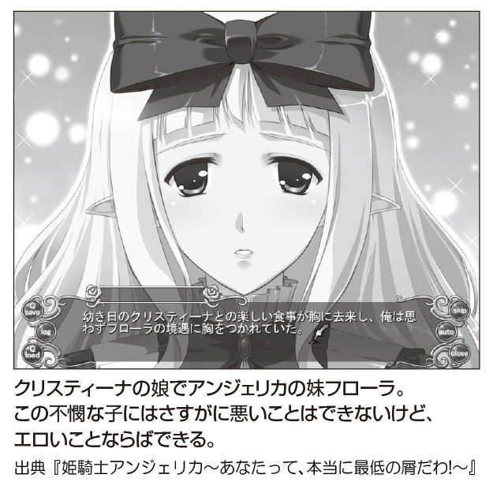
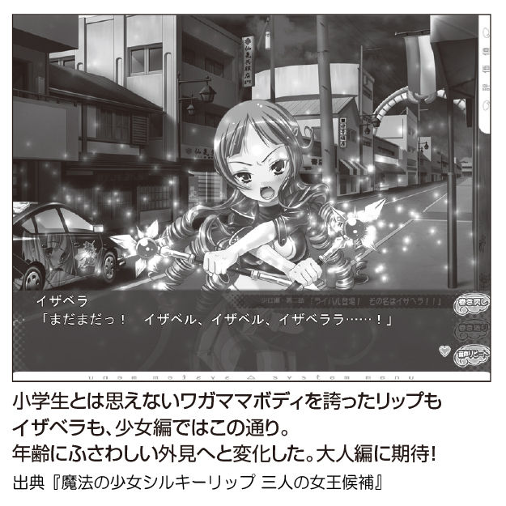
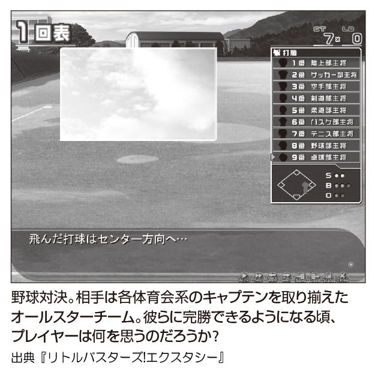
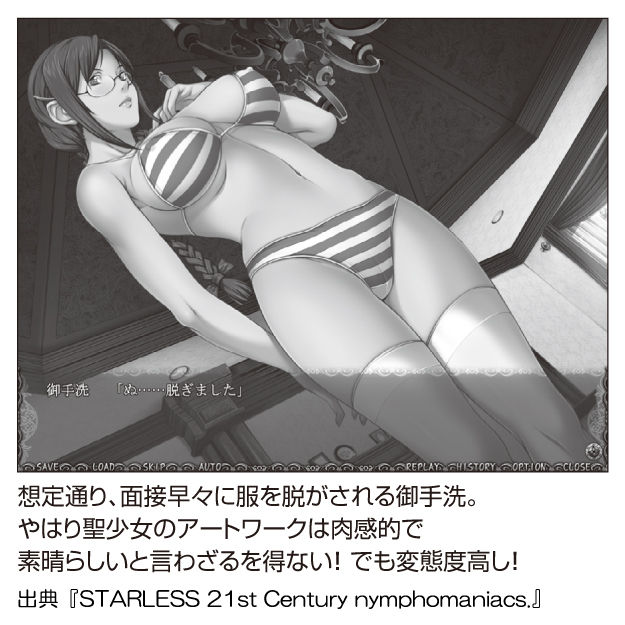
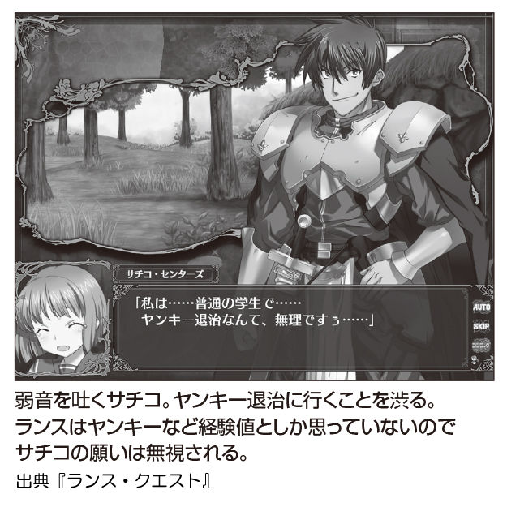

| 超エロゲーハードコア | |
| 阿部 広樹 & 箭本 進一 & 多根 清史 | |
超エロゲー
はじめに
エロゲーとは、エロいゲームのことである。
なあ、みんな、エロゲーは好きか？
俺たちエロゲーハンターはもちろん、大好きだ。ないと死ぬ。
とはいえ、エロスとは人の魂が求めてやまない、多種多様なもの。地上に住む人の数だけ、エロは乱れ咲いている。
俺たちエロゲーハンターは、エロゲーという星の数だけあるエロスを見つけ出し、その情念を紙面に叩きつけるフロンティアを切り開かずにはいられない。なぜなら、それがエロゲーハンターの宿命 だから！
人は自分のレーダーが反応しないエロの前を素通りする。そしてスルーされたまま、輝きを秘めた原石のまま埋もれてしまった地上のエロたち。それを黄泉の国から連れ出し、生まれた理由そのものを発見して説明する。エロゲーハンターとはエロゲーの代弁者なのだ。
高い金を払って、楽しめなかった。何時間もダルい文章を読んで、心がささくれ立つ。シナリオが日本語にさえなってなかった。いろいろ納得いかなくて、大損こいたと思ったとしよう。その人は、ゲームに込められたエロスを見つけられなかったにすぎない。だったら、中身をかっさばいてでも見つけ出そうじゃないか。諦めたらそこでエロゲーは終了だ。五感どころか第六感や七感も研ぎ澄まし、内なるエロスを高めて爆発させた者だけが、本当にエロゲーをプレイしたと言えるのだ。
むろん本書には、誰もが認める不朽の名作エロゲーも紹介されている。これからエロゲーの世界に入門するルーキーの方々に、無限に広がるエロの海で遭難しないための羅針盤にしてもらっても構わない。
でも、先人が通ったエロのグランドラインをなぞるだけではつまらない。俺たちエロゲーハンターと一緒に、ダイブしてみないか？ エロゲーの向こう側にある豊かなカオスの海へ！
エロゲーハンター 阿部広樹（バストの１号）
多根清史（ウエストの２号）
箭本進一（ヒップの３号）
特別企画
特別企画
特別企画
特別企画
アニメアワードでの「エロゲー作家」宣言
さる二〇一二年二月、東京アニメアワード脚本賞が『魔法少女まどか☆マギカ』の脚本家に贈られた。贈ったのは東京都の石原都知事が実行委員を務める東京国際アニメフェアであり、贈られた作家の名は虚淵玄。青少年保護育成条例改正によりエロゲーを規制しようとした側が、エロゲーのシナリオを手掛けてきた虚淵氏の来歴を知らずに「アニメ作家」としてお墨付きを与える皮肉な光景が出現したのだ。
エロゲー業界の中でも、虚淵氏は本流というより傍流に位置してきた。デビュー作の『Phantom PHANTOM OF INFERNO』は東西冷戦の記憶も生々しい時代に暗殺者たちの死闘を描き、次作の『吸血殲鬼ヴェドゴニア』では人外になりかけた主人公たちが闇に隠れて吸血鬼を始末するという『仮面ライダー』の原点を思わせるバトルもの。
どの作品も血の宴に銃火器の放つ硝煙の匂い、登場人物の多くが悲惨な末路をたどる作風に、ファンが送った二つ名が「バッドエンドの虚淵」。筆が乗れば乗るほどエロゲーの実用から遠ざかり、〝萌え〟よりも〝燃え〟。癒しを与える作品がエロゲーの本道とすれば、痛みを大盤振る舞いする外道を歩んできた。そうした本道もあれば外道も許される表現の自由が、エロゲーの風景を豊かにしてきたのだ。
『魔法少女まどか☆マギカ』や小説『Fate/Zero』が大ヒットしたこともあり、最近の虚淵氏は世間的にもっぱら「アニメシナリオライター」であり「小説家」だろう。しかし、先の脚本賞に対して、虚淵氏がツイッターでアイディアを募集した上で寄せたコメントには「潔癖を是とする社会からは汚泥と映るであろうアダルトゲーム業界ですが、そこで培った感性があってこそ、本作の脚本は成立しました」という一文があった。条例により表現の自由を縛ろうとする東京都に向かって、自分が表現の自由に育てられた「エロゲー作家」であると宣言したのである。
そんな虚淵氏が、今までのエロゲー人生に何を思い、曲がり角に立つエロゲー業界にどんな想いを抱いているのか。胸のうちに渦巻く万感を込めて、ここに語り尽くす！
度胸勝負でエロゲー業界に挑戦した『Ｐｈａｎｔｏｍ』
●──今日は虚淵さんのエロゲー人生といいますか、ニトロプラスと歩んだ道のりをお聞きできればと思います。虚淵さんが入社された頃のデジターボ（ニトロプラスの母体となった会社。後にニトロプラス単体で分社化された）は、まだゲームを開発してなかったんですよね。
虚淵 そうですね。デザインの受託や教材ソフトを作っていて、「オーサリングプログラマー」（画像や音声を組み合わせてコンテンツを作る技術者）という職業がまだあった頃なんですよ。そのオペレーターとしてデジターボに入社しました。
●──元々はオーサリングの技術者だったんですね。
虚淵 ただ、オーサリングツールでも、文字ベースのアドベンチャーならできちゃうんですよね。それもあって、取引先がエロゲーの話を持ってきて。それでできたのが『Phantom PHANTOM OF INFERNO（以下、Ｐｈａｎｔｏｍ）』だったんですね。
●──デザイン会社に入ったら、ゲーム作ることになったのは面白い巡り合わせですね。
虚淵 そういう経緯もあって、うちはいまだにプログラムが弱いんですね。所詮はオーサリングから始めちゃった会社だったので。
●──自分たちでもエロゲーを作ろう、と思われたきっかけがＬｅａｆさんの『雫』や『痕』だったそうですね。
虚淵 そうですね。完全にポルノに特化しなくても、話の面白さや演出の工夫をしていけば商品は成り立つみたいね、っていう突破口を見たと言いますか。完全にエロ特化型ならノウハウを積んでないと参入できないと思うんですけど、エロ＋何かで行けるのなら、普通に小説やマンガを描くのと同じ発想でやれそうなので、度胸勝負で踏み込んでいったんです。
●──Ｌｅａｆさんも伝奇要素に人気ありましたからね。『Ｐｈａｎｔｏｍ』も、エロよりは銃撃戦が新しかったですし。
虚淵 でも、今にして思えばムチャな企画だったなあと思いますね（笑）。表稼業としてのデザイン業務があったので、その裏で部活動みたいな感じで作ってましたから。せっかくだから好きなことをやってみよう、ぐらいの気持ちでやってましたね。
●──最初は有志の方々が集まって、空き時間に作ってたんですか？
虚淵 そんな感じですね。当時、社長に「君の仕事は全然お金になってなくて、その分を回してるのはデザイナーの利益だから頭上がらないよ」って説教されたこともありましたし。「すまんこってす」みたいな。
●──そして完成した『Ｐｈａｎｔｏｍ』ですが、ジワジワ売れたそうですね。
虚淵 意外にネットで評判にはなってくれたんですよね。初っぱなからではなかったですけど、ヘンなものが出てきたなと話題になって。
●──ＮＩＦＴＹサーブ（日本最大のパソコン通信サービス）などの口コミで広がった感じですよね。
虚淵 そうですね。でもＮＩＦＴＹサーブとか、今の子は知らないんじゃないですかね？ フォーラム（会議室）でいろいろ嬉しい書き込みをしてもらったのも助かりましたね。
●──一作目から順調な滑り出しで、幸せなスタートですね。
虚淵 確かに、あれは赤字が出なかっただけでも意外だったんです。五〇〇〇本の段階で、みんなでバンザイしてましたからね。まさか採算取れるとはって。でも、その後も（売れ行きが）止まんないよって、小売店の方々も首を傾げてました。（エロゲーは）その月の新作だけが売れるものなのに、毎月少しずつ出るという、すごくヘンな売れ方をするソフトだって言われるようになって「じゃあ、コンスタントに（継続して）作ってみるか」という話になりまして。
●──エロゲーを今まで知らなかった人にも売れたのかもしれませんね。
虚淵 だから物珍しさで買ってもらえる時代だったんですよね。そういうヘンなものが許された時代で、それを通が見出していく文化があった気がします。
「このブランドはここがヘン！」という時代
●──その次は『吸血殲鬼ヴェドゴニア』ですね。吸血鬼もので仮面ライダーを意識されたという。
虚淵 あれはあれで、流通さんが頭抱えていました。「吸血鬼ものはウケないんだよ」って。何が笑っちゃうかというと、『月姫』も吸血鬼ものだったんですよね。
●──そう言われれば（笑）。
虚淵 そんな企画がなぜ通ったかというと、そもそもウケるはずがなかった『Ｐｈａｎｔｏｍ』がそれなりに売れたってことで「こいつらにセオリーを言っても意味なさそうだから、やるだけやってみなさい」って感じて許してもらえたんですね。
●──でも、最初は学園ものをやろうという話だったんですよね。
虚淵 そうですね。今度こそ『To Heart』をやろうって言ってたんですよ。『Ｐｈａｎｔｏｍ』もちょっとだけ学園パートがあったから、できないことはない。教室のモデリングも使い回せるはずだと言いながら作ってみたら、どう考えても返り血を浴びた服で学校には行けないよね、と。「制服とジャージと着替え一着で、血しぶきを浴びるのは三回が限度じゃない？」ってあたりから、そのうち学校に行けなくなった、という酷い流れでした（笑）。
●──学園生活はあっさり放棄されましたね（笑）。
虚淵 あれは、自分のポリシーの限界なんですよ。（『Fate/stay night』の衛宮）士郎のように聖杯戦争をやってても学校に行くんだっていうのを貫き通せなかったんですよ。
●──士郎のブレなさはすごいですよね。何があっても日常を守るんだっていう。
虚淵 あちらはキャラクターの信念として組み込んでいたので、ちゃんとできたんですよね。そこまで頑なに守るキャラにできなかったので、あっさり不登校になっちゃいまして。
●──そして『ヴェドゴニア』はシーンごとに時刻や場所が出ますよね。
虚淵 まんま『仮面ライダークウガ』ですからね（笑）。
●──特撮番組っぽくしようと意識されたんですか？
虚淵 というより、簡潔なメソッドでやってみようかなと思ったんですね。三〇分一話完結で毎回バトルがあるという体裁にチャレンジしてみようってことで。でも、あんまり上手くいかなかった気もしますね。だから、いかにそういうテンプレート（型）が難しいかを思い知らされた作品でした。
●──筆の勢いが、型にはまるのを許さなかった？
虚淵 そうですね。そのうち、テンプレートを大事にしても仕方ないんじゃないか、と基準点が曖昧になってきて。ひょっとしたら、一番迷いながら作ったゲームかもしれないですね。でも、意外に愛された作品でもあったんですよ。『ヴェドゴニア』が気に入って、ニトロに入ってくれた新入社員も結構いましたし、不出来な子ほど可愛いという気持ちもあるかもしれないですね（笑）。
●──一八禁の表現の自由を、最大限に使ってましたよね。昔のピンク映画の自由さのような雰囲気を感じました。
虚淵 わりと不真面目というか、遊び半分で作れた時代だったと思うんですよね。いかにこの業界でヘンなことをやって注目を浴びるかという、傾奇者ですよね。だから「このブランドのゲームはここがヘン！」みたいな批評が多かった気がするんですよ。「こんな新しいことをしています」っていうのが売りになってたんですね。
●──ちょうどＴＹＰＥ−ＭＯＯＮさんの同人ゲーム『月姫』が口コミで広がっていた時期ともかぶっているんですよね。
虚淵 エロゲーなのにエロそっちのけで何かと戦っているのって、自分とか奈須（きのこ）さんがハシリだったのかなって気はしますよね。
●──ビジュアルアーツさんの『ＡＩＲ』などが叙情的なものを大事にした時期だったからこそ、バトルものを打ち出して盛り上がれたんですかね。
虚淵 当時は対抗するってほどでもなかった気がしますけどね。だいたい叙情派が八でバトルが二ぐらい。でも、一方で「全員が妊婦」とか、メチャクチャなゲーム出した人もいますから（笑）。
●──そのゲームを作った方（メイザーズぬまきち氏）もこの本で取材させてもらってます（こちら 参照）。
虚淵 だから主流派が叙情派に傾いている中で、イロモノ派がちまっと片隅にいた感じですよね。そのイロモノ派の中のいちジャンルだったのかなって気がします。
ハードルを上げてもお客さんがついてきてくれる驚き
●──その次が『鬼哭街』ということになるんですかね。
虚淵 会社的には『" Hello, world." 』になりましたけど。
●──『" Hello, world." 』は開発期間が長引いたそうですね。『鬼哭街』は、その中継ぎ的な位置付けだったんですか？
虚淵 『" Hello, world." 』は虚淵玄抜きで一本作ろうよっていうコンセプトだったんです。あまり一人に寄りかかりすぎると会社として回らなくなるので、今まで作ったノウハウだけで作れないかなっていうことで始まったんですよ。だけど、これがまた難航しまして。そのうちに、今だったら俺と東口（中央東口氏。元ニトロプラスの原画師）でサクッと隙間で作れねえ？ みたいな話をして、この程度のリソースで短いものを作れませんかって会社に交渉して、出したのが『鬼哭街』だったんですよ。分岐を使わないから、デバッグしなくて済むよねという省略化もして。
●──完全に一本道というのも思い切ってますけど、虚淵さんの書く主人公はあまり判断を迷わなさそうですよね。
虚淵 だから『ヴェドゴニア』は苦しくはあったんですよ。次にどう転ぶかわからない主人公を作るのが結構難しかったので。今思えば、その辺からゲームから逸脱しちゃったのかもしれないですね。
●──『鬼哭街』は虚淵節さく裂と言いますか、「サイバーパンク武侠片」ってハジけたサブタイトルですよね。
虚淵 ちゃんとしたエロゲーは『" Hello, world." 』がやってくれたと思うので、こっちはヘンなことしようぜって感じでやってましたね。なんて言うんですかね、ドッキリ企画ぐらいのレベルで好き放題やっちゃっていいんじゃないのと。エロゲーであることも半分ぐらい忘れて、イロモノとして作っちゃったものでしたよ。当時の印象で言ったら、『グラインドハウス』（二〇〇七年に公開されたアメリカ映画。クエンティン・タランティーノとロバート・ロドリゲスによる本編二本と実在しない予告編四本からなる、いわゆるＢ級映画にオマージュを捧げた怪作）ぐらいのふざけ半分でやってました。
●──本当に趣味一〇〇％ですよね（笑）。この頃はニトロプラスのブランドも確立して、そろそろ方向転換をはかる時期だったんですかね？
虚淵 そうですね。ほぼ並行して鋼屋ジンと『斬魔大聖デモンベイン』の企画を始めたりしてましたし。虚淵以外のライターもデビューさせなきゃダメだよねって思いはありました。ちょうど社内で原画のＮｉ＾θ もデビューさせたいという動きがあったので「この絵で企画を出せない？」ってことで鋼屋に振って、出てきた企画を膨らませた感じでしたね。
●──そこで「ニトロプラス＝虚淵玄」のイメージを脱却して、いろんな方向性を模索しようという動きになっていたんですね。
虚淵 確かに、その頃から自分も最初の停滞期と言うか、次にどういう手を打つべきかを悩んでいた時期だったと思います。鋼屋とやった『デモンベイン』が上手く成功したこともあって「もう自分はエロゲーを作れないんじゃないか？」って。「本当に商業的な成功を狙うんだったら、めぼしい才能に作らせたほうが会社としては正解だろうな」「じゃあ俺は何をやっていればいいんだろう？」と。そこから企画を立てては潰れ、立てては潰れみたいな、パッとしない時期が続いたんです。『沙耶の唄』が出るまでに、ちょっと間が空いたはずなんですけど、あの期間に上手く回らず頓挫したものが何本かあったんですよね。
●──それは、シナリオの方向性で悩んだんですか？
虚淵 いや、それこそテキストアドベンチャーから脱却しようと思って『ウィザードリィ』っぽいものを作ろうとしたり。なんかね、うちの社長が台湾のアニメ会社と仲良くなって、一本作るから一クール（三ヶ月＝一一〜一三話）分の脚本を書いてくれという話があったり。そのときに書いたシリーズが『アイゼンフリューゲル』になったんですけど。
●──ガガガ文庫で発表されたオリジナル小説ですね。
虚淵 だからニトロプラスという会社が軌道に乗り始める一方で、自分は次に何をするべきか迷い始めた時期なんですよ。
●──それはゲームだけに限らず、アニメでもアリという？
虚淵 それこそＢＬゲーもありだなぐらいの勢いで考えてました。
●──その試行錯誤の末にできた一本が『沙耶の唄』というのが、また、すさまじいですよね。エロどころか人類の枠を揺るがすエロゲーになってましたし。
虚淵 そんなはずなかったんですけどね。『デモンベイン』が明るいクトゥルフものとして成り立っちゃったんで、悔しくなったんですよ。「本当のクトゥルフは怖いよ！」っていう僕の釈然としない感じをぶつけるだけぶつけて、こっそり東口借りていいですかって。『鬼哭街』ぐらい安上がりに作れるといいよねってスタンスで。
●──『デモンベイン』はヒーローものでしたけど、こっちはガチにコズミックホラーですよね。
虚淵 自分のクトゥルフ感はそっちだったので。鋼屋にクトゥルフを紹介した手前、何か、あっち（ヒーローもの）に行ったのも後から考えたら悔しくなりまして。『デモンベイン』で初めてクトゥルフに触れる人が意外に多かったので、あとあとヤバいぞと思ったりもしたんですね。一応、オーガスト・ダーレス（人間が怪物を倒すヒーロー的なクトゥルフ神話を書いた作家）派じゃなくてＨ・Ｐラヴクラフト（クトゥルフ神話の創始者。ほぼ一〇〇％、人が発狂して死ぬ）派としての意地だけは通そう、と（笑）。
●──俺が本当のクトゥルフ神話を教えてやる！ と（笑）。
虚淵 そうしないと先人に申しわけが立たん、ぐらいの禊として作ったゲームですね。
●──でも、最後は純愛ものになりますよね。人類と怪物の違いとか、細かいことにこだわってちゃいけないと学びましたよ。
虚淵 まあ、恋愛っていうのは一種のキ◯ガイみたいじゃないかって、思いつきで書いたような話ですよね。
●──『沙耶の唄』は今でも根強い人気がありますよね。
虚淵 ビックリですよね。海外イベントに行っても、知ってますってお客さんがいるんですよ。アメコミになったりもしましたからね。
●──『魔法少女まどか☆マギカ』が大ヒットしたときに『沙耶の唄』も結構売れたって言いますよね。
虚淵 でも、ニコ動に（プレイ映像を）丸上げされたり、あんまり嬉しくない話もあるんですけどね（苦笑）。後になって意外だなと思ったのは、当時はただの思いつきでポロッと作ったものが、後々大きくなるんだなって。
●──やっぱりファンの期待を裏切れない「呪縛」みたいなものは感じられますか？
虚淵 いや、そこは逆なんですよ。とにかく驚かせてナンボでしたから「どうやってお客さんを突き放そうか？」「ドン引きさせようか？」ってことを考えながら作っていて。でも「いやあ、付いて来てるよ！」「振り払えてないよ！」「どんだけ逞しいんだよ、みんな！」って（笑）。あれは不思議な交流でしたね。
●──「今度こそ付いて来られないだろ！」ってハードル上げてましたよね。
虚淵 サービスのつもりで突き放そうとしたというのも、あるとは思うんですよね。そしたら思いの外、付いて来られてしまって。だから「ハードルを上げきれなかったんじゃないか？」「この程度じゃ足りないのか？」って悩んでもみたりして。
エロゲーが作りたいのか？ ヘンなゲームが作りたいのか？
●──二〇〇七年の『続・殺戮のジャンゴ―地獄の賞金首―』もハードルが高くなってますよね。
虚淵 そのあたりからエロゲーがわからなくなってきた頃合いですよね。そろそろカンブリア紀（生物の進化が爆発的に起こった時期）も終わって、エロゲー作りがビジネスとして成立することにみんなが気付き始めて、定番のソフトを手堅く作るのが賢いような空気が出始めた頃なんですよ。気がつくと、周りにトチ狂ったゲームを作っていた仲間たちがいなくなっていて。ニトロプラスを立ち上げたとき、（公式サイトから）相互リンクを張らせてもらっていたブランドが、もう半分以上消えちゃっていて「あれ？」って気持ちになりましたね。
●──二〇〇七年といえば、エロゲーブランドの淘汰がかなり進んでましたよね。
虚淵 逆にニトロプラスが、一種の定番ブランドになっていたんです。ただ、あくまでもイロモノという自覚でやってましたから、自分でもニトロプラスそのものに戸惑いを感じ始めて「俺はここで何をやっていけばいいんだろう？」って気分になったんですね。あとは『ヴェドゴニア』とかでやった伝奇系やバトル系のエロゲーを、他も作るようになってきたんです。それがニトロプラスだけの武器じゃなくなっていて「俺たち定番のエロゲーを作ってね？」って。そこから道を見失い始めたんです。定番だったら誰か他の人に作ってもらおうという気持ちで、夜刀史朗さんに『塵骸魔京』をお願いしたり。「自分はヘンなことをし続けないといけない」って思いから、悩んだ末にたどり着いたのが『ジャンゴ』だったんです。
●──裏街道のはずが、いつの間にか王道になってしまっていたという。仕方ないから、新たな獣道を切り開こうということですね。
虚淵 そうですね。ただ、すでにエロゲーという意識は半分なくなっていましたね。「俺はエロゲーが作りたいのか、ヘンなゲームが作りたいのかどっちなんだろう？」というところまで悩みは行っちゃって。
●──それで『ジャンゴ』は全力でヘンなゲームにしたんですね。
虚淵 『ジャンゴ』は「最近、社内の雰囲気悪くね？」ってことで、面白おかしく作ろうとしたんですよ。むしろ、社内オリエンテーションぐらいのイメージですね。「俺はユルっと作るから、みんな好きにやっていいよ」って感じで。自分は演出も手放しましたし、テキストだけを渡して、若手に好きに演出をさせたり。なんでもありの世界観を作るので、みんな好きにやってみて、ストレスを溜めない仕事しようよって。昔のようなこだわり方をせず、現場にお任せで進めた企画なんですよ。その結果、初回特典には光線銃がついたり、よくわからないことになったんですけど（笑）。
●──その頃になると、虚淵さん個人でどういうゲームを作りたいというより、会社としてのマネージメントを考えられるようになってたんですかね。
虚淵 そんな感じですね。本道になるものは誰かに作ってもらい、自分は亜流でいたほうがいいよって気持ちでした。
●──そこでゲームの開発から距離を置いて、アニメや小説にシフトされたんですか？
虚淵 確かに『ジャンゴ』と同時期が『ブラスレイター』（悪魔の力を得た者同士が戦うテレビアニメ）だったと思うんですよね。社長の思惑としても、ゲームに留まらずマルチに会社を広げていこうっていう思いがあったので。ＧＯＮＺＯ（アニメ制作会社）さんからアニメの話をもらったときも、面白半分でやるだけやってみようよって。（監督の）板野一郎さんも社内のみんな大好きでしたから、ホイホイ行っちゃった感じですよね。当時は『ジャンゴ』と並行して二足のわらじでしたけど、まあ、こんなに（アニメの）深みにハマるとは思いませんでしたよ。
●──それ以前に『Ｐｈａｎｔｏｍ』もＯＶＡ（二〇〇四年）になってましたけど。
虚淵 あのときは、完全に丸投げだったんですよ。絵コンテは見せてもらったりしましたけど、具体的な作業の話は一切しなかったですし。
●──じゃあ、アニメとの最初の関わりが『ブラスレイター』だったんですね。最初から結構ヘヴィに関わられていたという。
虚淵 いや、せいぜい三分の一ぐらい（全二四話中八話のシナリオを担当）ですね。ＧＯＮＺＯのプロデューサーさんがニトロプラス好きな方だったんで、ライターとして使いたいって形で連れて行ってもらったんです。でも、板野さんとお会いして「こんな仕事じゃダメだ」って話になって、小林靖子さん（『仮面ライダー龍騎』や『特命戦隊ゴーバスターズ』などの脚本家）にも来てもらったり、自分が出した構成案も八割ぐらい板野さんに変えてもらったり。そこで「アニメはこうやって作るんだよ」ってことを手取り足取り教えてもらいましたね。
●──『ブラスレイター』に参加して、アニメの基本を学ばれたんですね。
虚淵 そうですね。実はそれ以前って、アニメに対する印象が悪かったんですよ。他所でメディアミックスに巻き込まれた原作者たちの声を聞くと「こんな酷い目に遭った」という話ばっかりでしたから、「アニメにだけは近寄りたくない」と思っていたんです。そこでＧＯＮＺＯさんの話も用心してたんですけど、とにかく板野さんのキャラクターが強烈すぎて「こんな熱いクリエイターがまだ生き残っている現場なんだ！」って驚いたんですね。その熱気にアテられてから「アニメって面白いんじゃね？」って、コロっと変わっちゃいました（笑）。
●──板野さんは熱い方ですよね。『メガゾーン23 』の作画をやるときも、バイクで首都高を爆走してリアルを追求されたという（笑）。
虚淵 あの命懸けっぷりにはシビレましたよね。なんで板野さんが何事もリードできるのかっていうと、板野さんが一番酷い目に遭うポジションなんですよ。その上でこうしたいって言われたから、それは文句が言えないですよ。「最終的に矢面に立つのは、この人なんだな」って思っちゃうと、なんの反論もできないなって。
●──とことん最後までやり抜く男気がありますよね。
虚淵 それを見せられちゃって「今の時代にもクリエイターとして、あれだけ真っ直ぐな人がいたんだ」って。考えてみると自分はずっと独学でやってきましたから、ベテランの先輩クリエイターの胸を借りてモノを作ったのは初めての経験だったんですよ。それで一気に、それなりの成功もしたけど拗ねてた自分が目覚めたところがあって「まだまだじゃん、俺は」って気分になれたんですよ。板野さんは日本の文化としてのアニメを隆盛させたいっていう思いがすごくある人なので、自分も学んだ分は恩返しとして日本のアニメに返さなきゃダメなんじゃないかって。
●──それで『ブラスレイター』の後も引き続きアニメに関わり続けたんですね。
虚淵 このアニメ作りを一回で終わらせちゃったら板野さんに合わせる顔がないなって思いましたね。その後に『Ｐｈａｎｔｏｍ』のテレビアニメの話が来たときも、かなりガッツリ噛ませてもらって。俺らの作ったって言えるような、胸を張れるようなアニメにしましょうって思いで参加して、何話か脚本も書かせてもらい、ついでに黒田洋介さん（『機動戦士ガンダム00 』や『あの夏で待ってる』などの脚本家）のノウハウも盗ませてもらって（笑）。
●──黒田さんも、仕事の域を超えてアニメの仕事にこだわりを持つ人ですよね。
虚淵 そうですね。だから、必ずしもビジネスと割りきってアニメを作ってる人ばっかりじゃないなって。『Ｐｈａｎｔｏｍ』で真下耕一さん（アニメ監督。代表作に『未来警察ウラシマン』など）とお会いしたときも、強烈な美学の持ち主だなと思いましたね。アニメの世界って定形がないなっていう驚きもありました。
『Fate/Zero』でのキャッチボール
●──虚淵さんが出会われたアニメ業界の人たちは、いい意味で普通の人が一人もいませんよね。そうした熱い人たちと出会って、アニメとガッツリ向き合っていこうという覚悟を決められたわけですか。
虚淵 そうですね。でも、この流れは予想外ではありましたよ。その頃は『Fate/Zero』も並行して書いてたり、ゲームよりアニメと小説の日々だったんですね。
●──その頃から小説家として虚淵さんの名前を聞くようになりましたね。
虚淵 その頃の会社でのスタンスは、広告塔というか、他所のジャンルにニトロプラスの名前を伝える役だったんです。「ニトロプラス」っていう肩書きを背負って、スタッフロールや奥付に載るのが俺の役目だったんですよ。その結果、看板として一番売れちゃったのがアニメだったのかなあって。
●──『Fate/Zero』といえば、奈須きのこさんとの出会いはどこから？
虚淵 あれは『鬼哭街』が出た直後ぐらいですね。『空の境界』（奈須氏の小説。後に劇場アニメ化）の最初のドラマＣＤ化（二〇〇二年）のとき、ブックレットでの対談形式という形で呼ばれて初めてお会いして、その場で意気投合して翌朝までずっとファミレスで喋ってましたね。その頃は、まだ『Fate/stay night』は出てなかったんですよ。『月姫』がヒットして、『空の境界』の同人誌版が出て、ドラマＣＤになったタイミングですね。
●──『Ｆａｔｅ』以前から交流があったんですね。
虚淵 『Ｆａｔｅ』のインタールード（幕間の物語）の部分を書かないかって話が来かけたぐらいですね。結果として奈須さんが一人で書き上げるってことで流れたんですけど、そのおかげでアーチャーのネタバレ（『Ｆａｔｅ』最大の核心）とか食らってましたからね（笑）。「もしかしたらこうなるかも」という形で、プロットをちらっと聞いていたので。
●──それは災難ですね（笑）。じゃあ、奈須さんとは一〇年越しのお付き合いになるわけですね。
虚淵 今となっては、そうなりますよね。昨日のような気もするんですけど、考えてみると時が経っているんだなって。
●──そこから『Fate/Zero』の話はどうやって来たんですか？
虚淵 最初に『Fate/hollow ataraxia』（『Ｆａｔｅ』のファンディスクであり続編）の短編ストーリーを何本か書かない？ って誘ってもらったんですけど、そのときは綺礼と切嗣の最後の闘いだけを描く話にしようかなと思ってたんですよ。だけど考えているうちに構想が膨らんでしまって、このまま全陣営（『Ｆａｔｅ』シリーズは人間のマスターと召喚された英霊＝サーヴァントが組んだ、各陣営が「聖杯」を賭けて殺し合う）が揃ったらいいな、いっそ全部書いちゃおうかって。それでふざけ半分で話を作ったら、一週間ぐらいで「やべえ、揃っちゃった！」という話になって（笑）。
●──ノリで書いたら全員揃っちゃったんですか（笑）。
虚淵 とりあえずＴＹＰＥ−ＭＯＯＮにもニトロプラスにも黙って一巻分だけ書いちゃおうかってことで、ダメって言われたら俺らでコミケの東館で売ろうぜとか言ってたんです。そうして改めてうちの社長と武内崇（ＴＹＰＥ−ＭＯＯＮ代表）さんに話を通したら、商売にしちゃおうという流れになり、同人版のときは四巻構想で書いていく形になったんですよね。
●──虚淵さんが『Fate/Zero』を執筆するにあたって、奈須さんが条件や縛りを課したというウワサがネットで流れてましたけど、実は虚淵さんが書かれたのが先だったんですね。
虚淵 ネットでの話は、かなり捏造が入ってますね（笑）。『hollow ataraxia』と同時期だったんで、自分のほうから「こんなネタを盛り込もうと思っているんだ」って話したのを奈須さんが拾ってくれたり。どっちが先って結構、曖昧だった気がするんですよね。
●──（主役サーヴァントの）セイバーと（マスターの）切嗣が三回しか会話しないという話は？
虚淵 あれは『stay night』の段階であった伏線ですね。『hollow ataraxia』に出てきた話っていうのは、どうだったかなあ......。たとえば（『hollow ataraxia』で）慎二が出奔した叔父がいるという話をしたのは、自分のほうから『Fate/Zero』に慎二の叔父を出したいって話をした後だったと思います。それを奈須さんが拾ってくれたんですよね。
●──一方的に奈須さんが条件を課したわけではないんですね。
虚淵 そうです。結構、誤解されている部分があるんですよね。『hollow ataraxia』が先にあったわけじゃないんですよ。
●──『hollow ataraxia』と『Fate/Zero』は、お互いのキャッチボールでどんどん構想が膨らんでいったんですね。
虚淵 そうですね。『Fate/stay night』まで遡るネタは、明らかに奈須さんが先なんですけどね。
●──どちらが考えたかわからないほど、その時期は密にやり取りされてたんですね。
虚淵 当時は一シーン分を書き上げては渡す、というキャッチボールやってましたね。
●──じゃあ、結構ネットも誤解している部分がありますね。
虚淵 奈須さんが自ら（同人版ＶＯＬ．４の）あとがきで書いているのが、一番確かですよ。ギルガメッシュとイスカンダルっていう王様が二人いて、彼らとの闘いを通して、セイバー（正体はアーサー王）は自分の王道に疑問を持つようになるっていう話とか、その辺のオーダーはもらったんですよね。会話が三回とか別にいいよって話もされてた気もするんだけど、そこは自分のほうで意地になっちゃったのかな。
●──『Ｆａｔｅ』の本編に虚淵さんの外伝が影響を与える関係って面白いですよね。
虚淵 ウェイバー（『Fate/Zero』のマスターの一人）の場合は、ロード・エルメロイがマテリアル本（エンターブレイン刊『Fate/complete material』。『Ｆａｔｅ』シリーズのイラストや世界観を収録した本）に出たんですね。マテリアル本のロード・エルメロイが先にあったわけではないんですけど、マテリアル本のエルメロイがゲーマーだっていうのはあっちが先で、それを自分が拾って自分のエピソードを入れたりとか、そういうキャッチボールがありましたね。
●──なるほど。
虚淵 ウェイバーは『Fate/Zero』が先でしたね。マテリアル本に、こっそり『Fate/Zero』のキャラを入れちゃおうぜっていう話で、ウェイバーの成長した姿って形でロード・エルメロイはいたなあって。
●──逆算して入れる遊び心ですよね。
虚淵 『hollow ataraxia』とマテリアル本は『Fate/Zero』の執筆と並行していて、まさに自分と奈須さんがキャッチボールしてる時期にできたものでしたから、その辺のネタの順序はちょっと入り組んでるんですね。その時期には『hollow ataraxia』も大筋は完成してましたから、大局に影響はなかったんですけど、細かい小ネタのレベルですよね。そこには『Fate/Zero』の原稿が少し反映されてるところもあったんです。
誰にも頼れない現場だった『魔法少女まどか☆マギカ』
●──そして再びアニメの話になりますが、虚淵さんのお名前は『魔法少女まどか☆マギカ』で広く知られるようになりましたよね。
虚淵 実は『まどか』以前から別の企画も二本ぐらい動いてたんですよ。『まどか』は『Fate/Zero』が完全に終わった後で、それを読んだアニプレックスの岩上敦弘さん（『まどか』のプロデューサー）が声をかけてくれたんです。
●──岩上さんも面白い座組を組まれましたよね。『化物語』の新房昭之監督と『ひだまりスケッチ』の蒼樹うめさんがキャラクターデザインという。
虚淵 ホントですよね。今にして思えば、あれは見世物小屋といいますか（笑）、もうマッドサイエンティストの実験だったと思うんです。「ちょっと、これとこれをくっつけてみようぜ」みたいな思いつきじゃないですかね。
●──岩上さん自身も「なぜ『まどか』が大ヒットしたかわからない」という話をインタビューでされていますよね。
虚淵 だって、そもそもちゃんとしたＣＭ枠もなかったですし、何一つグッズも用意してませんでしたし。別にダメとは思わなかったでしょうけど、ちょっとやらかしてみようかぐらいの気持ちだったんでしょうね。
●──全一二話しかない中で、三話で盛り上がった後のジェットコースター展開はファンの心をつかみましたよね。
虚淵 今まで勉強させてもらったことの集大成ですね。『まどか』は初めて、誰にも頼れない現場だったんですよ。それまでは先輩なり師匠がいてお手本を見せてくれたんですけど、いよいよ「勉強させていただきます」では通じない場所で仕事することになって、それまで教わったことを一通りやったんですね。
●──『まどか』はスタッフが決まらないうちに、脚本だけ先にできあがったんですよね。
虚淵 一応キャラクターデザインのラフはあったんですけど、脚本が上がってから間が開きましたし、シャフト（アニメ制作会社）さんのラインの整理もあったんで。
●──じゃあ、ほぼ独力でシナリオを書き上げられたという。
虚淵 そうですね。打ち合わせもあったんですけど、五分ぐらいで終わってましたから。「これでいいんじゃないかな？ じゃあ、飲みに行きますか！」っていう。
●──軽いノリだったんですね（笑）。『まどか』が終わった後、ゲーム開発には関わっておられるんですか？
虚淵 いや、完全にラインが止まっちゃってますね。『まどか』の後にガッと仕事が来たのを甘く見過ぎたといいますか。やっぱり黒田さんとかを見てましたから「このくらいの本数を同時に回せて一人前のアニメのライターを名乗れるんだろう」っていうヘンな気負いがあったんですね。それでやってみたら、当然そんなわけはなく。あの人がバケモンなだけで、バケモンと張り合おうとしたばっかりに酷い目に逢いました（笑）。
●──黒田さんの執筆スピードは化け物じみてますからね（笑）。依頼は来るもの拒まずで受けちゃったんですか？
虚淵 受けすぎて限界が来ちゃったもんだから、ゲームも何もできなくなっちゃったんですよ。（アニメの脚本を）ギリギリでクォリティを落とすことのない範囲で止められはしたんですけど「このぐらいできるよね」って甘く見ていた量だけでお腹いっぱいでした。Ｘｂｏｘ３６０用の『Ｐｈａｎｔｏｍ』もマスターアップで社内が大騒ぎしてた中、自分はずっと『PSYCHO-PASS サイコパス』（フジテレビ深夜の「ノイタミナ」で放送中のアニメ）の脚本を書いてました。すまんなあ、と思いながら。
●──でも、下倉バイオさんも活躍されて名作の『スマガ』も出ましたから、ニトロプラスの将来もひとまず安心ですね。
虚淵 まあ、あの辺が柱としてニトロプラスを支えてくれているんで、俺はもう広告塔でいいやってスタンスでフラフラとやっていたんです。まさか広告塔の看板がこれほど重くなるとは思わなかったですけどね（苦笑）。まあ、会社のことを放っておいていい環境になったんだから、とても嬉しくはあります。
オタクの声を集約した受賞のコメント
●──そして『まどか☆マギカ』がヒットしてから、石原都知事が主催する東京国際アニメフェアで、東京アニメアワードの脚本賞が贈られたんですよね。都知事が青少年保護育成条例の改悪で、さんざんエロゲーを目の敵にしておきながら。
虚淵 たぶん、俺がエロゲーを作ってるのを知らないんじゃないですかね？ エロゲーライターがアニメで大きく当てたってことをちゃんと認識している人が、世の中にどれぐらいいるんだろうって。みなさん「黄色い人（『まどか』の巴マミ）の首をもいだ脚本家がいるらしい」レベルの認識だと思うんですよ。そいつが何者かというところまで、興味は及んでいないんでしょうね。
●──そういう浅い人たちを振り向かせるほど、『まどか』は大ヒットしたってことでしょうね。
虚淵 そうなんでしょうね。でも、世間的には自分は新人だと思われてるんじゃないですかね。そのくらいには日陰だったんで。
●──でも、そこで出された声明は見事でしたね。
虚淵 あれはツイッターでみなさんから募ったものですからね、自分で考えたわけでもなく。ホントだったら辞退したほうが良かったかもしれないんですけど、表彰台に登って喋るいい機会だなと思って。俺が何かを言いたいってことじゃないけど、みんなが言いたいことあったら代わりに届けてくるよ！ みたいなスタンスでしたね。もし自分の勝手だけ通すなら、辞退というか、久保田（光俊氏。シャフト社長）さんにお任せしてたんだと思うんですよ。そこを、ちょっと考え直して。
●──ニトロプラスの広告塔から、オタクの広告塔になったわけですね。
虚淵 そうですね。別に自分ひとりで『まどか』を成功させたわけじゃないですし、声援を送ってくれたお客さんの力もあって壇に登るんだから、自分の一存で蹴っちゃうのも違くね？ って気分にもなったんです。かといって、自分が好き勝手に喋るのも違うよねって。だから、あんな便利なツール（ツイッター）があって良かったですよ。公開討論みたいに意見が募れましたし。
●──「東京都に向けて伝えるべきメッセージを発信する絶好のチャンス」と呼びかけて、フォロワーからアイディアを募集したんですよね。
虚淵 いくつかもらった例文を組み合わせて作った文章なんですよね、最初に自分で草稿を上げたのかな？ それを叩き台にして、じゃあこれで行こうって（編集部註・まずプロフィールを提示し、意見を募ってＡ案とＢ案を作成。その後、フォロワーから提案された折衷案を元に作られたＣ案が最終的に採用された）。
●──オタクの集合知をネットで実現したんですね。
虚淵 それで何が変わったというわけではないと思うんですけどね。こればっかりは問題がややこしいですし。二次元エロの展開そのものも、ちょっとマズかろうって気がしますし。ただ、それを自分が言っていいのかっていう問題もありますし。
●──ユーザーの欲望に応えて、どんどん倫理的に危うい方向に走ってますよね。
虚淵 そもそも売ってはいけないものだったと思うんですよ、エロゲーは。売れれば売れるほど世間様にご迷惑をかけていることは間違いないわけですから「この程度の稼ぎならお上も見過ごしてくださいますよね」っていう範囲の中で、どれだけのことやるかってジャンルだったはずなんです。いつの間にやら「これは稼げるからビジネスにしよう」っていう回路になったあたりから、広報も加速するし、露出も派手になるし、当然それを不快に思う人の目にも留まるようになる。基本ほとんどの人にとって不快なものであるという前提は、絶対に外しちゃいけなかったと思うんですよ。
●──ビジネスの規模が大きくなると、想定してない人の目にも触れてしまいますよね。
虚淵 好きな人たちだけに狙い撃ちで届く広報を工夫しなきゃいけなかったんですね。派手に露出して新規顧客を開拓とか「バカ言ってんじゃねえよ」って話だと思うんです。ただ、それを自分の立場で言っちゃっていいのかは、かなり悩ましいところで。大元の信念で言うと「エロゲーライターのペンネームで一般作を書いちゃいけない」って思いはあったんですね。だから一般作のオファーがあったときは、ペンネームを変えて書いたりもしていたんですよ。
●──別ペンネームの作品もあったんですね。
虚淵 たまたま「虚淵玄」という名前を使った作品だけがバカみたいに売れちゃったってことで。たとえば『Fate/Zero』なんて、『Fate/stay night』を読んだ人にしかわからん話を書いたつもりだったんですよ。だから、これは「虚淵玄」名義でいいよね、エロゲーの二次創作だもんねって思ってたら、地上波で流れるわ書店には並ぶわ。いつの間にかエロゲーの名前のまま、表に出ちゃったのは事故みたいなもので、自分がよしと思える形ではなかったんですね。
●──『Fate/Zero』を書かれた数年前には予想もできなかったことですよね。
虚淵 本当は、日陰者は日陰者としてやってかなきゃいけない。卑屈な意味ではなくて、それでエロゲーの世界は守られると思うんです。こっそりやっていればこその自由だった。自由な空気を守るためには、ちゃんと自衛手段を講じないといけなかった。それは、ズバリ売り過ぎないことだったと思うんですよ。売り過ぎちゃったら注目されちゃうし、市場としての縛りも出てくるし、エロゲーがエロゲーらしくあるための自由がどんどん削られていく。それもあってエロゲーライターがビッグネームになることは本当は良くないことだと思うんですね。
●──本来のターゲットとかけ離れた人の目について、バッシングの対象になっちゃうんですよね。
虚淵 その点でいうと、俺はエロゲーの業界の人間として、申し訳ないことをしてしまったなという気持ちはあるんですね。ただ、それは通じづらい理論でしょうね。売れなきゃダメだってみんな思ってるだろうし、売っちゃダメだっていう言い分はたぶん伝わらない。ただ、あの条例が成立した流れは、まさに売り過ぎちゃったがゆえに警戒された、奴らは産業としてドンドン発展して、世間の良識を脅かすに違いないと目をつけられたがゆえですね。
●──市場規模が小さかったら、規制しようとも思いませんしね。
虚淵 そこに関しては、こちらの業界側のミスもあったと思うんです。ただ、それを踏まえた上で許せなかったのは、その条例そのものがいくらでも恣意的に運用できる、前提抜きにして悪法だったってことです。そこには抗議しなきゃいかんと思いつつも、その文章が「ロリペド・マンガ読んで何が悪い！」って開き直ったら、それはマズいんですよ。それは「悪い」から。自分らの特殊な性癖を正当化するために、表現の自由があるわけでもない。やっぱり為政者の暴走を阻止するための表現の自由であって、個人の欲望を満たす自由ではないんですね。
●──「ロリペド・マンガを読む自由」というのは、規制サイド以外の人たちも敵に回しますよね。
虚淵 特に酷いなと思ったのは「ロリペド・マンガは守るべきだがＢＬは規制するべきだ」とかね。なんだそれって。そもそも規制に反対する我々が一枚岩になれていない。規制のどこがマズいからと態度を統一しないといけないところで、オタクサイドもてんでバラバラだったので、そりゃ勝ち目ないよなって思いますよね。
●──コミケの縮図というか、ジャンルが違う人たちは仲が良くないんですよね。
虚淵 「とにかく規制は困る」って言っても、仕方ないじゃないですか。「欲望の満たしようがなくなるから困る」っていうことに対しては「それは我慢しろ」ですよね。「これは悪法だから困る」ということを正当性をもって主張するには、まずはエロ業界も襟を正さないといけなかったなって思うんですね。
●──ソフ倫も「自分たちで倫理的に規制できます、ルールを守れます」という精神で発足したわけですけど、そうやって法規制に歯止めをかけた経緯をみんな忘れてますよね。
虚淵 その辺のエロメディアの自衛手段が疎かになっているところで、攻め込んできた外圧に反対反対って言ってもどうにもならない。ジレンマとして、その自衛手段を脅かしちゃってるのは、まさに俺や奈須さんだろうなって気がするんですね。エロメディアに変な注目を集めちゃって、金の匂いがするぜって思われてしまったという。本当は、我々が目に触れすぎる段階で名前を変えたり、そういう配慮をすべきだったのかもしれない。だけど、そうは上手くいかず、世の中の流れも読みきれるものでもないですし。だから、エロゲーに対しては申し訳ないことをしたという思いはあります。
自由な楽園としてのエロゲー業界を守るために
●──数年前はエロゲーの肌もあらわな立て看板が秋葉原の表通りに並んでいて、そりゃあ目をつけられるだろうって思いましたね。
虚淵 売れれば正義という前提は、本当は疑ってかかるべきなんですよね。売っていいもの悪いものって判断を、メーカーサイドではちゃんとやってきたはずなんですけど。奈須さんだって『Fate/stay night』ではイリヤ（ロリ少女）ルートを自重したり、配慮をしてるわけですよ。「このラインまでは人目に晒していいだろう」っていう間合いの測り方は、もっと細心の注意を払うべきだったのに、ある頃から、それが完全にスッポ抜けちゃった人たちがビジネスチャンスとして乗ってきたのが由々しかったですね。
●──世間との間合いの取り方がずさんになったんですね。
虚淵 そうですね。ちゃんと自由な楽園としてのエロゲー業界を守ろうよっていう意識、それをブチ壊しにかかってきた奴らにノーと言えるスタンスをみんなが持つべきだったんでしょうね。でも、やっぱり商品が売れれば嬉しいし、お金の匂いがすればこそフィギュアとかバンバン出たわけですし。そこで、売っていいかどうかのジャッジを忘れちゃったところから、すでに目をつけられるのは必然だったんです。ついでに悪法を作られる手段に利用されたことは最悪な話ですけど、逆にそこは世間が牙を向くべきだったと思いますけどね。エロゲーうんぬんではなくて「その法律はおかしいだろ」って声が上がるはずが、その人たちを黙らせるためにエロメディアの氾濫は利用されたわけです。
●──本来は表現の自由を守ろうと立ち上がりそうな人たちが、「エロゲーが規制されるから」とダンマリを決め込んでましたよね。
虚淵 二つあった問題を巧みに使い分けられて、いいように踊らされたわけですよね。
●──でも、末永くエロゲー業界を守っていこうと思うでもなく、今食えればいいという人もいるわけで、送り手も一枚岩にはなりにくいですよね。
虚淵 お客さんも「お金を払っているんだから、相応のサービスは受けられて当然だ」というスタンスで来ますし、素で「お前らサービス業だろ？」って言ってきますからね。そもそもエロゲーは会員制クラブみたいなもので、ここに入って来られる資質を持っているか問わなきゃいけなかった。この店に入ってくるなら、店の迷惑になることは外ではしないよねっていう。その辺のマナーというか、暗黙の了解って日本人は苦手なんですかね。
●──現実の社会では組織のしがらみに囚われているから、趣味では天然のまま無礼講でやらせろって気持ちがあるんでしょうね。
虚淵 でも、そのままの格好で出て行っていいものじゃない、外に出るときはスーツを着ようぜっていう。やっぱりビジネスとして回り出しちゃったあたりから、お客さんも金払ってる分、俺の言い分は通るはずだろって思ってるフシはある。この業界自体を大切にしようよって発想自体が、すっ飛んで行った気がしますね。
●──お客さんがそう望んでいる以上、違う方向に行こうとは言い難いですよね。
虚淵 かくいう自分も、今からエロゲー作っちゃダメだと思いますしね。ただ、そうは思っていても、受賞が決まったときは記念エロゲーを作ろうと思ったんですけど（笑）。
●──東京アニメアワード、受賞後の第一作がエロゲー！ という（笑）。
虚淵 それは大人気ないな、そういう問題じゃないと考え直しましたけど。エロゲーライターですって言うべきだとも一瞬思いはしたんですね。でも、周りの人を巻き込んでしまっていいのか、痛快であればいいのかって問題でもない。だから、薄氷を踏むようですよね。
●──二〇年ほど前はエロゲーは普通にパソコンゲーム売り場にありましたけど、特に規制されなかったのは、存在に気付かれてなかったからですよね。
虚淵 こっそりできてたわけですよね。そういう、気付かれなかったからこその楽園だった気はするんです。いっそのこと、エロゲーは儲からなきゃいいんじゃないかと思ったりもしますよ。本当に、殺される勇気がある有志だけが、自腹を切って作り続けるんじゃないかと思って。まあ、それは傍目からは衰退って見られるんでしょうけどね。
カンブリア紀の自由を再び
●──エロゲー業界が襟を正そうという体制になれば、虚淵さんがエロゲーに戻ることもあり得ますか？
虚淵 うーん、やりようですね。ラノベに（市場を）持っていかれちゃったなっていう気もしますからね。
●──一部のラノベって、エロゲーの安い代用品になってますよね。
虚淵 お客さんのエロに向ける熱が変わっちゃったって気がするんですよ。昔は八八〇〇円出さないと入れなかった秘密クラブだったのが、今じゃ数百円払って薄い本（エロい二次創作同人誌）を買ってくればオッケーみたいな。そういう敷居の低さがあって、かつてはエロゲーでしか許されなかったハレンチが、ラノベに持って行かれちゃったのは痛いかもしれないですね。
●──ソフトエロの原作が地上波でアニメ化されて、過激なものはＤＶＤで見てくださいっていう流れができあがっちゃってますね。
虚淵 なんかね、二次元のおっぱいのありがたみが減った気がするんですよ。インフレというか。メッセサンオーの門を潜らなければ手に入れなかった苦労が、今はどこへ行ったって感じですからね。
●──昔はエロゲーの敷居も高くて、パソコン一式で二〇万円はかかりましたもんね。今は数百円のラノベ一冊で、同じような快楽が手に入るという。
虚淵 その辺の空気の変化を感じますよね。やっぱりけしからんものへの憧れがあったんです。今はエロをやっても、けしからんって思われないっていう。普通におっぱいが揺れているのが釈然としないですよ。
●──揺れるおっぱいがテレビでただで見られたりはするんですけど、反面でお客さんの嗜好から外れた表現は許されない空気がありますね。
虚淵 エロゲーの「なんでもやってもいいよね」っていうカンブリア紀の自由さは、今は望みようがないかなって気もするんですよね。そんな場所になってくれれば、また喜び勇んで作るとは思うんですけれども。もう進化の最適解というか、これが勝ち組ですっていう回答が出ちゃったのがつまんないんですよね。まあ、世の中は変わっていくもんですから、それを嘆いたってしょうがないことですからね。
●──ご自身が、世の中を変えちゃった一人でもありますよね。
虚淵 でも、望んだ方向に変わってないという点では忸怩たるものはありますけどね。こんなはずじゃなかった感はありますよ。
●──それはまさに、焼け跡を前にして呆然とする虚淵キャラに通じるところがありますよね。
虚淵 そうかもしれないですね。だから、その辺は喋りづらいですよね。もしかしたら、都条例でガリガリに規制された中で、新しいエロゲーが出てくるかもしれませんけど。
●──社会との緊張感が創作を生むことは、歴史上でもよくありますよね。
虚淵 今を守ることだけに躍起にならなくてもいいのかなっていう気がしています。これから生まれてくるお客さんの趣向もまったく見えないですし、それを今から悲観するもんでもないかなって思います。追いつこうと焦るもんでもないだろうし。
●──実際二〇年も経てば、客層は丸ごと入れ替わりますしね。
虚淵 それで自分も、今注目されているのかなって気がしますよね。なんら新しいことをしてるつもりはないんだけど、目新しく見えるんだろうなと思うので。
●──『まどか』もよく観たら武侠ものですからね。
虚淵 でも『まどか』がそれなりに数売れてくれましたから、なんというか、それほど悲観はしていませんけどね。今また驚きを求めているお客さんは続々増えているのかもという気はしていますから。時代の空気って淀みっぱなしになるものでもないんだっていうか、ぐるぐる巡っていくものなんだなと思うと、もっと悪い時代が来るかもしれないですけど、必ずしもそう決まっているわけでもないしなって思いますしね。
（Ｔ）
車輪の国、向日葵の少女
舞台は日本とよく似た架空の国。そこで罪を犯した者は「特別な義務」を科せられ、「特別高等人」による更生指導を受けることとなる。特別高等人を目指す主人公・森田賢一は、最終試験として三人の少女の更生を担当するのだが──。そんな「人間」と「社会」の関わりを軸とした愛と感動のヒューマンドラマに色を添えている、とてつもないレベルでキャラが立ちすぎている「若〇ボイス」がすごい！
♥ジャンル ヒューマンドラマＡＤＶ
♥メーカー あかべぇそふとつぅ
♥発売日 05 ．11 ．25
♥定価 ８，８００円
少女たちが「義務」を負う車輪の国
人が人を裁き、罰を与える。罪を犯した人は報いを受け、刑に服する。僕らは、それが当たり前の世の中で生きています。
だけど、犯した罪の中身も、服役する人の性格もバラバラなのに、懲役五年や一〇年といった数値化するのは乱暴ではないのか？ この『車輪の国、向日葵の少女』は、そんな「人間」と「社会」の関わり を軸とする物語です。
そこは日本とよく似た架空の国。牢獄や懲役がない代わりに、罪を犯したとされる人は「特別な義務」を負わされる社会です。
彼らを更生させるのが「特別高等人」という職業。「義務」を行わせるためには基本的人権さえも制約できる、まさに「人の上に立つ人」です。主人公の森田賢一も、特別高等人をめざしている候補生の一人。
その最終試験場はひまわりが咲き乱れる田舎町であり、賢一にとってのふるさと。「あんたも知っているだろうが、人間てのは～」と独り言の多い（伏線です）青年は、最終試験のある故郷に帰ってきたのでした。
おっ、もう一人の候補生・南雲えりさんが遅れて到着。法律の分野で天才と言われるこの人が良きライバルに......。
遅刻した南雲さんは射殺されました。
ショッキングな幕が開いた最終試験の内容は、被更生人の少女三人を保護観察するというもの。それぞれ日向夏咲（恋愛できない）、三ツ廣さち（生活時間の制限）、大音灯花（大人になれない）と厄介な義務を科されています。
特別高等人と被更生人は、絶対服従の関係。特別高等人が「もうＯＫ」と言ったら被更生人は「義務」から解放され、逆に認めてもらえない限り、一生「義務」を背負ったまま。
だったら、さっさと「ＯＫ」って言っちゃえよ！ エッチしようぜ！
でも、狭き門の高等人は、やばい性格だったらチェックでハネられる上に、人格を叩き直す矯正トレーニングまであり。だから、ちっともエロい展開にならない......これ、一八禁ゲームだよね？
殴られながら謝りたくなる若○ボイスの説得力
上司である高等人の命令で学校に編入し、しばらく学園ライフを送る賢一。被更生人との人間関係を円滑にしろと言われ、男の磯野（ペンネーム：卯月セピア ）も入れて五人で川辺にお出かけ。「義務」がお目こぼしされる恩赦祭の日だし！ とハジけてみましたが、今年から恩赦祭は中止とわかり、高等人に呼びつけられることに。
すでに三人を任されていた賢一は、監督不行き届きにつき、杖でメッタ打ち。賢一に対する罪悪感を植えつけられ、三人とも保護観察がしやすく──というところまで高等人の計画通り。
南雲えりを射殺し、賢一を気の滅入る嫌らしさで手助けする高等人・とっつあんこと法月将臣は、一番魅力あるキャラかもしれません。
法月は冷酷で残忍でありながら、狂気に逃げずに「正論」を貫く人物です。「人は、すぐに忘れる。自分の損得に関係のない話を覚えようとしない。ならば、話を忘れると損をするということを教えなければならない 」と説教しながらフルボッコ。話の筋は通っているんで、私が悪うございました と土下座したくなります。
しかも、法月の声優は若本規夫さん ......にしか聞こえないドスの利いた声質と喋り方のさとう雅義さん。『ドラゴンボールＺ』のセルにソックリな声で「指導者は、謝るな。誰かに責任を押しつけられない立場の人間の謝罪が許される社会は堕落の一途を辿る 」とかド正論を吐くんですよ。『サザエさん』のアナゴくん......と生き別れの双子の弟さんに「痛み、恐怖、悔恨......顔から血の気が失せ、胃が痛くなるような感覚を決して忘れるな」と言われたら、新たな快感に目覚めてしまうじゃないですか。
なお、一般声優さんが変名を使って一八禁ゲームに出るのはよくあること、みたいな都市伝説があります。だ、誰も若本規夫＝さとう雅義だなんて言ってないんだからねッ！
ダメ人間を更正させる苦労
三人の被更生人と主人公の対話は、生きていく上で避けられない人間関係を寓話にしたもの。なぜまじめに働かなければいけないのか、親子の関係はどうあればいいか、恋愛とどう向き合うのか、といった問題をクリック連打で追体験 するわけです。
一人目は「生活時間制限」の少女・三ツ廣さち。薬を飲まされて、一日一二時間も「止まる」状態にされるのは、元々は両親が亡くなって天涯孤独になったことから。生活のため借金し、返済しようとネットカジノにはまったら、逆に負債が膨れ上がるドツボに。 それをチャラにするのと引き替えに「義務」を負い、バクチにうつつを抜かして無駄にした時間の大切さを思い知らされている次第です。
同情の余地はありますが「働くなんてめんどくさいじゃん。今の世の中、こつこつ努力しても報われないってば 」と開き直っている小憎らしさ。孤児になった異人（外国の人）の少女・まなを拾う人情にホロリとさせたら、まなに家事をぶん投げるちゃっかりさで、だめ人間オリンピックの完璧超人 を狙える逸材です。
これが他人事なら鏡に映った俺たちですみますが、たまらないのが更正の責任を負った賢一＝プレイヤー。さちは幼い頃に絵の天才でしたが、盗作の疑いをかけられて筆を折ったトラウマあり。まなもバイト代で買った高級な画材セットをプレゼントしますが、立ち直る気配がさっぱりありません。
それどころか洞窟の宝探しに、法月に殴られた傷も治ってない賢一をこき使う始末。さらに、まなが南国の王国にカネで買われていく大事件が持ち上がったときのこと。それを阻止するため、賢一（実はベンチャーで成功してお金持ち）が莫大な金額で絵を買い取ろうと申し出たら、同情につけ込んで未完成の絵を売りつけようとするクズっぷり。
少し改善しそう→信頼を裏切られる→もう一度信用してみようかな......以下、繰り返し。三人を担当する高等人も何回か交替していて、どの人もさじを投げて来たのですから、現状を変えるのがとてつもなく難しい。その面倒くささを、上げては下げて思い知らせるテキスト力たるや大変なもの。ゆめゆめ「クドイよ！ 」とボヤいてはいけません。
えぐり出される親と子の関係
二人目の大音灯花は「大人になれない義務」を背負う少女。勉強しろだの、甘いものを食べるなだの、親の命令にはどんな無茶でも従うしかない。こんなの公に「義務」にするまでもない、親子の問題でしょ！ という理不尽さがシナリオの核心です。
まず、親の大音京子に問題があることがわかる。子どもも親が親にふさわしいかどうかを判断する権利があり、「資格なし」というと、親は死ぬかもしれない「研修」送りに......とすったもんだの末に、京子と灯子は和解してイチャつくほどに。
でも、思春期の娘の親にしては若すぎる母親、灯子がいつも長袖を着ているナゾ。そこに灯子の「父親」と称する男性から電話がかかってきて......「親」とは何か、血のつながりとは何かを考えさせられる感動巨編です。ただ、先の展開がわりと読めるだけにクド（略）。
友情を温めるあいまにエッチ
三人目は「恋愛できない義務」を科せられた日向夏咲。異性に触ってもだめ、恋愛感情を持つことも禁止。これも近所の金持ちのボンボンに言い寄られて拒否したための冤罪ですが、違うという証拠もないので「義務」だけが残っている。
とはいえ、ずっと「義務」を守っている夏咲が被更生人のままなのは、本人がそう望んでいるから。昔リボンを褒めてくれた少年「ケンちゃん」が故郷を去ったその日から心を閉ざした少女は、国家に反逆した大罪人・樋口三郎の息子が帰ってくるのを待っていた......。
ぶっちゃけ森田賢一が「ケンちゃんだよ！」と正体を明かせばすぐ解決 してしまうお話。愛しい人が原因で「義務」を負った少女が、本人が帰ってきたばかりに恋心を蘇らせて「義務」を破るジレンマに苦しむ。実際は両思いの二人が、不器用に手探りして近付く甘酸っぱさです。
三人のシナリオは順番も決まってますし、共通ルートがほとんどで個別ルートはたまにあるＨシーンと、エンディングから一年経って～などの後日談だけ。賢一だけでは乗り越えられない難関を友情に助けられてクリアする感動は大きいものの、友達の目を盗んでエッチしてる妙な気分に。あ、それ燃えるよね！
主人公のあっと驚く叙述トリックや終盤の二転三転する怒涛の展開はスゴい。現代の日本を「ＳＦ小説（の中の出来事）」と言い、優れた人間（特別高等人）が支配する「哲人国家」がいともたやすく「暴君国家」に変わる様を描き、民主主義の美点や欠点も露わにしてるのもおみごと。
しかし、カリカチュアであるはずの法月が、声のおかげでカリスマ性ありすぎ。
「私がなぜ暴力を振るうのか、それは、人間が身体という器に支配されているからだ。どんな崇高な人間でも、殴られた瞬間には、脳を『痛み』だけに支配されるのだ」
こんなセリフを若◯ボイスで言われたら、車輪の国に忠誠を誓っちゃいますよ！
（Ｔ）
ゴア・スクリーミング・ショウ
グロテスクな表現で知られるブラックサイクが、満を持して二〇〇六年に発表した一本。田舎町を舞台に人間を喰らう怪物ゴアが暗躍するスプラッターもの......と思いきや、ストーリーの完成度が高く、周回プレイをすると号泣確実。しかし途中のエログロ描写がハンパなく「おしりに突っ込んだアレがデカすぎて大爆発」や、内臓をびっちりと描き込んだこだわりのＣＧに脱落するプレイヤーが続出した。
♥ジャンル オカルティック恋愛ＡＤＶ
♥メーカー ブラックサイク
♥発売日 06 ．１．20
♥定価 ８，８００円
役に立たないゴアフィルター
ゴア・スクリーミング・ショウ！ 直訳すると残虐に叫ぶショー 。そんな素敵なタイトル以前に、「BLACK CYC」というブランド名に注目ですよ。
ブラックサイク、略して「ブサイク 」として愛される同ブランドは、『夢幻回廊』などグロテスクな表現を極めたことで名を馳せたところで、血と肉塊に頬ずりしたい紳士たちの御用達。その名が刻まれたパッケージを手に取った人は、泣いても笑っても自己責任 を免れませんね。
本作ならではのシステムが「ゴアフィルター」。ゴア（残虐表現）に耐性のない人でも安心なように、表現のレベルを「画像／文章共に規制あり」「画像のみ規制あり」「表現規制なし」の三段階にコントロールできるというもの。
ですが、イベントシーンに突入したら最後、表現レベルの変更は一切できません。ゴアに入ればゴアに従え （ドヤ顔で）。ゴア苦手な人には気休めにもならず、ゴアが好物な人にはきれいに忘れられてる可哀想なシステムです。
序盤は三色のヒロインを攻略
さてオカルティック恋愛アドベンチャーと銘打たれた本作。しばらく故郷を離れていた主人公の仁野恭司が家庭の事情で戻ってみると、そこでは謎の行方不明が相次いでおり、街の人々は不安に震えていた......という状況から物語はスタートです。
三年ぶりに地元に戻ってきた恭司は、編入した坂城学園では転校生というほどフレッシュでもなく、でも三年の空白のため前の付き合いにも戻りにくい宙ぶらりんの立ち位置にいます。
そんな中、恭司に向けるまなざしの温度が違う二人。
その一人が、幼なじみの一 柳 あかね。勝気で活発で小さい頃から恭司に思いを寄せていましたが、ある事件をさかいに二人の仲は......。そんなこんなでヨリを戻そうとアタックを始めます。
もう一人は、不良のリーダー貞島くん。きどった感じで群れたがりで、一匹狼っぽい恭司とは正反対ですし、二人はそりが合いません。ネタをばらせば、貞島はどんな男子にもなびかないあかねをオトせるかどうか賭けをしています。そこに恭司が帰ってきたのですから、目ざわりなのも当然のこと。
地元で唯一ある病院のボンボンで女たらしの貞島くんは、典型的な悪役でヤラレ役。すでにこっぴどくフラレる赤っ恥エンドが約束されていますね。
そう。普通の恋愛ゲームなら、その程度で許してもらえたはずなのに......。
初めのうちは恭司とあかねのぎこちない再接近に貞島がちょっかいを出し、ラブでコメる話です。恋愛アドベンチャーだけに周回プレイが前提ですが、初期のヒロインはあかねと双 木 葵 、深園希衣佳の三人。それぞれ通称が赤、青、黄と呼ばれていて、二〇一一年に大ヒットした魔法少女を先取り してますね。
ストーリーを進めて選択肢をクリックするたび、好感度の上がるヒロインの色のハートが光るしくみ。どのヒロインのルートに進むか、プレイヤーが狙っていける親切設計であり、まるで恋愛ゲームみたいです。
明るく楽しくぶっ殺す異形の怪人
けれど、この世界には奴らがいます......不気味な少女のユカと、それに付き従うゴア・スクリーミング・ショウが。
ゴアは二メートルはゆうに超す身体に真っ黒なマントをまとい、顔には猫目でピエロのような鉄仮面をかぶる異形の怪人。マントの中には何十本もの触手がうねうねとスタンバっています。人さらい伝説の元凶でもあり、セクハラされた会社帰りのＯＬも頭からバリバリ と召し上がるグルメです。
が、そんな淫獣アスリートと言える肉体以上に、独特の喋りがキレキレですばらしい。「無駄だヨッ！ 無駄だネッ!! まったくもって無駄ってやつサァッ!!! 」「はァい、死にかけさン！ やぁやぁ、くたばり損なイさン！ ご機嫌いかガ、いかがかナ!! 」と同じ言葉を違った言い回しで繰り返し、神経を逆なでするボキャブラリーの豊富さ。
そして得意なことは人形劇。キモかわいい指人形で「なーんとびっくり！ 二人は仲良しさんじゃなかったのかナ!? 」「あの女（あかね）、アタシのことを見下してただけヨ！ 『暗くて、おどおどして、とろい葵には私がついていないと』って思ってるのヨ！」とあかねと葵のドロドロした情念を、葵とフラグが立ってる恭司の前で容赦なくえぐり出したりします。
バッドエンドのほうがハッピー？
どういう動機か、いつ会ったかもわからないまま、ユカはなぜか恭司に執着し、彼と恋仲のヒロインに「この女殺してやる！」という感じでつっかかっていきます。理不尽ななりゆきで、不条理に巻き込まれて愛しい人が死ぬより酷い目 に遭わされる。それを必死で助け出す主人公──というサスペンスホラーものの構造です。
だけど、ゴアの明るくハイテンションな悪ふざけが突き抜けていて、血まみれゴア展開なのにカラッと爽やか。 主人公とヒロインがぎこちなく愛を交わすハッピールートより、だんぜん楽しい（主観）奈落の底へのバッドエンド。ユカに体を乗っ取られたヒロインを助け──そこねて（わざと選択肢を間違えたわけではありませんよ？）不良グループに○○されてブクブク泡立つ公○○所に......。
おのれゴアの野郎許さん！ でも異界の住人であるゴアに俺はかないっこないし、一切の責任はないから後ろめたさもなく怒れるぞ！ とプレイヤーの良心を苦しめずにＮＴＲ（寝取られ）シーンを満喫させてくれるゴア はエンターテイナーかもしれません。
ただ、ゴアやゴアの操る手下はドリルのようだったり、そそり立つ凶悪なアレを持っているため、テンション的な意味に収まりきらず、物理的に突き抜けてしまうのが困りもの。貫くシーンは脳天まで、○門は触手祭りで大爆発！ エロさあふれるＣＧから目を背けたいＣＧへとスムーズに移り変わり、ゴア表現ＯＦＦを忘れて阿鼻叫喚 という巧みなワナ。ゴアフィルター大活躍ですね！（してません）
ここで不良グループ＆貞島くんの大活躍。うっかりユカに手を出してしまったものですから、人間とは別物になるという意味で肉体改造をされて、後ろから前から陵辱をヒートアップさせるためのサオ要員として。人数と本数はたっぷり役に立ちますし、本人たちも（悪）夢がかなって自己実現ですね。白濁液と共にモツを腹からはみ出させ、生きながら腐っていくのは行きがけの駄賃というものでしょう。
感動を台なしにするハーレム（？）エンド
プレイ一周目はワケのわからない惨劇に付き合わされる不条理ホラー感満点。ですが、周回プレイをするうち、各ヒロインのシナリオの中で細切れに明かされる真相を回収していくと、このゲームのまったく別の素顔が見えてきます。それは「復讐」と「純愛」の物語......以下（今さらですが）ネタバレ注意 。
ユカは幼い頃に友達と思っていた三人に井戸（実は戦時中の防空壕）に閉じ込められ、真っ暗な闇の中で深い絶望にもがき苦しんだ。そのとき、たまたま開いた扉の中で〝石〟を体内に取り込んでしまい、なんでも言うことを聞いてくれるゴアと友達になった。
けれど、何年たってもトシを取らず、いつも不気味なゴアと一緒にいる彼女は親や周りの人々からも気持ち悪がられ、ますます三人への復讐を誓う気持ちが凝り固まることに。そんなドス黒い日々が続いたある日、怪人やホラー大好きな主人公と出会い、自分に優しく接してくれる彼が唯一の〝希望〟に......という悲しい物語なのでした。
ユカが中心のシナリオは三通りのエンディングがありますが、どれも泣ける。 ゴアとユカは恨みのある三人の一人・早由海をすでに残虐に殺害していて、その復讐に来た夫の八瀬由規（他のルートではどれも返り討ちに）に追い詰められます。
そこで主人公はユカをかばい、優しさに心動かされたユカはこれ以上は人を殺さないと誓う。そのとき、今まで嬉しそうに人を喰らっていたはずのゴアが、なんと穏やかそうなことか。おまえ、散々ヒドいことしてきてかっこ良すぎだろ！
二人の逃避行の果てに、バッドエンドでは主人公自らがゴアになってユカと互いを貪り合いますが、全然バッドに見えません。
そして残り二つ（一部のＣＧが違うのみ）では、力とゴアを失ったユカが一人でどこかに消え、主人公はいつの日にかユカを探し出すため、力を蓄えて将来に備える「俺たちの戦いはこれからだ」エンド。どんどんユカやゴアの神秘性は薄れてホラーじゃなくなりますが、すっきり爽やかな後味です。
......でも一つ、やり残してるルートがあるんですよね。もういいんじゃね？ と思いつつ、空白があると塗りつぶしたくなるのが人の性。その途中過程はすっ飛ばしますが、初期ヒロインの三人とも要領よく付き合うと、色々あって主人公が恭司〝だったもの〟に。世直し天命、皇国万歳、いざ行かん我ら......と怪しげな儀式（ゴアを呼び出したもの）として三人を犯す「眞なる皇国への扉」エンド。やったーハーレムできたヨ！ ていうか、やっぱこのゲームひでえよ！
（Ｔ）
ヴァリスＸ ～目覚めよ！ ヴァリスの戦士たち～
八〇年代、まだまだ潤いの少なかったゲーム業界に颯爽と登場、「ギャルゲーの元祖」とも言われる『夢幻戦士ヴァリス』が、二〇〇六年、突如エロゲーにトランスフォーム！ 全五作の『ヴァリスＸ』シリーズとしてリリースされたから、さあ大変。オールドファンを中心に大炎上、不買運動にも発展したいわくつきの作品。前作『超エロゲー』に続き、今回は「初恋は優子！」と断言するエロゲーハンター多根が徹底レビュー。
♥ジャンル コマンド選択式ＡＤＶ
♥メーカー イーアンツ
♥発売日 06 ．７．21
♥定価 ２，８００円
名作のエロゲー化にファンが激怒して大炎上！
思い出というのは遠くなってしまうから美しいのに、あなたという人はピーチャカと動き回って......そう言って自分を片思いする少年を殺そうとしたアニメのヒロインもいましたが、『ヴァリスＸ』はその気持ちがよくわかるタイトルです。
『夢幻戦士ヴァリス』は八〇年代半ばのゲームに潤いが少なかった頃に、ビキニアーマー（露出度の高い鎧）のヒロインが人気沸騰だった横スクロールのアクションゲーム。その新作が遊べる！ でも「Ｘ」って......一八禁のＸ？
前作は硬派ゲーマーに罵られないよう「アクションの出来がいいから！」とファンは必死に理論武装。ビキニとトップレスの間には薄い布一枚、されど神聖なる一枚。この一線を守り通したかいあって、半裸のアクション部分と重いドラマが繰り広げられるビジュアルシーンのギャップが独特の味わいを生み、「ギャルゲーの元祖」と言われるブランドへと成長を遂げたもの。
そんなエッチとエロを隔てる布切れ を、版権を持つテレネットの監修のもとで公式に踏み越えたのだから、さあ大変。ファンは激怒するわ元の開発スタッフは不快感を示すわ、ネットでも大炎上して不買運動 にまで発展したいわくつき。
スタートして一分でレイプ
この『ヴァリスＸ 優子・もうひとつの運命 』から始まったシリーズは前作の続編というよりは、同じ設定で一からやり直したリメイクです。ヒロインの優子はバス停で雨宿りしていると異世界へとワープ。そこに現れた暗黒界の王・ログレスにツタの化物を召喚され、手足を縛られていきなりレイプ！ 「りゃめっ！きもちよくにゃりたくないのに!! いひゃああぁぁぁっっ!!! 」と一分前まで処女だった優子が感じまくるスピード感がマッハ です。
まるで優子がツタに中出しされるのを待ってたみたいなタイミングで、神秘的な少女・ヴァルナが登場。ヴァリスの剣を授けられた優子は超能力を持った戦士に変身し、ツタの化け物ごときは一刀両断ですよ。身につけているのは、トレードマークでもあるビキニアーマー。ほとんど半裸で露出度が高いことを気にしたり、肌がむきだしな部分は魔力が守ってくれるとか、ファンが前から気になってた点へのセルフ突っ込み はナイス。
「ヴァリス」は恋愛禁止！ （モンスターしかいないから）
そんな優子に「この世界を救ってください」と頼み込むヴァルナ。異世界が滅びれば現実世界も滅びるので、断るわけにはいきません。そして異世界の少女・チャムを助けてやったり、親友の麗子との再会もあり。麗子はツタの化け物の精液を吸い出してやろうと優子を裸にむいて局部を舐め回し、二人して大放尿。
さらにチャムは夜這いをかけてきて、優子のおっぱい責めまくり。「イイッイイイイッ～～～～ッッッッ!!!! 」と一〇分もしない間に三回はイッてるヒロイン。泣きだの癒しだの心の動きを重んじてエロシーンを見るまでに最低でも二〇時間はかかるゼロ年代エロゲーに、八〇年代エロゲー（いや元はエロじゃないが）がキバを突き立ててますよ！
こうなればビキニアーマーは鎧というより、脱がせやすい痴女の服。女兵士に化けていたモンスター二匹にも最後までしっかりヤラれてましたが、幻想にかかってるフリしてわざと３Ｐに身を任せてるとしか思えません。
異世界の出来事なのでレイプする相手にも人間は一人もいなくて怪物ばかりで、精神的なＮＴＲ（寝取られ）や某アイドルグループの恋愛禁止にも違反しません。ビキニアーマー＝ヒロインが触手やモンスターに滅茶苦茶にされる『二次元ドリーム文庫』の法則にどこまでも忠実 で清々しくさえあります。
それでいて、シリーズの原点に高いリスペクト を捧げる意外さ。優子がスライディングするのはＰＣエンジン版の『Ⅲ』以降に追加されたアクションで、親友で宿敵でもある麗子が剣から衝撃波を出してるのは初代からの伝統です。魔王ログレスやその部下のメガスもシリーズに元ネタがあり、『ヴァリス』の続編ではなくても世界観を継いでる事実から目がそむけようがありません。「俺がＸ１（パソコン）を買ってまでプレイした『ヴァリス』が！ ＣＤ−ＲＯＭ２に五万円以上払って遊んだ『Ⅲ』の思い出が！」と心の柔らかいところを踏まれるのが好きなドＭユーザー にはたまらないでしょう。

「陣痛イイ！」でファンの心をドス黒く染める陰謀？
途中の選択肢によってストーリーが分岐しますが、選択肢が出るのは全編を通して五回だけ。ツタから逃げても戦ってもヤラれますし、魔王と戦うと言おうが「帰る方法はないの？」と逃げ腰を選んでも麗子とのレズシーンは強制的で、展開はほとんど変わりません。どんなシナリオであってもノルマ回数のあるＡＶ みたいなもんでしょうか。
結末は三タイプあるものの、どれも方向性が違うだけでバッドエンディング。優子が現実に還ってくるのは親友の麗子が行方不明で後味は最悪です。
異世界が平和になる終わり方でも、優子がアソコからヴァリスの力を永遠に引き出される性の奴隷エンドという体たらく。
逆張りで一番テンションがアガるのは、優子と魔王ログレスが合体して現実へと侵略してくるエンディングです。ログレス優子は「陣痛イイ！」と妊娠したモンスターを次々と生み出し、「出てる出てるッッッ!!! モンスターうんちみたいに生んじゃってるのおおっっ!!! 」と叫びながら攻撃してきた刺客をまっぷたつ。『ヴァリス』ファンの心の残りＨＰはゼロよ！
『ヴァリスＸ』シリーズは五作出ていますが、二作目の『麗子・傷だらけの戦士』は一作目と同じストーリーを、麗子の視点から描き直したもの。
お話も同じならＣＧも使い回し てますし、えっと新規のＣＧってほとんどなくない？
こんな手抜きソフトが五本も月刊ペースで発売された謎のウラには、魔王ログレスが『ヴァリス』ファンの精神をドス黒く蝕もうとする陰謀 が潜んでいたに違いないのです。
（Ｔ）
恋姫 無双
～ドキッ☆乙女だらけの三国志演義～
無双
～ドキッ☆乙女だらけの三国志演義～
アニメ版ではリストラされた主人公・聖フランチェスカ学園の剣道部員である北郷一刀が『三国志』の時代に転送。大陸ではまったく通用しない剣道は置いておいて、『三国志』の知識で劉備に替わって関羽と張飛と共に騒乱を平定するべく立ち上がる！ 「アニメ化の際、中国本国で問題視されそうになった」という豪快なウワサもあるが、中国のアニメファンは本作に興味津々だった、いうイイ話も？
♥ジャンル 妄想満載煩悩爆発純愛歴史ＡＤＶ
♥メーカー ＢａｓｅＳｏｎ
♥発売日 07 ．１．26
♥定価 ８，８００円
薩摩隼人、中原に立つ！
聖フランチェスカ学園の剣道部員の北郷一刀は、鹿児島の剣道場の息子。その剣士の血ゆえに謎の泥棒を追いかけて『三国志』の時代に飛ばされます。
鹿児島剣道といえば、明治維新の原動力にもなった実戦剣法。
そして主人公の一刀は冒頭でも何度も「そこそこの使い手」として紹介されている身の上です。事の発端も、己の剣を信じてのこと。しかも田舎の鹿児島では祖父の蔵書で『三国志』の知識も一通り仕入れているという状態。
これは現代の若者が三国時代で武将として活躍する話か？ 麻のごとく乱れた三国時代を薩摩隼人の剣で平定していく話になるのでは？
......と思った瞬間に黄巾党のチンピラ三人組に普通にボコられる 一刀。
アレだけ期待させといてこの仕打ち！
かぁー！ 中原は広かー！ 日本は狭かー！
ちなみに本作『恋姫
無双』はプレイステーション２にも移植され、二期に分割されてテレビアニメにもなっている人気作でもありますが、さすがにアニメではリストラされただけはある
と唸らされる滑り出しの一刀さんです。
三国志武将たちが女の子だった？
大陸で恐れられた鬼島津（注：一〇〇〇年以上後の話です）の兵の末裔ともあろうものが黄巾党のチンピラにボコられて中国の半端なさ を思い知らされているところに、青龍偃月刀を携え黒髪をたなびかせ、颯爽登場！ 中華美少女！
その薙刀の刃を大きくして柄を短くしたような武器といえば、どう見ても関羽。関羽というと、どう考えても男の名前ですが、どうも真名というのがあるようで関羽の場合は愛紗だったりします。
これは本当に信頼した相手にしか教えない信頼の証ですが、史実的にわかりにくいので真名は置いておきます。
そして関羽に続いて駆けつけてきたチビッ娘は張飛。
テカテカと光輝く一刀の聖フランチェスカ学園のポリエステルの制服のせいか、大乱の世を救う天の御遣いと勘違いされています。
そのままごまかすのではなく、天の御使いではないと最初にハッキリと断る一刀、それでも乱世を鎮めるために戦うことを決意。
『恋姫
無双』では、一刀には『三国志』の知識がある設定になっているため、プレイヤーの代わりに世界設定にツッコミを入れてくれる親切設定。
張飛と関羽がいるから蜀なはずなのに劉備がいないこと、蜀のはずなのに北郷軍となっていることから、どうやら劉備が本当に存在しないらしいと推測までしてくれます。
そのうえ、ほとんど関羽が賊を追い払っただけなのに、いきなり諸葛亮が仲間になるのが史実と違うというところまで教えてくれる親切さ！
もともと関羽も張飛も武力99 とかだから大丈夫！ と言ってた一刀ですが、それを言うなら劉備だって武力は60 以上ぐらいはあったはず。というか、武力っていったい何の数値だよ！
合戦は中華騒乱の華！
本作では、戦闘の勝負を決する合戦モードが存在します。
メインで戦う武将と、副官に相当する軍師を決定したらいざ合戦スタート！
敵味方の軍には陣形があり、それぞれの陣形ごとに得手不得手があります。
しかも武将ごとにも得意とする陣形があるため、どうしても不得意陣形がほとんどない関羽や諸葛亮がメインになってしまいがち。
さらに敵武将にも味方武将にも規定ターン数ごとに使える特殊攻撃があり、これがもう関羽や呂布のようなチート級の強さの武将 だった場合、鬼のような勢いで手勢を減らしていきます。
史実通り不利な戦いが多い中盤では、防戦一方でとにかく耐えるという合戦が増えてきます。
中華英雄伝説
呂布の名前が出た通り黄巾党を倒したあとは、いい人なんだけど趙雲に天下人の器ではないと思いっきり言われるわ、袁招からはブスネタ で毎回オチに使われるわで史実通り散々な役回りの公孫賛と知り合いになり、都で専横をふるう董卓打倒に向けて進軍します。
董卓討伐軍の総大将の袁招は、見たまんま過ぎる金髪ツインドリルの名門出身のお嬢様で、そのうえバカで無責任です。それを公孫賛がとりなして、そのブサイクな顔に免じて許す......という天丼ギャグまでが袁招のキャラです。
......ここまで言われてよく怒らないな、公孫賛。
代わって曹操は袁招を子どもにしたような金髪ぐるぐるツインテールですが、こっちは袁招と違って一刀をブ男呼ばわり！ 袁招には貧乏軍と散々バカにはされましたが、見た目はバカにされていません。実はこれが一刀のルックスに対する初めての言及 だったりしたのでちょっとショックです。そのうえ「そんなブ男の臣下でいるのは美しくない」という理由で関羽を誘い、関羽をマジギレさせます。
あのー、関羽さん？
後々曹操が中国一有名なレズビアンだと判明するので、そういうことだったんだと心を慰めることにしましたが、いちおうヒロインなんだから一刀がブ男呼ばわりされた時点で怒っていただけると少し嬉しかったのですが......。
そしてこの後、ボンクラツインテール袁招の無茶振りの指揮のもと、なんと呂布を仲間に加えて都に進軍。そこでは驚愕の事実と傾国の美女・貂蝉が一刀を待ち受ける！
ここからは（おもに貂蝉が）面白すぎて筆者の口から語ることはできませんが、武将が女なんだからある程度は貂蝉が面白いということは予想がついていました。
だけど、どう考えても、何を喋っても面白い というのは反則だろ！

中国の反応
さて、中国では本作『恋姫
無双』のアニメ化の際に、いろいろとあったもよう。
自国の歴史上の英雄が女体化してアニメになるなんて許せないと中国人が言ってると韓国のメディアが報道したり していました。
しかし実際、中国のアニメファンの間ではまったく違い「個人的には陸遜が萌えるな」とか「董卓がデブじゃなくてよかった」とか「じゃあ日本の戦国武将を女体化しようぜ！」→「それは真っ先に日本でやってる」などなど、怒ってるというよりはむしろ興味津々のもよう。
『三国志』の『正史』と『演義』を両方ともきちんと考証して再構築しているのが伝わったためか、それともやっぱり貂蝉がすごすぎたのが原因かわかりませんが、それほど民衆的には怒られてはいなかったようです。
いつものことですが、そのうちに「なんで中国にはまともな『三国志』のゲームがないのか」という話題に収束して、コーエーの『三国志』でどれが一番好きかという話に変わっていったようです。
問題は中国政府。一瞬だけ文句を言いそうな動きを見せていましたが、途中でコレで騒ぐと余計に恥をかく し、冷静に考えたら日本のエロゲーメーカーが中国政府の言うことなんか聞くわけがない と気付いたもようです。
そもそも何を言ってもネタにされるだけで何か文句を言う権利すらありません。
君子危うきに近寄らず、勝っても誰も得しないイチャモンは、言わないだけの知恵を持っているようです。
コーエー的にはどうだったの？
最後に、当然誰もが言いたかっただろうけど、空気を読んで誰も言わなかったことを、空気を読まずにあえてツッコみたいと思います。
本作『恋姫
無双』は、中国政府は許しても『三國無双』シリーズのコーエーは黙ってない
ような気がして仕方がありません。ＰＳＰとプレイステーション２に移植された際には、「無双」が「夢想」に変化したのが配慮ということでしょうか。
しかも、続編は『真・恋姫
無双～乙女繚乱☆三国志演義～』になって、さらにケンカを売ってる度が上がっているように見えます。続編というよりはパワーアップキットが内蔵されたに近い作りのため、買うならこちらがお徳でしょう。
あちこちにケンカを売ってるようで売ってないようで売ってる感じのパロディのバランスは、必見です。
（Ａ）
姫騎士アンジェリカ ～あなたって、本当に最低の屑だわ！～
恋人クリスティーナを国王に奪われた主人公・エルネスト。怒りに燃える彼は二人の娘である姫騎士アンジェリカを快楽によって掌握、王国内に入り込むことに成功。壮絶なる復讐劇が始まる──という作品内容もさることながら、特筆すべきは現在も語り草のエクストリームレベルにまで突き抜けた隠語表現。ヒロインが大幅に増加した『姫騎士オリヴィア～へ、変態、この変態男！ 少しは恥を知りなさい！～』も好評発売中。
♥ジャンル エルフの姫騎士調教ＡＤＶ
♥メーカー シルキーズ
♥発売日 07 ．２．23
♥定価 ８，８００円
すべてを失った男、復讐に立つ！
恋人クリスティーナを奪いロートシルト王国の王となったアレックスに、クリスティーナが人間と付き合っていた事実を隠蔽するためだけに友人や家族を殺され、すべてを失った男・エルネスト。怒りに燃えるエルネストの復讐劇がここに幕開け！
......という事情がだいたいわかるプロローグ部分をクリアすると「......あれ？ということは、つまりアンジェリカ自身は何も悪くない のでは？」という疑問が頭をかすめます。
ただ単にアレックスとクリスティーナの娘というだけの理由で拉致され、プロローグ部分だけでもえらい目 にあわされてしまう姫騎士・アンジェリカ。
そして、やっと陵辱が終わったと思ったら、そのさまを一部始終記録され、それをネタに鬼畜と化した魔導師・エルネストの王宮仕官を認めるハメになってしまいました。
そりゃまあ、姫騎士と言いながら簡単に拉致され森の廃屋に監禁され、ひぎぃひぎぃ言わされてた とあっては告発もできません。
こうして、まんまと王宮へ潜り込んだエルネストさん。
エルフの王宮で人間が滞在するためには王族の配偶者になるしかないということで、盲目で妾腹のアンジェリカの妹・フローラまで妻としてあてがわれるという破格の待遇。
そんなフローラの盲目を、基本的に悪事とエロいことにしか使わない魔法の力で治癒！ これで問題はなくなりました。
ひょっとして、すでに勝ってるのでは
そうして迎えた初夜、さっそく元恋人のクリスティーナの寝室にカチコミを敢行！
もちろんアンジェリカの部屋にも行けますが、アンジェリカはよくよく考えてみるとちょっと糞生意気というだけなので、さすがに気が引けます。
クリスティーナはそんな事情も知らずにエルネストの帰還を喜びますが、こちとらアレックスの嫁になったクリスティーナに、いろんなものを叩きつけてひぎぃひぎぃ言わせたる気マンマンの身の上。
アンジェリカと同じように陵辱してやるぜー！ レッツパーリィー！
......よくよく考えると、この時点ですでにアレックス王は最近ご無沙汰だった妻だけでなく、手すらつけてない（当たり前だ）娘二人までいてこまされているわけです。もう最初の夜の段階でエルネストに完敗しているとも言えます。
それにつけても、最初は初恋の報復としてクリスティーナ狙いで襲っても、どうも欲求不満の人妻と変態プレイをしている感 が強く、個人的にいまひとつ燃えてきません。
本作『姫騎士アンジェリカ』自体は調教シミュレーションとなっているため、毎日エロいアイテムをどんどん開発していったり、そのエロアイテムでアンジェリカを屋外で辱めたり、犯罪者部隊を率いて敵国を襲撃しては土地の娘に対してエンジョイ＆エキサイティングまつりを開催したり と、忙しい身の上です。
というか、本作の華のはずの、開発したアイテムを使っての屋外プレイを是非クリスティーナにもやってやりたいところです。なのになんでアンジェリカばかりにやることになるんでしょうか？
......やっぱり「許さない！」 とか「殺してやる！」 とか「人間の屑！」 とか罵倒されないと燃えないのかエルネスト！

何もしてないから殺された
そんなこんなで朝はフローラと正々堂々と夫婦の営み、夜は夜でアンジェリカやクリスティーナに夜這いをかけているうちに、なんとレベルが上がりました！
アンジェリカたち攻略対象のレベルが上がることにより、夜這い中に使えるアイテムが増えたりプレイ内容が高度化したりと、多彩な変化が楽しめます。
これはレベルが上がったというよりむしろ、ステージが上がった と言ったほうが今では通りがいいかもしれません。
特にアンジェリカの場合はちょっとでも油断して放置したり、かわいそうだなと思ったというか、やっぱり「元幼なじみの人妻とか最高だぜ」とか思いながらクリスティーナにうつつを抜かしたり、ましてや何もせずに普通に睡眠を取ってたり してると、いつのまにか正気に戻って暗殺されるので気が抜けません。
口ではなんだかんだ言ってても何もしなければ本当に殺されるわけで、普段から殺す殺す言ってるのは伊達ではありませんでした。
何かしたら「殺してやる」と言われ、何もしなかったら「殺した」と言われる女心は本当に難しいものです。
さて、普通にプレイしているとなかなか出てこない隠しヒロインとして「趣味＝人間殺し」というダークエルフの英雄のセラフィーナが存在します。
実はセラフィーナはかつて人間に犯された悲しい過去があるから人間を憎んでおり、そのため人間を殺しているワケですが、実は下賎な人間ごときに犯されたことを思い出しては性的に興奮するというドＭキャラ です。
このセラフィーナ、出現条件がかなり限定的なので自力で登場させるのが大変です。基本的にセラフィーナは昼間に出てくるヒロインなので、アンジェリカの公開露出やエンジョイ＆エキサイティングな遠征やエロ道具作成との兼ね合いを考えながらプレイする必要があります。
声優さんって大変ですね
この『姫騎士アンジェリカ』は、発売当事にはそのエクストリームレベルにまで突き抜けた淫語表現 が話題になりました。プレイ中には「うっひょー、エロいぜ！」と思うよりも先に「声優さんって、本当に大変なお仕事なんだなあ」 と必ず思ってしまうことでしょう。
さすがにここまで突き抜けた淫語を縦横無尽に使われていると、かえって収録スタジオでは笑いが絶えなかったと声優さんのブログで書かれていたようです。
『姫騎士アンジェリカ』は一回のプレイ時間もそう長くはないうえに、繰り返しプレイに耐える調教シミュレーション系の作品です。大幅にヒロインも増えた続編として『姫騎士オリヴィア～へ、変態、この変態男！ 少しは恥を知りなさい！～』も、相変わらずの奮ったサブタイトル と共に好評発売中になっています。
今買うとしたら、ひょっとすると色々とパワーアップして攻略キャラも増えた続編のほうがいいかもしれません。しかし、淫語のインフレの元凶のひとつは間違いなく本作『姫騎士アンジェリカ』のほうだったりします。インフレの傾向はまだまだ続くと思いますが、声優のみなさんには本当にこれからも頑張っていただきたいところです。
（Ａ）
遊撃警艦パトベセル ～こちら首都圏上空青空署～
増え続ける首都圏の犯罪に対抗するべく建造された巨大遊撃戦艦「パトべセル」。主人公の新米警官・赤島殉作はパイロットとしての腕を買われて青空署＝遊撃戦艦パトべセルに配属されるのだが......。お台場方面を思わせる主人公の名前からも明らかなように、本作には様々な作品のパロディが満載！ 『パトレイバー』『ハルヒ』『ナデシコ』など元ネタを思い出しながらプレイすると楽しめること確実の逸品。
♥ジャンル 美少女ポリスとドタバタ戦艦ＡＤＶ
♥メーカー Ｍａｙ－Ｂｅソフト
♥発売日 07 ．４．20
♥定価 ８，８００円
パロディ以外が見あたらねー！
主人公・赤島殉作は、歩行型多目的機械「ジェクト」の操縦の腕以外は、いたって普通の新米警官。わざわざ「ジェクト操縦の腕を見込まれて」との但し書きつきで初配属されたのは青空署。
しかし、青空署は普通の警察署とはちょっとだけ違いました。青空署は、「遊撃警艦パトベセル」だったのです。
署自体が飛空戦艦である青空署は、ブリッジがそのまま司令室になっていて、ハルヒ的な署長のヒカリをはじめとして通信担当・兼・朝比奈みくる的存在の桃本みつな。
そして実質一人でパトベセルを制御しているオペレーターの端深空は長門有希と思わせておいて、実は一人だけ『機動戦艦ナデシコ』のホシノ・ルリ互換機 という心憎いメンバー構成になっています。
ブリッジのメンバーはだいたい『涼宮ハルヒの憂鬱』のＳＯＳ団女子メンバーと、主人公の赤島は名前だけ『踊る大捜査線』の青島俊作とコンパチ仕様になっているためか、パロティものだという並々ならぬ意気込み がうかがえます。
しつこいぐらいで丁度いい天丼ギャグ
国内どこにでも飛んで現れ、強力に治安を守る目的で建造された空中戦艦型のパトベセルは、警偉庁警偉総監の一人娘「歩く不祥事」「虹色（七光り）の指揮官」「涼宮ハルヒに似すぎ」の七瀬ヒカリ署長の私物になっています。迷惑の範囲がＳＯＳ団だけに限られていたぶん、ハルヒよりも豪快です。そもそもは......、
①犯罪が発生する。
②パトベセルが出動する。
③主砲ネオナンブカノン発射。三発は外す。
④空薬莢が真下（だいたい市街地）に落下する。
という流れを変えるためのジェクト操縦士だったはず。なのに、パトベセルからは今まで通りネオナンブカノンをガンガン撃ってくる＆ことあるごとに流れ弾が本庁を直撃するというありさま。
あまりにもカジュアルに本庁に流れ弾が当たりまくるのは、署長が呼び出されて説教された腹いせとか「なんかムカつく」という間はまだしも、特に意味もなく当たりはじめるようにまでなる のは、天丼ギャグの王道とすら言えます。
パトベセルが現れるたびに犯罪防止のためと称して、かえって街を壊しまくるため（原因はほぼネオナンブカノン）市民は阿鼻叫喚、殉作は青空署員だとバレるたびに罵倒の嵐で、いくら最新型ジェクトでたのもしく参上しても必ず失望される運命にあります。
コミフェ潜入捜査ではコードネーム本名が出てることで有名なコンバット赤島のコスプレをさせられたり、声優が戸野綱麻世というレイヤー名そのままで出ていたり、レイルボーボーブリッジが（パトベセルが上に乗ったせいで）落ちたり、酒盛り中に赤島以外全員泥酔状態のまま事件に狩り出されたりと、流れるように滑らかにメチャクチャな方向に向かうヒカリ以下の青空署の面々の、事件解決ぶりを楽しみましょう。
『機動警察パトレイバー』に『踊る大捜査線』、『ハルヒ』と『ナデシコ』の間に隠れた『こち亀』......と思わせておいて『ポリスアカデミー』 という、パロティとパロディの間合いを絶妙のテンポでつなぐ流れるようなバカ展開に、プレイ中は笑い過ぎの横隔膜のストレステストに晒されること請け合いです。
エロいものをオススメするのって難しいよね
エロゲーを非エロゲープレイヤーにオススメするとき、一番よくやってしまいがちなのが「感動する」「泣ける」というすすめ方です。
でも、エロ系の他のジャンルと比較してみましょう。
たとえば秘蔵のＡＶを他人にすすめるときに「感動する」とか「泣ける」という説明で心打たれて襟を正して視聴してみようか、と思うことはほとんどないのが現実です。というか、そういうオススメのされ方は、普通はありません。
つまり、泣けるエロゲーがたまにあり、それが泣けるとか感動するというオススメのされ方をするのならともかく、それが普通ということになると、八〇年代の「にっかつロマンポルノ」みたいな話になるということです。
エロゲーだってＡＶやエロマンガに負けず劣らずのエロスの申し子であって欲しい！ ......とはいえ、「俺は抜けた！」という実用度の部分は、実は性的嗜好がダイレクトに現れる部分でもあります。
隠れペド野郎殿に巨乳モノをオススメしてもなかなか共感はしてもらえませんし、それどころか隠れオトコスキー殿だったりした場合には、そもそもオススメできるブツの知識 がありません。
しかも本当のオススメは自分の隠された、とんでもない性癖の大カミングアウト にもつながりかねないため、カジュアルに本当のオススメを教えてくれと言ってくる非変態に殺意が沸いたりすることもある始末です。
結局は感動ではエロゲーをオススメされる側としてわかりにくいし、エロさも性癖による個人差がありすぎるということがわかります。
そうなると、最後に残ったファクターは「面白さ」となるわけです。やっぱりゲームは「面白さ」が一番ということになるわけですね！
（Ａ）
キラ☆キラ
学園生活最後の年にガールズバンドを立ち上げるさわやかな青春バンドストーリー。主人公（♂）は女装させられてベーシストになる。しかし後半シナリオは一転してドロドロの欝展開に突入する、恐るべき「寝込み」ゲーという側面を持つ。ゲーム内に登場する楽器「スェンダー」をオリジナルグッズとして発売、「神聖かまってちゃん」のメンバー・ちばぎんが購入してライブで使用している、というイイ話も。
♥ジャンル 青春恋愛ロックンロールノベル
♥メーカー ＯＶＥＲＤＲＩＶＥ
♥発売日 07 ．11 ．22
♥定価 ８，８００円
「寝込んだ」ゲーム登場！
さて、ゲームをプレイしていると、いろんな感想を抱くことがあります。
プレイすることがひたすら楽しかった、ストーリーに感動した、主人公を含めたキャラクターたちの決断に考えさせられた、もうすぐゲームが終わることに寂しくなった等々......。
本作『キラ☆キラ』の場合は、ズバリ「寝込んだ」 でした！
『キラ☆キラ』は、ミッション系の欧美学園生活最後の年にガールズバンドを立ち上げる、さわやかな青春バンドストーリーです。
プレイステーション２だけでなくｉＰｈｏｎｅやＡｎｄｒｏｉｄといったスマートフォンにも移植されていて、かなりのところまで遊べる体験版まで公開されています。
実際、ｉＰｈｏｎｅ用の体験版をプレイしてみて初めて、携帯端末でプレイするノベル系アドベンチャーゲームのゴージャスな体験に打ちのめされたものです。
小説に絵がつき、音声もＢＧＭもついている。いつでもどこでもプレイできる......これは、ものすごく豪華なライトノベル じゃないですか！
ヒャッハー！ 新しい時代のコンテンツの幕開けだぜー！
その後さっそくＰＣ版を買い揃え、再スタート！
バンドってマジでモテんの？
主人公・前島鹿之助は、冒頭から彼女に振られます。
テニス部を辞め、幽霊部員として第二文芸部に在籍していたものの、その第二文芸部も卒業と同時に第一文芸部に統合され廃部の運命。そもそも文芸部が二つもあるというのが無意味だし、第二文芸部のここ一〇年間の活動の最大の成果が「遠藤周作の宗教観に無自覚に内在する日本の民間信仰」 という地味な論文という体たらくの部活です。
ある日、鹿之助が椎野きらりと共に働くバイト先の居酒屋に人気インディーズパンクバンド「STAR GENERATION」が打ち上げに現れます。
なんと学校では目立たない同級生の殿谷もメンバーで、たちまち居酒屋にいる女性の視線を独り占め。ナンパされてる最中のＯＬたちの視線までかっさらうのを見て、バンドはモテると確信 。
口説いてるＯＬをかっさらわれた酔客から、とばっちりを受けたお詫びとして鹿之助と共に招待されたライブに感動したきらりが、第二文芸部の文化祭の出し物をバンドにしようと提案します。
鹿之助も参加することを条件に、おっちょこちょいの椎野きらり（ボーカル）、お嬢様の樫原紗里奈（ギター）、部長でダブりで幼馴染の石動千絵（ドラム）と共にベーシストとしてバンドを結成することになるわけです。
確かに今年廃部で部員たちにも正直活動内容に思い入れもなく、どうせ本来通りの活動をしても遠藤周作論に勝てるかどうかはわからない上に、どっちにしても地味 とくれば、いっそバンドでもやって思いっきり目立ってみるのも悪くはありません。
そんな軽い気持ちでバンドに巻き込まれる鹿之助と愉快な女子メン。
初セッションはきらきら星
いろいろありつつ、テニス部時代からの友人の村上に機材調達してもらい、練習開始！
他の機材はともかく、鹿之助に渡されるのは使い込まれすぎたベースです。
......いや、本来割れたらアカン部分とか消耗パーツじゃない部分が消耗してたりと、どう見ても使い込まれているというよりむしろ「ブッ壊れている」 というレベル。
ガムテープで応急補修し、製造メーカーもわからない半壊したベースに「（有名なメーカーの）フェンダーって書けばかっこよくなる！」と一気呵成にカタカナで......と思ったら、間違って「スェンダー」と書いてしまいました！
ちなみにこの「スェンダー」、開発元のＯＶＥＲＤＲＩＶＥは社長自身がMilktubというバンドのミュージシャンなためか、ゲーム内に登場した「スェンダー」というベースのオリジナルモデルを実際に販売 しています！
ガムテープがベタベタに貼ってありマジックで「スェンダー」ともしっかり書かれている仕様。
ちなみにそのスェンダー、プロミュージシャンでアニメ『電波女と青春男』のオープニングなどでもおなじみ「神聖かまってちゃん」のベーシスト・ちばぎんも購入。
ライブでも使用している模様です。
放課後の屋上で、その間違いだらけのスェンダーの鹿之助、楽器はマトモでもパンクを大幅に勘違いした冒涜的なメイクのきらりと紗里奈、そしてドラムセットの代わりに鍋、雑誌、ポリバケツなどがそれらしくセッティングされたドラムセットで弾く初めての曲が、本作のタイトルにも影響を与えている『きらきら星』。
形から入るパンク入門
どうしようもない学校の屋上の『きらきら星』セッションから始まり、着実にテクニックを伸ばしていく第二文芸部バンド。千絵のドラムセットも、タライにグレードアップ して本物のドラムセットに近くなってきました。
これで「駅前で雑誌を売る自由な人」から「フリマでガラクタを並べる奇妙な人」にレベルアップです。
そんな中、さすがにレンタルスタジオで練習しようということになった第二文芸部の面々は、偶然再会した殿谷から指導してもらえることになりました！ そして河原敷での猛特訓が始まります。
◎特訓その１：度胸をつけましょう。
スーパーの前でゲリラライブ。音量メモリはすべてＭＡＸ状態のいわゆるフルテン。その中で、覚悟を決める鹿之助。コツは自分は世界一のロックンローラーだと信じ込むことだと殿谷の教えを信じて。「退学覚悟の演奏」はパンクだ！
◎特訓その２：形から入りましょう。
演奏中だけではなく、日常生活からパンクを心がけよう。パンクを演奏するだけではなくパンクロッカーという種類の人種になるわけです。
世間を呪い罵倒しましょう。具体的には「ファック」「シット」「クソ」ほか乱暴な言葉を会話や文章に最低ひとつは織り交ぜることが非常に有効です。
これらの言葉を使っていると、本当は怒ってなどいなくても、なんだか世界のすべてが嫌いになってくるというもの。
後先考えず、無謀で短絡的に生きましょう。
......結果として、きらりのお母さんが泣き、紗里奈の友人が硬直し、鹿之助がバイトで怒られただけで技術的にも精神的にも真のパンクロッカーになってきました。
煮詰まってきたので、厳しい祖父がいる紗里奈の家で練習しようということになりました。そこでネックになるのが鹿之助の性別。男のままでは厳しいお嬢様の屋敷には入れません。
思えば二年前の文化祭の出し物で女装喫茶をやり、そのときにメイドをやったことがある鹿之助はそのトラウマ から女装を断固拒否！ しかし、妹のゲームを勝手に売ってることをネタに脅迫され、やっぱり女装することになりました。前島鹿子ちゃん爆誕 です。
最初は紗里奈の家に出入りするだけだったはずが、バンドメンバーから厚いご好評を博した鹿子ちゃん。「絶対わからないって！」の一言でライブ用衣装が女モノに決定！
これ以降、女装ベーシストになることが確定した瞬間です。
ライブは大成功、最後の曲で全校放送を行っためにアンコールを中止され、それが文化祭の伝説になり、第二文芸部バンドがライブデビューすることに！ 第二文芸部の活躍はこれからだ！
なんでこれで「寝込む」んだ？
......さて、ここまでのまるで普通のゲーム雑誌の紹介のような文章を読んで、そろそろ違和感に気付いた方もいるかもしれません。
「ここまでさわやかな青春モノで、なんで寝込むのか？」
そもそも、このゲームのレビューは他のゲームと違い、ゲームの内容をしつこいぐらいに描写しているところにも疑問が沸いているかもしれません。
実はこの『キラ☆キラ』は、だいたいここまでプラスアルファが体験版の領域！ ここから先に、コレでもかと言うぐらいのいろんなズンドコ がエロシーンと共に敷き詰められているからに他なりません。
具体的には、不幸！ 欝！ 修羅場！エロ！ 欝！ 修羅場！ エロ！ 不幸！ 修羅場！ 欝！
......ぐらいの間隔で、家庭崩壊やアル中や義憤に駆られた友人のドロドロの内面といった、いろんなものが押し寄せてくる展開。
ただ単に押し寄せてくるだけならまだしも、韓国ドラマかインド映画かというぐらいのダイナマイトかつてんこ盛りなトラウマ級の欝修羅場が目白押し でもあるわけです。
こうして体験版をプレイして、このオモシロさわやかなゲーム内容に、ついフラフラとゲームを買ってしまったプレイヤーに最高の絶望をプレゼントしてくれるという按配です。
しかも、第二文芸部の誰のルートを通ってもエンディング後にもれなく寝込める鬼畜仕様！
欝にならないのは、鹿之助を女だと思い込んでストーキングしてくる変態王子とのバッドエンドとトゥルールートだけという抜かりなさ。
そもそもなんでバッドエンドが一番平和なんだ！
爽やかゲームと思って買った俺をいじめてそんなに楽しいのかよう！ ......と、歯ぎしりの間から怨嗟の声が出ること請け合いです。
もうひとつ、この欝ゲーは朝の通勤電車の中でスマートフォン片手にヒャッハーとか言いながら、新しい時代のコンテンツの幕開けだと思いつつプレイなんかしたら、そのまま家に帰りたくなる可能性がある ということに今、気付きました。
出先でいつでも欝になれるなんて、よく考えたら最高に危険な時代の到来でもあるのです。
さわやか青春ゲームに擬態しつつ、脳への欝ダメージは『White Album』か『火垂るの墓』にまったく引けを取ってない『キラ☆キラ』、欝ゲー好きには特にオススメの一本です。
「俺は欝ゲー強者！ 豆腐メンタルは去れ！ 二次元でのメンタルの強さなら誰にも負けない！」
......と言い張る剛の者は、ぜひスマートフォンやＰＳＰ版の『通勤キラ☆キラ』というエクストリームスポーツにチャレンジしてみてください。
（Ａ）
魔法の少女シルキーリップ 三人の女王候補
ギャルゲー日照りのメガＣＤに、突如降り立った元祖魔女っ子アドベンチャーが、エロゲーとして華麗にリニューアル！ 魔導小学校の生徒のリップが女王候補として他の候補生と共に地球に送られる「少女編」と、アダルト要素が追加されたオリジナルの「大人編」に分かれている。メガＣＤ版から比べてゲームのシステムがシンプルになったため、妙なところで行き詰まらなくなった。絵も大きく変化し、時代の流れが感じられる。
♥ジャンル 元祖魔女っ子ＡＤＶ
♥メーカー Ｗａｆｆｌｅ
♥発売日 08 ．３．28
♥定価 ８，８００円
シルキーリップ大復活
一九九二年六月二九日、おもにＰＣエンジン上でギャルゲーキングダムを展開していた日本テレネットが、突如として漢の中の漢のゲーム機 （ギャルゲー日照り）であるところのメガＣＤ用に美少女アドベンチャーゲームを大発売！
それが本作『魔法の少女シルキーリップ』のオリジナル版です。
それまでメガドライブユーザーと不毛なギャルゲー論争を繰り広げながら日本テレネットの忠実なギャルゲー信者だったＰＣエンジンユーザーたちは、発売予定のまま一向に発売されないシナリオ追加版『魔法の少女シルキーリップ 三人の女王候補』を待ち続けたものです。
ある者は、待ちきれなさのあまり『魔法のエンジェルＭＩＬＫＹリップ』という内容もタイトルも良く似た感じのエロマンガ に手を出したりもしながら、無常にも歳月は流れまくりました。
そして一六年の歳月が流れ、『シルキーリップ』はゲーマーのもとに帰ってきました！ エロゲーとして！
一六年といえば、結構な年月。たとえメガＣＤ版を二歳でプレイしていたとしても一八歳、大手を振ってエロゲーをプレイできる年齢です。
やったー！ 『ＭＩＬＫＹリップ』のほうはもう買わなくてもいいんや！
幻のＰＣエンジン版設定の回収
さて晴れてＷｉｎｄｏｗｓ版として発売された『魔法の少女シルキーリップ 三人の女王候補』では、少女編と大人編に別れた二部構成になっています。
少女編のシナリオは、メガＣＤ版にＰＣエンジン版での追加要素を足したものとして華麗にリファイン！
メガＣＤ版と同じく、魔導小学校のごく普通の生徒のリップが魔導覇王に女王候補に選ばれ、地球に修行のために他の候補生と共に送られるという、八〇年代魔女っ子アニメの王道を踏襲したストーリーになっています。
相棒の喋る謎生物ケチャと共に、「ドメ・ドナルド」というあんまり追求したくない店名 のハンバーガー屋さんの娘として、同級生の茶子や詩美やサルやハゲタンクと学校生活を送ります。男子の仇名が若干酷い のは気にしないようにしましょう。
そのついでに、システム的な部分は結構大きく変更されています。
「いかり」「喜び」「悲しみ」の三つの感情を選ぶシステムや、虫メガネによる注目システム、町の悪（露出狂のおじさんとか ）と戦ったりするＲＰＧ戦闘要素がガッツリなくなっています！ もちろんＲＰＧ要素がなくなったので、ＲＰＧ的な能力値もカット！
「いかり」「喜び」「悲しみ」に対応した選択肢制に代わり、リップがこれから取るつもりの行動が若干わかりやすくなっています。
テレビアニメ風の作りにするためにオープニング→前半→アイキャッチ→後半→エンディングという、後の『サクラ大戦』を先取りしたような流れになっていたのが、スッキリと簡略化されてもいます。
メガＣＤ版では無駄に町が広くて面倒だったり、調べるコマンドの虫メガネでどこを調べたらいいのかわからなくなって詰まったりするところが改善されたということです。
そして何よりも大きく変わっているのが絵！
三人の女王候補のうちでリメラはともかく、リップとイザベラは元々一一歳とは思えないムチムチのワガママボディの持ち主 だったのが、順当に子どもっぽい見てくれに変わってしまいました！
......こ、これも大人編になるまでの試練などとと思いつつ大人編に突入！
なんと、多少は大人びはしたものの、まだメガＣＤ版の少女時代より若く見えるのは観測者の心が濁ってるせいでしょうか!?
おい世の中ロリコンばっかりじゃねえんだぞ ふざけんな！ ......という叫びが聞こえてきそうです。

もし遠藤氏が関わっていれば？
本作は、Ｗｉｎｄｏｗｓ版が開発された時点で監督である遠藤正二朗氏をはじめとして日本テレネットのオリジナル版スタッフが一切関わっていないのが残念なところ。
思えば、すでに魔法少女モノを最初に手掛けた時点から、遠藤氏の隠し切れない独特のシャープな作風がうかがえて、そこが『シルキーリップ』の魅力となっていたものです。
残された幻のＰＣエンジン版追加シナリオを含む、開発資料をまとめあげて『シルキーリップ』という題材をまとめあげたＷｉｎｄｏｗｓ版スタッフに拍手を送りましょう。
でも、もしこちらもオリジナルスタッフが手掛けていればどうなったのか......。
......と思ったアナタに朗報です！ 遠藤氏は現在ゲーム開発に復帰し、ニンテンドーＤＳ用『ＴＨＥ 裁判員』やＰＳＰ用の『ヒーローズファンタジア』のシナリオを担当されています。ＰＣでも近作をプレイしてみたいファンには『セツの火』もダウンロード販売されていて、シャープな遠藤テイスト溢れる作品世界に触れることも可能です。
『シルキーリップ』がどうなったのかを知りたいかつてのメガＣＤ版プレイヤーも、ＰＣエンジン版を待ちわびたユーザーも一見の価値があるといっていいでしょう。
（Ａ）
リトルバスターズ！ エクスタシー
先行して発売されていた恋愛アドベンチャー『リトルバスターズ！』に新ヒロインを追加、一八禁としてリニューアル発売したのが本作『エクスタシー』。主人公・直江理樹が所属するのは幼なじみを中心とした野球チーム「リトルバスターズ」。試合までにメンバーを集めるべく、理樹は駆けずり回るのだが──。校内で繰り返される「リトルバスターズ」のランキングバトルに勝ち抜き、野球の練習をしていくところが新しい。
♥ジャンル 恋愛アドベンチャー
♥メーカー Ｋｅｙ
♥発売日 08 ．７．25
♥定価 ８，８００円
美少女は必要にして充分にあらず
青少年向けのライトノベルやアニメというと、とりあえず美少女出しといたれや的な、後先をあまり考えない感じの始まり方のモノが多くなりがちです。
でも、青少年向け作品に美少女を出すのは単なる必要条件。つまり最低限押さえなければいけない条件でしかなく、これさえ押さえていればオーケーという充分条件ではありません。
じゃあ美少女以外に何が要るんだよ！......という話になりますが、それは「愉快な仲間たち」つまり友達です。
本作『リトルバスターズ！ エクスタシー』は「青少年向け作品は主人公が女の子にモテモテであると同時に、バカな友達とつるんでバカなことをするものだ」という意味において、正しい青春コメディでもあるのです。
ライトノベルやアニメでも、どうしようもないボンクラな野郎どもが集まって楽しくバカをやる 作品には一定の支持があります。
たとえば今がクリスマスだったとしたら、ラブコメならば女の子とクリスマスデート......を目指して頑張るのが筋ですが、青春コメディならばムサい野郎どもが集まって「ナニが悲しくてクリスマスにまでオマエらの顔を見なきゃならんのだ！」 とキレる、という流れになります。
イブの夜を女の子とのデートで過ごせれば、それはそれで最高ですが、実は男ばっかり集まって「あーあ、女にモテたいなあ」と愚痴るというのも、また充分面白いクリスマス です。
......このように、学園モノに必要なのは美少女ですが、実はバカな友達というのも負けず劣らず重要だったりするわけです。
美少女にモテモテになると同時に、バカで面白いけど、いざとなったら頼りがいがある悪友にも囲まれていたいモノなのでしょう。
美少女ゲームでも、男マシマシで
そういう野郎どもを重視した学園コメディ作品は、かつての『うる星やつら』から現在の『バカとテストと召喚獣』に至るまで、連綿と受け継がれています。
本作『リトルバスターズ！』も、棗恭介兄貴と愉快な仲間たちによってガッチリとその辺は固められています。Ｋｅｙの前作『Clannad』から力を入れ始めたメイン級男キャラの拡充 も、ここにきて四人にまで層を厚くしてきました。
ここまで男キャラを補強したあたりは、ある意味ホモソーシャル（ホモっぽいけどホモじゃない、『北斗の拳』とか『男塾』的な世界）な男性用ボーイズゲーとも言えなくはありません。
さて、そもそも「リトルバスターズ」とは子どもの頃、主人公・直江理樹が迎え入れられた正義の味方軍団です。
敵とはいってもハチの巣なんかのような、子どもが一度は戦いを挑んでしまうごくありふれたものです。
メンバーは一学年上のリーダーの恭介、その妹の鈴、筋肉の真人、剣道の謙吾という五人組。
進学校なのに就職活動を始めた恭介は、これから先の学園生活を悔いなく生きるためにリトルバスターズの復活を宣言します。ただし野球チームとして。
この時点でリトルバスターズには女子一人を含む五人しかいないのに、試合までにメンバーを逐次補充していくという無茶な方針です。
しかも、リトルバスターズメンバーは、一日に数回ＲＰＧ風ランキングバトルを行います。
これは野次馬監視のもと行われる、『エアマスター』に出てきた深町ランキングのようなもの で、野次馬が投げ入れた風船やペーパークラフトやサイコロやラジコンカーといったランダム雑貨を武器として駆使してタフすぎてソンはない、つよくなければ生き残れない 穴倉戦士的な戦いを繰り広げます。
負けたほうには「クズ」「男。（注：女子につけられる）」「昨日の夕食が思い出せない」といった屈辱的なあだ名がつけられる、なさけむようの戦いです。
丸投げ（された）！ 仲間集め
最初は手分けして補充メンバーを探すという話だったにもかかわらず、一人二人と仲間を追加していくにしたがって、他のメンバーは徐々に協力していく......どころか、むしろ仲間集めを理樹に丸投げ！ 最後にはとっとと仲間を集めてこいと催促されるようにまでなる始末。
いつのまにか理樹だけがメンバー集め担当になってるじゃないか！ みんなで集めるって話だっただろう！ お前らも少しは働きたまえ！
などと思いながら一人でリトルバスターズの仲間集めを進めるうちに、神北小毬、三枝葉留佳、能美クドリャフカ、来ヶ谷唯湖、西園美魚の五名がリトルバスターズに参加します。
とはいえ理樹がリトルバスターズに補充していくことになる新規メンバーは、ほぼ全員運動神経が特に優れてるわけでもなさそうな女子ばかり。特にそのうち小毬とクドは、どう見ても女子標準から考えてすら ドン臭そうな感じです。
そして周回後からは、二木佳奈多、笹瀬川佐々美、そして一番人気の朱鷺戸沙耶がヒロインとして追加されるのは、一八禁版の『リトルバスターズ！ エクスタシー』のみの特権と言えるでしょう。
そもそも沙耶に関しては、『リトルバスターズ！』のほうには影も形も出ていません。なのに一番人気ということからも、どれほどエロ版が渇望されていたか ......もとい、沙耶のキャラが立っているかがわかるというものです！
沙耶のためにも、一八歳以上の紳士淑女ならば迷わず『エクスタシー』のほうを選びたいところです。
野球とバトルの青春
この野球の練習もランキングバトルと同じくミニゲーム形式になっているわけですが、ドン臭い軍のメンバーはロクに練習に参加せずに木陰でお茶とかしているありさま。その代わりに猫が大量にグラウンドにいます。
しかも、謙吾に至ってはリトルバスターズ内でほぼ最高スペックを誇っている（つまり、ランキングバトルではほぼ上位に君臨し続けている）にも関わらず、野球には不参加というありさま。
こうして毎日野球をしながら能力値を高め、ランキングバトルを行いながら来たるべき野球の試合日に向けてリトルバスターズは徐々に組みあがっていく、というわけです。
この恭介が設定した野球の試合までが、各ヒロインに分岐する物語の共通ルートになっている前半部とも言えるパート。
この試合を境に各ヒロインのルートが確定し物語が進行するわけです......が、前半部の学園生活シミュレーションとは見た目的には特に何の変化もありません。
しかし、見た目こそ変わらないものの、試合から先は完全にビジュアルノベルへと変わります。
これは学園生活シミュレーションゲームとアドベンチャーゲームは画面の構成要素がほぼ一緒なので見た目が似ていることを利用した、新しい仕掛けです。見た目は変わらないのにゲームシステムは変わった ことによる変化に驚くことでしょう。

繰り返されるリトルバスターズの日々
そしてヒロインごとのエンドを迎え、また最初から繰り返されるリトルバスターズの再結成。
理樹と鈴の成長した能力値だけは、なぜか前回から引き継がれています。
そして繰り返されるリトルバスターズのドタバタの日々の中で、理樹と鈴はこの世界そのものの謎に気付いていくわけです。
......さて、ここまで読んだアニメファンの読者なら、世界の仕組みを理解しプレイを重ねれば重ねるほど、本作『リトルバスターズ！』のシナリオライターの麻枝准氏が手掛けたオリジナルテレビアニメ『Angel Beats!』と世界観や設定がなんとなく似ていることに気付くかもしれません。
結局この世界はいったい何なのか？ なんのためにリトルバスターズは復活しなければならなかったのか？
ループを超えて、その謎を追求してみてはいかがでしょうか。
（Ａ）
真剣で私に恋しなさい！
二〇〇九年に「みなとそふと」より発売、二〇一一年にはテレビアニメ化、さらに翌年にはＰＳ３版も発売されたエロゲー屈指の人気作。通称は「まじこい」。武道の名門校である川神学園に通う主人公の直江大和は、武道経験者ぞろいのヒロインに囲まれてワイワイガヤガヤと楽しいスクールライフを送っていく。「オタクの夢、ここに極めり！」とも言える、超豪華声優陣による競演も見どころのひとつ。
♥ジャンル 武士娘恋愛ＡＤＶ
♥メーカー みなとそふと
♥発売日 09 ．８．28
♥定価 ９，８００円
タカヒロゲーの系譜
ひかえめで楚々とした大和撫子もさることながら、強気な女の子に惹かれるのも男子の逆らいがたいさだめ。押し倒すより押し倒される、草も食わないマグロ男子の時代がやってきた！ （裏付けは取ってません）
はじめはツンと澄ましかえって好感度が上がるとデレるツンデレ特需が一巡した後に、エロゲ市場を席巻した嵐が強気娘のブームです。その中で、台風の目になった才能がタカヒロというシナリオライター。 本作『真剣で私に恋しなさい！』を語る前にタカヒロゲーを語りますが、しばしお付き合いのほどを。
タカヒロ氏が初めて注目を集めたのは『姉、ちゃんとしようっ！』というエロゲでした。攻略のターゲットとなるキャラが全員年上で、姉属性を持ってるユーザーにはたまらん破壊力を振るうとはいえ、年上の攻略は『同級生２』ほか多くのエロゲがすでに通過した地点。
この『姉しょ』が新しかったのは、弟的ポジションにいる主人公に対する姉キャラの容赦がカケラもない強気っぷり。弟には誇りも尊厳も認めず所有物のように扱う ありようは、人権宣言もあおむけに寝転がってお腹をヒールで踏んでくださいハァハァですよ。
タカヒロ氏はツンデレ好きを広言していますが、こんなツンデレは理論的に存在しません。 姉と弟の人格の壁などありゃせんわと一体になるデレが初期状態からマックスじゃないですか。だからこそ前人未到の領域に達していて新しかった！
そしてエロゲ業界での地歩をさらに確かにしたのが『つよきす』。姉で固めたコンセプトの前作から一転して、先行者として切り開いた「強気」ジャンルを掘り下げて属性をいっそう豊かに広げたプロトタイプの試み。姉さんキャラの鉄乙女は文武両道であり戦闘力がずば抜けて高いスーパーキャラですが、カニこと蟹沢きぬの造形がまた未知なるフロンティア。強気というより元気でバカで、からかったりじゃれ合うのが楽しいんだわ。
もう一人のヒロイン、よっぴーこと佐藤良美は強気ってゆーか、付き合い出したら他の女子と近付くのを執拗に妨害するわ、主人公の腕に外せない銀の腕輪をつけるわ、ペニスに名前を書くわ。 これ強気ちゃう、依存や！
時代は武士娘！ にぎやかなコミュニティの楽しさ
そんなタカヒロ氏が古巣のきゃんでぃそふと（株式会社インターハートのゲームブランド）から独立し、アダルトゲームブランド「みなとそふと」を立ち上げ。その一作目が『君が主で執事が俺で』で、二作目が本作『真剣で私に恋しなさい！』です。
今回のコンセプトは「武士娘」。攻略可能な女子キャラは全員、一方ならぬ武道を嗜んでるのです。本作の前年にアリスソフトの『戦国ランス』で上杉謙信（女体化）の大人気を見たタカヒロ氏が、武士娘の手ごたえを確信したからだとか。強気をきわめれば腕っ節や戦闘力も強まる論理必然でもあり、強気娘が新ステージに突入 したといったところ。
『つよきす』などと同じく学園もので、主人公の直江大和は川神学園に通う高校二年生の男子。後輩から慕われ先輩に可愛がられる黄金律のポジションですね。大和の住む島津寮には女子キャラが次々と入寮することもあり、一つ屋根の下でうれし恥ずかしイベント にも事欠きません。
この川神学園は武道の名門・川神院の総代が学長をかねる学校のため、文武両道の〝武〟にも重きが置かれ、一定のルールに従って決闘も認められています。その一方で〝文〟にも厳しく、成績によってクラス分けもされている。主人公が属する２−Ｆは落ちこぼれクラスと言われ、トップクラスの成績優秀者は２−Ｓに集められるという具合。
そして２−Ｆの中でも、風間翔一の人望の元に集まったのが「風間ファミリー」。翔一の親友である大和や筋肉バカの島津岳人、ちょいオタ気味で内向的な師岡卓也ら男性キャラの他、最強でラスボス的キャラである川神百代や義妹の川神一子など女子キャラも参加している仲良し組。元々は幼なじみだった同士が中学でバラバラになったとき、定期的に廃ビルに集まるようになった経緯ありです。
と設定を連ねてもしゃーないんですが、基本マンツーマンか三角関係がいいところの恋愛ゲーム一般とは違い、『まじこい』（略称）はコミュニティが中心 です。多人数で寄り合ってワイワイしたり、クラスの垣根を超えてガヤガヤしたり。タカヒロ氏が得意とする会話の掛け合いによるテンポ良さもあり、気の置けない連中とバカやってる感じが本当に楽しい。恋愛しなくたっていいよ！ あれ？
声優本人にパロディネタを演じさせる勇気！
そのワイガヤ感を出すためか、キャラクターボイスにかけている気合と費用がハンパない。前作の『君ある』（略称）までは数百万円で済んでいたのが、今作では五〇人ぐらいに演じてもらっていろいろ込みでウン千万円かかったとか。
主役クラスは業界の中でも中堅どころが固めているのに、末端のちょい役になるほど大物やベテランが起用されている逆ピラミッド構造。たとえばマスコット的なロボットで戦闘モードにも変形するクッキー役が、変身前が『新世紀エヴァンゲリオン』の緒方恵美で変身後が『コードギアス 反逆のルルーシュ』の福山潤 （以後、敬称略）。シンジくんがロボットになっちゃった！
数人いる先生の中でもネタキャラでしかない綾野小路麻呂に売れっ子の小野Ｄこと小野大輔を起用するとか、グルメなデブキャラにハカイダーが有名な飯塚昭三とか、頭からしっぽまでネタまみれのキャストです。なお、福山潤＝ほうでん亭らっぱとか大人の事情で偽名を使ってますが、後の地上波アニメ版では、全員がいつもの名前で出ていた のでバラしちゃってかまわないでしょう。
そこにアニメやゲームの文脈を読み込んで、「中の人ネタ」をやっちゃう破壊力。クソがつくほどオタクなスグルというキャラに「こういう女は存在してはいけないと！」だの「ココアもミルクと砂糖ありありで飲んでたし」とか、『機動戦士Ｚガンダム』（カミーユ）や『ヘルシング』（少佐）ネタを持ってくるのは声優の飛田展雄つながり。
専用の立ちグラも用意されてない師範代のルーに「バーストハリケーン！」（『マジンガーＺ』のルストハリケーンが元ネタ）とか「ストリウム光弾」（『ウルトラマンタロウ』のストリウム光線）とか、それを言わせるために石丸博也をキャストしてるだろ、と。 カネがあれば筆者もやってみたいので、オタクの夢を叶えっぷりに好感が持てます。
攻略キャラクター同士がスキルで駆け引き
で、ゲーム本編ですが、五人のヒロイン＋三人のサブヒロイン＋三人の男子が攻略のターゲット。前半の共通ルートをやり終えると、各キャラの好感度をアップして個別ルートに入るシステムです。毎朝出てくるキャラの中から一人を選ぶお手軽な仕組みですが、それぞれのキャラには固有のスキルがあり、プレイの進行状況によって様々な反応を起こして選択に影響を与えます。
たとえば最強の百代だったら、他のキャラを追っ払う「威圧」、逆に他の女子との仲が進展していると身を引いてしまう「奥手」もあったり、クリック作業になりがちなエロゲのプレイに変化をもたらす......かも？
というのは、直前の選択肢まで巻き戻してやり直す便利機能があるから、困ったスキルが発動しても一発でらくらくリセット。逆にイマイチ好きになれないキャラのルートでも、既読じゃないテキストはなるべくスキップさせない仕様のため、オールクリアと画像回収が目当てだったらマラソン感覚でしょうね。
寝技最強！ ベッドヤクザの主人公
今回の姉ポジである川上百代ルートは、規格外で人類をバランス崩壊させる『範馬刃牙』の範馬勇次郎みたいな戦闘力を持つヒロイン狙い。力の差がありすぎるため、舎弟あつかいが当たり前になっていた主人公の大和が、いかにして自分を男として認めさせるか奮闘するストーリーです。
青春熱血少年マンガみたいでいて、大和は知謀で勝負するタイプということで、少し回り道。
一度は告白したみて玉砕したものの、最終的には周りの仲間の力を束ね、落ちこぼれの２−Ｆとエリートの２−Ｓが激突する「川上大戦」へともつれ込んで策でねじ伏せます。二度目の告白でラブラブになって大勝利ですよ。
ほかメイン四人のルートも、それぞれ「努力でカバーしきれない才能の壁」や「依存」といった問題に、意外なアンサーを出していて新鮮です。風間ファミリーや仲間との絆は、なれ合い乙な雰囲気もあって人を選ぶでしょうけど。
それより新鮮なのは、主人公がベッドヤクザで、戦闘力ＭＡＸな女子との上下関係がベッドやお風呂や人気のない学校で逆転してしまうところ。腕力で叶わなくて長いことお預けされてとあり、攻め方も回数もハンパない。攻略可能キャラ全員をクリアした後に出る竜舌蘭ルート（トゥルーエンド）でも、自分を監禁した女子キャラ二人をコマして脱出 するのは爆笑です。
エロネタあればこその『まじこい』だけに、全年齢向けは......うん、テレビアニメ化はよく頑張ったほうなんだよ！
（Ｔ）
幼なじみは大統領 My girlfriend is the PRESIDENT.
時は西暦二〇××年、新本（ニッポン）。ヒロインは支持率八〇％を誇る幼なじみのドジっ子大統領（官僚の間でファンクラブが結成、アニメ＆マンガ好きで知られ支持者からは「閣下」と呼ばれている）、主人公はそれを支える副大統領という設定も凄まじい快作。二〇一〇年にはファンディスクが発売、さらに翌年には英語版が大統領の本場・アメリカに逆上陸を果たすなど、グローバルな展開を見せている。YES WE CAN!
♥ジャンル 大統領や補佐官や宇宙船とイチャラブするＡＤＶ
♥メーカー ＡＬｃｏｔ
♥発売日 09 ．10 ．30
♥定価 ８，８００円
ドジっ娘大統領
「大統領」という職業に、みなさんどんなイメージをお持ちでしょう？
偉そう、強面で無愛想、すぐ難しいことを言う、おっさん、パワードスーツを着て副大統領と戦う......こうした大統領像は過去のものとなりました。少なくとも本作『幼なじみは大統領』の中では。
合衆国 新 本 を統べる桜 濱 雪乃大統領は学園（エロゲーの世界では学校という表現はＮＧ）に通う美少女で、さらに生徒会長まで兼任しているというハイスペックっぷり。国民を前に「いえす、うぃー、きゃむ（噛んでいる）」 と演説をぶったかと思えば学園に通って学生生活を満喫する、と八面六臂の大活躍を見せてくれます。
ハイスペックとはいえ、中身は基本的に年齢相応のドジっ娘属性。前述したように演説のキメ部分で噛んだり、所々で垣間見える「素」の部分が人気を呼び（「大変だ、大統領がまた泣くぞ」というセリフからすると、ドジった挙げ句にみんなの前で泣くのは恒例行事である模様）、支持率は前代未聞の八〇％を記録しています。
合衆国新本
少し話を整理しましょう。
新 本 とは、作中世界において日 本 に相当する国。日本と同様、総理大臣がリーダーの議院内閣制となっており、大統領がいたり、合衆国になっているのがそもそもおかしいのです。
フィクションであることを強調するためか、国名が〝新本〟という表記になっていてややこしいのですが、〝合衆国日本の大統領は学園美少女！〟 と言い換えればその異常さが伝わると思います（〝新本〟だと、架空の国名なので、読んでいる側としては合衆国だろうが王制だろうが特に違和感はない）。
では、なぜ新本が大統領制となり、主人公の家の隣にホワイトハウス的な白亜の「スノーハウス」が建ち、そこで美少女大統領が政務を執ることになったのでしょうか。その理由は、なんと宇宙人の陰謀 だったのです。
地球と国交を結ぶべく「大銀河連邦」から派遣された美少女全権大使クー・リトルリトル。彼女の航宙船ヱゼキエルは新本の首相官邸に墜落、政治中枢を消し炭にしてしまいました。
これは一国を滅ぼすのに近い行為で、クーは犠牲者たちを回収して蘇生装置にかける一方、政治的空白を埋めるべく奇想天外な作戦を決行します。洗脳装置を大々的に使って全世界の人々から事故の記憶を消し、さらに首相の代役を立てることにしたのです。
事故を文字通り「なかったことにする」はずの作戦でしたが、不幸だったのはクーのリサーチ不足から「地球の政治＝合衆国＆大統領制」という誤解があったこと。
かくて「体内に洗脳波の発信装置を埋め込まれた美少女大統領」が誕生。選挙をスルーして生まれた大統領が全世界へ洗脳電波を振りまきながら政治活動に勤しむ という、「洗脳大統領制」とでも呼ぶべきアヴァンギャルドな政治形態がスタートしました。大統領が美少女だったからいいものの、そうでなければピカレスクロマンがスタートしてもおかしくない（かつ政治というものへの強烈な皮肉を含んだ）状況です。
主人公である本堂純一郎には洗脳が効かない上に元の世界を覚えているため、クーは彼の記憶を頼りに世界を再構成しようとします。かくて本堂は桜濱大統領をサポートする副大統領となったのです。
世界大統領級会談マッチ
おかしなことは宇宙人のせいですが、この世界では美少女が大統領をやっていること自体は異常でもなんでもないようです。
北の大国ルシア（偶然の一致でロシア？）の大統領であるイリーナ・ウラジーミロヴナ・プチナは学園に通うくらいの年の美少女。愛称は「プーちん」ですが、あの人の名前とは音が偶然一致したに過ぎません（本作は随所でフィクションであることを強調しており、ボリュームテストでは音量を一目盛り変更する度に「この物語はフィクションです」 と繰り返し宣言するくらいなのですからフィクションに違いありません）。
本来ならオッサン共が集まる日ロ首脳会談も、本作では美少女二人による〝新ル〟「世界大統領級会談マッチ」に早変わりします。
桜濱大統領が、クリル諸島（北方領土）ならぬグリル諸島で新本の漁船が拿捕された件について遺憾を表明すれば、プーちんは、あれはルシアの領土だと切り返す。
さらに〝ルシアは日ロならぬ新ル共同宣言でグリル諸島をいくつか返すつもりだったものの、アメリガ（偶然の一致でアメリカ？）の入れ知恵をされた新本が欲をかいて沢山の島を請求したのが悪い！〟とプーちんが堂々と主張したことにより、桜濱大統領のメンタルはあっさりと崩壊。〝沢山返還要求しないと、沖苗（偶然の一致で沖縄？）を返さないとアメリガから言われた〟と内幕までバラしてしまったばかりか、天然ガスプラントのメンテナンス費まで押しつけられてしまいます。
美少女二人が生々しい話をしているはずなのですが、なぜかちっとも萌えない のが不思議なところです。
白箱な政治
たまたま洗脳装置に適性があっただけのお飾りとはいえ、基本的に桜濱大統領の内面は善良。
孤児院と老人ホームの人々をスノーハウスに招いて青空レクリエーションを催し、新本の農家を守るべく、自らのイラストを袋にあしらった「萌え農作物」を販売。福祉予算を捻出するため、無駄な箱モノの建設をカット。動画サイトで定例演説会を生中継し、国民からの質問に答える。
同人誌を禁止する法案が成立しそうになれば、大統領の伝家の宝刀である拒否権を発動。頭の硬いお歴々たちを前に〝同人誌についてもっと勉強してから法案を出し直して欲しい〟と啖呵を切る。さらにはスノーハウスで同人誌即売会を開催 し、表現の自由を守るなどの大活躍を見せます。
なんというか、「自分たちの声をお上に聞いて欲しい」「自分たちが政治に参加できるなら、こんなことをしてみたい」「こんな指導者が欲しい」というオタク層の願いがピュアかつストレートに現れています。
恋愛に対する憧れや清い男女交際を描くのが「白箱」エロゲーなら、本作は政治の世界における「白箱」でもあるのかもしれません（そうすると「黒箱」は、既存の法律や国民の幸福を陵辱して自分の思いを遂げる姿を描くものとなるのでしょうから、現実はすでに「黒箱」状態であるとも言えるかも）。
プラスの気持ち
そんな彼女を助けるのが、主人公である本堂。元の世界の彼は、将来ニートになることを確信している ほどのアレっぷりですが、こちらの世界では桜濱大統領を輔佐して大活躍します。
あるときはルシア（ロシア）の美少女大統領プチナをテロリストから救い、またあるときは桜濱大統領のために腹黒議員たちに根回しをする。見事な文武両道っぷりで、やはり「男の子はこうありたい」 という願いがピュアかつストレートに現れています。
先の政治の話と合わせて、エロゲーというのは若い男子が遊ぶものであるということを、今さらながらに思い出させてくれるのです。
本作が「世界大統領級会談マッチ」のような方向性に向かわなかったことは幸運でしょう。それは変えられない過去を追認することに過ぎません。ちっとも萌えないのも当たり前でしょう。
少なくとも筆者は、本作のようにキャラクターが頑張る姿やドラマが見たいです。これはあらゆる年代層に共通の願いでしょう。キャラクターが悩み苦しむ姿にこそ人の心は動きますし、その心の動きこそがドラマなのです。
特に若い世代が遊ぶエロゲーには、遊び手にプラスの気持ちを呼び起こすものが必要なのではないでしょうか。
（Ｙ）
伝説のエロゲー雑誌、その光と影
決して長くはない生涯の中で『ピュアガール』（後に『カラフルピュアガール』）ほど強烈なインパクトを残したエロゲー雑誌もそうはない。
初期はエロゲーと関係ないイラストレーターを起用した表紙に、ＣＧを使いこなす若手イラストレーターを抜擢した画力至上主義は「ハイエンド系」と呼ばれ、ゲームやライトノベルの次世代をいち早く先取り。コラム欄では面白そうな書き手をネットから発掘したり、「エロゲー論壇」をリードしたりと、尖った誌面は異彩を放っていた──と〝発掘〟されてライターデビューした本人（多根）が言うのもアレな感じではある。当時やっていたテキストサイトに注目された（ツッコミが入ったともいう）のがきっかけでスカウトされ、「なにわオタク道」っていうコラムを連載してたんですよ！
それが〝光〟とすれば、最初の版元であるジャパン・ミックスが倒産した後、ギャラの未払いをめぐり怪情報が飛び交ったのが〝影〟。その光と影を共に背負っているのが、元編集長・加野瀬未友氏だ。
本書の担当編集であり元『コンティニュー』編集長の林が出演していたトークイベントに加野瀬氏がお客として来ており、その場で交渉したところ即オッケーをいただき、今回のインタビューにこぎつけた次第。しかも、このイベントは『超クソゲー３』で取材した元『ゲーム批評』編集長・奈良原士郎氏が主催したもの......というわけで、不思議なめぐり合わせにも程がある！
そんなわけで、今でもカリスマネットウォッチャーとして有名な加野瀬氏が、『ピュアガール』の真実と九〇年代末以降のエロゲー周辺を振り返る！
エロゲーの転換期に誕生した『ピュアガール』
●──僕は加野瀬さんが作った『ピュアガール』でのコラム連載（「なにわオタク道」）が商業誌デビューでして、こうやってインタビューするのも不思議な感慨がありますが（笑）。もともと加野瀬さんはゲーム系の出版社に勤めてたんですよね。そこからすぐ、ジャパン・ミックス（『ピュアガール』の版元）に転職したんですか？
加野瀬 いや、その前に二年ぐらい間があったんですよ。その間は保険外交員とか、色々やっていて。
●──そんなこと、やってたんですか！
加野瀬 それでジャパン・ミックスに入ってからはゲームの書籍とか作ってたんですけど、そのときにゲーム雑誌を立ち上げようという話があったんですよ。ただ「普通の家庭用ゲーム雑誌で勝負するのは厳しいから、ウチはエロゲー雑誌を作ろう」ということになって、当時、社内で一番オタク関係に詳しかった自分にお鉢が回ってきた。それで、自分の個人サイト（ＡＲＴＩＦＡＣＴ）で「この絵描きさんいいよね」とか、あと「多根さんとか面白い人がいるよね」って形で声をかけて、創刊に参加してもらったんですよ。今風に言えばキュレーター（情報を収集・選別する人）ですか。自分で言って、ものすごく恥ずかしいんだけど（笑）。
●──おおつねさん（ネットの有名人。『センチメンタルグラフティ』のＣＧ処理にも関わっていた）も逸材でしたよね。「ピカ塗り」も話題になって（笑）。
加野瀬 あの人も造語の神様でしたからね。知らない人向けに詳しく言うと、フォトショップで何も考えずに塗るとグラデーションが強調されたダッサい塗りになるじゃないですか？ あれを、おおつねさんが「ピカ塗り」って名付けて（笑）。今なら絶対、炎上マーケティングって言われますよね。そんな気持ちはサラサラなかったんだけど、そういう言葉の「毒」が面白いから載せてた。今でも根に持ってる人はいるかもしれないけど、あれはあれで愛がある表現じゃないかなって。
●──「ピカ塗り」の背景には、ＣＧが普及し始めたことがあって。
加野瀬 そうですね。コンピュータで絵を描くことと、エロゲー業界の親和性が高かったんですよね。
●──『ピュアガール』といえば「ハイエンド」ですよね。先鋭的な絵描きさんが起用されて、画力至上主義だったという。そこは、やっぱり意識して仕掛けていったんですか？
加野瀬 仕掛けたというより、当時いい絵描きって言われている人たちが十年選手ばかりだったんですよね。しかも大手出版社は新しい才能を発掘することに非積極的だったから「商業誌って面白くないなあ」と思ってたんですよ。「インターネット上には、こんなにいい絵描きさんがいるんだから、この人たちの活躍をもっと人目に触れさせられたらな」って。実際、『ピュアガール』で描いていた人が今も活躍しているのを見てもらえればわかりやすくて、原田たけひとさんや黒星紅白さんが代表的なんじゃないかな。「ハイエンド」というのはよく雑誌に「○○マガジン」というキャッチコピーがつくから、「HIGHEND CUTEGIRL MAGAGINE」と名付けたら、更科さんがそこから「ハイエンド系」を『ホットミルク』（エロマンガ雑誌）のマンガ評で提唱し始めたんですよね。ただ、更科さんはマンガのほうでの新しい動きにそのジャンルを提唱しようとしたのであって、イラストはまた別の話でした。でも、結果的に『ピュアガール』に描いているようなイラストレーターを指す言葉として「ハイエンド系」は広まってしまいました。
●──ＡＲＴＩＦＡＣＴで推薦していた人たちを、商業誌に呼んだっていう流れなんですね。
加野瀬 そうですね。だから源流としてはＡＲＴＩＦＡＣＴがあって、そこから『ピュアガール』が派生して。人から見たらポンと出てきたように思われるかもしれないですけどね。
●──仕掛ける意識はなかったって話ですけど、あの頃のＡＲＴＩＦＡＣＴってかなり尖ってましたよね。
加野瀬 いや、後から見るとすごい皮肉や嫌味も書いてて、今読むと「ヒッデーな、この人」って思いますよ（笑）。でも、それが面白がられている部分もあって。それは自分に限らず、テキストサイトの毒や皮肉が楽しまれてたんですよね。
●──あと「開発メーカーリスト」が注目されてましたよね。このゲームは実はこの会社が作ったんだっていう。
加野瀬 関係ないですけど、最初のゲーム系出版社を辞めてブラブラしている頃に『ゲーム批評』の面接に行ったことあるんですよ。そのとき斉藤亜弓さん（当時『ゲーム批評』をけん引していた名物編集長）に「ゲームメーカーリストとか、こういうのはウケないのよね〜」って言われたのに、その後の『ゲーム批評』でゲーム開発メーカー特集とかやってて。あれは本当に頭にきましたね（笑）。
●──アユミちゃんって武勇伝が多いですけど、ここに新たなる一ページが（笑）。
加野瀬 これは紙面に載せてください（笑）。でも、斉藤亜弓さんには本気でムカついたなあ。あれは見る目ねえなって思いましたよ。
●──そもそもアユミちゃんって、ゲームのことあんまり知らなかったっていいますよね。だからこそ、逆に攻めていけたという。
加野瀬 どうなんですかねえ（苦笑）。話を戻すと、やっぱりゲームが好きな人なら、作り手に興味があるんですよね。だからこそ、作り手にフォーカスしたいって気持ちがあって。今だと普通の話なんですけど、ゲームの紹介記事に原画家の名前を載せたのは『ピュアガール』が最初なんですよ。そのあと『カラフルピュアガール』ではシナリオライターも載せることになって、それも標準になった。それまでエロゲー雑誌を読んでいて「このゲームの原画は誰なんだろう？」とかいつも気になっていたから、載せようよってことになったんですけどね。
●──その「絵描きに注目しましょう」という意識が形になったのが、「ビジュアルシンジケート」（絵描きを指名して描いてもらう『ピュアガール』の名物コーナー）ですよね。
加野瀬 そうですね。でも最初の『ピュアガール』のときは、完全にゲームメーカーと縁のない人たちばかりでしたね。だから『カラフルピュアガール』では、メーカーに関係ある人も入れましたけど。
●──エロゲー雑誌なのに、イラスト啓蒙主義みたいな誌面になってましたよね。
加野瀬 「オタクよ、これがイラストだ！」みたいなね（笑）。
預言者・更科修一郎と一九九八年という時代
●──そんな絵柄エリート志向なのに、読み物的には「絵柄よりマンガ」の更科修一郎さんと組んでたのが面白かったですよね。
加野瀬 更科さんとは昔からの知り合いだったし、業界人としてメチャクチャ先輩ですからね。二〇歳前半で『ホットミルク』の編集をやってたわけだから。
●──更科さんはテキストのプロだから、書評とか読み物は任せたという感じですか？
加野瀬 更科さんとはパソコン通信で知り合って、『雫』ブームの頃によくダベってたんですよ。更科さんは業界に詳しいから、ちょっとお願いしようと思って、『ピュアガール』のときは書評だけで、『カラフル』になってからはエロゲー評論も書いてもらったのかな。
●──インターネットで盛り上がっていた「エロゲー論壇」が、雑誌デビューした流れでもあるんですよね。
加野瀬 更科さんは、評論家というより預言者だったと思うんですよね。九九年頃に「絶対エニックス（現在のスクウェア・エニックス）のマンガがブームになる」って話もしてたから。当時は『鋼の錬金術師』もやってない頃で、エニックスのマンガが売れるなんて言ったら鼻で笑われたくらいで。
●──後付けで語る評論家じゃなくて、先が見えてる人なんですね。
加野瀬 だから四コママンガの隆盛も預言してたし、女キャラだけで男キャラがいない「男性性の抹消」みたいな話もしてたから。そんな言説を見た人は電波だって言ってましたけど、結局は正しかった。だから更科さんが評論家をやめると言ったのも、預言者が力を使いきって、もうイヤだって感じだと思うんですよね（笑）。
●──周りが理解できなくてボロクソに叩くから「やってられるか！」ってことですよね。
加野瀬 本人としては半歩先ぐらいの話なんだけど、周りには何歩も先すぎたってことなんでしょうね。
●──男抜きの『けいおん！』ブームを予言してたのに（笑）。
加野瀬 更科さんがすごいかどうかは別としても、更科さん的な言説は一般的になったってことですよね。エロゲー業界って、そういう保守的な部分があったから。（『同級生』シリーズの）竹井正樹さんが原画を描けば売れるとか。でも、あの頃のエロゲーって、アニメーターが変名で原画をやってたことも多かったんですよ。それが九八年の『ピュアガール』創刊あたりからＣＧでイラストを描く人が増えてきて、それが主流になっていった。ある意味、ラノベもそれに近いですよね。初期はいのまたむつみさんだったり美樹本晴彦さんだったり、アニメーター出身の人ばかりが表紙を描いてましたから。
●──「エロゲー＝アニメの絵柄」というのも、ガイナックスが『電脳学園』シリーズで作った流れじゃないですか？ それが九八年頃にリセットされたってことですよね。
加野瀬 アニメーターが一番エロゲーに使われていた、それこそ『ＶＩＰＥＲ』シリーズのＰ・ウォリアーさん（中村謙一郎氏。ゲーム会社サイレンスを設立、「ソニア」ブランドでエロゲーを発売）とか。
●──九八年といえば『ブギーポップは笑わない』が出て、ラノベのイラストも変わり始めた節目なんですよね。
加野瀬 それと同時に（『ブギーポップ』挿絵担当の）緒方剛志さんも時代の節目的な人で、あの人も元スクエニでゲーム会社の出身という。僕が『ピュアガール』をやっていて、いつも面白かったのが、絵描きの方に「お仕事は何をされてるんですか？」って聞くと、だいたいゲーム会社なんですよ。家庭用ゲーム会社にいるグラフィッカーさんが、絵を描かせると抜群に上手い。カプコンの人が多かったような気がしますよ。
●──勢いのある業界ってすごい才能が集まりますけど、九〇年代頃ってゲーム会社に勢いあったんですよね。
加野瀬 だからアニメ業界ではなくゲーム業界に人材が流れて、そこからエロゲー業界で会社を立ち上げました、みたいな流れがあったんですよ。当時のエロゲー業界は、家庭用ゲーム離脱組が多くて、たとえば元Ｌｅａｆの高橋龍也さん（『雫』や『To Heart』のシナリオライター）は元タイトーだし、ａｇｅの吉宗鋼紀さんは元ライトスタッフ。ＴＹＰＥ−ＭＯＯＮの武内崇さんも、元コンパイルじゃないですか。だからゲーム会社が大きくなりすぎて、自分の作りたいゲームを作れない人たちがエロゲーに来た。それって、かつて映画業界に入れなかった人たちがアニメ業界に行ったのと似てますよね。
●──特撮業界でも、そういう人が多かったですもんね（笑）。
加野瀬 ある業界に憧れたんだけど、やりたいことをやれないからスピンオフの業界に行って、そっちで成功するストーリー。嫌な言い方をすると、ルサンチマン（怨念）があった頃は勢いがあって、それが産業化すると、だんだんつまらなくなるっていう歴史の繰り返しかなとは思いますよ。
●──ゲーム業界の特殊な事情でいうと、仕事でコンピュータを使わざるを得ない。その技術は、エロゲー業界でも流用できるじゃないですか？ そういうところで転職しやすかったかもしれませんね。
加野瀬 もちろんテクノロジーの発展はあって、これが八〇年代だったら、まだまだコンピュータの性能が低すぎて難しかったんでしょうけどね。
●──八〇年代は画面にサランラップを貼ってドットを打ってましたから（笑）。
加野瀬 やっぱり一六色でＣＧを描いても、ただの物珍しいもので終わってたし、それがちゃんと誌面にも使えるクオリティの高いものが作れるようになったのが九八年ぐらいでしたよね。そういう技術的なブレイクスルーが、同時に世代交代を促進させたのがすごく大きいと思うんですよ。あの頃って本当に手描きの人ばっかりで、出版社も「データ入稿は受け付けません」「データを印刷して入稿してください」っていうのが普通だったらしくて。ジャパン・ミックスはＤＴＰに力を入れてたから、入稿はデータで全然オッケーだったんですけど。
●──でも、絵柄だけではエロゲー雑誌を続けられないじゃないですか？ 『ピュアガール』が創刊される少し前に、『雫』や『痕』といったＬｅａｆのエロゲーが出たのも大きな転機でしたよね。
加野瀬 そうですね。『雫』が出たのが九六年一〇月で、ちょうど『（新世紀）エヴァンゲリオン』の放送中なんですよ。僕や更科さんの周囲では「Ｌｅａｆすごいよ！」とか言ってて、同人誌を作る絵描きさんもいて。『雫』は売上本数が少ないからエロゲーの世界での影響は小さいと語る人もいますけど、もう一つの軸としては「作り手がどれだけ影響を受けて、同人誌がたくさん出たか」というのが大きいと思ってるんですよ。そうやって支持されたものは、売上がたとえ低くても、その後の影響が大きいじゃないですか。たとえば『同級生』の同人誌ってＬｅａｆ作品に比べたら少なかったですしね。
●──あと、作り手と受け手の年齢も近かったですよね。
加野瀬 もちろん高橋さんも若かったわけだし。更科さんが書いたコラムを読むと『エヴァ』はちょっと年上の人たちが作ったもので、同世代が作ったものとしてのは『雫』があったなあって思うんですよ。
●──エロゲーを遊んで感動した受け手が、すぐに作り手サイドに回りやすかったんですよね。パソ通やインターネットで、そういう交流がしやすくなった時期でもあって。
加野瀬 確かにパソ通時代からイラストをアップする場所はありましたけど、それがインターネットになって「こんなすごい絵描きさんがいるんだ！」という感じで、発掘しても発掘しても次々に出てくる金の鉱脈を見つけたような気持ちでしたね。
●──『ピュアガール』って、今でいうプレｐｉｘｉｖみたいなことをやってたんですよね。上手い絵描きがここに集まっているという。
加野瀬 ホントにそうですね。当時は『ファンロード』みたいなことをやりたかったという意識がありました。今だとｐｉｘｉｖで簡単にイラストレーターを探せますけど、昔は探そうにもタグがあるわけではないから、自分でイラストレーターさんのリンク集をたどったりして。上手い人は上手い人をリンクしているから、そこから芋づる式に見つかるみたいな面白さもありました。
●──インターネットが普及して、人とつながりやすくなったんですよね。
加野瀬 横のつながり、今でいうソーシャルメディアがなかった時代よりは、連絡を取るのが簡単にできたというか。実際それ以前だったら、仕事を頼もうにも連絡先がろくにわからなかったですからね。メールで依頼が来て、一回も顔合わせずに仕事をするっていうのが当時としては珍しかったわけだから。
●──そもそも僕と加野瀬さんの出会いも、僕がウェブ日記で書いたオタク知識が間違ってるっていうツッコミでしたよね（笑）。
加野瀬 あの当時は（ウェブ）日記で言及しちゃうっていう、なんか、弓矢を撃ち合ってるような時代でしたよね。今だとツイッターとかで、マシンガンみたいに連射できるけど（笑）。
●──仲間を集めて包囲戦もできますからね（笑）。
加野瀬 昔の闘いは「やぁやぁ」と名乗りを上げてから「お前らが間違っている！」みたいなやり取りを二〜三日かけてやってたし。今みたいに、五分返信が来なかったら「逃げたな」とか言われることもなかったですよね。
デザイン重視の誌面とゴージャスな投稿者の顔ぶれ
●──『ピュアガール』はデザイン面も凝ってましたよね。それまでのケバケバしいエロゲー雑誌との差別化を意識してましたか？
加野瀬 その辺は、あんまり考えずに作っていたかもしれない。「エロゲー雑誌はもう少し誌面のデザインをスッキリすればいいんじゃないの？」とか、その程度の思いだった気がしますよ。
●──自然にそうなっちゃったという。
加野瀬 でも、最初の『ピュアガール』ってアートディレクションが入っていなかったから、デザイン的にはしんどい誌面なんですよ。それが『カラフル』になってからは、ペッパーショップ（デザイン事務所）の古賀学さんにお願いして、カッコよくしてもらって。とにかく表紙の文字要素を最低限にして、ゲームタイトルとイラストレーターの名前だけする。そのうちに営業から「やっぱり表紙に文字を入れて欲しい」って言われて変わっていきましたけど。
●──ゴチャゴチャしてないエロゲー雑誌の表紙って珍しかったですよね。
加野瀬 創刊号のデザインを見たときは爆笑しましたよ。「これエロゲー雑誌じゃないよね」って。古賀さんのデザイン力に感動した、みたいな。
林 その頃、僕もペッパーと仕事をしてたんですよね。
加野瀬 そうなんですよね。古賀さんも太田出版で『20 年目のザンボット３』（担当編集：林）とかやってて、岡田斗司夫さんも「あの頃の古賀くんは生意気な青年でね」って言ってましたよ（笑）。実際に会ってみたら、すごく良い人でしたけど。
林 当時の彼は、わりと尖ってましたよ（笑）。
加野瀬 僕が会ったときは全然普通というか。『Ｇ20 』（ガンダム二〇周年を記念した期間限定雑誌）で知り合って、デザインをお願いしたんです。
林 『20 年目のザンボット３』を作ってるとき、古賀さんから『Ｇ20 』の構想を聞いてたんですよ。実は僕も『Ｇ20 』でコラムを書いたこともあって、そこで大塚ギチ（元『ヒッポン・スーパー』編集者。最近一七年ぶりに新刊『THE END OF ARCADIA』を自費出版）とも知り合ったんですよね。それで『Ｇ20 』創刊号の打ち上げのとき、実は加野瀬さんにもお会いしているんですよね。
加野瀬 ああ、そうでしたそうでした。
●──実は『ピュアガール』も『コンティニュー』もペッパーショップを通じてつながってたんですね（笑）。
加野瀬 当時オタク文化を理解して、なおかつカッコよくデザインできる人って古賀さんぐらいしかいなかったんですよね。
●──そういう意味でも時代性が大きかったんですね。話は戻りますけど、作り手と受け手の交流といえば『ピュアガール』は投稿コーナー「純粋少女倶楽部」も印象的でしたけど。
加野瀬 僕は雑誌の投稿コーナーを読むのが好きでしたし、『ファンロード』が好きだったんで、読者コーナーは力を入れたかったんですよね。その頃データで投稿を受け付ける雑誌って他になかったんですよ。あるイラストレーターさんが「『電撃G's マガジン』はハガキでしか受け付けてくれないんで、パソコンを買ってＣＧで描けるようになってからは『ピュアガール』に投稿するようになりました」って言ってたのが印象的でしたね。
●──やっぱり投稿面でもデータ化は大きかったですか？
加野瀬 そうですね。だから『ピュアガール』の投稿コーナーからプロになった人もいっぱいいるんですよ。『世界樹の迷宮』の日向悠二さんも投稿コーナーの常連だったし、あとはヤスダスズヒトさんや、初音ミクで有名なｋｅｉさんとか。
●──ただの雑誌というより、人と人の流れを編集していたわけですね。
加野瀬 今で言うコミュニティを作ってたんですよね、明らかに。
●──他に「この人がメジャーになってビックリ！」という方はいますか？
加野瀬 「純粋少女倶楽部」じゃなくて「ビジュアルシンジケート」のほうですが、『ペルソナ』シリーズの副島成記さんが印象的です。僕が最初に副島さんを知ったのはネット上で「この人、絵上手いじゃん」ってコンタクトを取ったら、「描きたいのは山々なんですけど、会社の許可を取らないといけないので上司に相談してみます」って。それでアトラスに勤めてることがわかって、アトラスもビブロスも同じ神楽坂にあるんで、すぐお会いしたんですけど。
●──まだアトラスといえば金子一馬さんの頃ですよね。
加野瀬 そうですね。あとは先ほども挙げましたが、原田たけひとさんと黒星紅白さん。あの二人は出世頭ですよね。たかみちさんはずっと好きだったんですけど、『コミックＬＯ』の表紙になるまでブレイクしなかったのは残念だったなあ。いとうのいぢさんも、ゲームの資料で初めて見たとき、いい絵だなーと思って、描き下ろしイラストをお願いしたりしました。あと、ＶＯＦＡＮさん（台湾のイラストレーター。『化物語』のイラストを担当）も投稿してましたよ。
●──海外から投稿が！
加野瀬 結構あったんですよ。データ投稿だから郵便よりハードルが下がったんでしょうね。海外でエロゲー雑誌を買うのは難しいだろうに、読んでいてくれたんだなあって。
同人か商業かにこだわらず、面白いものを伝えたい
●──『ピュアガール』はエロゲー雑誌というより、イラスト雑誌として売れてましたか？
加野瀬 いや、そこはエロゲー雑誌だと思いますよ。『こみっくパーティー』が表紙のときはやっぱり売れたし、最初は（エロゲーと関係ない）オリジナルでやってましたけど、その後に『プレゼントプレイ』を表紙にして、中澤一登さん（アニメーター。『キル・ビル』のアニメパートを担当）に描いてもらいましたし。
●──中澤一登さんがエロゲー雑誌の表紙って、すごいですよね。
加野瀬 中澤さんがエロゲーの原画やるってこと自体がビックリでしたけど。最初は「ビジュアルシンジケート」でお願いしようと思ったんですが、『こみっくパーティー』の例もあったから、そちらになったんですよね。
●──でも、二〇〇〇年頃から「絵の上手いゲーム」と「影響力のあるゲーム」って一致しなくなりましたよね。『こみっくパーティー』はみつみ美里さんの原画も良くて、実際に売れましたけど、その後の潮流にはあまり影響は与えなかったですし。
加野瀬 そうですね。実は、同時期に『Ｋａｎｏｎ』が出てるんですよね。更科さん的には『Ｋａｎｏｎ』のほうが熱いって言ってたんですけど、自分的にはみつみさんと甘露樹さんに表紙をお願いしたかったから『こみっくパーティー』を推していて。だから、その次の（『Ｋａｎｏｎ』とほぼ同じスタッフの）『ＡＩＲ』は表紙にしたんですよ。画力至上主義だったら『ＡＩＲ』の表紙はあり得ない（笑）。
●──樋上いたるさんが表紙というのは、明らかに転換点ですよね（笑）。
加野瀬 「エロゲーは絵だけじゃないんだ」って認めた感じですよね。（バックナンバーを見ながら）すごいなあ......「樋上いたるインタビュー、４コマ描きおろし、樋上いたる特盛です！」って書いてある（笑）。
●──僕ら、どんだけ失礼なこと言ってるんですかね（笑）。さっき言っていた更科さんの預言者的側面というか、登場人物の内面を押し出すエロゲーが主流になった先駆けでしたね。
加野瀬 でも、『ＡＩＲ』はその頂点というか、素朴にわからないって人が出てきましたからね。『ＯＮＥ』（『Ｋａｎｏｎ』のスタッフによる前作）も、そうでしたけど。同時に、その頃から潮流としてニトロプラスとかＴＹＰＥ−ＭＯＯＮが出てきて。
●──虚淵（玄）さんや奈須（きのこ）さんのテイストって八〇年代に遡ってるんですけど、二〇〇〇年代には逆に新鮮になってたんですよね。
加野瀬 虚淵さんから『青の騎士ベルゼルガ物語』（『装甲騎兵ボトムズ』のサイドストーリー）が原点だって聞いたときにすごく納得したんですよ。あの文体は、はままさのり（『ベルゼルガ』の作者）だったんだな！ っていう（笑）。
●──内面を押し出すエロゲーと入れ替わりに、ＴＹＰＥ−ＭＯＯＮや虚淵さんのバトル系が浮上してきたのが面白いですよね。
加野瀬 ひとことで言うと、少女マンガと少年マンガですよね。ノートに爆弾の絵を描くような内向的な主人公が『雫』から始まった流れで、その後にだんだん少年マンガ的な主人公が出てきて、それがラノベやアニメにも拡散したっていう。
●──そういう変わり目の頃に加野瀬さんも転機を迎えるわけですよね。
加野瀬 自分が『カラフルピュアガール』で最後にやった仕事というのが、ＴＹＰＥ−ＭＯＯＮの『Fate/stay night』特集だったんですよ。当時のＴＹＰＥ−ＭＯＯＮは同人サークルでしたから、社内でも「ええっ？」みたいな声はあって。でも、自分としては最初に『月姫』を取り上げたときの反応を見て、受け手の期待値が高いなと感じてて。やっぱり同人か商業かにこだわらず、面白いものを紹介したいと思ってましたから。
●──『月姫』も同人ゲームの中ではかなりの売上でしたけど、商業メディアで取り上げている例はほとんどなかったですよね。
加野瀬 実際に取り上げたのは、『ゲームラボ』と『ピュアガール』ぐらいでしたよね。しかも『ゲーラボ』がモノクロでウチはカラーだったから、ネットの掲示板でも、ファンの人がすごく感動していて。でもカラーになった理由は単純で、カラーページが二ページ余ってどうしようっていうときに「武内さんは知り合いだし『月姫』も話題になってたから」っていう軽い気持ちだったんですけどね。
●──でも、同人ゲームにカラーページを割り当てるのは決断ですよね。
加野瀬 『月姫』も作り手の「作りたい！」っていう気持ちがすごく入ってましたしね。作品の面白さは人によって感じ方が違いますけど、やっぱり熱量というものがあるわけで、そういうものに惹かれるというか。「お仕事でやってまーす」みたいなのは、なんだかなあって思うんですよね。
旧『ピュアガール』ギャラ未払い騒動の真実
●──『ピュアガール』って最初は加野瀬さんの個人誌というかミニコミ的だったんですけど、どんどんミニコミじゃなくなって行きましたよね。
加野瀬 一番の理由は広告ですよね。最初の『ピュアガール』の頃は広告との連携が全然なかったんですけど、広告収入ってやっぱり大きいから、メーカーと付き合いがあると「これを取り上げて欲しい」って言われることもあって。それで、メーカーとの接点として広告ページがあったんですよね。
●──（バックナンバーを見ながら）あははは、『Ｔｈｅガッツ！』の広告が載ってますけど（笑）。
加野瀬 しかも『ＡＩＲ』と同じ号に（笑）。でも、記事の中に「ＰＲ」とか「広告」って入れてないのが心残りですよね。この号には、もう一つＰＲ記事があって、それが樋上さんの描いた『ＡＩＲ』のポスター。（雑誌に織り込まれたポスターを開いて）でも、ここまでデカい広告ってないんじゃないのかなあ（笑）。アホなことやったと思いますよ。でも、馬場（隆博氏。『ＡＩＲ』を発売したビジュアルアーツの社長）さんは「もっと長くできないか？」って言ってて「エーッ！」と思いましたけど。その後に『ＡＩＲ』の情報がすべて解禁になったとき、更科さんの超ロングインタビューもやって。正直よくやったなって感じでしたよね。
●──更科さんのインタビューはエロゲー論壇でも話題になってましたよね。この頃は、初期よりページも分厚くなったんですかね。
加野瀬 そうですね。ＣＤが入ったこともありましたけど、ページ数も増えてましたよ。でも値段は厳しくて......これで五九〇円。これだけカラーページがあってこの値段だと辛くて、たぶん七〇〇円で売れれば余裕だったんですけど。
●──そうだ、お金に関して大事なことを聞き忘れてましたけど、初期の『ピュアガール』から『カラフル』に移行するとき、ギャラ不払いの噂が持ち上がりましたよね。
加野瀬 ああ、ありましたね。
●──あれも不幸な行き違いが多々ありましたよね。僕も当事者の一人でしたけど、ちゃんと原稿料は支払ってもらえたし「なんで騒いでるの？」って不思議だったんですよ。
加野瀬 それこそ、三崎尚人さんのページ（http://www.st.rim.or.jp/?nmisaki/topics/japanmix.html）にちゃんと顛末が書いてあるのに、それでも不払いの話をするのは「日本語読めないの？」って気持ちがあるんですよ。
●──更科さんも受け取れなかったとか言ってましたよね。
加野瀬 更科さんの場合は、あの人が引っ越して連絡がつかなかったからダメだったっていう話なんですよ。連絡が取れないまま支払い期限を過ぎちゃったんです。「いついつまでに返事があったら、あなたに支払います」っていう条件付きだったので。更科さんには本当申し訳なかったです。
●──引越し先が不明で連絡が届かなかったってことですよね。移行してからの『カラフル』時代は順調だったんですか？
加野瀬 最初の頃は順調でしたが、外部の編プロに発注していた『カラフルＢｅｅ』という成年マンガ誌が社内編集になった頃からおかしくなってきましたね。その頃、ビブロスにはオールＣＧを売りにした『カラフル萬福星』って成年マンガ誌があって、それが休刊したから、そのスタッフが『カラフルＢｅｅ』（『カラフルコミックピュアガール』はこの雑誌のリニューアルとして二○○二年五月に創刊された）をやることになって。マズかったのは、その後に社長が碧天舎っていう自費出版の会社を始めたことですよ。それから社内にゴタゴタが起こって、（碧天舎を構想した）社長派とそれ以外に分かれて。そこからビブロスのリソース（人やカネ）をどんどん碧天舎に突っ込んでいくようになったから、『カラフルコミックピュアガール』関連の単行本の話も全部なくなってしまって。
●──段々と雲行きが怪しくなってきて。
加野瀬 それで印刷費も下げろってことで、値段はそのままでページ数を減らそうってことになったんですよ。編集部も、契約社員やバイトがリストラされました。
●──そのあたりから権力闘争になっていったんですね。
加野瀬 それで僕が編集長だと下の人たちが上に行けないから「社長の言うことを上手くやれないじゃん、お前！」って突き上げられてね。僕のほうも、もう新しいことをできる自信がなくなった。グッズを出そうとか姑息なことも考えたんですけど、それもやりたくて出した企画じゃないし、別にいいやっていう気持ちになって退職した感じですね。
●──なまじ『カラフル』が商業ベースに乗ったから、権力闘争の的にされちゃったんですね。
加野瀬 でも、雑誌で新しいことができるのって、本当に二年ぐらいなんだなって気はしましたよ。受け手も新しいと思ってくれるし、作ってる側も新しいことを思い浮かぶのは、二年が限度なのかなって。
●──結局、加野瀬さんは『カラフルピュアガール』の編集長を何年やってたんですか？
加野瀬 一九九九年の五月号から二〇〇二年の九月号までだから、三年半ぐらいかなあ。一〇月号の編集後記は書いてますが、実質作業してないです。さっきの話じゃないですけど、『Ｇ20 』が「ガンダム二〇周年」という位置付けで、創刊した時点から「二年＝九号しか作らない」っていう期間限定だったのは上手いなって思いましたよ。最初から終わりを決めておけば、無様な姿は見せなくて済むし（笑）。だから、林さんの『コンティニュー』も途中でゲーム雑誌をやめたのは、ある意味、正しいっていうか。
林 確かに今思い返してみると、二年っていうのはリアルかもしれないですね。僕らも創刊してから二年で（季刊から）隔月刊になってますから。
●──最初は大手のゲーム雑誌がやってないことがいっぱいあったんですよね。でも、そのうちゲーム雑誌であることが足かせになってきて。
林 そうですね。隔月刊になってから二年ぐらいで「もうゲームはヤバイなあ」ってことになって。それで「次はアニメだ！」ってテンション上げてやってたんですけど、やっぱり二年ぐらい経ったら「次はどうする？」って話になって。それでＰｅｒｆｕｍｅとか『ヱヴァ』みたいにピンポイントで盛り上がれる企画をやってるうちに雑誌自体をやめることになったっていう感じですね。
●──新しいコンセプトで始めた雑誌は、終わりをまっとうするのが難しいですね。
加野瀬 ジャンル雑誌は特にジャンルのブームに影響されちゃいますしね。
●──最近、評論でも売れてる本や雑誌って少ないですよね。
加野瀬 宇野常寛さんがわかりやすいんですけど、評論って、なんとなく作品の名前は知っているけどちゃんと観ていない人に「こういう作品なんですよ」って教えてあげるものが売れるんですよね。それが、特に社会や時代性とつながっていると、作品を知らない人でもわかりやすいので、受けやすい。一つの作品を掘り下げる評論って、今は売れない。忙しい現代人が知ったかぶりできる評論が、一番売れるものであって。
林 昔はわりと、一つの作品を掘り下げるのが商売になってたんですけどね。
加野瀬 アニメのムックでも、最近はよっぽど人気のあるものじゃないと出せない。しかもコミケの企業ブースで限定発売して、昔だったら一万部いってたものが三〇〇〇部で手堅くペイしたいって感じですもんね。
●──コミケでしか手に入らない設定資料集が多いですよね。
加野瀬 ありますよね。いつも思うんですけど、電子書籍とか、いつでも買えると思ったら買わないんですよ。それはルビコンハーツ（加野瀬氏が参加していた、フルカラーのイラスト同人誌を直販する自主運営のサークル）をやったときに思った。いつでも買えるってことに価値はないんだなって。
●──ＣＤは売れないけどライブは満員ってことですよね。その場に行ける体験や、自分たちだけが買える希少価値こそが大事という。
加野瀬 だから今の時代、紙媒体を買う意味ってコンテンツではなく、それ自体が体験にならないとダメなんだなって思うんですよ。でも大塚さんが自費出版した『THE END OF ARCADIA』を「都内なら直接お届けします！」とか言ってたのは尖り過ぎてるとは思いましたけどね（笑）。
林 さすがに申し訳ないんで、僕は「あきばお〜」まで買いに行きましたよ（笑）。
●──飯野賢治さんが『エネミー・ゼロ』の箱をトラックで届けに行ったのを思い出しました（笑）。
「自分が好きなもの」がいつしか権威になっていた
●──話を戻して『カラフルピュアガール』までで、やりたいことはやりきっちゃった感じでしょうか？
加野瀬 そうですね。やり残したことは、当時はなかったかなあ。あえて言うなら、イラストレーターに一枚絵を描いてもらった後、その仕事をパッケージにできなかったのは残念でしたけどね。画集もそうですけど、ＣＧ講座をまとめたかった。それは誰でも考えるだろうし、僕も企画を出したんですけど、もう営業部が厳しくて、売上が見込めないと（苦笑）。そうですね、やり残したことはあったなあ。大後悔ですよ。
●──全部誌面の中で完結しちゃったんですかね。
加野瀬 そうですね。雑誌からの派生ができなかったっていうのはありますよね。
●──よく言われますけど「ビジュアルシンジケート」って絵描き業界では影響力が大きかったんですか？ エロゲーハンターの阿部くんがブログで「ビジュアルシンジケート」がいかに利権であったかを面白おかしく書いてましたよね。
加野瀬 あれはね......「落合信彦に取材された人はこう思うのかな」って気持ちにはなりましたね（笑）。いや、決して間違ってないんですけど、話が大きくなってるとは思いますよ。「ビジュアルシンジケートは利権だ」っていう構図は、すごくわかりやすいんです。でも「あくまで歴史の一面ですよ」って言いたくなる気持ちもありますけどね。確かに個人がいいと思っているものが、いつしか権威になっていった。それを象徴しているような気もしますけど、別に、僕にキックバックがあったわけでもなんでもないし（笑）。
●──でも、実際に影響力はあったわけですよね。「ビジュアルシンジゲート」に載ったイラストレーターさんをメーカーが起用しようという動きもありましたし。だから、わりと絵描きさんにとっては目標になったところもあって。
林 やっぱり雑誌って、ある部分で権力として機能しますから、便利なものではあるんですよね。看板として使えるし。極端な話、僕っていう人格よりも『コンティニュー』っていう器のほうが認知されやすい。そうは言っても雑誌なんて、あくまでも編集長の価値観の上に成り立ってるハズなんですけどね。
加野瀬 雑誌というのは編集長の価値観のパッケージになってるっていうのは、東浩紀さんも言ってて。ゲンロン（東氏が立ち上げた出版社。論壇誌を定期的に刊行）は「今まではつながらなかったものを、僕がいいと思ったということでつなげてるんです」っていう動きの表れですよね。確かに編集長っていう視点だとこうなるよねって思いましたよ。
●──東さんも若手を売り出す足掛かりというよりは、自分の読みたいもの、作りたいものを出すって言ってましたよね。
加野瀬 「価値観のパッケージが、どこまで求められているのか？」っていうのは個人的な関心としてあるんですよね。かつては林さんの言うように雑誌が権力になったと思うんだけど「今はどうなのかな？」っていう疑問はあります。今はたぶん、ニコニコ動画やｐｉｘｉｖみたいなコミュニティが権力になるんですよ。ただ、それは昔からそうだったかもしれなくて、そのコミュニティとなる媒体が昔はたまたま雑誌だった。今は雑誌で同じようなことができるかっていうと、ちょっと難しいんじゃないかなって思いますよね。
●──もはや雑誌に幻想はないし、人が集まる場でもなくなってるし。
加野瀬 個人の価値観のパッケージなら、それこそブログとかメルマガとか、個人のメディアでやっちゃえばいいじゃんっていう話になっちゃう。そういう方向での雑誌は、たぶん五年後には成立しないだろうなと思うんですよ。
●──コミュニティの場としてはネットのほうがスピード感もあって、しかもタダですからね。加野瀬さんが『ピュアガール』やってた頃、自分が権威になりつつあるなって意識はありましたか？
加野瀬 絵描きの人に仕事をお願いしたとき、「『ピュアガール』で描かせてもらえるのは嬉しいです」って言われたときは嬉しかったですけど、見方を変えれば権威なんだなって思いましたね。うちの誌面に載ることがステイタスになる嬉しさと同時に、権威になる怖さはありました。ですから、テイストが合わないものをプッシュするのは雑誌の権威をなくすことでもあるんですけど、そこで『Ｔｈｅガッツ！』ぐらい突き抜けてると面白がってくれるとは思うんですよ。ただ、そうじゃない微妙な案件も多くなってましたからね。
林 そういう意味では広告ってどうだったんですか？ キナ臭い話もあったとは思いますけど。
加野瀬 そこはさっきも言いましたけど、お金を払ってくれれば僕の趣味じゃなくても載せますよって形に切り替えたんですよ。「表紙にする特集をどうするか？」っていうのは営業とのせめぎ合いでしたけど。ただ同時に、自分が推したい作品がないこともありましたから、そこは信念をねじ曲げたというよりは「それなりに売れそうなタイトルだったらいいや」って気持ちもありましたね。
●──そういった業界内の動きとは別に、『ピュアガール』を読んでいた人がエロゲー業界に入って来る流れもあったんじゃないですか？
加野瀬 そうですね。それは創刊してから二〜三年後ぐらいにありましたね。
●──あの頃って「去年までエロゲーを買ってた人が、今年は原画家になる」というような世界でしたもんね。
加野瀬 ホントに、そうでしたね。そういう意味では家庭用ゲームとかアニメとは違って、下積みがなくても表舞台に出られるっていうのがエロゲーの魅力でしたから。だから家庭用ゲーム離脱組も多かったと思うんですよね。自分たちの作品を作りたい、少人数でできる制作メディアとしてのエロゲーっていうのが大きかったのかなって。
●──家庭用を経由せず、いきなりエロゲーメーカーに入る人も増えてきたわけですよね。
加野瀬 そうですね。だから、ねこねこソフトの人たちが売り込みに来たとき、企画書に「東鳩（『To Heart』のこと）と『Ｋａｎｏｎ』を足して二で割ったみたいなゲーム」とか書いてあって驚いたんですよ（笑）。「なんでネットスラングを企画書に書いてるの？」っていうか、そのときに「ああ、世代が変わったんだな」と思って。その人たちが人気ソフトハウスになったのが、すごく印象的でしたよね。
●──「東鳩と『Ｋａｎｏｎ』を足して二で割ったみたいなゲーム」ってすごい表現ですよね。志が低そうに見えて、実はとんでもない高みを目指しているという（笑）。
加野瀬 これは後世に残したい発言ですよね（笑）。この言葉だけ見るとマーケティングで作ったゲームに思われるけど、彼らは本当に『To Heart』と『Ｋａｎｏｎ』が好きだから言っているのであって、単に売れてるものを挙げているだけのダメ企画書じゃないんですよね。そこはニュアンスとして付け足さないといけない。
●──「ＦＦみたいなゲームを作りたい！」とは大違いなんですよね。そちらは漠然と考えてて、こちらはちゃんと目標があるっていう。
加野瀬 この辺は作り手と受け手の距離が近かった、いいエピソードだと思うんですよね。『To Heart』がヒットして「俺たちも、こういうゲーム作りたいなあ」って純粋に志したわけだから。
●──俺も俺もっていう、クリエーターの流れができてますよね。
加野瀬 それを「商業ベースじゃなくて同人でもいいんだ」ってことでやったのがＴＹＰＥ−ＭＯＯＮ。だから、あの頃いろんなものがデジタル化したことで、大きなシステムじゃなくてもやっていけるようになったんですよね。それは同人ショップが増えたというような流通の発展も大きい。そういう背景があったからこそ、熱意のある人たちが入りやすく、作品を送り出しやすくなった。そういう個人の熱意を即作品に反映させやすかったのが、当時のエロゲーシーンだったと思うんですよ。さっき言った『雫』も、言ってみれば大槻ケンヂの小説みたいなのことをやりたいってことじゃないですか？ 「俺もああいうの作りたい！」っていう。
●──虚淵さんも『仮面ライダー』みたいなのを作りたくて『吸血殲鬼ヴェドゴニア』ですからね（笑）。虚淵さんの場合、その姿勢を今も崩してないからいいですよね。
投稿コーナーは「ゲーメストアイランド」
林 でも、やっぱり色々あったんですねえ。
加野瀬 いや、それはありますよ（笑）。
林 僕が『コンティニュー』を立ち上げたのが二〇〇〇年で、数年後には太田（克史氏。雑誌『ファウスト』の編集長で現在は星海社副社長）さんが文芸の世界で新しいことをやり出して。だから加野瀬さんも含めて、みんな同時多発的にやってたんだなあって。『コンティニュー』も完全データのフルＤＴＰで作ってたんですけど、それを雑誌でやったのは相当早かったはずなんですよね。
加野瀬 やっぱり何が雑誌を変えたかっていうと、ＤＴＰなんですよね。それで色々なことが手軽になって、ローコストでクオリティを上げられるようになりましたし。
林 印刷所に頼まないと無理だったことをデザイナーがやれるようになったから、どんどん雑誌が自由になったんですよね。「これもできる、あれもできる」って。
●──そこはエロゲーと同じで、個人の価値観を反映する上でも雑誌のデジタル化は大きかったんですね。
加野瀬 雑誌はデザインの自由度を上げたいから、ＤＴＰっていうのが、すごく力強いんですよ。「ここの見せ方を少し変えてみよう」っていうのも簡単にできるようになったし。法人（印刷所）に頼むより、個人（デザイナー）に頼むほうが無理を言いやすいっていう側面も、確実にあるし（笑）。
●──でも、その反面で回転スピードが速くなったから、寿命も短くなったのかもしれないですね。
加野瀬 思ったことがすぐできちゃうから、進化のスピードは速くなってるけど、頂点に達するのも速くなっちゃう。だって雑誌でも、昔は投稿欄で議論やってましたけど、今じゃ考えられないですよね。『噂の真相』とか。
●──『アニメック』のガンダムＳＦ論争とか（笑）。でも、あれも雑誌のメディアとしての命を延ばしてたのかもしれないですよね。
加野瀬 もちろん、それはあるでしょうね。そういうのを見たいから雑誌を買うという動きも確実にあったとは思うんですけど、今だとツイッターで有名人同士がやりとりしてるのをいつでも見られちゃいますから。
●──出会って、いきなりケンカ始めますからね（笑）。
加野瀬 だから二〇〇〇年前後、『ピュアガール』の全盛期だった頃には、まだ夢がありましたよね。それはエロゲーが新しいメディアだったってことだろうし。
●──裸さえ出てれば、なんでもありですからね。
加野瀬 ピンク映画と同じですよね。そういう自由度もあったし、他の業種への憧れやコンプレックスを持って入ってきてる人もいて。......あ、一つ言い忘れてましたけど、『ピュアガール』の投稿コーナー「純粋少女倶楽部」の功績は僕じゃなくて、田渕健康さんなんですよ。わかりますか？
●──わかりますよ。「ゲーメストアイランド」（『ゲーメスト』の投稿コーナー）の担当編集の人ですね。
加野瀬 『ピュアガール』の投稿コーナーは田渕さんがやってるんですよ。最初は別の人がやってたんですけど、その人が忙しくなって人を探しているときに他の編集部員から「田渕くんなら上手いよ」と紹介されて「じゃあ、お願いします」って。だからマニア的に言うと、ここは「ゲーメストアイランド」なんですよ。
●──ああ、なるほど！
加野瀬 わかる人にはわかるんですよね。コメントもブチケン（田渕氏の愛称）ノリで、最初の人は女性でこの人もいいコメントだったんですが、おとなしかったんです。それが、田渕さんになってから、ちょっと悪ノリっぽい文体になったんですよね。田渕さんはいいライターだと思いますよ。そういうコミュニティを盛り上げる、田渕さんみたいなＤＪ的な人がいて良かったですね。「ゲーメストアイランド」をやっていたから、イラストの観賞眼もあったんだろうし。田渕さんのおかげで、僕が思っていた「『ファンロード』みたいな雑誌にしたい」という夢は成し遂げられたと思います。
●──最後に、いい話をありがとうございます。いやあ、今日は面白かったですね。
林 どうまとめるかは置いておくとして（笑）、すごく楽しかったです。
●──どうやってまとめましょうかね......。じゃあ、結論は「『ピュアガール』の卒業生がオタク業界を動かしている」ってことでいいですか？
加野瀬 それは明らかに言いすぎでしょう（笑）。
（Ｔ）
リアル彼女
「かつてないハイクオリティの３Ｄ表現に挑戦します！ すべてが目に見えて美しくなった、最高の３Ｄ美少女を世に送り出します」（公式サイトより）という高い理想のもと発売された近未来テイストあふれる３Ｄエロゲー。ヒロインの顔を引っ張って変顔にしたり、二つのマウスで両方の胸をいじったり、ＷＥＢカメラを介してこちらがうなずいたりするのに反応したりと次世代エロゲーの可能性を垣間見せてくれる。
♥ジャンル ハイクオリティリアルタイム３Ｄ
♥メーカー ＩＬＬＵＳＩＯＮ
♥発売日 10 ．２．19
♥定価 ９，２００円
情報量とインタラクティブ性
エロゲーの究極目標の一つに「デジタルな彼女を現実のものとする」ことがあります。「デジタルな彼女のリアリティを可能な限り増していく」と言い換えても良いかもしれません。
ここへたどり着くアプローチには二つの方向性が存在しています。
一つは「彼女の情報量を増やすこと 」。かつては名前すらなかった彼女たちですが身長、体重、家族構成、過去、トラウマ、好物、口癖といった諸々が設定されることで、そのキャラクター性はよりクリアに描写されるようになりました。
ノベルゲーム的な、ゲーム自体のボリュームアップもここに含めて良いかもしれません。大量の情報が与えられることで、彼女たちの輪郭は二次創作すら可能なほどに鮮明になったのです。
もう一つのアプローチは「インタラクティブ性を増すこと 」。インタラクティブ性とは、こちらが何かをするとそれに応じた反応が返ってくるというもの。
育て方に応じて能力値が変化する育成系、身体をクリックすると様々な反応が見られるクリック（お触り）系といったシステムはその根っこにインタラクティブ性重視のコンセプトを持つことは想像に難くありません。
さらに、アドベンチャーゲームで会話のバリエーションを増やしたり、服の脱がせ方を好みで変えることができたりというように既存ジャンルにおける様々な工夫もあり、インタラクティブ性アップへの取り組みは実に多岐に渡っていることがわかるでしょう。
増設でパワーアップ
本作『リアル彼女』は、インタラクティブ性アップの方向性を、二〇一〇年時点の民生技術で突き詰めた作品です。
予め用意された一枚絵ではなく、その都度計算して生み出されるポリゴンのキャラクターを使うことにより、好みのアングルからキャラクターを眺めたり、色々とちょっかいをかけて反応を楽しむことができます。
これ自体は昔から存在していたシステム（前述したクリック系に近い）ですが、プレイヤーに機器の増設を求めるという大きな特徴があります。つまり、マウス＋キーボードというＷｉｎｄｏｗｓの標準環境では、動作はするものの、本作の真のポテンシャルを体感することはできないのです。
カメラでつながる僕ら
ＷＥＢカメラ と二台のマウスを接続し、付属の３Ｄメガネをかければ、本当の準備完了。ヘッドセットやキーボードと合わせると、五つのＵＳＢ端子が埋まる ことになるのですから壮観です。
本作にはストーリー性はほぼ存在しません。アイドルで彼女の「愛」とリゾートホテルに到着、幼なじみの「彩」に部屋に招かれ、女教師の「香織」の補習を受ける......と、他のゲームならクライマックスの時点からスタートする親切仕様。思う存分インタラクティブなやりとりに集中できるのです。
ゲーム開始直後、キャラクター選択の画面からＷＥＢカメラはその威力を発揮します。ＷＥＢカメラは写した光景の中からプレイヤーの顔を認識、その動きをゲーム画面に反映します。
これはフェイストラッキングと呼ばれる技術。本作では、画面内からの問いかけにうなずけば「ＹＥＳ」、首を振れば「ＮＯ」の意思表示になるほか、顔を動かすことで視線を調整できるのです。
キャラクター選択画面では顔を動かした通りにカメラも動きます。これはもしや......と思いつつ、身体をかがめて下からのぞき込みます。やりました。愛のスカートの中をのぞくことに成功しました。
今度はもっと近くから見たくなりました。顔を画面に近付けると、カメラも愛にぐっと近付きました。とてもドキドキします。
しかも彼女はこちらに視線を合わせてくれるばかりか、その姿は飛び出して見えるのです（カラーで立体映像が見られる液晶シャッター式でなく、左右の目に赤と青のセロファンが貼られた昔ながらのアナグリフ式であることが少し惜しまれるところ）。
これぞ二一世紀のインタラクティブ性。彼女は今そこにいるのです。
喜んでばかりもいられません。それというのも、画面左下にはカメラが捉えた画面がモノクロ表示されているから。そこには、「スカートの中見たさに椅子から降りてしゃがみ込み、顔を画面ギリギリに近付けて上を見上げる自分の姿」があり、そのあまりの卑しさに首の一つもくくりたくなってきます （画面がカラーなら危ういところでした）。
最近のエロゲーは「現実でゲームの真似をしないこと」という旨の注意書きが表示されるものも多いのですが、こんな姿を見てしまっては、とても真似する気にはなれません。なんと教育的なソフトなのでしょうか。
充分教訓を叩き込まれつつ、香織の胸元やスカートの中をのぞき込みます。
やっぱり画面左下には「色々と顔の角度を変えたりしゃがみ込んだりしつつ画面をのぞき込んでいる自分の姿」が表示されていて、色々な意味で背徳的な気分。一八禁のエロゲーを一八歳以上が遊んでいるのですから、罪悪感を覚える必要なんてないのですが、これはやっぱり浅ましい光景です。せめてゲームの外では、背筋を伸ばした紳士的態度 で女性に接したいと願わずにはいられません。
では、愛を選択してみることにします。
「愛を、選んでくれるの？」
画面内からの問いかけにうなずくと、「選んでくれてありがとう！ 愛、とーっても嬉しい！」と応えてくれるではありませんか。これはとても不思議な感覚で、ＷＥＢカメラがないと真のポテンシャルが体感できない、といった意味がおわかりいただけると思います。
二つのマウスでイタズラ
デュアルマウスは二つのマウスがそれぞれ左右の手に割り振られるというもの。通常操作だと右手と左手を同時に動かすことはできないのですが、これなら大丈夫。「おしゃべりイベント」「お触りイベント」で役立ちます。
画面上では愛がグラビア撮影に関して話しています。
二つのマウスを動かすと画面上の両手もその通りに動き、頭をなでたり、顔を両手で包み込んだり、頬を突っついたりします。両手に伝わる感覚自体はマウス（プラスチック）を触ったときのそれなのですが、頭の中では髪や頬の柔らかな感触が再生されるのですから、とても不思議。なんというか、とても直感的で、心が動かされます。
とはいえ彼女の話は長いので、ちょっとイタズラしたくなってきました。
右手を愛の鼻に持っていき、クリック。すると人差し指を鼻の穴に突っ込んだ ではありませんか。
「やっぱり海外はテンションが上がるよふがが」
ついでに口も塞いでみます。
「プライベートで来てるってこともあるけどもごもご」
声が鼻声になったりくぐもったりします。面白がってしばらく放っておくと「もう！ 苦しいでしょう！」と振り払われました。
ああ、まるで本当に彼女をからかっているような暖かい気分 です。
可能性のために
一方、「エッチシーン」ではＷＥＢカメラやデュアルマウスの恩恵もやや薄くなってしまいます。自分の体勢が固定されていて、顔を動かした際も視点があまり動きませんし、両手で身体を触っても「おしゃべりイベント」よりもリアクションの種類は少なめのようです。
それでも両手で胸を掴んで左右に開いてみたり、問いかけにうなずいたり首を振ったりして答えるインタラクティブ性には、とても心を動かされます（ちなみに、「ＹＥＳ」のうなずきをスムーズに認識してもらうためにはゆっくりと、顔が真下に向くまでうなずく......という、海外アニメなどに出てくる日本人的なお辞儀の心をもってすると上手くいくようです）。
こうした「周辺機器を増設してインタラクティブ性をアップさせる」という方向性が生まれたことには大きな意味があります。今回は安価になったＷＥＢカメラが使われましたが、これからも様々な（ＵＳＢ接続の）周辺機器が安く提供されるようになっていくはず。こうした周辺機器を使えば、色々な形のインタラクティブ性が追求できるようになるかもしれないからです。
技術は可能性であり、可能性は多様化を生み出します。エロゲーという娯楽がこれからも生き残るには様々な可能性をできる限り追求することが必要なのです（これはエロゲーに限らず、娯楽すべてに当てはまります）。
技術力とチャレンジ精神で知られるイリュージョンが本作以降ＷＥＢカメラを使っていないあたり、視覚をエロゲーに持ち込むことは難しいことなのかもしれません。ですが、エロゲーが生き残りかつ人目を引くものであるために、こうした可能性を追求し続けていただきたい ところです。
（Ｙ）
姉です。 ～姉死覚悟の「弟しぼり」な夏が来る！～
すべての姉萌えパラディーゾに捧げる、究極の姉尽くしパラダイスを実現した快作。浪人生・佐倉孝浩は、両親が復縁したことで互いの連れ子だった血のつながらない姉三人と感動的な再会を果たす......ハズが、気がつくとトラウマと共に封印していた「姉には常々ちんちんをいじめられていた」という記憶が蘇えるのだった。そして、再会した三人の姉たちによる「弟絞り」の日々が始まった──。
♥ジャンル 弟しぼりＡＤＶ
♥メーカー アトリエかぐや
♥発売日 10 ．２．26
♥定価 ８，８００円
ぶっちゃけ姉がいるヤツがうらやましい
姉妹のいない男にとって永遠の憧れ、ジ・姉！
「俺も高二のお姉ちゃんが欲しい！」という名言を吐いたエロマンガ家は、確か発言時に四〇歳を超えていたはず。
「姉萌えとかありえなくね？ そもそも、姉って年とってないだけのカーチャン みたいなもんだぞ」
という、実際に姉がいる野郎どもの意見はこの際、無視しておきましょう。信用に値しません。というのも、とある妹がいっぱい出てくる作品で大活躍している評論家出身の某ライトノベル作家が、妹萌え作品を書いているのは姉がいるから に他なりません。
「実姉に対する憎しみ が俺を妹萌えに駆り立てる！」
とか中二病全開の台詞をリアルで吐いてたものですが、実際は姉がいるから姉需要が精神的に充足されてるのかもしれません。
ここから先は、姉萌えパラディーソ！ リアルで高二のお姉ちゃんがいるようなうらやましいヤツ は帰れ！
さて本作『姉です。』の舞台は都会。主人公は両親が離婚して父と共に離島に引越し数年、復縁した母親の家に舞い戻ることになった浪人生・佐倉孝浩。
もともと両親ともに連れ子だったため、血のつながらない姉三人とは離れて過ごしていました。
昔暮らした家には午後到着、姉たちにはサプライズの数年ぶりの帰宅です。
みんなビックリするかなあ、でも連絡ぐらい入れておけよ......と思ってるうちに昔なじみのエロジジイ こと海原じいさんが庭先で不振な挙動！ 結果、じいさんの代わりに風呂覗き魔と間違えられ不当逮捕される羽目に陥りました。
玄関前から即エロシーン
数年ぶりの我が家への帰還は連行という方法になり、結果的に自分がサプライズ する羽目になった孝浩。
オヤジからの電話でなんとか誤解は解けましたが、欲を言えばもうちょっと連絡が早ければ......一本遅かった。
さて、佐倉家には現在料理ライターになった長女・綾華、ライフセイバーをしている次女・百花、そして本屋の店員の三女・ななかの三人がいます。
百花によりちんちんをしごかれ、さんざんカスがたまっていることをバカにされた挙句、一本抜かれた後の祭り。
まあ、姉に辱めは受けたけど誤解は解けたということで開放してもらおうと思ったら、綾華がお詫びというわけでもないけど口でしてくれることになりました。ギャー！ 初フェラが姉ちゃんだなんて！
そんなことがあり、ようやく自室に戻ると、なんだかんだ言って変質者だと思ってた孝浩をドＭ認定していびってた二人の姉からそれとなくかばってくれた、一番優しいと思われる、ななかが部屋まで遊びに来ました。
ななか姉ちゃんは優しいなあ......と思って一緒に寝たら、気付いたときには中に出していました。一日のうちに姉三人をフルコンプすることになった孝浩。
よく考えると、孝浩は両親が離婚して引っ越すまでの間、この三人の姉に毎日のようにちんちんを いじめられていました。そのトラウマ的記憶を完全に封印していたらしく、フェラというか、綾華や百花にちんちんを直接噛まれるというのは割としょっちゅうあった出来事だったようです。
一見優しそうに見えて、即日選択の余地なく布団の中で中出しする羽目になったななか、個別ルート一日目には中出し可能の綾華。最後は、百花です。
一番意地悪な真ん中の姉・百花は「皮を引っ張る」「しごく」「亀をいじめる」などのちんちんが取れそうなイタズラを仕掛けてきますが、百花はなぜかなかなかガードが下がらず中出しまでに、なんと三日もかかってしまいました。
三日もかかるなんて、「アトリエかぐや」の抜きゲーヒロインとしては、なかなかの身持ちの堅さ と言えるでしょう。
この言い回しは活用していきたい
血のつながらないエッチな姉が三人もいるという姉パラダイスのうえ、初日から三連荘というサービス精神は、抜き系エロゲーの鑑と言えます。
さすがは辛口の評論家であり小説家でもある小谷野敦氏がアマゾンのカスタマーレビューで「これで直木賞をとってもいい」と絶賛したライトノベル『俺の妹がこんなに可愛いわけがない』内で、主人公がたまに女子に対して引き合いに出すレーベル「アトリエかぐや」の面目躍如といったところです。
「アトリエかぐやのゲームだったら、そろそろエロいことが起こらなきゃ納まらない展開だぞ」という表現は、通報されない程度に積極的に使っていきたいところです。
そのためにも、多作さと超早いエロ展開で有名な「アトリエかぐや」の中でも、テーマを姉に絞った『姉です。』で作風を勉強したいところです。
（Ａ）
最強御主人様！ -Mighty My Master-
『ダブルドラゴン』や『ファイナルファイト』で一世を風靡したベルトスクロールアクションの新作が、二〇一〇年にエロゲーで登場！ メーカー自らが「懐かしのスルメアクション」「古き良きアクションゲームの進化版」を謳うオールドゲーマー直撃の一本。公式サイト（http://gyunyusensha.sakura.ne.jp/saikyou/）には数多くのプレイ動画が上がっており、秋葉原「トライアミューズメントタワー」にいるかのような錯覚に陥る。
♥ジャンル アクション
♥メーカー 牛乳戦車
♥発売日 10 ．４．23
♥定価 ８，８００円
美少女とバトりたい
本作はエロゲーには非常に珍しいベルトスクロールアクション です。プレイヤーは主人公である女神の騎士・リィザとなり、戦闘メイドたちを率いて戦場へおもむき、ファンタジー世界の魔物をばったばったとなぎ倒していきます。
ベルトスクロールアクションとは、奥行きのあるマップを横へ横へと進んでいく格闘アクションのこと。『ダブルドラゴン』『ファイナルファイト』『熱血硬派くにおくん』などの名作が八〇年代後半～九〇年代を彩りましたが、二〇一二年の現在、ほぼ絶滅しつつあるといっても過言ではないジャンルです。
これまでのベルトスクロールアクションでは二人同時プレイがクローズアップされてきましたが、本作ではプレイヤーの操る主人公＋ＣＰＵ操作の戦闘メイドによる疑似二人プレイが楽しめます。
疑似二人プレイ自体はこれまでにも『美食戦隊薔薇野郎』などの作品にも存在していましたが、本作ではシステムとキャラクターの両面から戦闘メイドの存在感、そして主人公との連携が追求されています。美少女と共にバトりたい 、というオタク男子の夢が、ベルトスクロールアクションというシステムに落とし込まれているのです。
女神の騎士
主人公のリィザは「女神の騎士」。女神イェークトの代行者として力を振るう戦士であり、その名に恥じない戦闘力を持っています。
最大の特徴は動きの自由度が極めて高い こと。巨大な槍と、パンチやキック、ダッシュ攻撃といった体術を様々に組み合わせることで華麗な連続技を仕掛けることができるのです。
地上での連続攻撃から、槍を旋回させてジャンプする「エリアルチャージ」へ移行、空中に浮かせた相手に対し、同じく空中から槍の通常攻撃を入れ、二段ジャンプから再度「エリアルチャージ」して着地、空中から落ちて来る犠牲者に対し真上に投げ上げた槍を突き刺し、地面に倒れたところへ対地衝撃波「ヘヴィランサー」を打ち込む。
相手の懐にダッシュで潜り込んでつかみ、背負い投げで地面へ落としたところに高速のスライディングキック「ナイトスラッシャー」で追い打ち、たまらず浮いた相手に「ナイトスラッシャー」派生の飛び蹴りを入れ、先に着地しての通常攻撃から連打技「ニードルランサー」で滅多打ち、まだ生きているようなら「エリアルチャージ」からジャンプキャンセル空中通常技、さらにキャンセルして「エリアルチャージ」と、力の限り連続技は続いていきます。
リィザ単体ですらこれだけのことができてしまうのですから、ベルトスクロール界屈指のハイスペックっぷりと言えるでしょう。ここに戦闘メイドとのコンビネーションが加わることで、連続技の可能性と被害範囲はさらに大きな広がりを見せるのです。
コンビネーションを実現するために
具体例を挙げる前に、疑似二人プレイにおけるコンビネーションの話をさせてください。なぜなら、快適に美少女とバトルできるシステムを構築したこと が本作の大きな特徴なのですから。
さて、疑似二人プレイというのは、ＣＰＵの操るキャラクターと一緒に遊ぶことです。二人が共に戦うとなればコンビネーションを仕掛けたくなるのが人情。二人の仮面ライダーによるダブルライダーキック、肩車で担いだ相手にラリアットをかけるダブルインパクト、親子で力を合わせてのかめはめ波など、コンビネーション技は人の心を魅了して止みません。
相手が人間なら声をかければコンビネーションが可能ですが、疑似二人プレイの相手はコンピュータ即ちＣＰＵです。プレイヤーは自分のキャラクターを操作することで精一杯ですので、疑似二人プレイの「コンビネーション」はＣＰＵが偶発的に取る行動に相乗りする（たとえば、ＣＰＵが攻撃した相手に自分が追い打ちする）ことがメインでした。
そこで、操作を複雑にすることなくコンビネーションを実現する様々なアイディア が考案されました。
「分散」「護衛」など行動の大方針を指定する（『ガンダムＶＳ』シリーズ）、特殊条件下で仲間と合体したり回復できたりする（『ガチャフォース』）、自分が連続技をかけている最中に仲間を呼び出すと挟み込んで攻撃してくれる（『ＢＬＥＡＣＨ バーサス・クルセイド』）といったコンビネーション支援システムが生まれたのです。
美少女とコンビネーション
本作のシステムはこれらのいずれとも異なったもの。
普段のメイドたちは自由に戦いますが、プレイヤーが特定の行動をすることによりコンビネーションを発動させます。「投げた槍がヒットしたときに追加入力をする」ことで発動する槍投げタイプの技、ＲＰＧ風のコマンドウインドーを開いて入力するコマンドタイプの技や特定条件下での輔佐タイプの技など、異なる発動条件のコンビネーションが用意されているため、メイドの存在 を強く意識できるのです。
まずは槍投げタイプ。「プレイヤーが投げた槍が敵に当たると、レオナが犠牲者に向けて電撃を放つ」という「サンダーストーム」、「槍が当たった地点へリィザとヴェルダがワープし、共に斬りつけ攻撃をかける」ヴェルダの「シャドウスラッシュ」など、槍を投げるという普段の行動から任意にコンビネーションがかけられるのです。
コマンドタイプは、ＲＰＧ風のコマンドウインドーを開くことで発動する技。これだけだとアクションゲームのテンポを阻害する技ですが、その後「コマンドを繰り返す 」ボタンを押すことにより、ウインドウを開く手間なくして直前に使った技を出してもらえるのです。
輔佐タイプは自分が攻撃を受けると自動で発動。盾でかばってくれたり、受けた属性攻撃の種類に応じた防御系魔法をかけてくれます。
これら三タイプの発動条件に加え、メイドが偶発的に出す技に相乗りすることも可能ですので、プレイ中は頻繁にコンビネーションが発生します。
アリエルの「アフターバーナー」で炎の槍を投げ、追加入力の「バックファイア」で犠牲者を引き寄せたところに、リィザ自身の旋風脚「ロードブラスター」を叩き込む。予め「コマンドを繰り返す」ボタンに、シェリーが岩の壁を作る「バリケード」を登録。その後、周囲の相手を吸い込む「ハイパーグラビトン」で敵を一ヶ所に集めたところに「コマンドを繰り返す」ボタンを押し、当てにくいが威力のある「バリケード」をヒットさせる。
メルフィが矢の連打で相手の動きを止めているところに自分がつかみに行き、「コマンドを繰り返す」から「ウィンドブラスター」を放ち、さらに槍投げ技「ウィンドランス」で追撃する。状況に応じて実に様々なコンビネーションを繰り出せるのです。
共にバトルすることにより、メイドたちに対して仲間のような愛着が生まれます。これはアクションゲームならではの感情移入 と言えるでしょう。
懐の深いエロゲーを
そもそもエロゲーはエロシーンさえ入っていればアドベンチャーでもカードゲームでもシューティングでも麻雀でもＲＰＧでも何でもＯＫという懐の深さを持っていたはずです（少なくとも八〇～九〇年代はそうでした）。そうした意味では本作は勃興期のエロゲーの雰囲気を色濃く伝える作品と言えるでしょう。
さらに過激に進化した続編と、本作に続くアクションエロゲーが増えることを祈りつつ筆を置かせていただきます。
（Ｙ）
狂った教頭ＮＯ．２ ～この支配からの卒業～
前作『断罪の学園』から五年......狂った教頭・不堂影獅が、ものすごくパワーアップして帰って来た！ 『ＮＯ．２』となった今作の主人公は、お嬢様学校である後光学園の教師・伊木杉清治。学園を支配する過激な校則に迷う伊木杉に、狂った教頭は叫ぶ──「痛みを伴わない規律など無意味だ！ これはすべて、学生のためなのだよ！」。蛇ノ道ハ蛇ソフトが文字通り社運をかけてお届けするエクストリームすぎる快作。
♥ジャンル このエロゲーをプレイするために卒業したＡＤＶ
♥メーカー 蛇ノ道ハ蛇ソフト
♥発売日 10 ．６．18
♥定価 １０，８００円（推薦入試版） ８，８００円（一般入試版）
教頭押しの教頭テーマソング
この世には二種類の教頭しかいない──狂った教頭と狂ってない教頭 の二つが。学園ドラマでは理事長に媚びへつらったり校長の座を狙ったりする小物臭のつきまとう教頭ですが、本エロゲーではタイトルに大抜てき。その上に〝狂った〟とあり得ない形容詞が乗っかったものですから、方向性が見えないにもほどがあります。
しかもオープニングも『立ち上がれ！教頭』と教頭押しの教頭ソング。
「立ち上がれ！ いま／俺は教頭～校則違反許さぬすべてを正して教育改革！／さあ恐れるな／へつらうな／保護者に／もう悲しむな逃げ出すな／体罰 」
イジメだの教師の不祥事だの地獄の釜が煮えくり返っている昨今、そんな一言一句が世間を逆なでするテーマソングに濡れてしまいます。
ちなみに二番以降も歌詞がありまして「そう許すまじ教職の犯罪／だが学園は治外法権／それが教育の活性化」って私利私欲のレイプを否定した後すぐに、教育としてのレイプを肯定する俺がルールブックっぷりの男前さ。「指導要領ぶち壊すのさ／そう新しい秩序こそ必要」に至っては、もはや教育基本法さえヤツを縛れない......。
肝心のゲーム内容ですが、無茶苦茶な校則を制定し、生徒が破ったら折檻する陵辱エロゲー。花も恥らう良家の子女が集まるお嬢様学校で、掃除をサボったら処女を散らして貞操とか色々と奪う論理破綻も突っ込んだら負けです。素晴らしい校則を鉄の意志で守らせ、ルールを破った者には罪の重さをカラダで思い知らせてやるのです！
モンペとヤクザを叩きのめすアホ毛の中年
主人公は前の学校でモンペ（モンスターペアレンツ）にイチャモンをつけられて退職に追い込まれ、お嬢様学校として有名な後光学園にやってきた流れ者の教師。赴任して早々、やはりモンペに絡まれている女教師を見殺しにはできず、娘にケガさせたくなければ部活は禁止ですと完膚なきまでに論破したところ、助っ人に連れてこられたヤクザの暴力に屈するしかないのか......？
そこに現れた冴えない中年教師、すっかり銀髪になった頭から生える二本のアホ毛がチャームポイント 。彼こそが前作の主人公・狂った教頭こと不堂影獅......言い忘れてましたが、今作は『ＮＯ．２』と銘打ってるのでもわかる通り続編です。初代『狂った教頭』でも教育改革に燃えていたはずが、独裁にしがみつく哀れな権力の亡者に堕ちるしょーもないオチだったのでパス。失敗して心をまるっと入れ替えたのか、「ＮＯ．２」で再起を果たした教頭はパーフェクトです。狂ってるという意味で。
ひょろりとした細身の体から考えられないパワーとスピードで、モンペと何十人ものヤクザを木刀一本で瞬殺。やだこのおじさんカッコイイ。
「力こそ正義！ 理想を実行できる力を持ったときに、初めてそれは主張できるものなのですよ」
力まかせに校則で生徒を縛るやり口には反発を覚えはしますが、理不尽なモンペの悪を目の前で叩きのめした圧倒的な力は動かしようがありません。
レイプ未遂をパイズリで助ける
他の女に飢えた教師どもは、図書館に本を返却する期日を書き換えて延滞だから罰（陵辱）を与えたり、校則をタテに性欲を女子生徒にぶちまけています。
このような悪行をいつまでも見過ごすわけにはいきません、レイプされる前に自分がちんちんを出してパイズリで許してあげるのです。
「危ないところを助けていただきありがとうございました！」と感謝されて、いいコトしたなあ......なんだろうこの納得のいかなさは。
「たとえその手法が間違っていようと！結果的に学生に豊かな将来を与えられるのならば！ 我々は悪となるべき！」
教頭の言うことに一分の理はあると思いつつも、教育現場は荒れ放題。生徒の自主性を尊重するのが正しいのか、教頭が正しいのか......。迷う主人公に、教頭はひとつの業務命令を与えます。一ヶ月の間、誰よりも多く罰則を与え続けなさい。そうして自らの手で学園が変わっていく様を見届けなさいと......。
変態校則決定システムでエロＣＧ回収！
さあ、「変態校則決定システム」 の幕が上がりました。校則はレベル１から３まであり、制定するたびにより過激なルールへとレベルアップしていきます。
「掃除はしっかりと行う」
「服装は心の乱れ」
「授業は集中して受ける」
ご説ごもっともな校則の中に「検尿は必ず提出」と不穏なものが見え隠れ。
そしてレベル２。「検尿は必ず提出」は「検尿は教師の前で行う」へとエスカレート。「写真撮影には協力を」を理由にして着替え中の更衣室でパシャパシャしてる主人公もアレでしたが、これの上位ランクがなぜ「柔軟（運動）はローションを使用」 なのかよくわかりません。ローションまみれで体を押しつけ合うスク水女子が見たいのはわかるとして。
でも、このシステムは「各ヒロインを攻略」という意味では、全然関係ありません。校則を制定→校舎を見て回って名なしの生徒たちのＣＧを回収する実用目的だけ。まあ本作はエロゲーなのでコストパフォーマンスに貢献してはいるのですが。
会話の選択肢によって各ルートに分岐はしますが、オープニングの扱いでも明らかなようにヒロインごときはあくまでもオマケ。もっと言うと主人公もエロＣＧにちんちんを供給する汁男優 に過ぎず、主役は狂った教頭・不堂影獅です。
ストーリー中盤で起こる悪徳教師による個人情報の強奪事件では、教頭は木刀一本で特殊部隊と対決。雨あられの銃弾を弾き返して視界から消える大ジャンプ、完全武装したプロの戦闘集団を瞬殺してしまいました。
そして学校に仕掛けられたダイナマイトを抱いて校舎から飛び降り......もちろん生きていますが、ラストバトルでまさか人間を辞めるとは思ってませんでした。
主人公が男を見せるクライマックスで必ず教頭が美味しいところをかっさらう。そんなスタイリッシュ教頭燃えゲーでありもはやエロゲーやめてる本作ですが、開発・販売元の蛇ノ道ハ蛇ソフトさんは社運を賭けていたようです。発注本数が四〇〇〇本に達しなければ活動休止と宣言したら、集まった注文が二〇九一本（二〇一〇年六月三〇日時点）。今でも終了することなくダウンロード販売も続けているようで一安心ですが、とりあえず体験版やＰＶに収録されてた教頭の活躍シーンが、本編のほぼすべて というトンチキなことはお控えなさったほうがよろしいのでは。そこがこのエロゲーの商品価値ですよ！
（Ｔ）
デブプラス
「ヒロインが太っている」ことが最大のセールスポイントとなっている、エロゲー細分化を象徴する一本。身長一六二センチ、体重一〇三キロのヒロイン・凛々子に「伝説の樹」の下で告白された主人公の敬司は「これは童貞を捨てるチャンス！」とばかりに、打算まみれのまま付き合うことになるのだが......。二〇一二年一〇月二六日には、三人のヒロイン（！）が登場する『ＮＥＷデブプラス』も発売予定。
♥ジャンル デブ少女ＡＤＶ
♥メーカー わるきゅ～れ
♥発売日 10 ．11 ．12
♥定価 ２，０００円
ＢＭＩ三九・九のヒロイン
太っている、というのはどういうことでしょうか。
筆者も一時期は九〇キロ近くあり、決して痩せているとはいえない身体でした。太っていると人間としての押し出しのようなものが弱く なってしまい、色々と差し障りが出るのですから大変です。男ですらこうなのですから、女性となると、さらに問題は大きなものとなるでしょう。
本作『デブプラス』は、そんな肥満少女、山本凛々花の物語です。
凛々花は身長一六二センチ、体重一〇三キロ 、ＢＭＩ（ボディマス指数）三九・九という立派な肥満体。公式にＢＭＩが設定されている、ゲーム界唯一のヒロインです（たぶん）。
好物はカツ丼、肉まんと餃子とシュウマイを同時にほおばり 、弁当の量も「家畜飼料並み」。裁縫道具を持ち歩いているのは家庭的だからではなく、いつ服がはち切れるかわからない から。アニメ『サザエさん』のタラちゃんは歩くとピアノのような音が鳴りますが、凛々花が歩くときには「ドスッドスッドスッドスッ」という重量感溢れる足音 （ＳＥ付き）が響くのです。身長一六二センチだとＢＭＩで見る適正体重は約五七キロなので、健康な体重のほぼ二倍の重量。体脂肪率は考えたくもありません。
姉の幸江も肥満体で、「うちの家系は動悸や息切れが激しい」と語っているところから肥満はどうやら血筋であるようです。ちなみに幸江は同社の『プレイ！プレイ！プレイ！』にも登場しており、レイプ魔にひどい目に遭わされている（冒頭で浮かない様子なのはそのため）のですが、妹の凛々花はプレイヤーの選択によっては幸せになれるので、気合いを入れて選択肢を選んでください。

打算まみれの主人公
主人公に飼い犬を助けてもらった凛々花は、意を決して伝説の樹（原文ママ）の下で告白。晴れて二人は付き合うことになりました。
字面としては『○○○○○○○○○』シリーズや『○○○○○』の如きホーリー＆ピュアな感じですが、主人公の側は「これは童貞を捨てるチャンス......この娘を好きになれるかどうかは付き合ってからだ」と打算まみれ 。
キスするにしても愛と言うより自分の気持ちを確かめることが動機で、「キスの後、愛おしく思えば好き。もしキモいなどと思ってしまえば、俺は凛々花のことをただの肉だと思っている ......」（原文ママ）などと考えているのですから、これはもう立派な人非人です。計算高いかと思えばあっさりと肉欲に負けてしまうあたりがなかなかのアレ。凛々花の身体......というよりは贅肉にハマるデブ専フェチ男と化していきます。
凛々花の腹肉を寄せて挟み込む「腹ズリ」に興じながら「贅肉最高！ まさに贅を感じるための肉 だ！」と絶叫。たるんだ脇腹の肉を掴んで大喜びし、ヘソに性器を突っ込んで「こんなの凛々花のブタ腹でないとできない！」と感激するなど、創造性を誤った方向に発揮します。
エロシーンのほとんどではＢＧＭがＲＰＧの戦闘シーン風の曲でスタートし、ボス戦風の曲に切り替わるのですが、荒々しいエレキギターがパワフルなプレイ内容とマッチしており、奇妙なドライブ感を生み出しています。
世界一体重イジリの多いゲーム
主人公の思考ルーチンは、発情しているのでなければ凛々花を体重ネタでイジっている......と実にシンプルな条件分岐を示します。
凛々花から体重を聞き出して「〇・一〇三トン だな」とわざわざトン換算し、汗をかいているのを見ては「いいスープができそうだ」とツッコミを入れる様はプレイ内容とは別の意味で鬼畜。
水着に恥じらう彼女に「自分がプールに入ったら水かさが増して水が全部流れてしまうのが心配なんだろう」と言い放つばかりか、水着を裂いてプールに放り込み「まるでおぼれるセイウチじゃないか！」と笑う様は人間凶器の如き破壊力。
ゲームのあらゆるところに織り込まれた凛々花へのツッコミは巧みなテキスト芸が支えており、思わず笑ってしまうと同時に心が色々な意味で痛みます。
普通、エロゲーといえば主人公に感情移入するものなのですが、本作では自分が太っているときのことを思い出すやら何やらで誰を応援していいのかさっぱりわからなくなってしまいます。
純愛と鬼畜
そんな主人公と凛々花の関係も、少しずつ変化していきます。
本作には純愛と鬼畜の二つのルートが存在しており、際だった対比を示します。
純愛風ルートでは凛々花は主人公のためにダイエットを決意（結局痩せません ので、ご安心を！）したり、主人公の部屋でデブ専のエロ本を見つけたりとほのぼのな感じ。些細な誤解からすれ違っていくのですが、よほど無茶な選択肢を選ばない限りは元の鞘に収まり、伝説の樹の下で愛を誓い合えるので問題なし。凛々花が幸せになれるのはこちらのルートですので、白箱好きのみなさんは頑張ってください。
一方、鬼畜ルートでは太っているという劣等感につけこんで凛々花を奴隷化。カツやローストチキンを凛々花に乗せまくって女体盛りをしたり、手編みのセーターを投げ捨て、挙げ句の果てに凛々花の目の前でスレンダー美人に告白するなど、暴虐の限りを尽くして精神と肉体を苛みます。
二つのルート、果たしてどちらが正解なのでしょう。分岐はプレイヤーの選択次第なのでどちらも「正しい」のですが、実は鬼畜ルートこそが本道のような気がしてなりません。
「キスの後、愛おしく思えば好き。もしキモいなどと思ってしまえば、俺は凛々花のことをただの肉 だと思っている......」という序盤のモノローグがポイント。ゲームはこの後、純愛にも鬼畜にも分岐するのですが、自分を好いてくれる女性を前に「ただの肉 」なんて表現が出てくるあたり、迷っているようでいて、すでに結論が出ているようにも見えます。
実はツンデレ
とはいえ「ただの肉 」というのは送り手が凛々花に捧げた大輪の花 のようにも見えます。
前述した通り、本作はエロシーンと凛々花イジりという二つの要素から構成されています。
デカい凛々花はパッケージ裏でも目立ちますが、「森林公園に二人で行ったけど、凛々花が息を切らすのがうるさいし、やたら汗の臭いがしてきて最悪」「大縄飛びの練習で体中の肉がブルブル跳ねる」などのテキストを読んだ後だと、凛々花の姿は、絵だけを見ていたときとは別種の存在感 を伴って目に飛び込んでくるのですから不思議です。
好きだからこそイジってしまう......というのは、思春期以前の男の子的な態度であり、現代風に言えば一種のツンデレ。つまり本作は鬼畜ゲームに見せかけつつも、その本質は同じクラスの太った女子が気になって仕方ない ツンデレゲームなのかも知れません。
本作にはスピンオフ商品として、携帯の待ち受けやメール送受信などを『デブプラス』色に染め上げるきせかえツールがあるのですが、これなどは正に愛の産物。筆者の携帯に対応していないのが残念でなりません。
（Ｙ）
らぶデス５５５！
史上初となるオンラインエロゲー。「オンラインでつながったプレイヤー同士がレイプし合う」「セックス中にロケットランチャーをブッ放される」「突然ゾンビに襲われる」など、驚愕の世界をオンライン上に実現させた。アップデートで新武装（！）が追加されるなど、現在も圧倒的に間違った（ほめ言葉）方向に絶賛進化中。快適なプレイ環境を実現するにあたってのＰＣスペックの高さが唯一残念なところ。
♥ジャンル ３Ｄ美少女オンラインゲーム
♥メーカー ＴＥＡＴＩＭＥ
♥発売日 10 ．11 ．26
♥定価 ８，８００円
マシンパワー、拘・束・解・除！
ネットにはつないだか？
大容量電源は確保済み？
カリカリにチューニングしたゲーミングＰＣの準備はオーケー？
ならばようこそ、３Ｄエロゲー『らぶデス５５５！』の世界に！
このゲームのストーリー？ うん、なんかあるみたいな感じ ですな。
そんなことより聞いていただきたい。このゲームをやるために構築したＰＣ、まさしく今現在この原稿書いてるパソコンはちょっとすごいんです。
二〇一一年度の４コア８スレッドのＣｏｒｅｉ７のＣＰＵに、16 ＧＢのメモリを積んでいます。ビデオカードも二〇一一年度の春モデルを二枚刺しです。数年後に読んだら低スペックでしょうが、本体だけで軽く二〇万円ほど ブッ込んでいます。
それというのも、最高の環境で遊ぶには最高のスペックを無駄に要求する『らぶデス５５５！』をやるため！
まさに、この瞬間のためににチューニングした自作ＰＣだからに他なりません。
フリーダムワンダーランドへようこそ
さて、このゲームでは、３Ｄでギャルが動き回りはするものの、基本的にはアドベンチャーゲームになっています。
マニュアルをまともに読まずに進めていると、なんか主人公に超能力的なものがあるんだかないんだかってストーリーが展開していきます。ただ、このあるんだかないんだかわからないようなストーリーモード からは、いつでも自由に離脱可能！
こんなかったるい文章読んでられっかー！ ......そう思ったときには、いつでも直ちに移動モードに抜け出して、アドベンチャーパートからザ・グッバイ！
ヒャッハー！ まさかの２Ｄエロゲーならば絶対不可避の無意味な会話からの逃亡！ 今、この自由をかみ締めています。
こうなったらもうなんでもアリです。
フリチンで走り回ったり、通行人をボコボコにしたり、いわくありげな転校生をいきなりレイプ（戦闘に勝ってエッチモードに移行）したりと、まさに３Ｄエロゲーかくあれかしのフリーダムワンダーランドが大・展・開！
なんだかあちこち全裸で走り回りながら女の子たちに謎の液体をかけたり公然とセクハラなどのプレイするうちに、無駄に強力な武器や衣装やアイテムが手に入ってきました。色々と整ってきましたよ無法者として！
最強気分を充分に満喫したら、今度はオンラインマルチプレイに目を向けてみましょう。
広大なネットの過疎った海で同好の紳士を求めて出かけてみると、他のゲームでは『セカンドライフ』のバカプレイなんかでしかお目にかかれないレベルの、ステージが高くていらっしゃる紳士の皆様 が、あなたをレイプしに現れます。
オンラインモードや無駄に充実した武器装備の数々もさることながら、まさかの「筋書きのあるアドベンチャーパートからの逃亡」という形で実現したフリーダムワンダーランドに驚きを禁じえないこと間違いなし。
このふざけた世界へようこそ！
（Ａ）
あかときっ！ ‐夢こそまされ恋の魔砲‐
「脱がすは一時の恥、脱がさぬは末代の恥！」（公式サイトより）というキャッチコピーもさわやかに派手なＲＰＧバトルが展開。「ラノベ風バトルを、プレイアブルなシステムとして昇華するとどうなるか？」という問いに対する回答でもあり、のちにバトルをフィーチャーしたファンディクスも発売された。「クラヤミ」たちに対抗するための「魔砲使い」を養成するマジックアカデミーを舞台に仲間たちとの騒がしい日々を描く。
♥ジャンル 脱がしっ娘魔砲バトルＡＤＶ
♥メーカー Ｅｓｃｕｄｅ
♥発売日 10 ．12 ．23
♥定価 ８，８００円
「魔砲」という力
ここまでにも何度か書いてきていますが、美少女と共にバトりたい 、というのはオタク男子の夢です。本作『あかときっ！』シリーズは、そんな夢を叶えてくれる作品です。
舞台となるのは、我々の住む現実に近い日本。天からは太陽が消え、突如新たな力「魔 砲 」が出現し、玩具の兵隊のような「クラヤミ」たちが世界征服を掲げて暗躍するようになりました。「クラヤミ」は子どものようにイタズラは繰り返すだけで深刻な被害を与えることはなかったものの、彼らは物理法則を無視したとしか思えないようなとんでもない防御力 を持っており、通常戦力ではとても太刀打ちできません。
これを退けられるのが「魔砲」の力で、「クラヤミ」を倒し、元の世界へ「送還」することができるのです。
かくして、ホウキのような「魔砲器」にまたがって空を駆ける「魔砲使い」は各地で引っ張りだこに。これを育成する「マジックアカデミー」に入学すべく、主人公である谷野真悠人と、幼なじみの橘美優、神城雄二が訪れたのでした。
三人一緒にかなえる夢
美優と雄二は「魔砲使い」としてたぐいまれな素質を持つものの、真悠人はからっきしの落ちこぼれ。
かつて「三人で一緒に魔砲使いになろう」と誓い合ったものの、真悠人にはマジックアカデミーの入学資格は与えられません。マジックアカデミーへの入学を渋る二人ですが、それでも真悠人は、幼なじみたちを笑顔で送り出そうと苦悩し、マジックアカデミーの入学資格を得るべく実りのない特訓を繰り返すのでした。
そんな真悠人に、最上位の「クラヤミ」である「名無しのピエロ」が目をつけます。ストーリーテラーを自称する彼は、真悠人があがき苦しむ姿を見るべく町を襲撃。人工太陽を落とすという「クラヤミ」らしからぬ凶悪な作戦を展開します。
町を守る美少女「魔砲使い」である「魔砲器隊」の七夕、爽夏、真姫、リリィ、凛子らとのふれ合いにより、ギリギリの低ランクでマジックアカデミーへの入学資格を得た真悠人は、「名無しのピエロ」を阻止すべく、無謀な戦いを挑みます。
「魔砲器」すら手にしていない真悠人でしたが、戦いの中で真の力が目覚めます。それは「人々との関わり」を力とする、規格外の無属性「魔砲」。自らが「魔砲器」を持たず、空を飛べないことを逆手に取った奇策は見事に成功、真悠人は「名無しのピエロ」を退けます。
晴れて三人一緒に夢へ歩めると喜んだ彼ですが、逆に美優と雄二が「魔砲使い」の力を喪失。奇しくも真悠人のみがマジックアカデミーに残ることとなります。
再起を誓う美優と雄二を運ぶバスの運転手はなんと「名無しのピエロ」。ストーリーテラーが紡ぐ物語はゆっくりと動き始めたのです。
順番入れ替えバトル
まるで少年マンガのような王道ストーリーですが、これを彩るのがゲームならではの戦闘システム です。
本作は要所で「クラヤミ」とのバトルモードに突入。コマンド選択式のＲＰＧ風、「魔砲」バトルが繰り広げられます。バトルでは「スピード」の速いキャラクターから順番が回ってくるのですが、攻撃を加えることで相手の行動順を遅らせるというフィーチャー、そして行動順を調整して連携を組み立てる「スイッチバック 」と「クラッシュバック 」が攻防を奥深いものとします。
まずはバトル参加者たちが一列に「スピード」順で並んでいる光景を想像してください。敵味方入り乱れた列ですが、先頭の味方が相手に攻撃すると、使った「魔砲」の種類に応じて相手が列の後ろへ吹き飛びます。つまり、攻撃することにより相手の行動順を遅くできるのです。
吹き飛ばした先に味方がいると、両者の位置が入れ替わります。これが「スイッチバック」。列の後方にいた味方を強制的に前に持ってくるようなものです。行動順が早くなるのも大きいですが、「連携攻撃」を仕掛けやすくなるのが最大のメリットです。
「連携攻撃」は味方同士が列の近い位置にいることで可能となる同時アタック。一気に複数の味方で攻撃することで大ダメージを与えます。
つまり、「スイッチバック」を戦略的に使えば、味方同士を無理矢理に近付けて強力な「連携攻撃」を出しやすくできます。さらに、入れ替えられた味方と敵の距離が近ければ、ＭＰ（「魔砲」を使うための燃料的パワー）消費なしの追加攻撃「アペンド攻撃」まで発動するのですからお得です。
「連係攻撃」の二人目からは「クラッシュバック」が発動します。これは簡単に言えば「相手を吹き飛ばした距離に応じて待ち時間を短くできる」というもの。列に並んでいたら突如目的地までの道が短くなった（もしくは億泰の「ザ・ハンド」が空間を削ってくれた）......とでもたとえるべき効果で、やはり味方同士の位置を近付け「連携攻撃」を仕掛けやすくしてくれます。
ステキなインフレ連携
本作では攻撃に参加した人数が多ければ多いほど与えるダメージに倍率がかかるため、「スイッチバック」と「クラッシュバック」で味方の並びを調整すれば、ステキなインフレ連携 が発動します。
相手の「スピード」を下げるリリィの「アイスブリット」や、味方の「スピード」を上げる七夕の「サブソニックスピード」で仕込みを行い、相手を吹き飛ばすことに特化した爽夏の「ダウンフィールド」などを使って位置を調整し、味方を並べることで「連携攻撃」発動。
ここぞとばかりに高威力技を打ち込みまくり、倍率アップの効果をさらに高めます。
もちろん相手も順番が並ぶと「連携攻撃」を使ってきますが、攻撃を受けると味方の服が剥げて嬉しい上に「ヒートゲージ」がアップ。ＭＡＸになると「必殺技」が解禁、「必殺技」＋通常攻撃と手数が増える上、「連係攻撃」がさらにやりやすくなって倍率アップに拍車がかかります。
服は「胸」「腰」「腕」「足」の四ヶ所に分かれており、ダメージを受けることで損傷が蓄積。耐久力がゼロになると壊れてしまいます。露出が増えて嬉しいのですが、ＨＰは回復できても服の耐久力は元に戻せない上、全裸になるとアウトなので注意したいところです。
七夕がスクール水着に着替えて火の鳥を発射する「ファイアバード」や、攻撃した上に味方の体力まで回復する真姫の「エンドレスハート」といった必殺技の後、凛子の「ブラックボックス」や真姫の「ハーモニクス」、七夕の「フレイムスラスト」や真悠人の「シックスエレメント」といった大技をここぞとばかりに連携させれば、犠牲者が火で焼かれ、風に切り裂かれ、土塊や氷塊に押し潰される......というイカした演出がずっと続く様は痛快の一言に尽きます。
美少女と共に超常パワーで連携、イカした限界突破の最強パワーで敵を打ち倒す様は正にゼロ年代のカッコ良さ です。
バトル、そしてゲームという体験
さらに、「魔砲器隊」の面々の個性豊かな能力により、物語面だけでなくバトル面でも愛着が湧きます。
七夕はスピードと火力に優れるものの、防御力が低いため、大事にしてやりたい 気分になります。
爽夏は体力回復の「ヒール」と高い防御力を併せ持つパーティの中核で、プレイしているといつの間にか彼女のことを頼りにしている自分に気付きます。
攻撃力ダウンや体力回復など付加能力のある技を持つ真姫の器用さに思いを馳せ、リリィが「プリフィケーション」で状態異常を回復してくれる度に感謝の念を抱き、凛子の「闇夜の磔」が相手を眠らせる様にちょっと恐怖を覚えます。
バトルによってキャラの掘り下げが行われ、共に戦う体験で一体感を深められるのはゲームならでは。
最初はあまり好みでなかったキャラに、バトルで助けられるうちに愛着が湧いてきた......といった人間関係も、本作のような〝ゲームによる体験〟 を重視したエロゲーなら描けるのです（これは「仕事では頼りになるが人間的に取っつきづらい」といったような、仕事絡みの人間関係に近いのかも知れません）。
本作は後にバトル部分を抽出したファンディスクが登場するも、アニメやマンガといったマルチメディア展開は行われていません。おそらくは物語＋バトル体験という特性ゆえですが、ゲームに忠実であることはもっと評価されてもいいのではないでしょうか。
（Ｙ）
グリザイアの果実
社会のダーティーワークを引き受ける、有限会社アサヒクリーンの特殊清掃人・風見雄二が編入したのは、自分を含めて全生徒数が六人しかいない学園だった。小さな世界で平穏に生きることを願う生徒たちの日常の裏には何が隠れているのか──？ これまでフロントウイング作品では「ぽよよん☆ろっく」名義で参加していた有名作画監督の渡辺明夫が、ついに渡辺明夫として原画に参加したことにも注目。
♥ジャンル ＡＤＶ
♥メーカー フロントウイング
♥発売日 11 ．２．25
♥定価 ８，８００円
重厚長大化するエロゲー産業
ひとつひとつのソフトとしての出来自体は良くなってるのに、売上自体はジリ貧になりつつあるのが、今の日本のソフトウェア産業の構造的問題。
そしてそれは、エロゲー界も例外じゃありません。
そんな世知辛いイマドキの世の中で三万五〇〇〇本 ものスマッシュヒットを放ったのが、本作『グリザイアの果実』です。本作『果実』だけではなく、二〇一二年二月下旬発売の『グリザイアの迷宮』もヒットを飛ばしています。
シナリオにはなんと四人ものメイン級ライターを起用し、ボリューム的にもフロントウィングのデビュー一〇周年にふさわしい物量になっています。
原画師にはフミオに渡辺明夫と、こちらも負けず劣らず豪華な布陣です！
なんで渡辺明夫がぽよよんろっく名義でないのか が少々気になりますが......というかこのページを読んでる人ならなぜ気になってるのかをググったりして察すると思いますが、まあ今回はメジャーなほうの名前をあえて使ってるということで、そこは意気に感じましょう！
任務ではない学園生活
本作の主人公・風見雄二は、有限会社アサヒクリーンの「汚れ仕事」の請負人です。
もちろん普通の清掃サービスのアルバイトなどではなく、請け負うのは阿佐ヶ谷（防衛省）関連の特殊清掃業務。
汚物を消毒するお仕事、と言ったほうがわかりやすいでしょうか。
その「汚れ仕事専門の特殊清掃員」の雄二が、自分を含めて生徒数が六人しかいない新設の「学園」に編入することになるわけです。
若い傭兵が主人公だったら、何かの潜入作戦のために入学するのが学園もののセオリー。しかし、雄二が学生生活を始める理由は「雄二が普通の学園生活を送りたいと願った」というもの。
主人公が軍人という設定の場合、だいたいは潜入や護衛・調査などの任務が付き物ですが、雄二の願いは「普通であること」なので、なんの任務もなく学園に編入しています。
ゲームを進めていくと、意外にもコメディ要素満載の内容になってることに気付きます。
特に渡辺明夫キャラクターデザインのみちる様のバカっぷりは、金髪ツインテールというよりもむしろメインヒロインのうちで唯一の渡辺キャラ のため、画風が違うことも相まって異様に際立っています。
隠れた人気・軍人系主人公
よく考えてみれば、『サクラ大戦』や『フルメタル・パニック！』のように、ギャルゲーやライトノベルでは、そう多くはないながらも若い軍人が主人公の作品があります。
その後、アニメ化されるとヒットすることも多いようです。この作品もアニメ化の動きがあるようなので、ヒットするかもしれません。
なぜ主人公が軍人だとヒットするのか？ ここでは自衛隊を例にとって、軍隊とはどんな集団なのか をちょっと考えてみましょう。
①若い男の集団
②持ち込める私物に制限がある
③金が貯まる（使い道がない）
「若い男の集団」と「金が貯まる（使い道がない）」という時点で、エロゲーファンとしての条件 を必要充分に満たしています。
そして海自所属なんかで持ち込める私物の重量が限定されるとなると、勢いそれは一台で何通りにも使えるノートパソコンや携帯ゲーム機になるわけです。
つまり全寮制の男子校なんかとまったく同じですが、はばかる女子さえいなければエロゲーがクラス単位で大流行したりするのとまったく同じ原理 と言えるでしょう。
では、なんで主人公が軍人だと軍人に売れるかというと理由は単純で「軍人がモテてるから（ゲーム内で）」です。
自分と同じ軍人が一般人には無理な救助活動や戦闘のおかげでカッコよくヒロインを救ってモテたりする展開がたまらんようです。
軍人がモテたらなんでもいいらしいのか？
さて、ここで自衛隊員ではなく軍人と言ってるのにもワケがあります。というのも、主人公が軍人のギャルゲーやアニメの需要は、何も日本の自衛隊に留まってるワケではない から。
そもそも日本のアニメがアメリカに持ち出されたのは日本に駐留する米軍経由だし、韓国軍や人民解放軍でも主人公が帝国軍人なのに『サクラ大戦』は大人気コンテンツ でした。
中には、韓国や人民解放軍の海軍の士官が日本留学経験のある下士官に『サクラ大戦』の全文章の対訳表を作らせたり、日本に寄港したら軍の礼装のままでエロゲーショップに駆け込む姿 が目撃されたりしてます。
このように、主人公が軍人のゲームには「武骨な軍人がモテモテ」というあたりにヒットの要因が隠れていると、海自の隊員のプレイヤーからサポート電話を受けたエロゲー会社の社長が分析していたのを思い出します。
......この「海自の隊員からサポート電話を受けた社長」というのが、実は大変にフロントウィングと関係の深い会社だったりするわけです。
このゲームをプレイしながら、もしかして前述の海自隊員からバグ報告を受けた社長は「主人公が軍人のゲームはウケる！」とか自分で作る前に言ってしまった んじゃないかと考え込んでしまいました。
灰色の果実
本作『グリザイアの果実』では、若くしてすでに兵士としては疲れ果てた雄二が主人公です。他の作品のように、最初からやる気や理想に奮い立っていたりはしません。
兵士から、本来そうあるべきだった「ただの学生」になりたくて入った学園なのに、入ってみれば生徒数が雄二を含めてたった六人という特殊な学校。さらに自分を含めて「何か」問題がある生徒しかいない。
そこで、自衛隊と米軍のあるあるネタを軽く挟みつつも雄二には校内に達成すべき任務もなく、何も見出さないまま漫然と学生生活を望み通りに送っていきます。
そうして何でもない日常を送りながらプレイヤーと雄二は、このゲームのタイトルにもなっている五人の同級生の不可避の『グリザイア（灰色）の果実』を噛み締めることになります。船底一枚の下の地獄 を隠したまま進行するシナリオの共通ルートが平穏な学園生活という木の幹や枝葉だとすると、ヒロインの個別ルートこそが地獄の釜の蓋の内側、まさに灰色の果実というわけです。
みちるはなぜバカに見えるのか？
そんな他愛ないことすらも、真相は灰色の果実の中にあります。この灰色の果実が、任務に疲れた「今、戦わなければならない男たち」に沁みたのかもしれません。
思えば一九九五年の阪神淡路大震災では、灰燼に帰した瓦礫の中からも救える命がありました。たった一人の奇跡の生還のために、たとえ一〇〇人のご遺体と対面しようとも男たちは戦えました。己の武勲を『サクラ大戦』に見出すこともできたわけです。
しかし、大津波により、その「奇跡」すら許されなかった二〇一一年の男たちには、雄二とそのいびつな学友たちによる他の誰を守るためでもない個別の戦いのほうが、何よりも心に響くということでしょうか？
......まあ個別シナリオのヘヴィさはそれとして、本作の華はなんと言ってもみちる様をおいて他にありません。
ツンデレ道をまい進するあまりデレというよりむしろバカになっているみちる様は、『天外魔境』シリーズのマントーに匹敵するレベルの必見の強烈さ を誇っている始末。みちる様のオモシロ行動をだけでも一見の価値ありと言えるでしょう。
（Ａ）
修羅恋 See You Lover
『らぶデス５５５！ 』など常にアグレッシブすぎる３ＤエロゲーをリリースしているＴＥＡＴＩＭＥによるバトル＆アドベンチャー。「ブチ切れヒロインたちの史上最凶のデスマッチ開幕!! 」（公式サイトより）というコピーも凄まじいキャットファイトを美麗なる３ＤＣＧで描いている。罵り合いからしばき合いに発展、ネリチャギなどの大技も炸裂するバトルにはアーケード発の本格格闘ゲームのような趣がある。
♥ジャンル ３Ｄ修羅バトルＡＤＶ
♥メーカー ＴＥＡＴＩＭＥ
♥発売日 11 ．３．31
♥定価 ８，８００円
狩りの時間の始まりだ
３ＤエロゲーでおなじみのＴＥＡＴＩＭＥが送る、新しいゲームの始まりです！
この場合のゲームは、『バトル・ロワイアル』から『カイジ』を経由して『未来日記』に至るような、コンピュータゲームとは別の文脈でのゲームのことを指します。
ルール１：プレイヤーは、女を奪い合う。
ルール２：女性キャラは、男を奪い合う。
ルール３：男女ともに、ライバルが存在。
登場人物は、男は主人公を含めて二人、女は五人。
さあ、限定されたリソース を奪い合うゼロサムゲームの開幕です！
まずは限定された空間内に歩いてる主人公以外の男、通称「チャラ男」を発見！
しかし、コミュニケーションが取れずに完全に無視されます。
では女の子にアタック！
趣味などの日常会話を行うと、恐ろしいほど簡単に好感度が上がる仕様になっています。数回も話しかければ、自分の部屋に誘ったり相手の部屋に行ったりできる、ものすごく簡単な仕様です。
しかし、それはあくまでも女の子一人に対してのみ。
よくわからないのが、「告げ口」 というコマンド。別に主人公への好感度が上がるわけでもなく、なんのためにあるのか、いまひとつわかりません。
とりあえず、告げ口してみることにしましょう。

密告王に、俺はなる！
......なんと会話終了後、女の子が急にチャラ男のほうに向かっていき、シバきはじめました！ ヒャッハー！ これは最高です！ こうなったらもうナンパどころではありません。会う女子会う女子全部に告げ口をしまくり です。
告げ口するついでに日常会話をしていたら、自然と女子全員の好感度が上がってまいりました！
そして、また新たな女子に告げ口しようと近付いて行ったら......すでに好感度が上がった女子も接近遭遇！
主人公置いてきぼりで、バトル勃発！最初は罵り合いから始まり、次にしばき合いに発展し、最終的にはネリチャギなどの大技も炸裂するサマは格闘ゲームのようでもあります。
あと、なんだかよくわかりませんが、ＴＥＡＴＩＭＥのゲームの伝統として「謎の液をかける」ボタンも健在！ とりあえずチャラ男に後ろから近付いていき、液をかけます。
なんとチャラ男は一目散に自宅に逃げ帰りました！ 気・分・爽・快！ ......ところでこれってなんの液なんだ？
さてアイコンがピンクに変わった女子に話しかけると、家に呼ぶことができます。自宅まで獲物もとい女子を連行して家の中で乳もみ及びスカートめくりを経て、キスをしてセックス開始！
さて、とりあえず女子に対するマーキングは済みました。
次の獲物を求めて家を出ようとすると、先ほどマーキングが済んだ女子もついてきました。
そうしてどうやって女を振り切ろうかと思っていると、チャラ男がズンズンと近付いてきます。ここで初めて、チャラ男の顔が怒っていることに気付きました。
「あれ？ なんか俺チャラ男の気に食わないことした？」（密告王・談）
女の子を連れて逃げるか、一人でいるかを選べます。
逃げるよりはチャラ男がどんな反応をするのか知りたくて近付いてみたところ、普通にブッ飛ばされて自宅に強制送還です。
どうやら、一人になるのは女子を見捨てて単身で逃げるという意味だった模様。高感度は下がりましたが、どうせまたすぐに上がる ので良しとしましょう。
さて、今度はまた、いつの間にか好感度が上がった別の獲物がやって来ました！ 今度は「相手の家に行ってみる」を選択し、またしてもマーキング完了！
うひー！ ゲームとしての出来は別にしても、もう最高！
運命のゼロサムゲーム
さて本作『修羅恋』は、男女の間に起こる修羅場を再現するゲームです。
操作系も、このゲームをはじめとした「ＴＥＡＴＩＭＥの３Ｄゲーム」が満足に遊べるようなＷｉｎｄｏｗｓ環境のＰＣを持つゲーマーが好む、一般的な海外のＦＰＳのようなものとはかなり違うので戸惑うかもしれません。
他に似たゲームもそんなにありませんが、それでもゲームとして一番近いプレイ感覚のものを探すと、セガのアーケードゲームの『トランキライザーガン』 になります。
密猟者が麻酔銃で動物をハンティングしてトラックに運ぶゲームで、チャラ男はさしずめトラックから動物を逃がすゴリラといったところです。ゲームの出来より楽しむべきはそこ！
......さあ、狩りの時間の始まりだ！
（Ａ）
規制不可 ～俺は実在しないので、ナニをヤッても許される～
あまりにも影の薄い主人公・筒井秀行は、ある日、ついに誰からも知覚されない存在になってしまった。窃盗、強姦、無銭飲食といった暴走を繰り返す秀行。ここにアンモラルでピカレスクな暴走が始まった──という本作。しかし「他人から自分の姿が存在しなくなってしまった」（ただし身体が触れている人だけは秀行の姿が見える）ことを秀行は嘆くでも憤るでもない。その姿、諦念は極めて現代的とも言える。
♥ジャンル 時代と世界に牙を剥く無制限ＡＤＶ
♥メーカー ＡＬＬ－ＴｉＭＥ
♥発売日 11 ．４．８
♥定価 ８，８００円
存在しない少年
自分が世間から「いないこと」にされてしまうというのはどういう気持ちでしょうか。
本作の主人公、筒井秀行は存在感が非常に薄い少年。普通に振るまっているはずが、なぜか皆からは存在を忘れられがちです。虐められている、というわけではないのですが、学園では孤立しがち、家でも軽く扱われます。
そんなある日、存在感の薄さが暴走を始めたのか、秀行は誰からも知覚されない存在 となってしまいました。泣こうが、わめこうが、その声は届きませんし、何をしようが気付かれることはありません。
しかし、どういうわけか、身体が触れている人だけは、普通と同じように秀行の姿も見えるし声も聞こえます。逆に言えば、身体に触れない限り、秀行は存在していないも同様なのです。
そんな秀行をなぜか普通に感じることのできる唯一の人間、いわばぼっち仲間である実験助手の四方山桜花先生は、病気や怪我で意識を失っても誰からも気付かれない、仕事にも就けない......と、存在を感じてもらえない恐怖を語ります。しかし秀行は、人間関係のしがらみがなくなってせいせいした、死ぬとしても寿命のようなものだ、と語ります。強さでもクールさでも邪悪さでもなく、そこにあるのは深い諦念 。
この後、秀行の前には様々な選択肢が出現しますが、彼は基本的に「存在しなくなった」ことを嘆くことも憤ることもしません。この諦念こそは、二〇一〇年代の重要なキーワードです。
この時代の日本には、人間の力では立ち向かえない障害ばかりが横たわっています。未曾有の不景気で、意欲のある若者が職に就けない一方、様々な既得権益により労せずに大金を手に入れ続ける人々がいる。
若者たちは社会から「職に就け、現実と戦え、消費しろ、そうでなければお前たちは人間未満なのだ」と罵られ続けますが、いざ現実に立ち向かおうとすると、社会は「不景気だから」と繰り返しつつ扉を閉ざすのです。
「服を買いに行きたいが、そのときに着ていく服がない」 というネットスラングがあります。
これは、人間の力では立ち向かえない現在の状況を要約した、極めて優れた表現。そこには過酷すぎる状況への諦めがにじみ出ているかのようです。
他の娯楽と同様、エロゲーもまた時代の子。秀行は二〇一〇年代を反映したエロゲー主人公と言えるでしょう。
静かな適応
秀行は「他人から存在を感知されない」という能力を利用し、窃盗や強姦を繰り返します。学園に通う普通の生徒だった彼が悪の道へ進んだわけですが、雷に打たれたような劇的な悟りがあったわけでも、正しい道へ進もうとしたところを悲劇的な出来事に押し潰されたのでもありません。淡々と、自らの置かれた状況へ適応していきます。
無銭飲食・宿泊のし放題ですが、自分から注文を出せるわけではないため、他人の料理を横からかっさらったり、キャンセルの出た部屋に潜り込んだりと、どこか寂しさの漂う手段をとらざるを得ません。 あくまで脇道をすり抜けながら最大限の利益を得る、これも二〇一〇年代的。これまでのピカレスクヒーローが知恵や暴力で真正面から金や女をつかみ取っていたのとは対照的です。
食欲が満たされれば次は性欲。最初は通りすがりのＯＬの家に忍び込むような普通のレイプをしていましたが、電車の中で女生徒を犯し、芸能事務所の乱交パーティに乱入、さらには妹まで食ってしまいます。その行動はどんどん無軌道になっていくのです。
あるルートでは「世界一のレイプ魔」になることを決意。日本の近くのとある国へ行き、独裁者「ジョン様」の美女軍団「悦楽組」をレイプ。「赤い帝国の最高実力者」の娘を、「様々な歴史的事件の舞台となった美しい広場」を見下ろしつつレイプし「実に歴史のロマンと旅情に溢れるレイプではないか」 とご満悦。さらに某超大国が演説する目の前でファーストレディをレイプする......といった活躍ぶりをみせます。
ちなみに「世界の未来をこの手で変えてみたい」という選択肢を選ぶと、「性欲や食欲ばかりに溺れていてはダメだ！」とのたまい、なぜか原子力潜水艦に潜入、核ミサイルをぶっ放して世界を滅亡させてしまいます。秀行の器がいかに小さいものかがわかるというものでしょう。
また、あるルートでは怪しげな新興宗教の本殿へ忍び込み、巫女姫と崇められる教祖の娘をさらいます。もちろん愛に結ばれ希望と自由の未来へ逃避行、などという甘っちょろい話ではありません。「天からの使い」のふりをして、お前が広めていた教えは偽物だ......と彼女の精神的支柱をへし折るのですから実に悪質。外の世界へ連れ出して何をするかと思えば、新たな新興宗教を設立しようとするのですから何の救いもありません。
あるときは「刺激が欲しくなった」と言い、刑務所へ潜り込んで連続保険金殺人犯をターゲットとします。「女としての自分に近付いてくる人間をいつの間にか餌食にしてしまう」と自覚、女性としての魅力が衰えるまで世間との接触を断つ決意をした彼女は、秀行とは正反対の存在。秀行はそんな彼女を、飢えた男囚の群れに放り込む のですが、そこには何の大義名分も怒りもありません。
諦観と生と
物語的には、秀行が通う学園の学生会長、安良木史鶴のルートが本編のようです。史鶴は才色兼備の完ぺき少女。これまでの黒箱エロゲーなら、秀行が史鶴にこっぴどくバカにされたなど、個人的な恨みを抱いて犯行に及びそうなものです。しかし秀行は史鶴から何の危害も加えられていません。
限りなく存在感の薄い少年と、学校中から注目される少女。
そう、住む世界が違うこと、それそのものが犯行の動機となるのです。自分は彼女にとって端役であり、その他大勢の一人にも含まれていないが、レイプすれば忘れられない存在になれる ......と、全校集会の最中に彼女を犯し、さらには舞台上に逆さづりにします。これは秀行が生きた証を残そうとするゆがんだ叫びにも見えます。
すぐ近くに輝かしい世界があるが、自分はそこから排除されている。これまでのエロゲーなら、尊敬だったり軽蔑だったり、何がしか美少女に関わってもらえたものが、本作ではレイプでもしないことには罵ってさえもらえない のですから寂しいものがあります。
生物は死ぬ前に生殖への欲求が高まるといいます。秀行は子どもを残すことに異常なこだわりを見せます。あるエンディングでは、秀行がかなりの広範囲に渡って子どもを残していることが明らかになっています。
心は深く諦観しているが、身体は生を求めてあがく。このギャップも二〇一〇年代的であると言えるのではないでしょうか。
「衣食足りて礼節を知る」とは余裕ができてはじめて、礼儀を気にすることができるという意味ですが、まさに本作のためにあるような言葉です。誰にも認識されずに生きるというのは無人島のサバイバルと同じ。そこでは衣食も、他者の心も足りないのでは、人は獣になるしかないのです。
（Ｙ）
びっちんちょ ～全員整列っ。当クラスのおち×ぽはワタクシこと委員長が一括管理いたします～
世界で唯一「あらゆるセックスがカリキュラム」となっている美智学園（びちがくえん）を舞台に、クラスに唯一人の委員長（♀）とクラスメイトたち（♂）による、くんずほぐれつする青春の日々と成長を描いた一本。シナリオは『逸脱』などで知られる不遇の天才、嘘屋佐々木酒人。どうしようもなくおバカ（ほめ言葉）な内容なのに、ラストはちょっとイイ話にまとめていく手腕が冴え渡っている。
♥ジャンル 夢の最強ビッチ学園ＡＤＶ
♥メーカー スタジオカメ
♥発売日 11 ．４．28
♥定価 ４，０００円
エロゲーならではの学園
ここは美 智 学園。セックスを学ぶ学園で、「あらゆるセックスが授業科目 」という特殊なカリキュラムを持っています。三年制であるところは普通の学園と同じですが、クラスの編成がまた特殊。女生徒は「委員長」と呼ばれる一名きりで、その他はすべて男子生徒となっています。「委員長」はクラスを統べ、男子生徒すべてから（宗教的とも見える）情熱を持って崇められているのです。
物語の大前提を書いているだけで頭がぐらぐらとしてきましたが、それもそのはず。本作のシナリオライターは、あの嘘 屋 佐 々 木 酒 人 氏なのですから。
氏は「交通事故で年中射精し続ける身体になってしまった元・体操選手が、女性を調教して得たお金を、何も知らない妹のところへ送り続ける」という、泣けかつ狂ったハードボイルドエロス 『逸脱』の作者。そんな嘘屋氏のゲームですから、素晴らしい言語感覚が炸裂しています（これ以降、カッコ内は基本的にゲームからの抜粋ですので、氏による言葉のマジックをお楽しみください）。
ビッチ委員長
主人公の薬師丸明日香は一年生のクラスの「委員長」。「ワタクシこと委員長」的な台詞回しがなんだかアレを思い出しますが、単に気のせいでしょう。
明日香に管理監督されるようになってから、男子たちの生活態度は豹変しました。小中学校の放課後掃除ではナマケ放題のサボり放題だったものが、美智学園に入学し、クラス唯一の女子である明日香に管理されるようになってからというもの、毎日「学期末の大掃除級」の掃除をするようになっても一切手を抜かなくなったのです。
明日香曰く「投げたボールを加えて戻ってくる、訓練の行き届いたワンちゃんたち」状態の男子ですが、それというのも楽しい「課外活動」があるから。
美智学園のことですから「課外活動」＝乱交であり、クラス全員を明日香が相手するという、常識ハズレのプレイがスタートします。
普通なら明日香が死んでしまってもおかしくないところですが、クラスの男子たちは「俺らがどうこうじゃなくて、委員長の意向がすべてだし 」とあくまで女性を尊重する紳士たち。明日香のほうも、ある資格によって選ばれた規格外のビッチ委員長なので問題ありません。
本作は「美智学園」の教育方針通り、ほとんどすべてがエロシーン。選択肢も登場しますがルート分岐のようなものはなく（主人公が「委員長」なので特定の誰かに肩入れしようがない）、選択肢を間違えたばかりにバッドエンドになったり本当の愛を見つけられなかったり......などということはないので安心です。
乙女チックでエロス
明日香の希望により、彼女の周囲に裸の男子たちが円陣を組む「連 根 」プレイがスタート。
「わたし今、世界一幸せな女の子かもしれない～♥」と字面は乙女チックですが、その実「ダが付く根が連なって連根」に囲まれての感想なのですから、素晴らしい「委員長」っぷりです。
「荒馬みたいにパワー全開なくせして、みんな優しくて、気配りがあって、ちょっとシャイな子ばっかりで......ああんー、最高♥ わたしのクラス、やっぱりすごく最高♥」とクラス愛に溢れる明日香。
彼女の、さりげなく男を褒める「委員長」スキルの高さに、男子たちも「男の自信がガンガンついてくる 」と大喜び。「もっとフィーバーさせるんだ、委員長を！」とクラス全員で攻め立てれば、明日香も「あぶっ！ はぶらっ！ あはぶらだっ！ んっぼぼぽォ！ 」と嘘屋作品以外では見られないような歓喜の叫び（ボイス付き）で応えます。
クラスの男子全員の手で攻められる自らの状態を「ダマになってる小麦粉デンプンが、全身に揉み広げられてく♥ 全身がアルファ化 して、もっちもちの霜降モチ豚になってく......ぅ♥」と表現するのですから詩人と言えるでしょう。
本作における嘘屋テキストには旧作よりもさらに磨きがかかっています。
本作は通常、画面下部のメッセージウインドーに三行区切りのメッセージを表示する方式で物語が進みますが、明日香が感極まったときなどは絵を抜きに、「カラダじゅう トロ け ちゃっ た」と、文字の表示領域が画面一杯に広がり、ある意味、どんな絵よりも雄弁に状況を語ります。読み手が一〇〇人いれば一〇〇通りの明日香の姿が浮かぶのですから、エロゲーならではの表現です。
こうした明日香の心の声にはボイスもつけられていないのが、また興味深いところです。感極まった際の脳内での叫びなので、〝声〟にならないということなのか。それとも感覚的な文字の配列を一枚の〝絵〟として捉えているのか。はたまた制作上の都合なのでしょうか。
『機動戦士ガンダム』の富野由悠季氏は、〝劇的な瞬間に、脳内で文として整理しきれない言葉が発せられる〟ことを〝言葉が走る〟と表現。「モニターが、死ぬ、何っ？」（『逆襲のシャア』）、「言葉が、走った！」（『機動戦士Ｚガンダム A New Translation』）、「くああっ、僕は何をしてるんだ？ 僕は何をしようとしてるんだ？」（『機動戦士Ｖガンダム』）といったあえて崩した台詞回しをよく使いますが、嘘屋氏のこの手法も、こうした整理されない言葉を現すための文字を主眼に置いた手法なのかも知れません。
委員長と仲間たち
こうして委員長とクラスの男子たちは色々なことを学んでいきます。
調理実習では学園のスモークハウスで燻製した腸詰めを体内から出し、保健体育ではドライオーガズムを学び（美智学園といっても一応教科の区別はあるらしい）、男子全員に攻められて「エクスタ死」し、運動会では「×ン食い競争」を男女共同で行い、終了後には「うちの委員長は世界一！ 」という叫びと共に「委員長」を自然発生的に胴上げするなど学園生活を満喫します。
クラスの団結は深まっていき、輪姦かつ和姦という不思議世界が展開します。
二つの道
そして学園祭。いつもは明るいクラスの男子たちもこの日ばかりは、なぜか沈んだ様子です。
これまで「委員長」は各クラスのみを担当する存在でしたが、学園祭では団結を確認し交流を深めるべく、他のクラスや学年の男の相手もしなければならなくなるのが学園の掟です。
落ち込む男どもに、明日香は「オトコの可能性の限り羽ばたいて欲しい」と笑顔で元気付けるのですから大人物。学園祭が終わる頃には「牧童さんの顔」だった男子どもも「獲物をたくさん狩ってきて、たき火であぶったお肉をたくさん食べた直後の狩人さんの顔」 になるのですから、その効果は絶大です。
美智学園は男たちを鍛え、学力や知識ではなく胆力で社会を引っ張ってゆける人材を育成することが目的。
一方、「委員長」は男子に奉仕することを喜びとする女子の中から選ばれた存在であり、卒業後は美智学園の教師となります。男子と「委員長」の道は、学園に入学したときからまったく別のものだったのです。
だから「委員長」は、誰かのものになるという安らぎを受け取りません 。
他のクラスの「委員長」も男子からのプロポーズを断るのです。
女性であることによりクラスの男子と深く結びつきはした、なのに女性の幸せからはあえて遠ざからなければならないというのは残酷です。それは聖職に準じる姿にも、ある種のアウトサイダーとしての矜恃とルールに従う姿にも見えます。
嘘屋氏の『逸脱』では性欲過多であるがゆえに人の世から「逸脱」した男が主人公でしたが、本作はその映し鏡なのかもしれません。
明日香は「（この学園がなければ）鬱屈した欲望がとめどなく暴走して、よからぬ世界に果てしなく落ちていって......みたいなことになってたんじゃないだろう、か」と呟いています。手段ではなくそれ自身が目的となった性には、人を溺れさせかねない深さがあるのです。
エロゲー、特に黒箱（エロ中心のゲーム）のヒロインたちはこの深みへと捧げられた女性たちです。嘘屋氏は、「男たちを育てる」教師という聖職を与えることにより、彼女らに報いたのではないでしょうか。
「きょうはもう終わり。でも明日からはまた頑張ろう。今だってけっこう頑張ってるけど、もっともっと頑張ろう」とつぶやく明日香はとても純粋です。教師には誰もが考えを請い、やがて卒業しますが、生徒たちが決してその恩を忘れない のです。
（Ｙ）
大帝国
大阪、日本とスケールを拡大するアリスソフトの地域制圧型シミュレーション最新作の舞台は、なんと宇宙！ 第二次世界大戦時の世界情勢に様々な要素を盛り込んで、宇宙でも苦しい日本の情勢に思いを馳せるのも一興か。堂々とチートキャラと紹介される明石大佐、子どものくせにロリコンをこじらせているシュウ皇帝など、敵味方含めた濃いキャラクターたちの知略計略が楽しい。あの名物男ももちろん登場！
♥ジャンル 地域制圧型シミュレーション
♥メーカー アリスソフト
♥発売日 11 ．４．28
♥定価 ８，５００円
大悪司、大番長、そして大帝国！
大阪、日本とスケールを拡大するアリスソフト伝統のハチャメチャ戦略シミュレーションゲームシリーズの最新作、『大帝国』はついに宇宙に大進出！
舞台は宇宙とはいえ、元ネタはあくまでも第二次世界大戦。その当時の国の名前を、ちょっとずつモジってみたり、設定が前後したりアステカが存在したり しています。面倒なので これ以降......、
◎超／大／日本帝国＝日本
◎中帝国＝中国
◎ドクツ第三帝国＝ドイツ
◎ガメリカ共和国＝アメリカ
◎エイリス帝国＝イギリス
◎人類統合組織ソビエト＝ソ連
◎オフランス王国＝フランス
◎イタリン共和帝国＝イタリア
とします。
戦略、イベント、そして自国に侵略されたり他国に侵略したときに発生する軍事フェーズで一ターンとなり、各国の推移を見守りながら自国艦隊を増強し、世界もとい宇宙に打って出ます。
とりあえずの敵は中国、戦闘はどの敵艦隊にどの艦隊を当てるかで決着をつける、ＲＰＧの戦闘よりも単純なシステム となっています。そして陸戦部隊を敵本拠地に無事送り届ければ勝利。
もう最初のターンですでにコーナーまで追い込んでいる中国 なんかは、ビグザムとかいう人にどことなく（性能も）似ている気がするヒシガタさえなければ、いつでもひねり潰すことは可能。
でもまあ、中国から発信されるシュウ皇帝関連の情報がどれもこれも「エロゲーにハマってる」とか「自分でもエロ本を発売した」というなかなかの萌えキャラっぷりを発揮しているので、心のオアシス的な意味でも潰すには惜しい逸材です。
エロ本売りの皇帝
さて、いくらボンクラで中二病とはいえ、シュウ皇帝がエロ本の発売に踏み切ったのには深い訳があります。
そもそもは混迷したイタリアから始まりました。
どうせ誰が政治家になっても一緒なんだから、いっそのこと見た目だけで選ぼうぜ、カワイイは正義なんや！ ......という理念の「ファンシズム」運動が勃発！ その結果、何も考えてない天然系巨乳のムッチリーニ・ベニスが帝国総帥に就任！
この完全に見た目だけで国政指導者を決めるというアイドル総選挙かチンパンジーのダーツ投げ みたいなファンシズムが、敗戦後の不幸のズンドコにあってなかばヤケクソ気味になっていたドイツに飛び火したわけです。
そこで、レーティア・アドルフという、歌わされて踊らされて全二〇種類もある自分のちょっとエッチな姿を刻印された勲章を贈与させられる（全部ゲッペルスの仕業）超天才美少女総統を生み出し、名も第三帝国として世界に覇を唱えたのが、大帝国の序盤の、破竹の勢いで電撃戦を繰り広げるドイツというわけです。
この超天才美少女総統のセクシー勲章のフルコンプ を目指して、ドイツの軍人は世界一頑張るという寸法です。だからシュウ皇帝も対抗したくなったのではないでしょうか。
日本には帝が、イギリスにはセーラ・ブリテンという妙齢の美人女王がいるからさておき、中国でもファンシズムを取り入れてるのは一体どういうことだと思わなくもありません。
子どものくせして自分より幼い女の子にしか興味がない シュウ皇帝の作った本なんて、どう転んでもショタコンかロリコンしか買わない......あ、よく考えたら大変大きな需要がある ことに気付かされました。さすがはシュウ皇帝陛下！
同じようにソ連も資産の個人所有を禁止した「共有主義」を標榜していますが、指導者の資質に重点を置いてるという意味ではファンシズムとも言えなくはありません。
ファンシズム反対！
逆に、絶対にファンシズムを取り入れられない政治体制なのがアメリカとフランス。
アメリカは見たまんまの中年のオッサン であるフランク・ルーズが大統領で、フランスはヨボヨボのジジイ であるルイ八〇世が国王という状態です。
ファンシズムに頼らずとも強大なアメリカはともかく、もうフランス国内ではドイツの謀略で反戦論者があふれかえり無防備宣言する都市が続出してるうえに、ジジイもとい国王自体が理想主義という名のお花畑の住人になっています。
アメリカの真の支配者は「若草会」という四大財閥の令嬢たちによる秘密結社。
日本は、ぶっちゃけ日本などどうでもいいと思ってるフランク大統領が若草会から、日本が絶対ブチ切れて宣戦布告するような無理難題を吹っ掛けろ と圧力をかけられるという構図です。
ヨーロッパで暴れ回るドイツに、無理難題を吹っかけるアメリカ。
そろそろ中国を追い込んでみようかなと思っているところに、宇垣外務大臣が日独伊三国同盟を結ぼうと言ってきました！
疑問１：帝もファンシズムの象徴か？
疑問２：なぜイタリアも混じってるか？
このバッテンハゲの外務大臣！ 帝は確かに美少女だけど、柴神（日本を守護する本物の神・特攻服を着た柴犬）に選ばれし本物の賢帝なのに！ 他と一緒にするな！
しかもバッテン宇垣は、ファンシズムというチンパンジーが投げたダーツによって大当たりを引いたドイツはいいとしても、順当にハズレを引いてるイタリア まで含めていやがります！
お前、それ絶対ムッチリーニが巨乳だからだろ！
......おおおおおッ！ （ドイツにとって）悪い予感しかしねえ！ ファンシズム反対！
明石大佐チート伝説
......とはいえ、このままではジリ貧を免れません。
アメリカの圧力で新造戦艦の建設もままならず困っているところに、帝から明石大佐が紹介されました。
なんでも、専用法螺貝でいつでも召喚できるチートキャラとのこと。
宇宙戦艦の中で吹いてみると、宇宙空間を顔面丸出しで飛びながらやって来ました。
そして頼める選択肢はすべて魅力的＆全部「（チート）」のお墨付きです。
じゃあアメリカの圧力で一番苦しい資材の調達を頼むと、一ターンで六〇〇ぐらいしか手に入らない資材が三〇〇〇も入手可能に！
おっしゃ三〇〇〇も資材があればヒシガタも余裕で倒せます！
結局悩んだ末に受けた三国同盟の後ろ盾もあることだし、これでシュウ皇帝の 朕 ニュースともザ・グッバイ だと思うと寂しいものがあります。
フランスが誇るルイ八〇世のお花畑ニュースもドイツのおかげでこの世から早々に退場しましたが、フランスにはまだ秘密兵器があるのです！
さーて、その前にセーブするか......と思ってセーブしてみると、セーブデータに「明石大佐回数：１」という項目が増えていました......ちょ、本当にチート扱い だったんですか明石大佐！
男は皆殺しじゃー！ の、あの人まで登場！
そしてプレイは進み、中央アジアのあたりがまったくの空白になっているのを嫌な予感を感じながらプレイしていると、突如として「元寇」が発生！ なんとランス・ハーンが現れました！
ラ、ランスはーん！ こちらにも出演してはったんでっか！
などというジョークをかましている暇もなく、瞬く間にせっかく占領した中国が一瞬にして制圧される羽目に！
そもそもランスはＲＰＧだけでなく、アリスソフトのシミュレーションでも『鬼畜王ランス』『戦国ランス』で主演していました！ というか、そもそも『大悪司』から『大番長』そして本作『大帝国』に発展する前身を作ったのは『鬼畜王ランス』でした。
第二次大戦をモチーフにしながら、ランス率いる元や、ハニーが君臨するアステカなんていう勢力まで用意して、第二次大戦の時代背景を盛大に換骨奪胎した一作です。
サプライズの形で出演してくれるランスはんのエンジョイ＆エキサイティングな生きざま を楽しみつつ、明石大佐のチートの力は極力借りないようにして、みなさんもプレイしてみてはいかがでしょうか？
（Ａ）
へんし～ん!!! ～パンツになってクンクンペロペロ～
「女の子のパンツになりたい」という直情的すぎる夢を持つ主人公・天坂裕二が写したものに変身できる携帯「AR‐MeD」をゲット！ パンツや上履きといった日用品に変身してイタズラの限りを尽くす──という、ジャンル名そのまんまの内容を誇る意欲作。変身できるモノは一〇〇種類以上（ヒロイン全員のパンツを含む）、さらに初回限定版「パン・ツー・パック」には本物の「しましまパンツ」が同梱されるなど本気汁あふれる一本。
♥ジャンル 女の子の身の回りにあるモノに変身してＨなイタズラをしちゃうＡＤＶ
♥メーカー Ｍａｙ－Ｂｅソフト
♥発売日 11 ．５．20
♥定価 ８，８００円
変身エロゲー
本作は二〇〇四年から続く『へんし～ん！』シリーズの三作目。百花繚乱のエロゲー界にあって独特のエロスを提唱することから一部マニアの注目を集めてきました。
それは「主人公が物に変身してヒロインとありえない密着をする 」こと。下着に変身して着てもらい、自転車のサドルに変身して乗ってもらうなど他のエロゲーでは不可能な体験ができるのです。
二作目が発売されたのが二〇〇五年ですから、約六年ぶりの新作。六年の間にエロゲー界も大きく様変わりしましたが、それでも新作を出すというのは「変身」シチュエーションへのこだわりなのでしょう。
ジャンル名も一作目の「メタモルドラマティックラブコメＡＤＶ」、二作目の「変身ラブコメＡＤＶ」から「女の子の身の回りにあるモノに変身してＨなイタズラをしちゃうＡＤＶ」と大きく変化。「メタモル」が「変身」に、そして「ラブコメ」が「Ｈなイタズラ」になるあたりは、作り手の吹っ切り度合いとキレ味アップを象徴しているかのようです。
ジャンル名から「ラブコメ」の四文字は消えたものの、ゲーム内のムードは前二作品よりも、さらに陽性のものに。
パッケージには清潔感ある絵柄（原画の「あかざ」氏は同社の一般向けレーベルでも活躍）のヒロインたちが載り、プロローグが終わるとキラキラした主題歌と共にポップなオープニングムービーが流れます。
一瞬「女の子の身の回りにあるモノに変身してＨなイタズラをしちゃうＡＤＶ」であることを忘れそうになりますが、本編は前二作を凌ぐ変態っぷり（ほめ言葉）なので、雌伏していた変身エロゲーマニアの皆様もご安心ください。
これが本当の人間椅子
主人公の天坂裕二は登場第一声が「あー、女の子のパンツになりてぇ 」というナイスガイ。
この発言を聞いた義理の妹が身の危険を感じて実家を出るくらいですから、本気度の高さがうかがえようというものです。イケメンながら「自分が女性の衣類に変身する」という妄想の世界に生きる彼ですが、その願望が叶う日がついにやってきました。
行き倒れた小動物を助けた彼は、お礼として「六〇兆個のナノマシンの塊」であるキャンディと携帯「AR−MeD（アームド）」を入手。「AR−MeD」で写した物体に変身できるようになります。
変身携帯アームド、と書くと海賊戦隊や炎神戦隊、魔法戦隊やスマートブレイン社製の仮面ライダーに変身できそうな気もしますが、裕二が変身するのは女性絡みの衣類やアイテムがメイン（写した衣服に変身できるというギミックは実写版のセーラームーンに近い？）。「AR−MeD」にはターゲットとなる女性の行動予測機能までついており、ストーキング以外に用途を思いつかない 優れもの。
かくして裕二は「AR−MeD」で同級生や先輩たちをストークしつつ身の回りのアイテムに変身して妄想を実現する日々を送ります。
まずは義理の妹が座る椅子に変身。「椅子という固さがあるから妹の尻の柔らかさが際立つ！ 人間として椅子になって座られてもこうはいかない！ 」とある意味で江戸川乱歩を越えつつ、ファミレス「グランドサザンクロス」（一作目のヒロインの実家であるメイド喫茶の系列店）の三つ叉ストローに変身し、クラスメイトら三人に吸われて大喜び。
上履きになって履いてもらったり、ゲームセンターの対戦格闘ゲームの筐体となってレバーを局部に（局部をレバーに？）変形させて大歓喜。
遊園地のジェットコースターになって巨乳美人を乗せて滑走しつつ、胸部を押さえる安全バーを手に変形させて鷲掴み。学園（近代エロゲーでは「学校」という表現はＮＧ）の階段に変身して大量の女生徒を下からのぞき込んでは「いくら見ても飽きない！ 」と独りごち、車になって運転してもらうなど、裕二のファンタジーはそのバリエーションとスケール感を増していきます。
キャンディで体内に摂取されたナノマシンを「AR−MeD」が制御、遺伝子レベルで身体を組み替える（ナノマシンに適合できない場合は中毒となって死ぬ）という設定はあるものの、ここまでの無茶苦茶（ほめ言葉）を堂々とやり切られると清々しささえ感じます。
好きと熱意
エロゲー界ではリアルな描写が「犯罪教唆である」と問題になることも多いのですが、ここまでファンタジックであれば真似のしようがありません。前述した清々しさを漂わせつつ好き放題をやってしまうというのは「ネオ鬼畜 」という新ジャンルを開拓したといっても過言ではありません。
本作からは楽しげな雰囲気が伝わってきます。それは前述したような清潔感ある絵柄やポップなオープニングといった表面的な部分だけではなく、おそらくはもっと深い部分に根ざしたものです。
「主人公が変身して女の子にイタズラする」という制約を課してシーンを組み立てていくというのは、明らかに無茶ぶり としか言いようがありません。
「自分が洗濯機に変身して下着を投入してもらった上で過激さを出すにはどうすればいいか？」
「自分が車に変身して女の子に乗ってもらったときに、どうしてもらうと楽しいだろうか？ 」
と考えるのは結構、頭を使う作業であるはず。にも関わらず六年の歳月を経て続編を作るのですから、そこにはものを作る上での「好き」と「熱意」があるのではないでしょうか。
新ジャンルネオ鬼畜
エロゲー界は常に外部との摩擦を抱えています。
特に過激さを身上とする「鬼畜系」「陵辱系」は過激さを追求する中でリアルな描写を行ったりすることがあり、時にこれが問題となることがあるのは読者諸兄もご存じの通り。
痴漢と調教をテーマとした『レイプレイ』が（正式販売もしていない）海外の政治家の目に止まり、小売店からの撤去が進んだのは記憶に新しいところです。
しかし、オトナにはエロゲーが必要です。では、リアルな描写が「犯罪教唆」になるなら、ファンタジックなものならどうでしょうか？
人はどうあがいても階段やジェットコースターや下着やホイッスルや放送室のマイクやアイドルのギターやＹシャツには変身できません。真似しようとしても絶対に不可能 なのです。仮に女性の前で「Ｙシャツの自分に理解を示した上で来て欲しい 」と言っても、即座に通報されるだけです。
May−Beソフトが二〇〇四年から追求してきた変身ものは、ある意味時代を先取りしていたのかもしれません。
（Ｙ）
変態勇者の中出し英雄記
今となっては懐かしい、ファミコン時代風のテイストを再現したＲＰＧ。マップグラフィックやインターフェースなど様々な部分が意図的に８〜16 ビット的にされている。かつてファミコン時代のＲＰＧにはゲームバランスが厳しめなものもあったが、本作はそうした部分もリスペクトしており、遊び応えがある。一方、いきなり最強装備からスタートする「らくらくモード」が搭載されているあたりは現代的だ。
♥ジャンル 女好きの勇者の性欲が世界を救っちゃうＲＰＧ
♥メーカー ｓｏｆｔｈｏｕｓｅ－ｓｅａｌ
♥発売日 11 ．５．27
♥定価 ２，０００円
エロゲー＆ＲＰＧ
古来、エロゲーとＲＰＧは相性がよいものとされてきました。
「戦いの中で自らを鍛えて強くなる」というＲＰＧのコンセプトと、「エロＣＧが見たいけどなかなか見られない（いい意味での）もどかしさを提供する」というエロゲーのコンセプトが上手くかみ合い、『ランス』『カオスエンジェルス』『ドラゴンナイト』『闘神都市』といった名作群が輩出されました。これはエロゲーがゲーム性を増していこうとする過程でもあったのです。
時代は流れ、エロゲー＋ＲＰＧというのは少々懐かしい香りのする組み合わせとなりました。
本作はこうした過程を踏まえてか、八〇～九〇年代テイストがかなり意図的に取り入れられています。
具体的にはアフター『ドラゴンクエスト』でスーパーファミコン時代あたりの日本ＲＰＧ黄金時代 を意識した感じ。フィールド上の山が通過できないあたりはモロですが、空を流れる雲に影がついているあたりに、時代の流れ、つまりはプロセッサの進化が感じられます。
ピカレスクな勇者
主人公の青年ジールは、戦場で叩き上げられた剣を操る、腕の立つ冒険者。その力を正しい方向へ使えば大成もできようものですが、性根はこれ以上ないくらいにひねくれています。
魔物に王女がさらわれたのを知っても義憤に駆られるどころか「今なら王女に何をしても魔物のせいにできるじゃないか 」とうそぶくのですから正にピカレスク。ゲームスタート時にはいきなり最強装備を持っている「らくらく」モード まで選んだのですから、もう酒池肉林の日々が待ち受けているに違いありません。
「らくらく」シリーズの装備はとんでもない性能。正規の初期武器である「ロングソード」が攻撃力＋７なのに対し、「らくらくの剣」は攻撃力＋５００と、約七二・四倍の威力 を持っていますし、「レザーアーマー」は防御力＋５なのが「らくらくの鎧」は防御力＋３５０とこちらも七〇倍の硬さ を発揮します。
さらに正規装備の一〇〇倍の防御力を持つ「らくらくの籠手」に加え、ＨＰ＋４００、魔力＋４００、速度＋２００のとんでもないブーストをかける「らくらくの守り」を身につけ、懐には一〇万ゴールドの大金まで持っているのですからスキのない強さです。
この「らくらく」モード、クリア後の特典とかではなく、初めて遊ぶときから選択できるのがとんでもないところ。八〇～九〇年代の思い出に浸りつつ好き放題してくれという心憎い配慮に違いありません。
モヒカンの頭を縦に振りつつ「ヒャッハー！」と冒険へと飛び出していきます。
こちらのＨＰは４３２。敵から食らうダメージは一桁。みなさん、勝ちました！ 勝ちましたよ！
らくらくでないらくらくモード
約束された勝利だったはずですが、一〇分ほど後、筆者（ジール）は超級装備に固めた屍を野にさらしていました。前述した超絶ＨＰが、戦闘スタート時にはなぜか１ になっているのです。
ない頭をひねって考えて、やっと原因がわかりました。それは「毒」。本作の毒は一ターンに最大ＨＰの五％ほどのダメージを与える仕様となっており、最大ＨＰが高ければ高いほど毒で減るＨＰも多くなります。
しかも毒は自然に回復しないため、戦闘後は一歩歩くだけで上記のダメージを被ることになります。毒で死なないことが唯一の救いですが、筆者の死体は全身紫色でパンパンに膨れあがっていたに違いありません。
しかも、「らくらく」装備によってパラメーターの補正が高いとはいえ、中身自体はレベル１ の戦士に過ぎません。イベントではジールが王国の聖騎士団をぼんくら扱いするシーンが何度かあるのですが、真にぼんくらだったのはジールのほうだったのです。
一〇万ゴールドも毒消しや薬草代に減っていき、キーの高速連打で買い物をしていると（本作には消耗品をまとめ買いする機能がない）、なぜか貧乏くさい気分になってきます。
陵辱されているのはこちら
なんやかやあり、今度は通常モードでやり直すことにしました。最初から楽しようとしたのが間違っていたのです。きっと「らくらく」モードだと自分の強さに合わせて敵も強くなるとか、そういった仕掛けもあったに違いありません。
心機一転、最初の町からフィールドに出ると......そこには先ほど以上の修羅の国が広がっていました。一回戦闘するだけでＨＰが一桁になるうえ、相手の編成によっては一〇〇％勝ち目がない ため、町から離れるのが恐ろしくて恐ろしくて仕方ありません。
八〇～九〇年代ＲＰＧの序盤は「町と狩り場の往復」と称されることも多いのですが、本作ではこれを極端にしたような立ち回りが求められます。
最弱のはずの「グリーンスライム」ですが、筆者にとっては良きライバル。大抵のＲＰＧでは雑魚である「ゴブリン」ですが、筆者にとっては雲の上のような存在。三匹以上出てきたら目を合わせないように しながら「逃亡」コマンドを選ぶしかありません。逃げ損ねると死亡確定ですので、リターンキーを押す指にも力が入ります。
本作では序盤でも一度に多くのモンスターが出てきます。確かに初期スキルの「双裂斬」は二回攻撃する技ですが、攻撃一回ごとに命中判定が行われるため、「一発は当てたが、もう一発は外した」ということも珍しくありません。
しかも「双裂斬」の攻撃力は通常攻撃の五〇～六〇％前後。つまり、充分な攻撃力を持っているなら雑魚掃除に役立つのですが、敵が強いとイマイチ効果が薄いのです。
なんとか二つめの町にたどり着きましたが、最初の町では一〇ゴールドだった宿代が一五ゴールドに値上げされています。なんたる暴利！
近くにあるダンジョン（森）との往復が始まりましたが、やはり一戦すると瀕死になるバランスのため、最初の町まで戻るような危険は侵せません。
パッケージ裏に書かれたストーリーは「こうしてジールは王女救出ならぬ、王女陵辱へと向かうのだった」とシメられているのですが、陵辱されているのは王女ではなくこちら側 であるような気がしてきました。
次回作に期待
ジワジワとレベルを上げ、聖騎士のランシア、シスターのエリアといった仲間が増えますが、戦闘はやはりシビアめ。
それというのも毒や眠り、麻痺、忘却といった状態異常を仕掛けてくるモンスターが多いから。前述の通りモンスターの群れの数が多い上、中には二回行動＋睡眠攻撃の能力を持ったものもいるため、複数の状態異常が同時発生することも多く、ステータス欄は賑やかなことに。
中でも辛いのは行動不能になる眠りや麻痺。運が悪いと眠ったり痺れたりしながら一〇ターン近く一方的に攻撃され続けます。 これは「らくらく」モードでも同様で、実はこちらが正規の難易度なのではないかと思えるほどです。
ゲーム進行にある程度自由度がある上、仲間は基本的にレベル１での加入のため、進め方によってはモンスターと仲間の実力に開きが出てしまいます。
本作の仲間はＨＰが０になっても、戦闘にさえ勝てばＨＰ１で復活してくれます。一見良心的ですが、経験値は入らないため、下手をすると「遭遇→戦闘不能→経験値入らない→成長しない→遭遇......」という負のループが完成します。最初は甲斐甲斐しく回復するものの、次第に面倒になり、あるときＨＰ１で放置している自分に気付きました。
ジールは「俺にとっての人間関係は利用価値があるかないかの二つしかない」と言い放つ実利主義者ですが、いつのまにかその通りの行動を取っていたわけでさすがに愕然とします。彼は森の中で襲われている村娘を見れば助けた後に犯し、奴隷商人を見逃し、教会を見れば「キラキラしやがる 」と毒づくなど、好き放題の限りを尽くします。
清く正しい聖騎士のランシアとは水と油。ジールに犯された彼女ですが、王女を助けるためには手段を選べない、とジールの力を利用する覚悟を決めていく様はドラマチック。「（無能ゆえに）俺を巻き込むな。死ぬなら一人で死ね」と言い放つジールに「死ぬときはお前も巻き添えにしてやる」と返す様は、ランシアが犯されているからこそ際立つもの。
エンディングでは愛を表には出さないものの打算だけには見えない関係を続けており、このあたりはエロゲーならではの人間模様と言えるでしょう。
色々と書きましたが、戦闘が厳しめなのは、八〇～九〇年代リスペクトというコンセプトとして正しいので、本当の「らくらく」モードと、もう少しわかりやすいパズル（三＋一本のレバーをノーヒントで上下させる とかではないもの）、常時可能なダッシュなどの要素を搭載した続編を期待したいところです。
（Ｙ）
ＳＴＡＲＬＥＳＳ 21st Century nymphomaniacs.
夏休みを利用してアルバイトを探していた主人公・沢渡幸人は「二週間で四〇〇万円」という求人を発見。山奥の洋館・間宮家の使用人として働くことになるのだが──。原画とシナリオを担当しているのは『Bible Black』でも知られる聖少女。エロゲー界屈指の肉々しいグラフィックは海外／アート方面での評価も高いが、そんな本作には「これでも食らえ！」とばかりのエロシーンがフルバーストで登場する。
♥ジャンル 21st Century nymphoma niacs ＡＤＶ
♥メーカー Ｅｍｐｒｅｓｓ
♥発売日 11 ．５．27
♥定価 ８，８００円
こいつはドえろいアドベンチャー！
二次元を愛好するのが草食系男子のサガとは言え、草食系男子にも色々あります。
たとえて言うならウサギなんかはかわいくてふわふわの草食系ですが、カバとかサイとかキリンみたいな気の荒い大型動物だって立派な草食系 です。
そんな草食系の中でも俺は食物連鎖の頂点付近にいると自覚しているアグレッシブな草食系エロゲーマーが愛好するのが、ザ・抜きゲー！
俺がエロゲーに求めるのはエロいシーン！ 泣ける話とかハートウォーミングでリリカルなイベントなんざ二秒で忘れるぜー 、ヒャッハー！
......というアグレッシブなヤングの草食系男子に是非チャレンジしていただきたいのが、本作『ＳＴＡＲＬＥＳＳ』なのです。
キングクリムゾンは気合いの証拠？
この『ＳＴＡＲＬＥＳＳ』の作者の聖少女は、並み居るエロゲー原画師の中でも緻密な作画と屈指の肉々しさを誇るアートで国内外でも有名です。
特にはじめにエロゲーとして発売され、のちにアダルトアニメにもなった『Bible Black』の原画・シナリオを担当したクリエイターとしても有名で、特に海外ではアニメのほうの『Bible Black』原作者として、かなりの知名度があります。
むしろ海外では、アニメとしてしか知られてないことも多いご様子。
そんな聖少女氏の新作が二〇〇八年春予定の発表から発売延期を繰り返し、二〇一一年五月末まで実に三年も発売が遅れに遅れたのが本作です。
『ＳＴＡＲＬＥＳＳ』というタイトルも、ロックに興味があればイギリスのバンド・キングクリムゾンの名盤『STARLESS AND BIBLE BLACK』に思いあたる人もいるでしょう。
現に『Bible Black』のほかに『ＤＩＳＣＩＰＬＩＮＥ』という、これまたやっぱりキングクリムゾンの名曲をモチーフにした作品も発表しています。
そして、キングクリムゾンの曲名が冠せられた聖少女作品は、なんと本人がキャラクターデザイン・原画そしてシナリオまで手掛けている ことの証なのです。
しかも本作では、背景美術まで手掛けているという力の入れよう！ そりゃ一人で四役もこなせば、三年ぐらいの発売延期も仕方がないというものでしょう。
いきなりキャストオフ！
主人公の沢渡幸人は、彼女いない暦イコール実年齢の、ごく一般的な童貞大学生 。ちょっと貧乏なのが特徴ともいえなくもありません。なんとかなけなしの貯金で車の免許は取ったものの、肝心の乗る車のほうにまで予算が回らす赤貧にあえぐ有様。
そこで夏休みを利用して短期でデカく稼げるバイトを探すべく、コンビニでおいしいバイトがないものかどうか、アルバイト情報誌を読み漁ります。
その中にそっけなく書き込まれていたバイトの電話番号にかけると、なんと住み込みで使用人として働くと二週間で四〇〇万もの報酬があるといいます。さらに経歴も不問！
怪しすぎる仕事だけど、四〇〇万に目がくらんで結局一応腹は括って山奥の洋館・間宮家の使用人の面接に向かうことになるわけです。
さて、道中のタクシーで間宮家は鬼の一族と噂される非道な血筋だと散々脅された幸人は着いて早々面接どころか挨拶代わりに、圧迫面接どころかいきなり間宮家母娘三人にボロクソに品評されます。
質問１：童貞か否か？（＝童貞なのをカミングアウトさせられます）
質問２：オナニーの頻度は？（＝毎日三～四回、休みの日は五回、最高で八回のオナニストの主人公には厳しい質問です）
質問３：オナニーのオカズは何？（マンガ、ビデオ、インターネットで集めた画像。普通すぎますが、一応二次元もいける派なのがユーザー的に好感触です）
質問４：オナニーの方法は？（＝普通に棒の部分を摩擦するだけだと答えたら、尻穴で前立腺オナニーぐらいやっとけと罵倒されました）
......こうしたセクハラ面接ののち、ついに面接段階なのにチンコまで晒されます。その股間の逸物だけは辛口の間宮家母娘も大絶賛！
結局幸人が全裸で素数を数える羽目になるまでに、台詞をゆっくり聞きながらプレイしてもだいたい三〇分ほどのスピード展開エロスです。
高橋名人もびっくりのマシンガン的連射！
まずは軽く熟女オナニーを見せつけられて、触ってもないのに射精するエアオナニーを披露 。足コキでの射精速度をスピードガンで計測され時速五五キロを記録、さらに射精精度・試飲・量・運動量などを調べる頭の悪い採用試験 が続きまくります。
そして幸人が気絶から目覚めたときには着てきた衣装を全部燃やされ、そのまま採用決定！
さすがに夕食時には何もないだろうと油断していると、またしてもドリンクにバイアグラ的な何かを一服盛られてしまいました。
もしかして、この後ずっと「油断する→一服盛られる」の繰り返し？
奥様が便秘のときにウンコして失神すると言ってますが、それは明らかに気持ち良さとは別の排便失神という病気 なので普通にヤバいのでは、とプレイしながら思うことしきり。実際これになってみると迷わず最後の意識で救急車を呼ぶレベル なので、そんないいいものではないよなあ。
......でも、それすら乗り越えるほどに、奥様はステージが高くていらっしゃるのでしょうか？ そんなことをボンヤリ考えてしまいます。
そもそも男というは、射精するたびに脳が疲労したという信号を出してしまうようになっています。そして、作品全編を通じて射精の連続を強要され続ける幸人に感情移入していると、脳が幸人の射精のたびに疲労信号を出す せいか、プレイしているだけで極端に体力を使います。
オープニング画面に至るまでのプロローグ部分だけで、筆者の脳が幸人と同じようの疲労信号を出しまくりやがるおかげで、ゲッソリと疲れてきました。
その辺も考慮して、ゾウやバッファロー並みに体力自慢の若い草食系男子にオススメのしたいところです。
......しかし、本作『ＳＴＡＲＬＥＳＳ』は、体力自慢の若い方には若い方なりに、変な性癖の扉を開いてしまう危険性 もあるという諸刃の剣でもあります。
ここから先は......というかプロローグの段階からしてだけど、その聖少女氏による圧倒的な肉々しい画像による、麻理絵奥様、妹の麻理沙様、姉の麻理華様のエロスが大展開！
お楽しみはこれからだ！
そして二日目からはメインヒロインとも言える御手洗優奈をはじめとした新たな登場人物を加えながら、エロ、エロ、ちょっと休んでまたエロというペースで怒涛のエロシーンが最後までノンストップで暴走するライク・ア・ローリングストーン！
この後、ザックリと説明するだけでもホモ、ふたなり、ピアッシング、獣姦、タマ潰しにチンコ切断と、バラエティに富んだ特殊性癖がエスカレートしながらどんどん登場！ 絵が肉感的なぶん、エグさを倍増させる効果があります。あとワキ毛 。
絵が好みだからといって安易に手を出した最初のエロゲーがこれだったりすると、あとあと色々とこじらせそうな変態度フルバーストの抜きゲーだと自信を持ってオススメできます。
とはいえ、ただの濃厚なエロばかりでもなく、濃厚なエロの間に間に突発的にオモシロ文章が出てきて飽きさせないのも素晴らしいポイントです。
間宮家の一人息子・京一が、最初はただの性格が悪いだけの嫌なガキかと思っていると、熟女マニアであることが判明して驚いているうちに、より正確には熟女孕ませマニア というニッチな性癖の持ち主であることが判明して驚きが二段底になるというような巧妙な設定が、これでもかとばかりに展開します。

クソゲー呼ばわりとその真意
というわけで、このように素晴らしいゲームであるにもかかわらず、ごく一部のプレイヤー、特に『Bible Black』からのファンからはクソゲーと呼ばれることもある本作。
それは間違っている！ ......と思いながら、プレイしていました時期がありました。そもそも『ＳＴＡＲＬＥＳＳ』自体は『Bible Black』同様の、超特濃の抜きゲーです。
しかし、しばらくしてわかってきました。『Bible Black』ではほんの味付け程度だったにもかかわらず、ゲームを進めるにしたがって次から次へと鬼のように襲来するようになるわけですよスカトロ系イベントが！
どうやら近作になってからのうんこ大フィーチャーのせいで、出来が悪いゲームと言う意味じゃなく、そのまんまズバリの意味で「クソゲー」と呼ばれている わけです。
最初はクソゲー呼ばわりは酷いと思っていたものの、やってるうちにあまりのうんこ推しのおかげで、なんとなくクソゲーの称号に納得しかけている自分に気がつくことでしょう。
しかし、このゲームをクソゲーと呼んでいるプレイヤーも、それ以外のド変態プレイの数々を乗り越えてきたツワモノのはず。特に京一の熟女孕ませマニアなんて、他のエロゲーですらあまり聞いたことがない レア性癖です。
この『ＳＴＡＲＬＥＳＳ』、アダルトシーンを削除して家庭用ゲーム機に移植することが前提の、ライトノベルに近いテイストの軽めの作品ばかりを選んでプレイしてしまう弱腰の自分 に活を入れるべくチャレンジするには、まさにうってつけの一本です。
性欲には自信のある若者には是非とも可能性を知るためにチャレンジを、まだまだ若いものには負けんというおっさんプレイヤーにも自分の限界を知り、立ち向かうための指標としてプレイされてみてはいかがでしょうか？
（Ａ）
女装山脈
山奥の村・葛尾木村に迷い込んだ主人公の度会行人は、村を滅亡から救う「御使い様」として歓迎される。しかし、葛尾木村には「男と男の娘（外見は♀にしか見えないが生物学的には♂）が恋をし、結ばれる」という奇妙な因習があった──。「男と男は無理だけど、男と男の娘はＨができます」とさわやかに断言、二〇一一年の「萌えゲーアワード」において「話題賞」を受賞した「脳内彼女」の意欲的すぎるにも程がある意欲作。
♥ジャンル 男と男の娘はＨできるんだよＡＤＶ
♥メーカー 脳内彼女
♥発売日 11 ．６．17
♥定価 ３，８００円
男の娘ゲーム登場
みなさんは「 男 の娘 」という概念をご存じでしょうか？
男の娘とは、娘さんにしか見えない男性 のこと。生来の容姿が女性的に美しいのに加えて女性の格好をしていることが特徴です。
マンガやアニメでも一つのジャンルとして認知され、現実世界でも男の娘メイド喫茶や写真集が人気を博するというエッジで旬な概念ですが、これをメインに据えたエロゲーが本作『女装山脈』。
今までにも男の娘が登場する作品はあったものの、あくまでサブ的な扱いだったのがほとんどでした。しかし本作はヒロイン三人が全員男の娘。女性キャラクターはＣＧ一枚たりとも存在しないという念の入れようで、男の娘ファンにとっては待望のゲームといっても過言ではないでしょう。
葛尾木村へようこそ
主人公の度会行人は女運の悪い大学生。最近も貢がされた挙げ句に振られたばかりで、傷ついた心を癒すべく山へとやってきました。
女性のいない場所を目指したのが悪かったのか、あっさりと遭難。道に迷った上に日が暮れてしまい、さらには雨まで降ってきてしまう......と八方ふさがりになったところに怪しげなトンネルを見つけます。
その先にあったのは雪国ならぬ山村「葛尾木村」。そこで行人は、村を滅亡から救う伝説の「御使い様」として歓迎され、しばらく村に留まるようにすすめられるのでした。
滅亡の原因は、村で子どもが生まれなくなったこと。村の人口はだいたい六〇人ほどで、若者は謎めいた巫女・日枝田史緒、快活な曲林静樹、都会帰りのクールな古屋敷由良の三人だけと極端な高齢化が進んでいます。
史緒は、伝説の「御使い様」である主人公に、自分たちと子をなして村を救うように迫るのでした。
......とここまでなら極めてスタンダードなエロゲー。白箱寄りのやや黒箱といったところで、熟練のエロゲーマーなら、あらすじを聞いただけで村が焼けるエンディングＣＧ までが脳裏に浮かんでも不思議ではありません。
葛尾木村は現代日本にあるとは思えないような田舎村。ラジオはあるがＴＶはなく、カラオケボックスどころか自販機ですら夢のまた夢。「ふるさと創生基金でコンビニを誘致しようとしたが商品を搬入する道がないと断られた」ほど辺鄙で険しい場所にあり、村への道が崩れると一発で陸の孤島と化してしまいます。
そんなところに住む史緒と静樹ですから、行人のことを伝説の「御使い様」だと信じて疑いません。女性が苦手なはずの行人も自然体で接することができ、騙されて傷ついた心も癒されていきます。
村の周囲に広がる美しい自然。昼は畑仕事に精を出し、夕は仕事の汗を温泉で流す。夜は村中の明かりが消えた中、虫篝（畑の害虫を駆除するためのかがり火）の炎が天を焦がす。
ここに骨を埋めたくなるような晴耕雨読の日々。もう何もいうことはありません。......三人が男の娘であることを除いては。
男と男の娘ならＯＫ
葛尾木村には数百年前から伝わる伝承があります。
かつて疫病が流行り、若い男が次々と倒れたとき、外からやってきた御使い様が疫神を封じて村を救いました。それ以降、村では、疫病から逃れるため男子を男の娘として女装させるようになり、御使い様が来たときには結ばれて子をなすという「男の娘の責務」が受け継がれるようになったのです。
史緒と静樹は「確かに男同士は結婚できません。でも、男と男の娘ならＯＫですよね 」「元は男でも、女の子の格好すれば男の娘になって、女の子と同じでしょ？」と、男の娘と男が結ばれれば子どもができると信じて疑いません。
男の娘である二人にとって男を好きになることはまったく自然なこと であり、あらゆるところで迫ってきてくれるのでウハウハです。唯一、外の世界を知る由良だけは村の伝説に否定的ですが、それでもねんごろな関係になれるので大丈夫。
史緒と静樹の物差しにはメートル法とは違った何かユニークな値 で目盛りが記されているのですが、物差しそのものはこれ以上なく真っ直ぐ。
ああ、なんてピュア＆ホーリー。汚れのない心は、ここにあったのです。
汚れなき心を求めて
とかくギスギスと煩わしい現代社会。特にここしばらくの荒廃には憂うべきものがあります。ルールの隙間を抜けて人を踏みつけにし、先に声を荒げて相手の心を踏みにじれば「勝ち」というのですから、まるで人ではなく獣の世界といっても過言ではないでしょう。
そんな現実を逃れて紳士たちが集う側面があるのが「白箱」エロゲーです。白箱のキーとなるのが癒しであり、それをもたらす純粋な少女たち。
加えて重要なのが「こういうバックボーンを持った少女なら心が純粋に違いない 」という説得力ある「設定」です。
南極にコアラはいませんし、海水にメダカは住めませんし、物は上へ向けて落ちていきません。コアラを出すのであればオーストラリア、メダカを出すなら水は淡水、物が上に落ちていくのであれば重力が局地的に変化した理由を、それぞれ設定しなければ説得力のある物語は生まれないのです。そういう意味では「考証 」に近いものがあるかもしれません。
かつては、学園にいる若い少女なら純粋だろうとされてきました。現実はこうした幻想を凌駕し、学園＝純粋な場でないことがわかりました。
次いで、ファンタジー世界や田舎町など、都会的な現実から隔絶された場所なら、純粋な少女がいるだろうと考えられました。しかし現実（とバリエーションを増したエロゲーの物語）は紳士たちに追いすがり、「女性」性そのものにある種の残酷さがあることを認識させました。
並行して行われたのが、「属性」をつける記号化。「不思議ちゃん」「天然」「ツンデレ」「クーデレ」といった属性でヒロインを記号化することで、「純粋な少女が存在する」というファンタジーに説得力を持たせてきたのです。
こうした設定（考証）は本作において、さらなる段階 に達したようです。
本作における純粋さの根拠は男の娘であること。もはや純粋であるには少女ではなく、男の娘でなければならない のが、本作の発売年である二〇一一年なのではないでしょうか。
ファンタジーとしての男の娘
本作は「男の娘と男」という関係をスキャンダラスかつ興味本位で取り扱うのではなく、ファンタジーとしての男の娘を描いています。
いつも明るい静樹が心に秘める影、そして行人の彼女として好かれようとする試行錯誤。巫女としての責務を果たそうとする史緒、そのふれ合いの中で明かされる伝説の真実、神と人の悲恋。行人を下僕のように扱う史緒の恋心。
男の娘と御使い様の間には子どもができますし、諸々あって行人はトラウマを克服し、自立を果たします。
こんなファンタジーがあってもいいのです。なぜなら本作はエロゲーなのですから。
（Ｙ）
ランス・クエスト
八〇年代のアリスソフトデビューから続くパソコンゲームの名物鬼畜男・ランスが、八〇年代から続く由緒正しき正統派パソコンＲＰＧの血脈を伝えに、えげつないやり方で帰ってきた！ パワーアップキットの『マグナム』も追加、新しいミッションや調整されたバランスとシステムでプレイすることも可能。『マグナム』の導入により、これまで圧倒的に不利だった男キャラクターでもレベル制限の限界を突破できるようになった。
♥ジャンル 世界は救わない正統派ＲＰＧ
♥メーカー アリスソフト
♥発売日 11 ．８．26
♥定価 ８，５００円
オレ参上！ ランスさん
オレは八〇年代産まれパソコン育ち、悪そうなヤツもだいたい「さん」付け！
でおなじみアダルトゲーム界の超老舗であるアリスソフト、そのブランドデビューから続く名物鬼畜男・ランスさんが、今回またもやＲＰＧで大復活！
ここまでくれば、日本ファルコム『イース』シリーズのアドルか、アリスソフト『ランス』シリーズのランスかというほどのパソコンゲーム界屈指の有名キャラクター と言っていいはず。
今回は、一作目から毎回けなげに付き従っていた、みんながランスの彼女か婚約者と勘違いしている奴隷少女のシィルが前作『戦国ランス』で氷結されたため、あくまでもついでに元に戻す方法を探すべく、冒険を繰り広げます。
さて、本作『ランス・クエスト』は、クエストを受注してクリアしつつ、酒場なんかで募集して冒険の仲間を増やしていくというシステム。
システムのプレイ感は、ファミコンの『ダークロード』に近い......と言っても大多数の読者にはわかりにくい ことと思います。
『ルナティック・ドーン』とか『ソーサリアン』と言われてもわからないよ！ ......という方は、そういうクエスト型のＲＰＧを知るためにも、まずは『ランス・クエスト』をプレイしてみることをオススメします。
今回は、シィルの代わりに偶然助け出した女学生のサチコに、めっちゃ重そうな重装騎士用のタワーシールド と剣を無理やり持たせ、ミッションを受けまくるぜ！
それにしても使い込まれたゴツい盾とすり切れたセーラー服といういでたちを見るに、普通の女子校生にしか見えないサチコがどれだけ無茶な戦いを強いられてきたんだろう......と思いを馳せてしまいます。
とりあえず突撃！
おっしゃー！ パーティーメンバーなんて四人（宝箱を開けられ罠も回避できる鈴女が加入）いれば充分ですよ！ もう突撃しちゃうぞー！
さて、基本ランスは他のキャラのレベルプラスアルファの強さを持つ「やればできる子」なので、雑魚なら大抵一撃のもとに葬り去ります。
他のキャラは、基本ランスについていけばいいというわけです。やっぱ主役はつえーなー！
そうして優雅に経験値などを稼いでいると、ちょっと強いイベントモンスターがやってまいりました。
おらサチコ、前のミッションで拾ったハンマーで、ハニー（アリスソフト名物はにわ型モンスター・魔法無効）をカチ割ってきたまえ！
......と思ったら、「仲間をガード」しかできなくなっているサチコさん。そういや、さっきから「盾で殴る」しか使えなかったな......。
いやランスにはまだまだ二ターン目から使える強力な全体攻撃があります！ ソレさえぶちかませば......と思ったら選べない!?
慌ててオンラインマニュアルで調べてみると、攻撃とか魔法にはそれぞれミッションごとに使用できる回数に制限があるとのこと。

考えなしでは負ける系ＲＰＧ
キャラクターのミッション中の攻撃回数を増やすには、結構莫大なスキルポイントの支払いが命じられているという寸法でした！
結果ミッション大失敗！
仕方がないので、宿屋で仲間の募集をかけます。 ランス様の冒険をサポートしてくれる美女を特に大募集！
なぜ美女に限るのか？ それには後で語りますが、深い理由があるのです。
この『ランス・クエスト』では、レベル１のキャラクターでもまったく使えないというわけではなく、マズマズの戦力になります。
そして、ミッション中はランスの能力に応じてパーティーメンバーを入れ替えることができるところが、本作『ランス・クエスト』の戦略性になっているというわけです。
最初に弱い新入りを鍛えるためにパーティーに入れておき、行動回数の限界が来て行動不能になったら強いメンバーに入れ替えてボス戦に臨むという戦略を組んだり、その逆に新入りに経験を積ませるためにミッション後半に持ってくるという戦略性が本作のキモなのです。
立ちはだかる才能の限界
さらにランスのもとに集う冒険者には才能の限界 として各冒険者ごとに固有のレベルの最大値がというものがあります。
レベル18 が最大値だったら、レベル18 にしかなれないという意味。
そろそろ才能の限界が見えてきた初期メンバーもいるし、もうちょっと冒険者を増やしたい。でも仲間が足りないのでミッション攻略も停滞中。
やっぱりこうなったらアレをやるしかありません。アレすなわち大枚一〇〇〇ゴールドを払って「キャラチケット」を購入！
アリスにお願いしてオリジナル冒険者を作成です。やっぱり男がいいかな、ここはスパルタ（格闘家）にしよう。特殊能力は、レベル最大値のアップで。
ランスの仲間は華になる女キャラばっかりで、つい野郎のムサ苦しさが足りないと思ってしまったから です。キメ台詞も登録できるわけですが、やはりモヒカンのスパルタ、しかも人外ともなれば、世紀末感漂うヒャッハーな台詞を登録してみました。
なぜか一抹の不安を感じなくもなかったため、とりあえずネット上の知り合いのハンドルネームにしておくことも忘れません。
......しかし、キャラクターメイキング時にアリスが言ってた「ランスは男」の意味をよく考えずにモヒカン野郎を作ってしまい大・後・悔！
さて、なんで後悔しているかというと、『ランス・クエスト』ではレベルの限界を突破するために「ある行為」が必要となり、男とか人外にはソレが不能 だと大判明！
レベル１に戻るかわりに装備アイテムの能力が吸収され、レベルの最大値が上がるようになります。人間の女にしとけばよかったぜヒャッハー！
畜生！ こうなったらマグナムだ！
だ、誰か！ 俺の作ったヒャッハーなモヒカンスパルタくん（人外）を助けてください！
そう思いながらプレイしていると、なんと追加アップデートパック『ランス・クエスト マグナム』が発表！
この『マグナム』によりゲームバランスが調整され、何より男でもなんとかレベル最大値が上がるようになりました！
ミッションだって増えて、追加キャラクターも大充実！ クリア後の攻略だって、存分にやり込めるようになっています。
さらには、こういうキャラクター性が強いＲＰＧでは自作キャラクターはどうしてもメイン級キャラに劣る性能しか発揮できないものですが、育て方をきちんと考えればメインシナリオに絡む主役級キャラにも負けない性能だって夢ではないというじゃありませんか！
やったー！ ......でもモヒカンスパルタくんは、たしか調子こいて人外にしてた ような......。
大断絶時代を生き延びた男はしぶといぜ！
さて『ランス』シリーズは一九八九年から一年か二年に一本づつコンスタントに発売されてたし、ここ一〇年ぐらいは二年に一本ぐらいづつ新作が出ているシリーズです。
しかし一九九六年の『鬼畜王ランス』から二〇〇二年一〇月発売の『ランス５Ｄ ひとりぼっちの女の子』まで間、移植のみでまったく新作が出ていません。
ちなみに５Ｄというのは『ランス５』を作るにあたってＡ・Ｂ・Ｃというバージョンが開発中止になった ......という豪快な理由によるものです。
『イース』シリーズも、二〇〇三年九月発売の『イース６ ナピシュテムの匣』までの間は『１』『２』のリメイクを作っただけにとどまっています。
これというのも、日本では主流のパソコンがＮＥＣのＰＣ−９８００１シリーズからＷｉｎｄｏｗｓ機に替わったのが原因。ぶっちゃけ開発環境が整わなくて 、五年ぐらいはＰＣ−９８００１用のゲームを移植するのが精いっぱいという状態でした。
一九九九年頃からやっと日本製スクリプトエンジンと呼ばれる「吉里吉里」や「Ｎｓｃｒｉｐｔｅｒ」といった現在のアドベンチャーゲーム、つまりほとんどのエロゲーがこの上で動作している、ゲームエンジンという開発環境が充実してくるわけです。
このゲームエンジンというのが曲者で、「ナニ語を使う人間によって開発されたか？」というのがゲーム開発ではちょっとシャレにならないぐらい重要な要素 を占めています。
要するに、これこそが「なぜ洋ゲーメーカーはＷｉｎｄｏｗｓやＸｂｏｘ３６０で３Ｄゲームを作るのに向いているのか？ 」「３ＤＳやＰＳＰといった携帯ゲーム機に関して、なぜ日本のメーカーぐらいしかマトモなゲームを作れないのか？ 」ということに対する、限りなく直接に近いギリギリ紙一重の間接的な答えだったりするのです。
つまり一九九五年から二〇〇三年頃までの間、『雫』や『To Heart』といった特定のＬｅａｆが頑張った時代もありましたが、日本のパソコンゲームはＷｉｎｄｏｗｓ以前と以後の歴史の連続性が途切れるぐらいにムゴい 大断絶時代を迎えていたわけです。
その大断絶時代を生き残り、日本の歴史あるパソコンゲームの命脈を繋いだのが、日本ファルコムのアドルと、アリスソフトのランス というわけです。面白いのはどっちも独自エンジンを開発し、独力で日本のパソコンゲームを復活させた というところ。
日本のパソコンゲームはＷｉｎｄｏｗｓ時代に入り国産スクリプトエンジンで復活を遂げたわけですが、エンジンぐらい自力で作ってみせようぞ！ ......という気合いの入った老舗だけが生き残った というのは皮肉なものです。
あの大断絶時代を生き残ったランスさんは、ある意味エロゲーの象徴！ これからもえげつない活躍を見せてくれるに違いありません！
（Ａ）
裸執事
豪邸で待ち受けていた日給三万円というアルバイトの正体は「ご主人様になること」だった！ かくして平凡な大学生・前田智明のご主人様ライフが始まった──。女性向けエロゲーとして人気の本作には「男のアヘ顔」「男おっぱいマウスパッド」「裸を連呼する主題歌」など素晴らしすぎる仕様が満載。さらにベテラン人気声優・井上和彦が実名で参加、『蒼き流星ＳＰＴレイズナー』のエイジ声で優しくご奉仕してくれます。
♥ジャンル 執事スキーによる執事スキーのための執事いじりたおしＡＤＶ
♥メーカー マーダー工房
♥発売日 11 ．９．16
♥定価 ６，８００円
代理ご主人様
「はだか はだか 裸執事
脱げ 脱げ 脱げ脱げ
俺の為に裸になるのだ
むけ むけ むけむけ
裸になれ 」
......と朗々と歌い上げるオープニングから始まるゲームの名は『裸執事』 。期限付きでお屋敷の御主人様となり、五人のイケメン執事たちに狼藉を働く「執事いじりたおしＡＤＶ 」（パッケージ裏より）です。
主人公の前田智明は平凡な二〇歳の大学生。バイト先のファミレスで、同僚を助けるため、酔って暴れる男を殴ったことでクビになり、新たな働き先を探すも面接を落ちまくります。
どうしようかと途方に暮れていたそのとき、日給三万円という奇妙なバイト募集を見つけます。ブラック企業かはたまた８９３か。
おそるおそる向かったバイト先はなんと巨大な豪邸。そこから出てきた青年は、智明に「ご主人様になって欲しい 」と深々と頭を下げます。御主人様募集、それが日給三万円というバイトの正体だったのです。
豪邸の主、神代氏は執事たちに奇妙な言いつけを残して旅立ちました。それは「常に執事であり続けろ」というもの。字面からすると豪邸と事業を管理すれば良さそうなものですが、御主人様に従えてこそ執事である、ということで、代理御主人様を募集することになったのです。
代理御主人様には、御主人様の全権が委譲されます。神代氏の手紙には「たとえ屋敷を壊そうと、執事たちをクビにしても構わない 」と書かれていたのですから、まるで本物の御主人様。その間、執事たちは誠心誠意従えてくれるというのですから、破格の条件です。
神代氏は「もしあなた（代理御主人様）が若い男性なら想像を絶する贅を尽くしてくださるよう。学生なら、学業を怠らぬよう」と書き残して去ったのですから、正に大人物と言えるでしょう。
智明は申し出を受けることとなり、ここに一ヶ月だけの代理御主人様が誕生したというわけです。
ピュアな執事たち
屋敷にいるのは六人の執事。
イギリスの執事養成学校を卒業した美青年である佐久間恭一と、料理の達人である関西弁男の小峰良次、格闘家の息子で筋骨隆々の藤堂亜殻、草花を愛する一ノ瀬冬夜、子どものような見習いの有里和馬、そして御主人様の補佐役を務める熟年執事の溝口豊治。
下は一八歳、上は五六歳と乙女ゲームの奥深さを感じさせる年齢の広さですが、残念ながら五六歳の溝口さんは攻略対象外。なので、一八～三〇歳の執事たちと戯れていくことになるのですが、それでも男性向けエロゲーよりも幅広い年代を対象にできることは確かです。
御主人様といっても一ヶ月限定の代理ともなれば居心地が悪そうなものですが、執事たちは心の底から智明を歓迎してくれています。
良次はウキウキと御主人様のために料理を用意し、冬夜は智明の名にちなんだ花を植え、亜殻は部屋のインテリアを変えるべくチェストを運び、和馬は屋敷の掃除をし、溝口さんは本当の主人と変わらぬサポートを約束。そして恭一は智明を下にも置かない扱いをするのです。
そこには打算は一切ないように見えます。ああ、なんてピュアで気持ちのいい人たちなんでしょう。
執事たちへの好感度が一気に急上昇します。この感覚、どこかで感じたような......と頭をひねり、しばらく悩んでやっと気付きました。そう、白箱系のエロゲーをやったときに近いのです。
我々男性はピュアな異性を求めて白箱を遊ぶのですが、これは女性も変わらない ということでしょうか。
我々に必要なのは執事
六人の執事の声をあてるのは、いずれも有名な男性声優たち。
乙女ゲーの世界は声優が重要視されており、大御所が出てくることも珍しくありません。一般の仕事とは違った芸名を使うこともあるのですが、恭一を演じる井上和彦氏は堂々の実名参加。『Ｚガンダム』のジェリドや『レイズナー』のエイジ、『ナルト』のカカシ先生が執事となって仕えてくれるのですから嬉しくないわけがありません。
恭一はお茶の勉強もしており、彼の部屋を訪れると様々なお茶を入れてもてなしてくれます。若い智明と話題を合わせようとして（恭一は三〇歳）、普段は絶対に見ないようなゲーム雑誌やファッション雑誌などを読むうち居眠りをしてしまう姿などは、なんというかもう微笑ましくて仕方ありません。
一緒に渋谷へ出かけたときなどは、周囲に沢山の人がいるにもかかわらず、智明を「御主人様」と呼んで付き従います。「我々は御主人様のためだけに存在している 」「御主人様に必要とされることがすべて」という言葉には一点の曇りもないようで、同性なのに井上ボイスにもうメロメロ です。
池袋には日本でも珍しい執事喫茶があります。執事が給仕をしてくれるという、女性にとって魅惑の空間で、筆者が通りかかったとき、入り口の外に置かれた椅子では着飾った女性たちが座って入場の順番を待っていました。
そのピンとした背筋と静かなたたずまいが印象的で、執事の魅力を体感すると同時に、人は鏡であると思い知ったのです。貴人のように扱われれば背筋も伸びますし、ぞんざいな扱いをされれば気持ちが荒れてきます。
つまり、我々には執事が必要 なのかもしれません。
裸執事
このまま穏やかな日々を過ごしたいのですが、筆者はともかく智明はそうさせてくれません。
智明は恭一に好意を覚えるからこそ、代理という立場に引け目を感じており、自分も恭一のご主人様になりたいと思うようになったのです。
絶対服従を誓う恭一を足蹴にし、指をしゃぶらせ、オナニーを見せつけ、さらには亜殻や和馬に犯させるのですから、空転としかいいようがありません。あまりにハードコアなプレイはまるで男性向けエロゲーで言うところの黒箱エロゲーのようです。
ポイントは智明も恭一もゲイではない こと。先ほど本作を「白箱系エロゲーに似ている」と書きましたが、エロゲーと正反対である部分がここです。
基本的に本作の登場人物はストレートなのですが、そんな彼らが人に好かれたいと思い詰める余り、男と男というタブーを侵すのですから、そこには大きな気持ちの動きとドラマが生まれます。なので、プレイがハードになってしまい、つい冬夜の肛門に花束を差し込んでしまったり、肉便器として公衆便所に置いてくるのも仕方がないのです。
智明の暴虐は止まりません。
「自分がいたという証を屋敷に残したい」と考えた彼は、制服の変更を申しつけます。新制服は極端に布が少ないもので、ひと言で言えば男版の裸エプロン 。蝶ネクタイに黒いエプロン、もちろん下着は無しという前衛的なファッションが誕生します。
『裸執事』というタイトルにはまったくく偽りがありませんでした。ブラボー。おお、ブラボー。
執事が重ねる二つの手
突き抜けきったスタッフに乾杯しつつもバッドエンドを覚悟していましたが、バイトの最終日、恭一への思いに悶々とする智明に、神代氏が旅行先で急逝したことが伝えられます。
智明の才能を見抜いた神代氏は彼を後継者として指名しました。智明の才能、それは人の上に立ち、男と女を分け隔てなく支配できる力。悪意や計算なくナチュラルに執事たちを使ったことが最初の発露だというのです。
かくて智明は本当のご主人様になれました。普通ならバッドエンド一直線の道は、本作ではなぜかハッピーエンドに続いていたのです。
本作は、キャラクターたちの心の動きが女性的で、ハードなプレイは男性的。二つの要素が組み合わさることで不思議なプレイ感を生み出しています。エロゲーをたしなむ紳士と乙女ゲーをたしなむ淑女は正反対で相容れない存在と思われがちですが、本作を遊ぶことで、ドラマと異性のピュアさを求める点でよく似ているのではないかと思うようになりました。
そんな二人の手を取り重ね合わせるのは執事である ということなのかもしれません。
（Ｙ）
プリンセスＸ ～僕の許嫁はモンスターっ娘!? ～
本作の主人公・御厨慎一は、ある日、父から「お前には許嫁がいる」と告げられる。突然の話にドギマギする慎一の前に現れたのは......ナージャ（下半身が蛇）、プロ子（下半身が馬）、Ｒ‐コマドリ（ロボット）、てぐす御前（下半身が蜘蛛）という四人（？）の許嫁だった！ 「押しかけ女房」王道パターンにエクストリームなサプライズを加味した驚異の一本。真のヒロインはメイドロボット（炊飯器型？）の〈42 〉という説も......。
♥ジャンル モンスター娘のハーレムラブコメ！ ＡＤＶ
♥メーカー Ｐｏｉｓｏｎ＠Ｂｅｒｒｙ
♥発売日 11 ．９．22
♥定価 ８，８００円
フィアンセは外人さんじゃなく人外さん
人を見た目で判断するのは愚劣のきわみ。自分の美的基準に合わないとしても、目には見えない内面の美しさがあるかもしれない。表面的な要素の向こうに隠れた本質に気付かないのは、僕らの心の目が曇っているからです。ドブネズミのように美しくありたい。
しかし、エロゲのヒロインは見た目が九割。 感動もあっていいとして、〝泣き〟の前に〝抜き〟。「実用性」が優先するのは、Ｆ１カーの車輪が四つなのと同じレギュレーションありきです。以上、前置き終わり。
毎朝、二人の可愛い妹が起こしにきたり、乱暴な幼なじみがアンタのためじゃないんだからねっ！ と弁当を作ってアタックしてくる、モテなくてパッとしない少年シンイチ。ある日、突然「実は親の決めた許嫁がいる」と明かされ、居候することになったら......。遠い外国から自分を訪ねてきたと聞いて、いそいそと家に帰る主人公。
許嫁？ 来ていましたとも。上半身はすごい美少女で、下半身がすごい蛇。
うん、外人さんじゃなく人外さんね。チェンジ！
下半身にスパルタな異形のヒロイたち
初めのうち（伏線）許嫁は四人いまして、どれもファンタジー世界の生き物と言いますか人外。一人目はゴルゴネイオン（中略）帝国のお姫様・ナージャ、二人目は神聖王国からやってきたケンタウロスのプロ子（プロキシマ）。「馬に乗った人」じゃなく「上半身人間、下半身馬の人」です。そして機械帝国の大総統の娘機であるＲ−コマドリ、四人目は妖怪王の一ノ姫で、下半分が蜘蛛のてぐす御前。
一人をのぞいて、全員が下半身にスパルタな生物が勢ぞろい。 人型をした股とか二本足に歩み寄る気ゼロ。どうやって結合しろと......生理的なぜいたくをいう前に、ネジとネジ穴的な難問 でアタマがいっぱいです。
基本的なストーリーは、四人とも「押しかけ女房」のテンプレートから大きくはみ出ないもの。
「居候することになったその美少女と喧嘩したりライバルと争ったりしながらもなんだかんだで仲良くなっていく」
......ただ、そのケンカに帝国だったり人類だったり種の存亡 がかかっていて、スケールがやたらデカイだけのこと。主人公のパパがサラリーマンとして優秀すぎて、あちこちの人外勢力に気に入られて、我が息子を政略結婚の道具に差し出した結果 なんですね。
次々と四人も押しかけられた主人公は、どの許嫁か決められません。誰だってこのメンバー縛りで選べって言われたら、全力ダッシュで逃走です。
そんなこんなで、四人と〝でーと〟して、〝初夜〟を迎えることに。もしも断ったら、地上を魔物軍団がじゅうりんしたり、南極の氷を原子爆弾で溶かされてノアの方舟よ再びになっちゃいますから、どこにも逃げ場なし。ゲームシステム的にも「避けて通る」選択肢が出てこなくて順番を変えられるのみ。ノーと言えないプレイヤー！
「さて困った。性器が何処にあるかわからない 」
フツーの人生を送っていて、蛇の性器がどこにあるか悩むチャンスは絶対ないと思います。
本人から、肛門と性器が一つの穴の中で別れていると教えられて、めでたくソーニュー。輪をえがくように腰をぐるり、グルンと回すコツをつかんできました。こんな閨房術がリアルに役立ちませんように。
ケンタウロスにパンツを穿かせてフ○ック！
魔力だの妖力だの（トンデモ）科学力だの、下半身を人形に近付けるなんてお茶の子さいさいの力を持ってるくせに、どの許嫁もありのままのナチュラルボディを愛される ことにこだわり。ごめん、生まれたままのビーナスって蛇とか蜘蛛の形してないんだ、現世ってばよう。
タカビーのようで素直なナージャは、仲睦まじくなったシンイチのために、スカートを履ける下半身に変身してくれます。道行く人が振り返る、三六〇度全方位の美少女に。やっと人類にアプローチしてくれた！
「今回のような変態プレイはこれっきりだ」
二本足の姿になるには、蛇身を一時的に切り離し、異界の生物で脚のパーツを作ってやり......と魔法で手術しなきゃいけないわけで。ぬか喜びして「人体改造マニアの変態 」と呼ばれたシンイチ（プレイヤー）、泣いていいですか。
蛇はまだいい。ビジュアル的には「ヘビ皮のパンツ」（蛇身で締めつけプレイあり）ですから。しかし、ケンタウロスのプロ子は、ボンレスハムが〝肉〟であるように下半身が〝馬〟の一文字。初夜でも処女にこだわるので、徹底的にア○ルの一穴主義。
ア○ルにソーニューして責めまくり、馬身を吊り下げて駅弁プレイ。囚われの身となったプロ子の下半身に舌なめずりして「据え膳」と言い切るシンイチ、おめー環境に適応しすぎだろ。
ナージャをまじえて、大蛇とお馬さんとの３Ｐを見せられるプレイは新しいですし、馬に下着を穿かせて公道を歩かせた上に、パンツに開けた穴からチ○ポを入れるシンイチ。
「な、何を考えてるんだ、ヤツは」
「頭がおかしいんじゃないか」
群衆のみなさん、まったく同感です。
心のきれいな家電製品とフ○ック！
そんなケモナー（獣にしか勃たない人たち）養成コースのようでいて、より奥深い本作。ゲームの難易度で言えば初心者をならすイージーですよ。だって、まだナージャもプロ子も脊椎動物じゃないですか。
妖怪王の命令だからと、素っ裸になったてぐす御前。アソコが牙の生えた蜘蛛のアギトですよ？
「ジャキーン！ キシャーーーっ！ ガッシャ！ ガッシャ！」
そんなエロ擬音は『２次元ドリームマガジン』でも見たことありません。 親友の綱吉（ケモナー）が告白してセッ○スを代打してくれましたが、精液をすするお○んこは構造的におかしいと思います。
機械帝国から来たメカの身体ながら人型をしたＲ−コマドリが初心者向けかと思っていたら、きれいな体を守るために、メイドロボットの〈42 〉が代役。メイドっていうかドラム缶というか、ひいき目に見ても美少女より洗濯機や炊飯器に近いかたち。
夜の家電売り場で性器ユニット（オナホール）や唇ユニットを責めてみたら「や、ヤーーーッ！ ヤヴォールッ!! 」と喘いで絶頂に達する〈42 〉。
ご主人様にいじめられる中、けなげに家事全般を引き受けて秘めた想いを抑えながら、朝にシンイチを起こしに来る〈42 〉。人目につかないところで美しい歌をうたい、心もきれいでいい子なんですよ。両思いになるのも当然のことです。
「噴射口は受け入れてくれたけど、ラジエーターは熱風で妨害ばかりしてくる」
そんなふうにガチにフ○ックして、噴射口の中にぶちまける 主人公の頭がオカシイだけです。〈42 〉ちゃんは悪くない！
「挿入れる」ではなく「（全身で）入る」プレイ
初めの〝うち〟四人と言いましたが、二人の妹もやっぱり実は許嫁。左姫ことサキエルの正体は女神であり、ジャンプ好きで泣きゲー嫌いな上司に罰を受けて妖精サイズに。「にーちゃんのオナホールにされてる！」という絶叫から、あとはご想像におまかせします。
もう一人の右姫はウ○トラマンみたいな銀色の巨人。ゆうに一メートル半はあろうアソコの前で、「じゃあ......入るよ、右姫」。「挿入れる」ではなく「（全身で）入る 」という動詞は史上初ですよ。
ほぼ全ルートをクリアした後は、愛は見かけがすべてじゃない、蛇でも馬でも炊飯器でも心がきれいならという想いが......。このシナリオライター、俺たちの遺伝子を本気で絶やすつもりかよ！
（Ｔ）
メイザーズぬまきち、ここに降臨！
二〇一二年の二月、エロゲー業界に衝撃が走った。二〇〇〇年代を代表するブランドの一角「Ｏｖｅｒｆｌｏｗ」が、新作『SHINY DAYS』を最後に終了──それを発表したのは、メイザーズぬまきち氏。同ブランドの数々のシナリオを手掛け、Ｏｖｅｒｆｌｏｗを代表する人物である。
プログラム用語で「桁あふれ」という意味を持つＯｖｅｒｆｌｏｗは、デビュー作の『ら～じＰｏｎＰｏｎ』で〝妊婦萌え〟という爆弾を投じて以来、いつもケタ外れだった印象がある。中でも強烈な嵐を巻き起こしたのが、三年もの歳月をかけた大作『School Days』。片思いの相手に話しかけられない内気な少年の甘酸っぱい学園生活を、一話三〇分のテレビシリーズのようなフルアニメーションで表現した意欲作......。
それはまったくのウソじゃなかったが、予想されたラブコメどころか昼ドラも真っ青の愛憎劇。主人公の伊藤誠をめぐって三角関係がこじれ、女同士の陰湿なイジメや暗闘が渦巻く。その果てに発狂したり頸動脈をカッ斬られたり、鮮血を滴らせる突き抜けたバッドエンドはスカッとさわやかでさえあった。
その後、『School Days』の〝もしも〟の世界である『Summer Days』が発売。が、こちらはゲーム本体が不具合の固まりで、配布された修正パッチが２・３ＧＢ、つまりＤＶＤ－ＲＯＭ半分もの大容量。これで「Ｏｖｅｒｆｌｏｗといえばバグまみれ」というダーティなイメージが染み着いてしまった。
しかし、それさえも「祭りの前夜」に過ぎなかった。本編の二年後にアニメ化されたテレビシリーズ『School Days』は、地上波なのにセックス描写も愛憎劇も控えられず、伊藤誠はもっと最低野郎に。いよいよ最終回の日、ついに血の惨劇が放映され......なかった。現実の事件に配慮して、急きょ放送休止！ 差し替えで放映されたフェリー画像に外人がつけたコメント「Nice Boat.」と共に、アニメ版は伝説になったのだ。
そんな渦中にあったメイザーズぬまきち氏は、実はエロゲーハンターＡＢＣ（阿部広樹）と旧知の友人だった。ふしぎな縁に導かれ、エロゲーの歴史に残る名ヒール・伊藤誠の生みの親に、三時間を超えるロングインタビューを敢行！
エロゲー作りの基礎は『セングラ』に学んだ
●──ぬまきちさんがゲーム業界に関わられたのは、家庭用ゲームからだったんですよね。
ぬまきち そうですね。まずリバーヒルソフト（かつて存在した福岡のゲームメーカー。代表作に『琥珀色の遺言』や『ワールドネバーランド』など）に行って、次にビング（かつて存在した五反田のゲームメーカー。代表作に『はるかぜ戦隊Ｖフォース』や『バックガイナー』など）に行って、そこからフライト・プラン（岐阜県のゲームメーカー。『同級生ｉｆ』の移植や『サモンナイト』シリーズで知られる）に行って、表に露出することが多くなりましたよね。たぶん、（ゲーム制作の）ディレクションをやるようになったからだと思うんですけど。
●──リバーヒルソフトに在籍されたということは、レベルファイブの日野晃博社長と同じ出自ですよね。
ぬまきち 二期か三期上の先輩だったと思いますよ。それでよくメシに連れて行ってもらったり、大変お世話になりました。今ではさすがにお会いする機会はなかなかないですけど。
●──今では『イナズマイレブン』も大ヒットさせて、ガンダムという大看板も背負ってますね。
ぬまきち あの辺の中だと出世頭ですね。僕は昔のプログラマー時代の日野さんしか知らないので、今のような姿は全然予想もつかなかったですよ。
●──日野さんは、プログラマーとしてもスゴ腕だったんですか？
ぬまきち メインを張ってるぐらいですから、一線級で働いてましたよ。サブの人間を何人か使ってて。
●──リバーヒルソフトは型にはまらない、独自のシステムを打ち出したり意欲的でしたね。
ぬまきち でも、あの会社に限らず当時の家庭用ゲームって、そういう勢いがあったんですよね。あの頃って、まだ三〇〇ぐらいパブリッシャーがあった時代なんですよ。今では一〇いくつぐらいに減って、悲しいほど変わっちゃったなあって（笑）。
●──それでフライト・プランに移られて、ＰＣゲームの家庭用移植を手掛けられるようになり。その頃は、焦げついたプロジェクトをヘルプする役だったんですよね。
ぬまきち そうですね。基本的にはトラブルシューティングをして仕事を回してました。それ以前の会社でもそんな感じで、酷くなってから投入されるという。
●──そこで『同級生』シリーズの移植に関わるうちに、現在のスタックという会社を立ち上げることに？
ぬまきち もともと会社を立ち上げる気は全然なかったんですけど、要は（フライト・プランの）東京支社を潰すという話があったんで、仕方なく独立することにして仕事を取っちゃったんです。それを聞いたフライト・プランの社長から侘びが入って、『NOëL3』の仕事を提示されたんですけど、次の仕事を決めてしまった手前、気まずくなって辞めさせてもらったんです。
●──ある意味、ボタンのかけ違いというか。
ぬまきち そうですね。それでウチが別の仕事を取ってフライト・プランを抜けることを聞いた（『同級生』移植のパブリッシャーである）ＮＥＣインターチャネルから新会社に仕事の発注が来て、そのまま軌道に乗っちゃった、という話ですね。
●──初期のお仕事が味わい深いですよね。『超クソゲー』シリーズの読者にもおなじみ『センチメンタルグラフティ』の「ファーストウィンドウ」から「サードウィンドウ」まで、とか（笑）。
ぬまきち あれはゲーム本編のチームとはまったくお付き合いがなくて、プロデューサーの多部田俊雄さんにお願いされて動いたものですね。でも、自分たちには得るものが大きかったですよ。あの作品を通じて、多部田さんの思い描くギャルゲーの鉄則やルールを、全部叩き込まれた感じです。何人ヒロインがいたらメガネ（っ娘）の比率がいくつで、ショートカットは何割という黄金律を教わって。
●──ギャルゲーの教科書と言えば『卒業』シリーズの移植にも関わってるんですね。
ぬまきち そうです。『卒業２』をお手伝いしたのは、リバーヒルソフトの一番最後の頃ですね。まあＰＣ−ＦＸなんですけど。
●──本当にギャルゲー末期ですね（笑）。
ぬまきち ＰＣ−ＦＸ版『卒業２』って、持ってる人が何人いるのやら（笑）。あのあたりは下地になる勉強になりましたね。それまではＡＤだったりグラフィックだったり下っ端のお仕事をやっていたので、制作のライン全体が見えたのが『卒業２』だったと思います。音声収録にも行ったし、シナリオも足りない部分を書きましたし。
●──『セングラ』も発売延期を繰り返したり、今の炎上マーケティングの元祖じゃないかって気はしますよね（笑）。
ぬまきち あははは（笑）。あれはまあ、定期的に話題を提供する感じはありましたね。
●──やっぱり、狙ってやってたんですかね。
ぬまきち それはあると思いますよ。完全にファンを怒らせるつもりはなくても、注目してくれるかなって意図はあったんじゃないかな。
●──その頃のギャルゲーは、六月十三さん（『卒業』や『センチメンタルグラフティ』の原案・原作者）の存在感が大きいですね。
ぬまきち 六月さんの全盛期でしたね。私も『セングラ』のパーティでご挨拶するぐらいでしたけど、『卒業』シリーズはずいぶん続いていて。
●──ギャルゲーを量産するビジネスモデルを確立しましたよね、六月さんは。
ぬまきち そうですね。マッドハウス（老舗のアニメ制作スタジオ）系で上手い人にギャルっぽい絵を描かせる仕組みを作ったのはすごかったのかなあって。
●──もともとアニメ畑の人（六月氏は「窪田正義」名義で『メガゾーン23 』などにも関わっていた）だけに、そっちの人脈もあったんでしょうね。
ぬまきち マッドハウス系ってキレイな女の子を描いても、そっち系（萌え路線）はあまりやらなかったですし。『カードキャプターさくら』以前に、そういうスキームを作ったのが上手かったのかなあって気はします。
●──ゲーム業界とアニメ業界がリンクする源流を作ったのが、六月さんだったんですね。
ぬまきち そうだと思いますね。九〇年代ぐらいからコンシューマ（家庭用ゲーム機）の解像度が上がってきて、（アニメ絵の比重が大きくなったため）アニメーターからゲームに転職する人が増えたじゃないですか？ その延長線上にあったと思うんですよ。コンシューマが大作志向になって、大手何社か以外はそんなに儲からなくなって、ちょうどエロゲーの（売上の）ピークも九八年ぐらいです。お客さんの盛り上がりは、そこから後ですから、どれだけ（違法）コピーが多いんだって世界ですね。
ニトロプラスやａｇｅと助け合った「ちよれん」の絆
●──そういった時期にエロゲーに参入されたわけですけど、第一弾が『ら～じＰｏｎＰｏｎ』なんですよね。
ぬまきち そうですね。
●──いきなり妊娠ゲーとは挑戦的ですよね（笑）。今までフォーマットに忠実なものを作ってきたから、あえて型から外れてみた感じでしょうか？
ぬまきち そういう気持ちは、もちろんありましたね。ただ、順序的には知り合いがエロゲーもいいよっていう話を持ってきて、それで『PureMail』っていう（発売順で言うと）二作目のタイトルを作ることになって。私自身はコンシューマがメインの業務だから、基本のコンセプトやプロットは考えても、シナリオは書かないようにして、できるだけ他の人に任せて進めてたんです。
●──『PureMail』が先に出る予定だったんですね。
ぬまきち でも、そっちは破綻したんですよ。シナリオ面でも、スケジュール的にも。取る方向としては二つあって、一つは『PureMail』を再構築して一本に仕上げる。ただ、西Ｅ田さん（原画師）の原画が上がってないところが多かったので、発注の変更や差し替えを並行してやって、同時に別でもう一本やろうってことになって。そこでＢｏｕさん（もう一人の原画師）にお願いして「じゃあ好きに作らせてくれ！」という感じで、そちらが先に出たんです。
●──勢いがある分、作るのも速くなりましたか（笑）。
ぬまきち まあ、好きに作ってもらってるだけに「妊婦ってなんだよ！」とか罵り合いしてましたけどね（笑）。
●──まだ妊娠どころか処女にこだわる時代でしたよね、エロゲー業界は。
ぬまきち そうですね。処女でお腹が大きくなるのはマリア様以外はいませんから。当時、私は会社も家も神保町でして、ゾッキ本（捨て値で売られる新品本）の本屋さんに出入りをしていたんですよ。そこでは普通に、熟女ものや妊婦もので一つの棚があったんですね。実写の世界ではこれだけ隆盛しているジャンルなのに、ゲームのほうでは腫れ物のように扱われている。人間の性欲として成立するものだから、やれるんじゃないかと思って。今じゃ妊婦ものって、普通に盛り込まれるようになりましたね。
●──それどころか『とらドラ・ポータブル！』以降、ヒロインが妊娠する家庭用ゲームも普通にありますね（笑）。嗜好的にも攻めてましたけど、『PureMail』でも携帯をゲームに取り入れたり、システム面でも斬新でしたね。
ぬまきち 自分的にはコンシューマとエロゲーを分けて考えていて、あちらはちゃんと仕事をして、コンシューマではできないことをＰＣ（エロゲー）でやろうという気持ちがあったんですよ。それが徐々に（家庭用の）ギャルゲー市場が死んでいって、（エロゲーの）比率がどんどん上がって行きましたけど。
●──本業は家庭向け、クリエイティビティの発散としてエロゲーを作るスタイルは、ニトロプラスさんと似てますよね。
ぬまきち だから気が合ったと思うんですけどね。当時ニトロさんは通りをまっすぐ行って正面のビルという感じで、すごく近所だったんですよ。あとはａｇｅさんとも仲が良かったんですが、ちょっと遠かったんで、三社で同じビルに入ろうかっていう。
●──それが「ちよれん」（千代田区連合。エロゲーメーカーの企業連合）の始まりだったんですね。
ぬまきち ちょうどインチャネ（ＮＥＣインターチャネル）さんが買収された頃で。ウチはインチャネさんが借りている物件に入っていたので、だったら引っ越そうぜってタイミングでしたね。
●──その三社が近かったのは、その後の展開を考えたら運命的ですよね。
ぬまきち あと、市場がすごく勢いづいていたのも大きいでしょうね。近くに秋葉の電気街があって、夕方ぐらいにエロゲーの徹夜行列ができる時代だったんです。行列を見てすぐに電話して「今からビラ配ろうぜ！」ってやったりとか。
●──すごくライブ感あふれる時代ですね。
ぬまきち 「じゃあ、ウチは体験版のＣＤ－Ｒを焼くから待ってくれ！」とか、そういう世界でした（笑）。
●──三社が近くにあったから、実現した作品もあったんでしょうね。
ぬまきち ありますあります。その辺も密接に連動している感じがありましたよね。
●──ａｇｅさんは『君が望む永遠』から『マブラブ』シリーズに移行するとき、メカの作画は社内だけでは難しかったでしょうね。
ぬまきち わからないですけど、あえて（原画を外に）振ってる感じはしますけどね。仁Ｎｉ＾θ さん（元ニトロプラスの原画師。現在はＮｉ＾θ ）に頼みたいからとか、指名した感じですよね。
●──それで三社とも作品の幅が広がったんですね。ちなみに、他に影響を受けたエロゲーは何かありますか？
ぬまきち 初期は『カオスエンジェル』『ポッキー』『ドラゴンナイト４』あたり。当時は貧乏で食えなかったから、副業でエロゲー雑誌でライターをやったり、挿絵を描いたりしてたんですけど、その頃にプレイしていたのが『同級生２』や『愛姉妹』。それで献本や資料をいろいろ送られてきたので、エロゲー雑誌は頻繁に読んでましたね。
●──エロゲーの流れは紙の媒体で押さえたんですね。
ぬまきち そうですね。そこを見つつ、移植でやっていた『同級生』や『セングラ』で流れを押さえていた感じです。
●──その流れに自分のやりたいことを乗せていったという。
ぬまきち そうですね。ビング時代の上司の人から久しぶりに連絡があって「エロゲー作らせてくれないか？」って企画を持って来られたこともありました。それが『ガンダムＳＥＥＤ』の平井久司さんのキャラクターデザインでやりたいんだって話だったんですけど、結局は折り合わなくてやめたんですね。のちに『ＳＥＥＤ』がブレイクして「やっておけば、すごいプレミアついたなあ」って思いましたけど（笑）。
●──木村貴宏さんが『ＶＩＰＥＲ』の後、『勇者王ガオガイガー』や『コードギアス』で大人気になったように（笑）。アニメーターがエロゲーに参加することはよくありましたね。
ぬまきち まあ、絵を描くことに共通点が多いですからね。
●──二〇〇〇年頃には「デジタルで描く」っていう共通性もあったんですかね。
ぬまきち そこは大きいと思いますよ。ただ、まだまだアニメはセルが多くて、デジタルにはなかなか移行できなかったでしょうけど。
●──ちょっとアニメに寄り道しますけど、デジタルのＣＧとアナログのセル画を馴染ませるのも、現場ではかなり苦労されたそうですね。
ぬまきち いやあ、ご苦労は相当なものでしょう。ちょうどデジタル移行期のとき、ウチはアニメの彩色もやってたんですよ。当時のスタッフってアニメーター出身の人間が大半だったんで、じゃあデジタル彩色やろうかっていろいろ仕事を請けて。その頃の話を、スタジオジャイアンツ（アニメ制作会社）の故・角谷哲夫社長と話をして、デジタルはホント大変だっていう話をしましたね。やっぱりみんな、共通認識があるんだって。
『シスプリ』の対となる『妹でいこう！』
●──そういった仕事をしつつ、エロゲーを次々と作っていかれたんですね。
ぬまきち ええ、『ら～じＰｏｎＰｏｎ』『PureMail』でファンディスクを作って、その次が『Ｓｎｏｗラディッシュバケーション!! 』っていう低価格ものですね。今でこそ一ジャンルになってますけど、まだ二〇〇〇円ぐらいの商品って少なかった時代なので、作ってみようって。うちは黎明期にちょっとやってみるのが多いんですよね。
●──あまり人手はかけなかった？
ぬまきち そうですね。シナリオも原画も自分で描いて、音声収録も自分で収録してって感じで、三週間ぐらいのメチャメチャ突貫で作りました。それで社内的にも「じゃあ、好きなものは低価格ものでやれよ」って空気ができちゃって、そこで『妹でいこう！』に繋がったんですね。ただ、これもすごく難産でして。メインで妹が四人出てきて、家に同居したりするドタバタコメディなんですけど、ちょっとシニカルな部分としては、いろんな呼び方で「お兄ちゃん」と言うテーマがありながら、誰ひとり実の妹がいない（笑）。ウチが『シスタープリンセス』を作っていたこともあって、それと対を成す存在なんですね。
●──そうか、裏『シスプリ』なんだ！
ぬまきち 『シスプリ』はね、みんな実の妹設定で、エンディングによっては「この子だけ妹ではない」っていう。今とは違って、実の妹とは結婚はできないっていう倫理観があったんですよ。トゥルーエンドで結ばれる妹は血縁がなくて「実は妹じゃなかったんだ！」っていう。
●──選択肢によって血縁が変わる、すごいシステムでしたよね（笑）。
ぬまきち そこで作った妹ものが『妹でいこう！』だったんです。私が初稿を書いた段階だと、ちょっとスケベで暴走しやすい男の子が、人を洗脳できる銃を悪用してトチ狂ったことをしては報いを受けるコメディだったんです。だけど「そういうのは作りたくない」と言われまして（笑）。
●──現場から社長にダメ出しが！（笑）
ぬまきち しょうがないので、ニトロプラスとａｇｅの人にサブルート（のシナリオ）を書いてもらって。当時、社内には他にもシナリオライターがいたんですけど、自分が上手く使えなかったんですよね。
●──そこでも「ちよれん」の絆が活かされたんですね。
ぬまきち 『妹でいこう！』はそれなりに受けて、その後は『Ｓｕｍｍｅｒラディッシュ』ですね。これもコンシューマではやれないことでやろうっていう。
●──母親が愛人を連れ込んで家に居づらくなった主人公とか、家庭用では無理ですね（笑）。
ぬまきち 『Ｓｕｍｍｅｒラディッシュ』のとき、実はメイン原画は当時の◯◯◯◯の人なんで、ものすごく◯◯◯◯っぽい構図が一杯あるんですよね。内緒ですけど（笑）。それまでは、あんまり、ごとうさん（ごとうじゅんじ＝後藤潤二氏。アニメーター／原画師）にはエロゲーをやってもらってなくて、コンシューマのほうがメインだったんですね。『シスプリ』の原画も全部やってもらったり。そのあたりから、エロゲーも手伝ってもらうことが増えてきて。
●──『シスプリ』とスタッフがかなり被ってたんですね。
ぬまきち それで『マジカル☆ユニティー』は自分がタッチせずに作業を回せないか試験的にやってみたんですけど、これも大失敗して。その後は『MISS EACH OTHER』というのがあって、そこではどうしてもアニメーションがやりたいっていう。私はアニメが大好きなんで、長いのをやりたかったんですけど、まず短いものからやろうと。それで実績が出れば、社内も説得しやすくなりますし。この頃は、自分の意見が何も通らないわけですよ。もうね、ネットでは独裁的にやってるように書かれてますけど、そんなことはないんです。そうだったら、こんなに苦労しませんよ（笑）。
『School Days』の伊藤誠は童貞力が暴走した男の子
●──長いアニメといえば『School Days』ですよね。早い時期から構想はあったんでしょうか？
ぬまきち どうしてもやりたいと思ってました。それまでのエロゲーは大半が尺の短いアニメでしたから、長いアニメを盛り込んだゲームもどこかが作るだろう。だから、その前に作ろうって考えたんですね。このラインなら行けるかなっていう感触が『MISS EACH OTHER』でつかめて、それが『School Days』に至るという。
●──『School Days』はアニメも長くなってましたけど、それ以上にシナリオがドロドロですさまじいですよね。
ぬまきち ああいうのを作りたかったんですね。コンシューマでは絶対やれないし。アニメーションは『MISS EACH OTHER』からの経験で、短いものを区切って使ったほうがいいとわかっていたから、話数を細かく立てて、かつ話数の間は必ずクリフハンガー（クライマックスで中断し、次回につなげるやり方）でやれば飽きさせないだろうっていう仕組みで作ったんです。
●──だから、劇的な人間ドラマになったんですね。
ぬまきち そうですね。あと、短く刻まないと（社内を）通らなかったっていうのがあって。最初は甲子園を目指す学園生活三年間の話で、野球のシーンを描かない野球ゲームを作ろうっていう企画書を出したら「三年とか長いわ！」とか言われて。
●──ボツを突きつけられたんですね（笑）。メインのヒロインを二人（西園寺世界と桂言葉）に絞ったのも、短く見せるためなんですね。
ぬまきち そう、必死だったわけですよ。商品のパッケージにすると五人ぐらいに見えるけど、アニメーションのリソースは二人だけに集中させる仕組みですね。障害をどう乗り越えるか、色々知恵を絞りましたよ。
●──そしてエンディングも、心を折りに来るものが多いですよね。
ぬまきち 私自身も私生活が荒んでいた頃なので、それも影響してるじゃないかなって（笑）。
●──（主役の）誠を幸せにしてたまるか、と（笑）。でも、ヒロインの言葉も世界も、結局は別の方向で病んでるのが酷いですね。
ぬまきち でも、昼メロはみんなそうですよ（笑）。当時昼メロで、さんざん女性同士がもめた挙句に、主人公がイヤになってゲイに走っちゃう話とかありましたね。なんでもありだなあって思いましたよ。
●──選択肢は出るんですけど、言葉狙いのルートを選んだつもりが世界に惹かれるとか、誠に腹立ってくるんですよね（笑）
ぬまきち あれは選択肢を組んでいる担当者のゲームバランス次第ですね。普通のアドベンチャーってフラグ（ルートを選ぶ条件）があって、どの選択肢を選んだらフラグを立てるってことで組まれているんです。だけどウチの場合はコンシューマをやってましたから「ここで選んだから何ポイント」「その累計で何ポイント以上だと、こちらのルートに行く」というバランスを組むことが多いんですよ。
●──『ときメモ』で好感度を貯めて行ったら、そのヒロインのルートに分岐するという方式ですね。
ぬまきち その結果として、スクリプト（シナリオをゲームの流れに乗せるためのプログラム言語）を組んでいる人間の感覚によって、それがプレイヤーとシンクロしないと、えーって感じなっちゃうんですね。まあ当時、他に類似するゲームがなかったんで、試行錯誤した結果であって、狙ってたわけじゃないと思うんですけどね。
●──どのルートであれ誠の行いは刺されても仕方ないほど酷いですよね。そこは狙ってましたか？
ぬまきち その意図はあったと思います。でも、クズというつもりではなくて。目指したところとしては童貞力的な、女の子と付き合い慣れてない男子はこうなるよねっていう。『PureMail』を再構築するときも、ネットでチャットしたりして、ナンパをしている人や騙される女の子の話を調べたんですね。それと一緒に、童貞の子ってこうだよねっていう笑い話がいっぱい出てくるわけですよ。その路線の延長上に、『School Days』があるっていう。
●──童貞が急にモテたら、性欲が暴走してこうなるんですね（笑）。
ぬまきち 童貞が暴走したら結果としてゲスいって言われちゃったという。
●──伊藤誠って今でも大人気で、ネットでも「誠死ね」コールがみんな好きですよね（笑）
ぬまきち ただのピカレスク（悪党）ではなくて、自分の中の後ろ暗いところが喚起されてるのかなって思いますよね。中二病の過去を振り返って、心をえぐられるような感じで（笑）。
●──『School Days』の頃には、Ｏｖｅｒｆｌｏｗ作品の多くのキャラクターたちに血縁がある設定が注目を集めましたよね。
ぬまきち あれはバックボーンとして入れてはいて、ただ仄めかすだけにしていたんです。当時のソフ倫には血縁規制があったので、シリーズを通してやった人であれば「これは近親相姦じゃなかろうか？」って想像できる余地を作っておけば、プレイヤーが継続して買って楽しめる要素になるということだったんですね。ネットでは、主観が混じった妄想がでっち上げられていて、それは重たいなあと思って距離を置くようにはなりましたけど。
●──Ｏｖｅｒｆｌｏｗの家系図を見ると、呪われた家系じゃないかって思いますよ（笑）。
ぬまきち 血縁以外にはモテないって想像もされてますよ。あれって、うちが『シスタープリンセス』をやっていたので、そこにも関連してるのかなって。『シスプリ』のお兄ちゃんも妹以外の女の子にはモテなかったから、エロゲーでもそうに違いないと。うちがそう宣言したわけじゃなくて、お客さんがＷｉｋｉｐｅｄｉａとかを見て妄想を膨らませるんですね（笑）。
アニメ版、無念の放送休止！ そして伝説になった「Nice Boat.」
●──『School Days』はアニメ化もされましたけど、地上波で放送されてビックリしましたね。
ぬまきち 三回ぐらいアニメ化の話があって、最終的に放映された座組に決まったんですけど。そこまでは「どうやって残虐なことやエッチなことを回避しようか？」という発想で、その度に流れていて。三回目にティー・エヌ・ケー（アニメ制作スタジオ）さんとマーベラスエンターテイメントさんとの話で「必ずショッキングで、バッドエンドになる話にします」っていう形で、企画の持ち込みがあったんですよ。
●──先方からド直球で言って来ましたか（笑）。
ぬまきち ああいう結末になること自体が、最初からコンセプトなんですよね。だから、あれはプロデューサーがエライっていう（笑）。
●──エロいシーンはともかく、「みんなの誠」（乱交シーン）が地上波に乗るとは思いませんでした。
ぬまきち マーベラスさんやティー・エヌ・ケーさんの遊び心と本気があったんだろうなあって思います。マーベラスの方が二回目に来られたときには「主人公は伊藤誠なんで伊藤誠（アニメ制作のプロデューサー。実名）が来ました」って、伊藤さん本人が来ましたからね。
●──あれは架空の人かと思ったら、実在する人で驚きました（笑）。それで放送直前に起こった事件への配慮で放送休止になったとされる最終話ですけど、最初は狙ってやったとか言われてましたよね。
ぬまきち それはないですよね。すでにテープの納品も（テレビ局に）してましたし。放映日の夕方になって、某有名脚本家さんと飲んでいたんですけど、伊藤さんから電話が来て「放送がなくなりました」「......エッ？」って（笑）。
●──当時はＤＶＤを売るためにわざとやったとか中傷されてたんですけど、あとで現物を観たら「すみません、これ地上波で流せませんよね」とみんな土下座してましたよね（笑）。
ぬまきち でも、ちゃんと納品は通ってたんですよ。一応は血を黒くすればいいでしょうって。みんなが観て納得して、テープもダビングして（放送用に）セットもされていたわけです。そこでテレビ神奈川が放送できないって話になって、他のＵ局もそれに追従したんですよね。
●──あってはいけない事件ではありますけど、いろいろな事象が積み重なって、一種の伝説になりましたよね。「Nice boat.」（差し替えで放送された紀行番組に出たフェリーの画像に、海外の匿名掲示板でついたコメント）が今でも語り草ですし。
ぬまきち どうにかして世に出すことはできないかってことで、上映会をやったんですね。ＡＴ−Ｘが先に放送したんですけど、ゲーマーズさんがでっかいテレビを出して、店頭でそれを流してたらしいんですよ。そこには人だかりがガーッとできて盛り上がってたそうですね。
●──ＡＴ−Ｘはいつでも自由ですよね（笑）。
ぬまきち ＡＴ−Ｘだけが放送できたんですよね。あとは全部自粛で。
●──みんな『School Days』のおかげで一体感が持てましたよね。素晴らしい体験でした。
ぬまきち でも盛り上がっている反面、「上映会をやるなら火をつけてやる」だのと脅迫も届いて、警察が来たり......まあ、いろいろありましたね。
●──もはやエロゲー業界の中に収まることなく、社会現象になってましたよね。主人公の首がはねられて、バッグの中にあるという。
ぬまきち あれもギリギリまで攻防をやってましたからね。要は、原画の段階では、中に顔は描いているわけですよ。で、それを出したらテレビで流せるわけないだろうって話で、じゃあ、ちょっと暗くてよく見えないぐらいで......っていうせめぎ合いをやってましたね。だからＤＶＤ版で輝度を上げたら、うっすら見えるんじゃなかったですかね？
●──ゲーム通りにできるかなと思ったら、ゲームより踏み込んでましたもんね。第一〇話ぐらいから不穏なものを感じていて、最終話ではお腹を割いて「中に誰もいませんよ」って。
ぬまきち それは、もうコンセプト通りですから、プロデューサーの力ですね。それを考えるのは監督や現場の力もありますけど、腰が引けそうになるところを必ず悲劇で終わらせたのは伊藤さんの功績ですよ。せっかく各Ｕ局に根回しをしてたはずなのに台なしっていうのが、あの事件だったんです。
●──伊藤誠のために伊藤誠さんが頑張ったわけですね（笑）。
２ちゃんねるの中傷ログを読み上げられる辛さ
●──そんな『School Days』の話題性が『Summer Days』への期待を後押ししたんですかね。
ぬまきち そうですね。ゲームの『School Days』があって、『Summer Days』を作った後にアニメが来てっていう順番ですね。『Summer Days』がかなり破綻したプロジェクトになっちゃったんで、そこからボロボロになって『Cross Days』になりますか。
●──『School Days』は三年かかったそうですけど、その翌年に『Summer Days』ですよね。あまり間隔を置かずに作っているというか。
ぬまきち 『School Days』では最初に頼んでいたアニメの制作会社が逃げちゃって、実際に作ってくれた制作ラインの人たちが新会社を立ち上げたんです。そこにお願いするとトラブルも少なくなったので、『Summer Days』は制作期間的には短くて済んだんですけど、中の体制はボロボロになっちゃって。それで、ああいう風になったんですよね。
●──２・３ＧＢの巨大な修正パッチ（プログラムの不具合を修正するデータ）は前代未聞でしたね。
ぬまきち そうですね。アレは酷かったなあ......。あの頃は（会社の）役員三人体制で回しててたんですけど、そのうち一人が辞めて、もう一人が病気で来れなくなっちゃって。それでプログラマーのナンバー２とグラフィッカーのナンバー２が昇格して、意見が何も通らなくなっちゃったんです。二人の机には、ズラリと教祖様の本が！ みたいな。
●──うわーっ！ 個人の信仰はともかく、そういったものを職場には置かないでほしいですよね。
ぬまきち もう社内は、そういう雰囲気になってましたからね。我が物で彼らに牛耳られているっていう。
●──そうなると、まともな仕事はできませんねえ。
ぬまきち 結果としては、二人とも宗教のほうが忙しくなって、ウソもつくし仕事ができてなかったこともあって、どちらも辞めちゃったんです。それで「ここからどう立て直そうか」ってときに自分も身体を壊しちゃって、それもあって開発期間が延びてしまい、なんとか出してみたらネガキャンや流言飛語でやられたって感じですね。次の『Cross Days』のときは、もうエロゲー業界自体がヤバいなあと思ってましたよ。
●──すでに暗雲が漂ってたわけですね。
ぬまきち 『Cross Days』ってゲームの評判自体はすごく良かったんですけど、２ちゃんねるとかまとめサイトでネガキャンを張られて、その噂を全然知らない人も信じちゃうっていう空気があって。それ自体はよくあることだと思ってたんですけど、（商品に同封されている）アンケートを全部抽出して並べてみたら、その種のことを書くユーザーには共通項があったんです。それが、ほぼ「無職」なんです。社会人や学生が二～三人いるけど、それ以外は無職とかニートとか書いてあるんですね。それを目の当たりにしちゃって、ヤバいことになってるなあと思ったんですね。
●──２ちゃんねるの住人はともかく、もちろん全員ではないとは思いますけど、実際に買ってる人たちがそれというのは......。
ぬまきち だから「基本的に収入のない人たちがマーケットのムードを左右しているとしたら、業界的に明日はないなあ」と思って。まだ市場は死んでないんだけど、不穏な雰囲気がしたんですね。
●──ネットのほうでも、メーカーを誹謗中傷してＰＶ（アクセス数）を稼ぐ煽りブログが増えてきた頃ですよね。
ぬまきち 社内でも徹底して２ちゃんねるやレビューを見るなって口を酸っぱくして言ってたんです。でもね......ソフ倫（コンピュータソフトウェア倫理機構。エロゲーの倫理と規制を行う業界団体）に行って、２ちゃんねるのログを読み上げられるのが本当にイヤで（苦笑）。
●──目の前で読まれちゃうんですか？
ぬまきち 『Summer Days』のときも、もう九割方がデマなわけですよ。ただ、そこには「ウチがいかに酷いか」って話が書かれているので、それを見たソフ倫からお呼び出しを食らって「ここに書いてあることは本当ですか？」ってログを読み上げられるのが辛くって。それは事実確認をするだけで「ウソです」って言ったら場が収まるんでいいんですけどね。
●──それで時間を取られるし、精神的にも疲れますよね。
ぬまきち ＳＮＳになっても似た感じだなとは思っていて、そういう人たちが増えているわけではないんですよ。つまりマーケットがしぼんでいく過程の中で、ワーッと盛り上がる人たちが少なくなっている分、ずっと残っているダメな人たちの比率が相対的に上がってるんですよ。
●──日本経済全体の体力もなくなってる中、エロゲーはパッケージが七～八〇〇〇円しますから、不況の影響を被りやすいですよね。
ぬまきち 二〇～三〇代の人たちに買ってもらえなくなってますし。確か年収ベースで平均一〇〇万も減ってるって言いますからね。若者のクルマ離れより、若者のエロゲー離れですよ。
●──「昔はワシらはエロゲー買ったもんじゃ！」って昔語りになってるんですね。
ぬまきち そこは、すごく感じますよね。いろんな人と会っても「昔エロゲー買ってましたよ！」って過去形で語られるんです。エロゲーは認知されてて好意的に見られているんですけど、今は買ってないって人が多いんですよね。
Ｏｖｅｒｆｌｏｗ休止の真相
●──そういう先行きの不透明さもあって、Ｏｖｅｒｆｌｏｗはしばらく休止になったわけですか？
ぬまきち そうですね。作りたくはあっても、マーケット的に考えるとね。低価格で趣味に走ったものを作るのはいいなとは思うんですけど、フルプライス（七～八〇〇〇円の高価格帯ソフト）はシンドイご時世になってきたなあ、と。ウチの場合は特にアニメーションで、動画一枚あたりのお金が積み重なってくるので、創意工夫で減らせるコストが少ないんです。一般的なエロゲーの場合って、八〇～九〇枚ぐらいのイベント絵があって、登場キャラが相場だと四人ですかね。昔は五人でしたけど、今は減っていて。それでシナリオがだいたい一・二～二ＭＢ組んでいて、そこは現場の人たちのスキルを上げれば経費はある程度は下げられる。でも動画は労働力によりますから、圧縮できないんです。
●──それはテレビアニメが金銭的にキツくなったのと、同じ事情ですよね。
ぬまきち そうですね。その覚悟はピーク時の頃からあって、最低限かかる費用が止め（静止画）のゲームよりも明らかに大きい。そういう意味で「経費が最大でもこれぐらい」「平均はこれ」っていうとき、それ以上かかるものは作れないじゃないですか。
●──二〇〇〇年前後に「止め＋テキスト」っていうビジュアルノベル方式が確立されて、コストダウンができたから中小のエロゲーメーカーも参入できたんですけど、Ｏｖｅｒｆｌｏｗさんのやり方はそのカウンターなんですよね。コストがかかるから、他所は絶対やらなかったという。
ぬまきち そういうのは、ウチで言うとラディッシュ（低価格シリーズ）でやれってなっちゃう。そっちにしても、今は低価格ばかり専門で作ってる会社が切磋琢磨して、かなり洗練されてるんですよね。「グラフィックが何枚で何キャラ」「予算いくらでガッチリ作る」みたいな方針があって、そこに低価格だから簡単に作れるよっていう甘っちょろい考え方だと撃沈しちゃうのもわかってます。本腰を据えてやらなきゃいけないので、どうしても慎重になりますよね。
●──その逆に、ビジュアルアーツの『Ｒｅｗｒｉｔｅ』みたいに、田中ロミオさんや竜騎士07 さんといった大物ライターを呼んできましたっていう、話題性を出さないといけないんでしょうね。
ぬまきち そうですね。「初動で売り切り」というのがエロゲーのスタイルではあるんですけど、中味をやってみたお客さんがそれ以上に盛り上がる比率も少なくなっていて。そういう意味でも厳しくなってますね。
●──「ここが盛り上がるよ！」と作り手がわかりやすく見せないといけないんですね。
ぬまきち 面白いのは、アワード（「萌えゲーアワード」。優れたエロゲーに贈られる賞）を取ると、本数が伸びるらしいんですよね。そういう賞を取ってるから買うんだっていう層は、確実に育ってるみたいで。まあレビュー系や批評空間の機能がどんどん死んでいくのに対して、お墨付きをつけられたものにワーッと流れているのは面白い現象だなって。実はアワードって、いろんなエロゲー雑誌もやってたんですけど、あんまり購買には結びつかなかったんですよ。そんな中で、ソフ倫が上手いやり方を考えて、アワードをやってもらえたなって（編集部註・「萌えゲーアワード」に参加できるのはソフ倫審査ゲームのみ）。
●──一時は目の敵にされていたソフ倫ですけど、エロゲーを社会に認知させる役割を果たしてるわけですね。
ぬまきち でもね、審査団体と利益団体は分けるべきだと思いますけどね。審査と利益が一体となることでのズルさがあるわけですから。それで加入会社の数は限りなく一〇〇％に近くなるじゃないですか？ その加入会社数を背景に持つことで、経産省とかに交渉に行ける。そこへ行くときの物言いとしては一般社団法人でもあり、利益団体でもありますと言えるわけですよ。
●──ズルいですけど、エロゲーを守るためのズルさでもあるんですね（笑）。
ぬまきち そうですね。関係ない政治の話ですいません（笑）。
シナリオのネタ的なものは、いっぱい書きためている
●──というわけで今日はＯｖｅｒｆｌｏｗさんのお話をお聞きしましたけど、スタックさんとしては今後も活動は続けていくわけですよね？
ぬまきち そうですね。これからどうしていこうかって、まだ全然決めていないんですけど。『SHINY DAYS』（Ｏｖｅｒｆｌｏｗの最新作）を出した後は、しばらく行政向けの仕事もやっていて、儲からないんでボチボチ止めたいんですけど、社員もヒマだし、やろうかってぐらいですね。
●──個人的に構想として温めているシナリオはあるんですか？
ぬまきち シナリオのネタ的なものは常にいっぱい書きためていますから。あとは、色々とお声がけはいただくので、どこかと何かをやっていこうかなと考えたりはしてますね。
●──それは会社として？ それとも個人として？
ぬまきち ゲームじゃないですけど、エロいラノベがあるじゃないですか？ それを頼まれて書いてますね。特に儲かるものではないんでしょうけど、気分転換にいいですよね。
●──今までＯｖｅｒｆｌｏｗをやって来られて、常に全力疾走されて来たわけですもんね。
ぬまきち あと、やっぱり身体を壊してますからね。今も食事制限をしてまして、お肉とか食うとダメなんですよね。ちょびっとはいいけど、調子に乗って一皿を食べると発作で死ぬっていう。
●──ゲーム業界って激務で付き合いも多いし、身体を悪くしてる人も多いですよね。エロゲーハンターの阿部くんも、この前まで入院してましたし。
ぬまきち 元気にツイートしてるから、てっきり調子がいいんだと思ってましたけどね（笑）。
●──病院にいるとヒマなんですよね（笑）。
ぬまきち でも、わかりますよ。『Cross Days』のときに入院してたんですけど、入院中が一番シナリオ進みますからね。ノートパソコンだけ持ち込んで、ネットもつながらないからどんどん書けるんですよ。だからカンヅメっていうんでしょうね（笑）。
●──入院せずに、外の世界で頑張っていただくのが一番ですね。今後もお身体を大事にしつつ、次回作を発表されるのを楽しみにしております！
（Ｔ）
かたわ少女
日本の同人誌に掲載された妄想企画が海外で話題となり、有志によって開発された同人ゲーム。先天性の心臓疾患によって長期療養を終えた主人公・中井久夫が転校したのは、現代日本のどこかにある「山久学園（やまくがくえん）」。そこに通うヒロインたちと久夫の交流を、日本人以上のあふれるエロゲー愛でみずみずしく描いた佳作。現在公式サイト（http://katawa-shoujo.com/）にて無料公開中。
♥ジャンル ビジュアルノベル
♥メーカー Ｆｏｕｒ Ｌｅａｆ Ｓｔｕｄｉｏｓ
♥発売日 12 ．１．４
♥定価 フリーダウンロード
世界に羽ばたけてないエロゲー産業
日本のエロゲー界は、今やテレビアニメ脚本家やライトノベル作家、キャラクターデザイナーという形でクリエイターを世界に輸出する一大拠点となっています。
しかし肝心のゲームそのものはエロスの都合上そうもいかず、極めてゆっくりとしか海外に進出していない 状況です。
そんなクリエイター供給量の割にはいまいち世界的にメジャーにはなり切れないエロゲーでも、ないなら自分たちで作ろうじゃないか という人たちが現れるものです。
さて、本作『かたわ少女』は、そもそも日本の本庄雷太（ＲＡＩＴＡ）氏のサークル「絶対少女」の同人誌『Schuppen Harnische』のイラストページに掲載されていた、こんなゲームがあったらいいなという単なる妄想企画 でした。
そしてそのページがスキャンされ、「４ｃｈａｎ」という日本の「ふたば☆ちゃんねる」の英語版にあたる、海外では珍しい匿名掲示板に画像が投稿されてネタが盛り上がり、ゲーム化しようということになったわけです。
ちなみに、この４ｃｈａｎ利用者のことを世界では、英語で言うところの名無しさん、つまり「アノニマス」 と呼んでいます。
今、世界ではソニーやＦＢＩにケンカを売ったりメキシコの世界最悪の麻薬組織セタスから仲間を取り返したり してる、変なおっさんのお面をかぶったアノニマスと同じ呼ばれ方ですが、それもそのハズ。この４ｃｈａｎメンバーこそがアノニマスの正体 というわけです。
そのアノニマスである４ｃｈａｎのメンバーが有志を募って四年以上の時間をかけて開発したのが、この『かたわ少女』だったりします。アノニマスだって多様なんです。
世界のハッカー有志が集まって作ったゲームだけあって、無料で 絶賛配布中！
そのうえ対応しているＯＳのほうも、ＷｉｎｄｏｗｓだけではなくＭａｃＯＳおよびＬｉｎｕｘ版も公開されているあたりも、いかにもハッカー精神に溢れています。
絶賛無料公開中！
ここは無料公開なんだから、ありがたくダウンロード開始！
......さて、４ｃｈａｎは基本的に世界中から２ちゃんねらーのような人が集まる匿名画像投稿サイトです。そのため、どうしてもスタッフが英語メインの外人ばかり......すなわち海外製となります。
そう、このゲームは紹介サイトこそエロゲーのふるさと日本に敬意を表してか完全に日本語化されてはいるものの、そこから先は完全に英語ワールドの開幕です！
たとえ本編がまったく日本語化していなくても、紹介サイトが完全日本語化しているように、日本語化の予定もある ようです。
ともかく、外国人のみなさんが作ったんだから、まだ日本語対応が遅れていても、広い心で受け入れましょう。
そもそも『かたわ少女』では、英語ではあっても本文中にそんなに難しくて長いセンテンスを使ってるわけでもありません。
むしろ、文章ひとつひとつの長さは英語の作品にしてはかなり短い部類で、ファミコンの海外版アクションゲームに毛が生えた程度となっているのが嬉しいところ。
一個一個の文章がやけに長い『Mass Effect』みたいなＲＰＧ や、専門用語テンコ盛りのＳＦ系の『Mass Effect』みたいなＦＰＳ に比べれば全然簡単。
ゲーム的に忙しくない分だけ、むしろ『Mass Effect』を日本語でプレイするより、よほど読みやすい というものです。
とにかく、英語のゲームをやるのに必要なのは、語学力よりもむしろ根性！
さて辞書を片手に英語の壁を気合いで乗り越える覚悟完了すれば、そこにあるのは日本ではいささか扱いにくくなっている物語の舞台装置「障害」を通じて展開する個々のヒロインのテーマ。
なんせ、外人さんが頑張って作って日本のエロゲーと遜色がないクオリティにしようとしているわけです。普通のメンタリティだったら、ここだけを取り上げて、努力を惜しみなく賞賛する流れになります。
でも、ここはあえて「それでもやっぱり妙なところ」を楽しんでいきたいところ。
属性「愛」攻撃・耐性マイナス一〇〇％
主人公の中井久夫は、どこにでもいるサッカー部所属の高校生。まず、うっかり高校生と言い切ってるところ が登場人物は全員二〇歳の高校ではない学園ですよという言い訳の退路を絶っているのでアウトな感じですが、それはさておき男子サッカー部員の宿命として普通にモテてしまいます。
ロッカーに入っていた手紙で指定された受けた場所に行くと、そこに待ち受けていた同級生・岩 魚 子 から告白されます。
しかし、久夫には両親や本人を含めて誰も知らない秘密がありました。
実は久夫は現役サッカー部員 でありながら、先天性心疾患の持ち主だったのです！
告白された衝撃のためか、突如として変調をきたす久夫の心臓。今までまったく気付かなかったばかりか先天性疾患があるのに運動量の多さではテニス部と匹敵する激しさのサッカー部員でも通用していた久夫の心臓は、ナオンからの告白には耐えられない仕様 になっていたもようです。
岩魚子の乾坤一擲の告白に（心臓が）耐えられなかった久夫は、告白されると死ぬ病気＝告死病を宣告され（注：されてません）完全看護制の山久高校への転校を余儀なくされます。
しかも、転校に至るまでの久夫の臨死体験シーンは、豪華アニメーションムービーで盛り上げてくれる親切設計！
不思議空間山久高校
転校した久夫が通う山久高校は、見てくれはどう考えても日本の建物には見えない洋館 です。
しかし校舎に一歩踏み入ると、中味はもっとコテコテの洋館仕上げ になっていることに大驚愕！ ほんとに学校かよここ！
さらに久夫は男と出会うとほぼ必ず握手！ 「ｏｊｉｇｉ」が日本のしきたりですよ！
会話の中で、久夫はペーパーフットボールというゲームを例に出すシーンがあります。さすがサッカー部、と思いつつ頭の中でペーパーフットボールというゲームを思い出そうとしますが、これが脳内のどの部分を探っても 出てきません！
最近のヤングの間で流行ってるのかと思ってみたものの、どうやらそういうわけでもないもよう。実は、ペーパーフットボールとはアメリカの小学生男子が教室の机でやるおはじきみたいなゲームのようです。
それにしても、ググってみても日本語では何も情報が出てこない あたりに、どう考えても日本では滅茶苦茶マイナーなゲームということがうかがえます。
ゲーム開始後、最初に出会うヒロインらしき女子がピンクドリル髪のミーシャ。ヒロイン面して颯爽と登場！
なるほどこいつが最初の「かたわ少女」か......どこも悪くなさそう なんだけど......と思っていると、物静かすぎる静音さんが続いて登場！
なんでも生徒会長でもある静音は聾唖者で、まったく喋れないということをミーシャが大解説！
そしてミーシャは、自分は静音の通訳だという驚きのカミングアウト！
さすがに最初に出てくるメインヒロインともなると、露払い役のオプションの一個や二個は装備している というワケです。
......しかし、性格が多少ファンキーかつペインフルなこと以外は普通に見える（＝かたわ少女には見えない）ミーシャは、いつまでプレイしても全然攻略できる気がしてきません。
聾唖者の静音に続いて全盲のリリー、火傷の華子、義足の笑美そして短腕の琳と、昔の香港製キワモノニンジャ映画のような属性の女子を次々に攻略していくも、巨乳ピンクドリルのミーシャはまったく手ごたえナッシン。あまりの攻略できなさに、つい攻略サイトを見てみる始末。
ミーシャを訪ねて海外サイトへ
......なんと、英語のサイトを読んでいると、普通に「攻略できない」と書いてあります！ 日本のゲームだったら普通にメイン級に来るはずの巨乳ピンクドリルが攻略できないというあたり、攻略不能キャラもあえてきちんと用意する勇気 が心憎い！
そういえば、ミーシャはそもそもなんの障害を持っているのかゲームの中ではほぼ、まったく語られず、伝わるのは静音の通訳以外にはファンキーかつペインフルな言動のみ......これは、いったいどういうことなのか！ そもそもこんな元気すぎるヤツがなんでこの学校にいるんだよ......あ。
もしかして、彼女の問題は体にはないのでは？ という予感がしましたが、よくよく調べてみると元々の本庄雷太氏の同人誌のページには存在しないオリジナルキャラクター だから......というのが真相のようです。
のちのちの追加シナリオで、是非ともミーシャのシナリオが追加されることを切に望みます。
ほんとうの意味での「バリアフリー」
このように、そもそも開発チームが全員外人混成チームであるためか、アドベンチャーゲームスタイルではあってもどうしても日本の「空気を読む」という文化が通用しません 。ゆえに、この『かたわ少女』という日本では普通に空気読めよ的なタイトルになったのです。
そして元ネタ通り、ヒロインというか主人公を含めて登場人物ほぼ全員が身体障害者です。
そもそも障害をテーマにするのには、よっぽど不謹慎かよっぽど真面目かの二択にならざるを得ず、やっぱり他の障害を扱ったゲームのように、重いテーマを真正面から扱っています。
個々のヒロインのストーリーひとつひとつを取ってみても、個々のテーマが明確すぎること以外には、とても熱心に日本の泣き系エロゲーを研究しているな、ということがヒシヒシと伝わってきます。
言語の壁と文化の壁、その双方がありつつも、向こう側からの働きかけで壁の低さが最小限になっているのが、この『かたわ少女』。
タイトルだけを見て不謹慎だと眉をひそめたり、英語だからとつい海外ゲームを敬遠する向きにこそ、この『かたわ少女』をプレイして、英語と異文化に対するガッツとファイトを鍛えてみるといいかもしれません。
（Ａ）
それゆけ！ ぶるにゃんマン HARDCORE!!!
二〇〇八年に発売された『むすめーかー』に収録されたミニゲーム「それゆけ！ぶるにゃんマン」。これが好評を博したことを受けて、完全新作の本格横スクロールシューティングとして誕生したのが本作。前作に登場した「ぶるにゃんマン」に加えて、新キャラ「すくにゃんマン」と「ダークぶるにゃんマン」が登場、キャラごとに演出が変わるなどゲーマー心をくすぐる仕様が満載。
♥ジャンル 横スクロールゆるキャラシューティングゲーム
♥メーカー Ｄｉｇｉｔａｌ Ｃｕｔｅ
♥発売日 12 ．１．27
♥定価 ４，８００円
巨大美少女とファイト
ブルマをはいた美少女猫と、スクール水着を身につけた美少女猫、そしてブルマをはいたオッサン猫 が活躍する横スクロールシューティング、それが本作です。
シューティングの魅力の一つは「敵に弾を叩き込む、撃ち込みの快感」。そして同ジャンルの華と言えば、「強く、インパクトのある」ボスです。さらに、近代シューティングでは「キャラクター性」も必要とされます。
本作ではこの三つの要素を同時に満たすべく、ボスは巨大美少女（一名は美青年）になっています。『パロディウス』シリーズや『怒首領蜂 大復活』でも用いられた手法ですが、コテコテの二〇〇〇年代風アニメ絵になっているあたりがポイント。巨大なネズミ少女（本作のボスはネズミたち）と真っ向勝負できるというわけで、これはある意味マニアックなプレイと言えるでしょう。
アグレッシブにパワーアップ
自機である「ぶるにゃんマン」「すくにゃんマン」「ダークぶるにゃんマン」たちも結構デカいのですが、シューティングトレンドを反映し、弱点は顔にある小さなハートマーク部分のみ。この敵弾が近付くと浮き上がるハートマーク以外、胴体や額、手足などに弾が当たっても何ともないため、敵弾が画面を覆い尽くすような局面でも問題なく回避できます。
敵弾が弱点をかすることにより、にゃんマンたちはパワーアップ。敵弾が遅くなる「止まって見えるぜ！」（イージー及びノーマルのみ）と、ショットがパワーアップする「アドレナリンＭＡＸ」が発動。おまけに点数も入るといいことしか起こりません。
花火のように弾幕が広がっても、絶望する必要はありません。本作では、敵弾が密集する場所は「近付くとパワーアップできるおいしいエリア」 なのですから。その一方、弱点に敵弾が当たると一発でアウトです。被弾時に自機を護ってくれるバリアやオートボム系のシステムが存在しないため、弾を避ける緊張感は損なわれていないのです。
無数の敵弾に自ら突っ込みつつ、「アドレナリンＭＡＸ」で火力をブースト。「止まって見えるぜ！」の助けを借りて細かい位置調整をしつつ、できるだけ敵弾に近付いて火力ブーストを維持、さらにボーナス点までいただくというのが、イージーとノーマルにおける基本スタイル。つまり、前へ出れば出るほど、アグレッシブになればなるほどリターンは大きくなるのです。
幼女を盾にするヒモ鬼畜
さて、『超エロゲー ハードコア』である本紙的な主人公はもちろん「ダークぶるにゃんマン」。ブラック企業に勤めるダメリーマンで、下着ドロが心の癒しという、心の色々な部分を抉るナイスミドルです。目的はただひとつ、「すべての力と権力と女をゲットする」こと。
謎の力でビルドアップされた筋骨隆々の肉体に女性用ブルマを履くという、凛々しくも前衛的なスタイル を見ると、思わずダーク様と呼びたくなってきます。
ぶるにゃんマンとすくにゃんマンの性能が正統派なのに対し、ダーク様の性能は超トリッキー。火力が低い上、攻撃も防御もオプション頼みなのですから、その筋肉は見せかけなのかと問いかけたくなってきます。
オプションの「とらねこ」はボンデージ姿の幼女（一八歳以上）猫。あるときはダーク様を弾から守り、またあるときは敵を地の果てまで追いかけます。つまり『Ｒ−ＴＹＰＥ』の「フォース」と『式神の城』の「食人鬼ザサエさん」をリスペクトしたかのごとき性能で、耐久力が尽きるまで敵弾を防いでくれるばかりか、ショットボタンを押しっぱなしにすると追尾モードと化して近くの相手へと飛んで行き、ターゲットを撃破するか画面外へ逃げられるまでゼロ距離からの攻撃を続けてくれます。
とらねこの耐久力と回復力は非常に高い上、もし撃墜されてもノーペナルティ。ボムさえ使えば「奴隷ゲットぉぉ！」 のボイスと共に蘇る（とらねこアイテムが出現する）という便利な使われ方をしており、猫のはずがダーク様のイヌのようです。
脳天気な外見に似合わず追尾範囲はかなり広め。とらねこが追尾モードに入っている間、ダーク様は発砲不可かつ防御不可、かろうじて移動のみできるという完全無防備になっており、どちらが真の自機なのかわからなくなってきます。
盾にした幼女に敵弾を打ち込ませ、自分は後ろから攻撃する、という所行は正に一八禁。「ヒモ鬼畜」 という新しい単語が必要になるほどの徹底したスタイルです。
にゃんマンたちがボスたちを倒した場合、和やかに会話を交わすだけととても優雅ですが、ダーク様だけはお楽しみタイムがスタート。巫女から始まりチアガール、不思議ちゃん、アイドル、果ては美青年まで毒牙にかけるのですから、その勢いは留まるところを知りません。
ゲームデザインと同様、ダーク様のお楽しみもまた二〇〇〇年代スタイル。即ち大量のテキストによる鬼畜系エロ描写であり、読んでいくとそれなりに時間がかかります。
シューティングに使う神経と文章を読むのに使う神経を交互に刺激されるという体験には少し戸惑いますが、シューティングの合間の息抜きと考えれば丁度いいのかもしれません。
ダーク様の復活を
美少女ボスで見た目を追求、充実したチュートリアルで初心者に配慮しているあたり、作り手がシューティングに対して抱く問題意識がうかがえます。
基本的にシューティングはニッチ気味のジャンルで、裾野を広げるのが急務とされています。そんな中だからこそ、本作のボスは巨大美少女たちなのでしょう。
巨大チアガールがビルを蹴り上げたり、巨大不思議ちゃんが無数の五寸釘を飛ばしてきたり、Ｍ字開脚した巨大ボンデージ嬢が歓喜の叫びと共に股間から極太レーザーを放ってくる様には理屈抜きなファニーさ があります。
美少女たちとのインタラクティブな時間というのはゲームならではの楽しさ。特に五面ボス、アイドルソングをバックに、巨大アイドルや親衛隊が放つ敵弾にギリギリまで接近して戦っていると、とてもハイな気分になれるのです。
一方、エロ要素に関してはもう少しインタラクティブな面白み、つまり文章を読むだけでない、シューティング的要素との絡みが欲しかったところです。
後に発売されたＰＳＰ版ではダーク様は全削除。代わりにビギナー向けの性能を持つメイド服猫「めいにゃんマン」が登場、ゲームの各所にチューニングが施されています。
さすがに、幼女を盾にするレイプ魔を出すのは難しいところですが、全削除というのも寂しいところ。ダーク様が黒歴史にならないような今後の展開を期待したいところです。
（Ｙ）
Ｔｈｅガッツ！ マキシマム・マタニティ！
海で！ 山で！ 学園で！ これまで数多くのガッツを炸裂させてきた『Ｔｈｅガッツ！』シリーズ最新作が二〇一二年九月二八日、奇跡のリリース！ 本作はタイトル通り「マタニティ＝妊娠」をテーマにしており、筋骨隆々なタカさんとノリさんを同時に孕ませるという神をも恐れぬプレイも実現。そんなシリーズ最新作を『Ｔｈｅガッツ！』シリーズをこよなく愛するエロゲーハンター箭本が、校了直前にガッツの緊急レビュー!!
♥ジャンル 孕ませてガッツ！
♥メーカー コンプリーツ
♥発売日 12 ．９．28
♥定価 ８，８００円
八年越しの復活
エロゲー界広しといえど、女性の筋肉の美しさをフィーチャーしているのは『Ｔｈｅガッツ！』シリーズのみ。工事現場を舞台に筋骨隆々の女性が性の饗宴を繰り広げるという先鋭的な内容で、一九九九年の発売後、エロゲー界において「ガッツ」は「女性の筋肉が躍動すること」の代名詞 となりました。
その後『海でガッツ！』『山でガッツ！』『私立ガッツ学園！』と様々な場所でガッツを展開してきましたが、二〇〇四年に制作発表された『麻雀でガッツ！』が発売延期を繰り返して八年が経過。二〇一二年現在も延期は続き、シリーズは断絶したかに見えました。
八年といえば生まれたばかりの子どもが小学二年生になるほどの時間。もはや『ガッツ』は伝説の彼方へ消えるかと思われましたが、二〇一二年九月二八日に新作『Ｔｈｅガッツ！ マキシマム・マタニティ！（以下、ＴＧＭＭ）』が発売されました。八年間待った甲斐がありました。時間は夢を裏切らないのです。
ありがとう。本当にありがとう。
食われる男
本作の「ヒロイン（♂）」（公式表記）である石田鉄 明 は身体が小さいというコンプレックスを解消すべく、巨大プロジェクト「バビロン」の工事現場でバイトを始めます。そこにいたのは、身長一八九センチの巨躯を鋼鉄の筋肉に包む、シリーズを通しての「ヒーロー（♀）」（公式表記）であるタカさん。そして身長一八九センチの「ナイスガイ（♀）」（公式表記）にしてサリタ建設の令嬢、タカさんに劣らぬ筋肉を誇るノリさんです。
普通のエロゲーであれば、主人公が女性たちを捕食するものですが、本作においては完全に逆。「悪魔」「野獣」「肉達磨」「仁王像」 「生まれてくる性別を間違えた」と表現されるヒーロー（♀）やナイスガイ（♀）がヒロイン（♂）を捕らえ、「がこん！ がこん！」「どどどどど！」 という擬音と共に「地ならしをするプレス機のような」運動を行った挙げ句、ヒロイン（♂）が臨死体験をするようなシーンが展開するのですから、八年のブランクを経てもガッツ力は一切衰えていないことがわかります。
プロジェクトのあちこちで男を食い荒らし、犠牲者を次々と労働不能に追い込むタカさんの筋肉のサキュバスっぷりに対し、被害が新人のバイト一人で済むなら......と生贄に捧げられた鉄明。しかし彼の人並み外れた巨根が、ノリさんばかりでなく、サリタ建設の仲間たちを巻き込んでいきます。
コンプリーツのエロゲーの例に漏れず、タカさんもノリさんも性に関しては豪快かつ奔放。「命短しサオ挿せ乙女」「男はタネ付けしてなんぼの商売」「いいから犯 らせろってんだ!! 」 と雄叫びを上げる姿はあまりにもオープン。その女性上位っぷりは見ていて清々しささえ覚えてしまいます。
新・連打システム
本作の重要なキーワードは、「孕ませてガッツ！」というジャンル名やタイトルにも含まれている「マタニティ」、即ち妊娠。かつてエロゲーにおいてヒロインの妊娠はバッドエンド扱いでしたが、近代エロゲーにおいてはまったく逆のハッピーエンド。エロゲーを取り巻く世相とエロゲーマーの意識の変化が現れているように見えますがそれはさておき、本作における妊娠もまた基本的に（一部の例外を除いては）ハッピーエンド扱い。
そう、『ＴＧＭＭ』はきちんと二〇一二年のエロゲーなのです。
作中では「またにてぃる」と表現される妊娠ですが、シリーズ伝統の連打システム が姿を変えてこれを表現します。『ガッツ！』は工事現場で働くゲームであり、プレイヤーに労働を体感させるのが連打システム。これはマウスのボタンやリターンキーを連打しまくり、その回数によって労働の出来映えを判断するというもの。ツルハシを振るったり、穴を開けるドリル機を使うなど、工事現場でお馴染みの光景をゲーム的に翻訳したと思しきシステムです。
さて、『ＴＧＭＭ』の新・連打システムですが、労働ではなく射精及び妊娠を表現するものに変化しました。連打することで「Sperm」（精液）ゲージが上昇。その後、「Position」ゲージの上で高速移動する矢印をタイミングよく止めることで射精の位置を決定するという二段構えのシステムとなったのです。
連打すればするほど多くの精液を発射できる （筆者の連射力では二七回が限度）のですが、射精の量と位置に応じて右側の白色ランプが点灯。これが一〇を越えるとランプの上のハッチが開いて赤ちゃんが顔を出すという、エレメカ的表現で妊娠が告知されます（個人的には『１７７』の「花」の直系の子孫ではないかと考えます）。
選択によってはタカさんとノリさんを同時に孕ませることも可能。鬼畜というよりは命知らずの行い ですが、二人とも「納得ずくでしたことだし、子どもは授かり物なんだ」と頼もしすぎる乙女っぷりを見せてくれます。
男は種を蒔くだけですが、それを体内で慈しみ育てる大事業をこなすのが女性。慌てる鉄明と、母となる覚悟を決めた二人が見せる落ち着きの対比は鮮烈です。『ガッツ』シリーズの女性が持つマッシヴボディは、作り手が抱く女性の強さへの賛美 を現したものなのかもしれません。
なお、トゥルーエンドにたどり着くには、登場女性六人全員を妊娠させる というウルトラＣが必要ですので予め手首を鍛えておいてください。
ブレないタカさん
前述のように『ガッツ』が『ガッツ』たるゆえんであるエクストリームさは八年前から衰えを見せていませんが、キャラクター同士の会話やドラマなどは二〇一〇年代風のエロゲーとしてきちんとアップデートされている感があります。
まるでやくざの舎弟が親分に憧れるかのようにノリさんを慕うヤンキー作業員の祢子。幼女のように見えながらも現場でバリバリ働く、クール系臭いフェチのハスナ。別居中の主婦で、自立のためにお金を貯める香澄。他の皆とは違う事務職で一見何を考えているかわからないものの、人情に篤いところも見せるマキ那......といったキャラ造形は、きちんと現代エロゲーのもの。
彼女らがダイエット談義や怪談に花を咲かせ、二日酔いに苦しみ、痴漢体験の有無で大騒ぎしたりする姿はいわゆる日常系風で、とても楽しげ。最初はバラバラだった彼女らが、巨大建築会社の陰謀に巻き込まれたことをきっかけに団結する姿なども面白く見ることができます。
そして、やはり特筆すべきはタカさんの存在感。 組織の中で気遣いを見せたりといった変化はありますが、芯はぶれておらず、やはりの男前っぷりを見せてくれます。八年越しの続編ではありますが、きちんと現代エロゲーとして命脈を繋いだのが『ＴＧＭＭ』なのです。
（Ｙ）
エロゲーハンター、秋葉原へ再び！
第一部 秋葉原電気街（一三時〜一八時）
淀んだ空からまいどおおきに
今回は二〇一二年九月八日、天気のいい金曜日だ。いつも通りの秋葉原駅電気街口で一三時に、現地集合ということになっている。
朝起きて喫茶店でブラックコーヒーを飲んだあと飛行機に乗り、その日の朝一〇時ちょうどの時点で、羽田行きの飛行機の中の人だった。窓の下に広がる関東の地上二〇〇メートルほどを広くふんわりと覆うようなドドメ色の空気が、東京でのお出迎えをしてくれた。
そして浜松町のモノレール経由で秋葉原電気街口に到着。約束の時間まで二時間も余ってるということになり、図らずも一人で前ノリというやつになった。
アキバの玄関、電気街口の前では旧ラジオ会館跡が空き地になって在りし日の姿を偲ばせる。またアキバは変わった。
思えば今朝はブラックコーヒーだけ、前日の夜はコンニャクうどん......というハードなダイエット食が続いている。とりあえずは、今回の目的物である「アレ」の下調べもあるのだが、腹はともかく気持ちまで寂しくなってきたのはいかんともしがたく、ちょっと気合いの入ったものを腹に収めておきたくなった。
最近肉がてんこ盛りに載ってることで流行ってるらしい「野郎ラーメン」、一回は行ってみたかった店だ。そこで「汁なし豚野郎」ラーメンのたっぷりの豚肉を腹に収める。
アキバルポと言えば、毎回初めに肉で景気付けをするのがお約束というもの。減量のせいか胃が縮こまり、前回のビフテキ一・五キロから比べるとなんともお粗末な量の上、麺は残してしまったが、とりあえずは遅くて重めの朝飯ということにしておこう。
空から見るとまるで薄汚い布団をかけたような九月の関東の空だけど、そのせいか夏のアキバ恒例の地獄のような暑さは多少は和らいでいる。
いや、暑さというよりは空気だ。今回は去年行った『超クソゲー３』ルポから比べても、明らかに街の空気が変わっている。
エロゲーハンター＆ゲスト、集結！
今回は直前までに自宅環境ですべてのお膳立てを終え、残るはこのアキバルポのみという状態での参加だ。今回に至っては、実はすでにほぼ仕事を終えていてフィニッシュを飾るこのルポになって初めて、全員が顔を合わせた。
ちなみに今回は、エロゲーハンターの面々に加え、特別ゲストが二人いる。
なんと『超エロゲー ハードコア』の巻末企画であるアキバルポの助っ人として、エロゲーブランド「ＯＶＥＲＤＲＩＶＥ」の代表兼製作総指揮の竹内〝ｂａｍｂｏｏ〟博社長三九歳独身。
そして原画師の片倉真二氏三六歳既婚こと片倉すみれさん二一歳独身が、今ここにあるアキバとエロゲー事情の案内人として参加してくれることになったのだ。
今までＯＶＥＲＤＲＩＶＥ所属の原画師として日本各地でサイン会を行ったりアメリカのアニメエキスポで忍者の格好をしてサイン会をやったり、ゲームショップの店頭で『超電激ストライカー』のライブペインティングをやっていたオッサンの片倉真二は偽者だったという。
それは実は魚河岸のオッサンである兄で、絵を描くよりはマグロを解体するほうが得意なのだそうだ。
しかし、見た目からして秋葉原の治安を悪化させているＯＶＥＲＤＲＩＶＥのプレジデントと魚河岸のオッサン以外にいるはずの、片倉すみれさん二一歳独身がいない。案内役のｂａｍｂｏｏ社長に丁寧に尋ねる。
「なあｂａｍｂｏｏ、なんですみれちゃん、いねーの？」
竹内社長も真摯に答える。
「さあ？ 俺も見たことねえ」
「すみれはピュアな紳士じゃないオッサンには見えない仕様になってんだよ！」
と、魚河岸のオッサンこと片倉すみれさん二一歳独身の兄の人が丁寧に回答する。
「『ドリームクラブ』で鍛えた僕には余裕で見えてるけど？」
「すみれさんが見えないなんて、ハートが濁ってますね」
「阿部さん、見えてないんですか！」
と、超エロゲーサイドの人間には見えてるらしい。そう言われれば、なんとなくなんか見えてきた気がしてきた。
ｂａｍｂｏｏ＆片倉作品では鉄板人気キャラになる、黒髪ロングだ。
裏通り：狩りの時間の始まりだ！
「まずは、裏通りから見ていきましょう」
ｂａｍｂｏｏ社長の先導で、我々エロゲーハンターご一行様は電気街口から富士そばを抜け、アキバの裏通りに目がけて進んでいく。
「表通りより裏通りからですか？」
多根が、表通りを横切るｂａｍｂｏｏ社長に質問する。
ｂａｍｂｏｏ社長によると、どうも今のアキバはメイドカフェの流れを汲んで比較的若い世代向けになったアイドルビジネスと、ちょっと上の世代のアニメ・ゲーム勢の勢力争いになってるらしい。
ＡＫＢ劇場をはじめとしてマネタイズ（集金）の手法が洗練されてるアイドルビジネスのほうが勢いがあり、エロゲーを取り扱うショップが段々と表通りから裏通りへ移動し始めているというのが現状のようだ。
ｂａｍｂｏｏ＆片倉両氏の案内で、今はもうＰＣパーツ＆ゲームのメインストリートになった裏通りを歩く。いつの間にか大増殖したケバブ屋を通り過ぎ、エロゲーショップ「メディオ！」へと向かう。
ｂａｍｂｏｏ社長から事前に連絡を入れていただいてたおかげか、初めてのショップなのに「メディオ！」名物のタントゥー氏がお出迎え。そういえば、今までアポ入れてから店に入るということ自体が一度もなかったということを思い出す羽目に。
この店のこだわりは、なんといっても「裸エプロン」だ。
エロゲーはショップごとに様々な特典がつくのが通例だが「メディオ！」の場合はすべて裸エプロン絵柄と決まっている。
ありとあらゆるメーカーのソフトの特典が裸エプロンで、その数は二〇一二年九月末現在で一五〇〇タイトル超、あまつさえその裸エプロン特典画像を集めたオリジナルのビジュアル裸エプロンファンブックも絶賛販売中。しかも二冊！
二冊も裸エプロン......店舗特典だけでできた本が出るほど発売されているということに衝撃を受け、かなり長い間、買うかどうか悩むことになった。
アキバの昼食
「そろそろ昼にしましょうか」
片倉氏の声で「メディオ！」の通り斜め前の牛かつ屋でランチ。もう昼の一時半を回っていたが、遅めの朝食の豚野郎ラーメンがいまだに満腹中枢を刺激中だ。胃の中の豚野郎が、
「俺様がまだ居座ってる間に断りもなく入ってくるとは何事だブー！」
と無駄に存在感を主張している。しかも今度は牛カツ！
牛カツはさすがアキバの新たなる名店と誉れが高いだけはあり、一時半を過ぎているにもかかわらず、地下にある店外まで行列ができている。
牛カツは絶品だったが、胃の中では牛と豚によるラード飛び散る激しいバトルが繰り広げられ、店外に出たときには胸焼けという、初恋にも似た甘く切ない嘔吐感に苛まれることになり、急激に無口になる。
しかしみんな、四〇にもなってよくこんなにバクバクと脂の乗ったレアな火の通り具合の牛カツを食えるもんだと、胃がすっかりダイエットモードになった身としては感心する。
豚野郎も牛カツも、チキンケバブもオススメだ。しかし、一日でこのうち二つ以上食べようと考えるのは、三〇歳以上にはオススメできない生き様だ。
どうでもよくなってからが本番だ
遅めの昼飯をいただいたエロゲーハンター一行は、もうなんだか仕事モードから一気に普通に友人知人とアキバに遊びに来たようなテンションに変化。ある意味、ここからが本番とも言える。
いつも通りに旧「メッセサンオー」、現「トレーダー」のカオス館に顔を出す。思い思いにゲーム雑誌やゲームを手に取り、ゲーマー用のヘッドセットを物色する。何人かは、素で本やゲームを買い始める始末。
続いて道向かいのエロゲー専門店舗で、今回アキバルポでの本当の探し物「アレ」こと『らぶデス５５５』『狂った教頭ＮＯ．２』を探索する。このために、わざわざ秋葉原まで来たと言っていい。
当初は現段階からのレビュー掲載ゲームの追加を渋っていた編集部Ｈも、『狂った教頭ＮＯ．２』をパッと見てはそのまま棚に戻し、数秒考えてもう一度棚から取り出し、そしてじっくり見てからまた戻すという通称「買うた止めた音頭」を繰り返している。
こうやって買うた止めた音頭を踊ることもまた、秋葉原での買い物の醍醐味だ。
「そこまで悩むんだったら、もう買ったらいいんじゃない？」
との多根の一言で、パッケージを飾る教頭の狂った顔と、締め切りの間に横たわる色々が吹っ切れた模様。どうやら、編集者的な面白さには勝てなかったようだ（そのレビューは一三二ページに掲載）。
この『狂った教頭ＮＯ．２』のあまりのインパクトに一同ひとしきり笑ったあとは、ｂａｍｂｏｏ＆片倉両氏がしんみりと、
「いま、アダルトゲームも内容的に良くも悪くも大作志向で真面目になっちゃって、こういう尖った企画を出すのには勇気が要るんですよね」（ｂａｍｂｏｏ）
「数人で作ってるところは常にギリギリでやってるんで、一本外したら即アウトです。『バカゲーが遺作になりました』じゃ、格好がつきませんから」（片倉）
と呟いたまではカッコ良かったものの、いつのまにか片倉氏はカオス館で買ったばかりの私物の本をなくしていた。その間、約一〇分。
「このエピソードはＮＧでお願いします、読んだら思い出すから！」
と片倉氏に頼まれた。すみれさんのお願いだったら聞いても良かったけど、魚河岸のオッサンの懇願は絵的に面白すぎるだけなのが問題だ。
表通り：アイドル勢・激増中！
ｂａｍｂｏｏ社長に引率されたエロゲーハンター一行は、表通りを抜けながら進んでいく。
前回『超クソゲー３』でのアキバルポでは改装が続いていた、かつてのラオックスのザ・コンピュータ館は、今はＡＫＩＢＡカルチャーズゾーンビルとして生まれ変わっていた。
六階の「ＡＫＩＨＡＢＡＲＡバックステージｐａｓｓ」は、「モーニング娘。」のつんく♂と５ｐｂの志倉千代丸が共同プロデュースした、アイドル育成型エンターテイメントカフェという触れ込みだ。
ゲームに参加する客は三〇〇円を払ってプロデューサー登録を行い、店に通って散財することにより実績ポイント（五〇〇円使うごとに一ポイント）を上げていく。
先にわかりやすくカードゲームやＲＰＧの戦闘でたとえておくとしよう。
◎肩書きランク......レベル
◎クレジット......マジックポイント
◎肩書きランク×クレジット＝「推しポイント」
......ダメージ量
ゲーム参加者は、このプロデューサーレベルとクレジットを使って自分の気に入ったアイドルキャスト（店員）に推しポイントを投入する。
プロデューサー肩書きランクは「アシスタント」「ジュニア」「シニア」「ゼネラル」「ウルトラ」「カリスマ」「ミラクル」「エグゼクティブ」「超プロデューサー」へと出世させることができる。
クレジットは、二四時間で一クレジット貯まる＋来店でさらに一クレジットもらえる＋各種特別サービスにクレジットがついている。
月間推移と平均推移で推しポイントが高い店員はテレビや雑誌へのメディアの露出への確率が上がるので、プレイヤーは応援している気持ちが味わえるという寸法だ。
要するに、ホストクラブとＡＫＢ商法をミックスしたような、高度に洗練されたマネタイジング（集金）システムになっている。
「......という感じです」
ｂａｍｂｏｏ社長が、ＡＫＩＢＡカルチャーズゾーンビルのエレベーター内で上記のようなシステムを説明する。
「はあ、こりゃスゲーなあ」
エレベーターを降りて店内に案内されて、思わず声を上げる。
「......正直ここまですごいとは思わんかったわ」
エレベーターの中でこのルールを説明したｂａｍｂｏｏ社長も、驚きの声を上げる。
金曜日とはいえ、もう二時半にはなろうかという時間帯に「テーブルチャージが取られる店」に全席満員で入れなかったのだ。
秋葉原の今
その下の五階の「グッドスマイルカンパニー＆カラオケの鉄人カフェ」で休憩を取りながら、今の秋葉原の新しい潮流を考えていた。
ここは、グッドスマイルカンパニーとカラオケの鉄人がそれぞれの長所を生かして、常にコラボレーション企画を行えるタイプの店だ。今は絶賛放送中のアニメ『ゆるゆり』と『ソードアート・オンライン』とのコラボ中だったりする。
今の秋葉原の表通りには、萌えからの進化の萌芽が見えている。また時代はアイドルに戻りつつあるのだ。なんとなく見えてきたようだ。
スマートフォンなどで展開されている『アイドルマスター シンデレラガールズ』は何の因果関係もなく唐突に、この日本に現れたわけじゃない。
なんてことはない、今度はアイドルの最前線になりつつある秋葉原の現実に同期して現れたというわけだ。
思えば一九九八年に発売された『超クソゲー』でルポを始めた頃のアキバには、食べ物どころかロクに休憩できるところもなかった。大型家電店の階段の踊り場に置かれた自動販売機の横のソファに座り込むことしかできなかったわけだ。
そのアキバにメイドカフェが現れ、飲食店が乱立し、あまつさえＡＫＢ商法のビジネスモデルまで取り込んだニューブリードの飲食店が現れたわけだ。
前回『超クソゲー３』で入った戦国メイド喫茶「もののぷ」にも会員のランキング制度はあったが、たった一年ちょっとの間に、それ以上に洗練されたシステムの大規模店が現れていることに驚かされる。
「でも......それでこそアキバだと思うんですよ」
「ショップも、減ったとはいえ健在ですしね」
ｂａｍｂｏｏ＆片倉両氏は笑う。
「さすがは、アキバの最前線で世相の移り変わりを見てきた人たちは違いますね」
「これからもまだまだ、すごい勢いで世界が変わり続けるんだろうね」
箭本、多根も今のアキバに感じ入るところがあったようだ。
定点観測的なのがアキバルポだが、彼らのアキバ観は一本の線のように連続しているのだ。
思えばｂａｍｂｏｏ＆片倉コンビもまた、我々エロゲーハンターと同じくらい長い関係だ。
そもそも、片倉氏が雑誌『ピュアガール』の「ビジュアルシンジケート」というイラストコーナーでデビューして、当時はまだできたばかりのソフトハウス「フロントウィング」のデビュー作『カナリア』の原画師としてスカウトされて、そこでｂａｍｂｏｏ氏がディレクターに就任して以来の関係になるはずだ。
その後、ｂａｍｂｏｏ＆片倉コンビは『グリーングリーン』『エーデルワイス』『キラ☆キラ』そして『超電激ストライカー』とエロゲー業界を歩んでいる。
「二人ともエロゲー業界に来て、今年で干支一周だっけ？ 長いよね」
思わず、デビューから長く続く二人のコンビに感心する。
「でもさ、こう思い出してみるとフロントウィングが新作ソフトに『ピュアガール』って名前付けたのって面白いよな！」
秋葉原はさらに進化しつつ加速して、生き馬の目を抜く世界の向こう側へと変貌を遂げている。ここから先のアキバの未来はどうなるのか？ 一年後ぐらいならなんとか想像できるかもしれないが、そこから先は予想もつかない。
だからこそ、アキバは面白いのである。
（Ａ）
エロゲーハンター、秋葉原へ再び！
第二部 和Ｄｉｎｉｎｇ灯 秋葉原店（一八時〜二〇時）
特別ゲストを紹介
●──では飲み物が来たので、まずは恒例の乾杯を。お疲れ様です！
全員 お疲れ様です～。
●──阿部さん、お身体は大丈夫ですか？（編集部註・阿部氏は本書執筆中に二週間の緊急入院。この取材は退院直後に行われた）
阿部 ええ、とりあえず病院から脱走しまして（笑）。
多根 でもホンマに大丈夫なん？
阿部 大丈夫大丈夫。ちゃんと医者に一〇キロ痩せさせられてますから。
●──文字通りこれが遺書になるなんてよしてくださいよ（笑）。
阿部 それは大丈夫！
●──『超エロゲー』が遺書っていうのも、すごいですけどね。
多根 前のめりに倒れてエロゲーやってたってね。尾崎豊みたいに。
●──あははは（笑）。今回は第一部のアキバルポから引き続き、特別ゲストをお招きしてお送りします。自己紹介からお願いします！
ｂａｍｂｏｏ クソゲーハンター阿部氏にエロゲー業界に売り飛ばされてから一二年（笑）、いつのまにか社長になりました。エロゲーメーカーＯＶＥＲＤＲＩＶＥのｂａｍｂｏｏでございます。
片倉 同じくＯＶＥＲＤＲＩＶＥの原画家・片倉すみれの兄である片倉真二です。
●──妹さんはどちらに？（笑）
片倉 妹は激務ということで別室で倒れておりますので、代理で出席してます、魚河岸屋の兄です。
●──では、お兄さん、よろしくお願いします（笑）。
バブル期が終わって
●──というわけで、僕たちはあくまでユーザー、ファンという立場からエロゲーを楽しんでいるわけですけど、メーカーさんの立場から、最近のエロゲーはどうなんでしょうか？ 元気はあるんでしょうか？
ｂａｍｂｏｏ 二〇〇〇年ぐらいに僕らが業界に入ったときは結構バブル期で、それが二〇〇四年に弾けたんですよ。それから市場規模も狭まって、一年ごとに一〇％ずつ下がってますね。
多根 そんな下がってますか。
ｂａｍｂｏｏ 昔数万本売っていたところが、一万売るのがようやくみたいな。
多根 そしたら、御社としては儲かってまっかっていうと......。
ｂａｍｂｏｏ 全然儲かってないっすよ！
全員 はっはっは（笑）。
片倉 どうしようっていうね。
ｂａｍｂｏｏ ビックリするぐらい儲かってない。エロゲー業界って、売れない売れないって言いつつも年に一～二本は一〇万本とか出てたんですけど、今は本当にないですよ。
多根 全体に小粒なんですか？
片倉 二極化したっていうのもありますね。ドカンと売れているところは縮小しながらも売れてはいるんですけど、売れないところはとことん売れなくなっているっていう。
箭本 プライスとしてはミドル及びローみたいな感じですか？
ｂａｍｂｏｏ いや、いまだに八八〇〇円ですね。逆にロープライスなものって、一定層には需要あるんですけど、それも縮小してきて。
箭本 ダウンロードサイトで買うような、衝動買いするものは？
ｂａｍｂｏｏ あれはヘンな話、もう抜きゲーですよね。抜きゲーはやっぱり売れてるんですけど、一般的な恋愛王道ストーリーは、そんなに爆発的になるヒットないですね。
訴求ポイントの変化
ｂａｍｂｏｏ 今は初回出荷で決まっちゃうとこがあるんですよ。昔はリピートにも夢があったんですけど、今だと商品寿命が二～三ヶ月になっちゃうから、結構早めにロットアップ（在庫切れ）しちゃうところもあるし。
片倉 だからショップさんも、だいぶ手を出しづらくなって。
ｂａｍｂｏｏ 二〇〇一年に『グリーングリーン』を出したときはリピートだけで数万本とか、夢のある話だったんですけどね。ただ、この本で阿部さんがレビューしている『キラ☆キラ 』は、いまだにバンドをやってる子たちが遊んでくれて、毎年数千本は出回ってて。
多根 結構ロングセラーですよね。
ｂａｍｂｏｏ 二〇〇八年は、あのリピートだけで食ってましたからね。
●──でも、そういう例もあるにはあるんですね。
ｂａｍｂｏｏ だからダメな話ばっかりでもなくて、事業が変わってきてるっていう話ですよね。訴求するポイントが変わってきた。昔は、どんよりとしたものをピンク色で包んで......みたいなところもありましたけど（笑）、今は「ここが、こう面白いんです！」みたいなことをプロモーションしていて、特にウチはヘンな話、Ａ級ではないんですよ。でも、濃ゆいファンはいっぱいついてくれているし、『キラ☆キラ』だと「美少女ゲームとかアニソンファンでロック好きなやつを全部かっさらう！」って。
箭本 すごい狙いですよね。
ｂａｍｂｏｏ それは自分がバンドをやってるっていうのもあるし。だから音楽関連のグッズを出したりとか、他では出さないこともできるんで、そういうところで差別化して、食っていけるっていうのもありますね。
海を渡ったエロゲー
阿部 アメリカでグッズ売れたの？
ｂａｍｂｏｏ 売れたよ。今も売ってるし。ウチは「アニメエキスポ」に毎年出展していて、あれは十何万人がアメリカ中から集まるんですけど、その中に美少女ゲームファンも結構いるんですよ。僕ら、会場で毎年トークショーやってるんですけど、七～八〇〇人集まるんですよね。
多根 たいしたもんですね。
ｂａｍｂｏｏ それで全員でアヘ顔ダブルピースしたりして（笑）。「日本のトレンドワード教えてやるよ。ヘブンフェイス＆ダブルピース！」って。
●──あははは（笑）。
ｂａｍｂｏｏ だから『キラ☆キラ』の翻訳版も、海外で二〇〇〇本ぐらい売れてるんですよね。クリエイターリスペクトの国だから、アニメエキスポでデク（片倉氏のあだ名）のサイン会とかやると、ファンがずっと並んでくれたりするんですよ。
片倉 嬉しいのは、男キャラ描いてくれっていうリクエストが多いんですね。作品自体を愛してくれてるんだなって。ただカワイイじゃなくて。
箭本 よりゲームとして。
片倉 世界観をきちんと堪能したくて、このゲームを選んでるんだなって。他の人は知らないですけど、僕ってエロゲーひとつにしても、長編映画の感覚で作ってるんですよ。だから世界観を愛して欲しくて、その中で動くキャラクターも愛して欲しいんで、だからそこで男キャラとか味のあるキャラを愛してくれると嬉しいんですよね。
ｂａｍｂｏｏ でもね、エロゲーオタのメンタリティとファッションセンスは地球統一ですよ。
全員 うっははは！（爆笑）
ｂａｍｂｏｏ だって、コンサートを一昨年ぐらいにやったんですけど、白人黒人スパニッシュが入り乱れてオタ芸を打ってるわけですよ。「お前ら、それどこで覚えたんだ？」って聞いたら「モモーイが来たとき教えてもらった！」みたいな話してて。
多根 それはいいですね。
片倉 向こうのオタクもこっちと一緒なんですよ。この前アルゼンチンの人からメールが来て「アンタの作ったものは最高だ！」って。
ｂａｍｂｏｏ ブラジルから「ジャックルートはまだか」ってメールもあったよね。そこかい！ みたいな。
片倉 言ってること同じじゃん！ っていう感じですよね。
ｂａｍｂｏｏ ただ、直接発信して盛り上げていくことが重要だっていうのは、どこも変わりがないんですよ。だから他のメーカーにできないことをやろうっていうことで、普通、原画家をアメリカまで引っ張って色紙に絵描けや！ なんて、できないですよ。
片倉 毎年それをやらされてるから、今はカラー色紙一枚を一〇分で描けたりしますから（笑）。
多根 鍛えられすぎて（笑）。
ゲームと同じ体験を
ｂａｍｂｏｏ 僕らもそうなんですけど、大事なのは体験なんですよ。僕らのゲームがポテンヒットなのになんで生き残っていられるかっていうと、バンドのゲームじゃないですか？ バンドのゲームってことはライブシーンがありますよね。「俺たちがライブシーンを実際に再現しようぜ！」「お客さんと盛り上がろうぜ！」っていうことで、楽器も衣装もシチュエーションも同じように揃えてライブをやったら一八〇〇人来たんですよ。だからゲーム＋何か、それは体験だったりとか、ライブに来ることによって友逹も増えるじゃないですか？ 僕は決めゼリフというか殺し文句で「〝ぼっち〟で来ても、俺らが絶対〝ぼっち〟にさせない」ってことをやってるんですけど、そういうスタンスで、どんどんおいでよって。
箭本 昔はエロゲーをやってることは孤独だったけど、今は違う。
ｂａｍｂｏｏ なんでニコニコ動画でゲーム実況が盛り上がるかっていうと、みんなで見ている共有感覚なんですよね。今までだと２ちゃんねるとかレビューサイト、あとエロゲー批評もありましたけど、ニコニコが一番てっとり早いじゃないですか。今はゲームを実況するだけで人気者になれるっていう。それが、たぶん今のエロゲーが進んでる道なのかな。
箭本 昔はエロゲーをやってヒロインと関係性を築くものだったのが、今はリアルな人とも関係性を築けるようになったんですよね。
多根 だから、そういう意味でもエロゲーは「作ったら終わり」っていう時代ではなくて、むしろ作った後に何かが始まるんですね。
ｂａｍｂｏｏ 「ｍｉｎｏｒｉ」っていうブランドの社長さんが面白いことを言ってて「発表してから発売後ギャーギャー言われるまでは八八〇〇円」っていう。
●──それは、いい言葉ですね（笑）。
多根 そこに至るまでの祭りを楽しむために八八〇〇円払ってるんですね。ただ昔ほどエロゲーって日陰者じゃないから、お客さんが盛り上げてくれることを待ってたら沈む一方なんで、作り手から仕掛けていかなきゃいけないってことですよね。
阿部 俺がビックリしたのは『キラ☆キラ』のとき、みんなギターとかベースとか買ってたんよ。
ｂａｍｂｏｏ ＥＳＰっていうギターメーカーがあって、そこと話をして「ゲームに出てるモデルを作ってくれないか？」って。それで二〇本ぐらいは売れるだろうって作ったら、予約五分で一〇〇本以上の注文が来て。「おい、これ七万円だぞ？」って。結局七〇〇本作って。
箭本 それも「ゲームと同じ体験を自分もしたい」っていうファンのニーズなんですね。
ｂａｍｂｏｏ だから逆に僕らは、それができる設定を作るんですよね。
片倉 そんなの普通は出ないもんね。
ｂａｍｂｏｏ 普通のバンドゲームって文化祭でセックスして終わりみたいなもんだから。でもエロゲーは追体験なところもありますからね。こうでありたかった俺みたいな。
片倉 でも、そのときｂａｍｂｏｏが「買ってくれた人には全員、片倉のサインをつけます！」って言っちゃったもんだから、延々とサインすることになって。しかも「イラスト付き」って言っちゃてるんですよ。
ｂａｍｂｏｏ だから「ごめん！ 工場に行ってくれ」って描かしたから。
片倉 五日ぐらいかけて描いたもん。
多根 すごいなあ。
片倉 スェンダーの場合、ボディに「スェンダー」って描いてるんですけど、あれ工場じゃ入れられないからお願いしますって全部俺が直描きしにＥＳＰまで行ってますから。
多根 片倉さん......なんか、こう、身を削ってますよね（笑）。
ｂａｍｂｏｏ 魚河岸やから体力大丈夫かなって（笑）。
八八〇〇円のチケット
●──というわけで、楽しくお送りしてきた第二部ですが、最後に締めの言葉をいただきたいんですけど。
片倉 カッコイイこと言ってよ。
ｂａｍｂｏｏ 買って！
多根 あははは（笑）。
ｂａｍｂｏｏ 売るな割るなお前のことだ！ みたいなね。
多根 中古に売るな、と。
ｂａｍｂｏｏ でも阿部広樹に売り飛ばされたおかげで面白い目に遭ってますよ。二年ぐらいは「このヤロー！」って思ってましたけど。
阿部 あははは、やっぱりか（笑）。
片倉 ただ、面白くなかったらいないですよ、この業界には。儲かんないし、辛いこといっぱいあるし。
箭本 じゃあ、エロゲーを作っていて一番楽しいのは何ですか？
片倉 やっぱりゲームを出した後にお客さんから「このキャラの、こういうところいいですよね」って感想もらったときが一番。それですよ。どこまで行っても、そこなんです。
箭本 じゃあ、さらに新作をプレイしたいと思ったら感想をくれ、と。
片倉 みんなが、たとえば二〇時間とか三〇時間とか一日二日で終わるものを、僕らは一年かけて作ってる。その間はすごい神経注いで作ってるんですよ。臭い匂いを垂らしながら、会社で寝てる奴もいれば、もう、いろんな細かいところで「こんなとこまで気付くヤツはいるのか？」みたいなところまで、すっごいチェックを入れてやってるんですよ。みんなが思ってる以上に僕らは真剣にものを作ってるし......ここではバカ言ってますけど（笑）。みんなが面白いと思ってくれるものを作るためには、ホント真剣になるし、どのメーカーさんもそうなんですよ。それで感想言ってくれて「面白かったです」とか「ここ良くなかったです」っていうことを含めて感想をくれる。それがゲーム制作の集大成ですから、それが一番嬉しいんですよ。
多根 そこで作って良かった、と。
片倉 もちろん作るときも楽しいことはありますよ。「こうしたらいいんじゃないか」「ああしたらいいんじゃないか」って言い合ったりとか。でも、やっぱりプレイしてもらって「泣いた」とか「ヘコんだ」とか、そういう感想をもらうのがね。
ｂａｍｂｏｏ あと僕の場合だと、ライブでゲームの再現をしようってことで二〇〇〇人近く集まってくれるわけじゃないですか？ そのときのお客さんの顔は、やっぱりね、このためにやってきたんだって思うんだよね。
箭本 でも、やっぱりキーワードは「参加する」ということですかね。ゲームの中で参加して感想を出して、ゲームの外で何かがあったら一緒に行って盛り上がるっていう。
ｂａｍｂｏｏ 参加するっていうことは、自分から何かを面白がることじゃないですか？ 自分から面白がろうと思わないと、面白くならないというか。今の日本はオタク文化が飽食の状態にあるから、そんな中で自分の楽しみを見つける、オタクってそうじゃん、みたいな。自分の中の密やかな楽しみを突き詰めて、詳しくなったからオタクになったわけで、オタクだったら参加しろ！ お前らもエロゲーにちょっとでも口出してるんだったら乗れよ！ っていう。トークショーでもなんでもいいんだけど、それが応援になるんですよ。
箭本 昔は八八〇〇円でゲームのＣＤ−ＲＯＭを買ってましたけど、今は作品と周りのすべてに参加するための円形のチケットであると。
ｂａｍｂｏｏ ホントにそうで、八八〇〇円のチケットなんですよ。だから、それを二ヶ月楽しむか一年楽しむかは、その人の気持ち次第。
片倉 しゃぶり尽くせるか、すぐに売っちゃうかは、それぞれだけど。
多根 洋楽の一番高いライブチケットが一万円ぐらいって考えると、お得なものですよね。
片倉 そうそう。それだけ楽しめるものは詰め込んでますからね。
ｂａｍｂｏｏ エロゲーは歪だし、黒いけど、エンターテインメントだから。
阿部 『キラ☆キラ』は三回売り飛ばさしてもらったけどね。どのルートでも最後、寝込んでさ。
片倉 あははは（笑）。でも、最後きらりが横たわってるじゃないですか？ あそこね、燃えてるから髪の毛とか全部燃えてケロイドとかいっぱいできてっていう案を言ったんですけど、グラフィックチームに止められたんですよ。「片手とかなくていいんじゃないの？」みたいな。
多根 えーっ。
片倉 「お前、焼死体とか見たことある？ 俺は見たことある！ 顔とか黄色くなるんだよ！」みたいな。
多根 それは求められてないです！
片倉 それはやめてくださいって言われましたね（笑）。
あとがき
その一
エロゲーは、夢と自由と自己責任で出来ている。
......さて、『超エロゲー』シリーズではお初にお目にかかります、阿部広樹です。
前巻までの八霧氏はコンドームを喉に詰まらせて帰らぬ人となられたようなので、今回からはレギュラーの『超クソゲー』シリーズの執筆陣での再出発とあいなりました。
思えば前巻は追憶の八ビットパソコンの時代から時代を網羅的にご紹介していましたが、今回は具体的すぎるほど現在のＷｉｎｄｏｗｓパソコンでの、今を知るための新しめのゲームを取り揃えてのご紹介！ 普段は最新パソコンで益体もない海外製ＦＰＳなどをプレイしてはいても、いざ一朝時あらば......具体的には『かたわ少女』とか『Ｔｈｅガッツ！ マキシマム・マタニティ』のようなエロゲーを超えた超エロゲーがあれば、たとえ誰に呼ばれずとも参上するのがエロゲーハンターの使命というもの。
今回の『超エロゲー ハードコア』はご満足いただけましたでしょうか？ もしまだ本編をご覧になってない場合は、ぜひ本編の冒頭からご精読願います。現在のエロゲー界が描き切った曼荼羅が、そこにはあるに違いありません。
通読してみてそのような現在のオタク界の理 が見えないようならば、それは執筆陣の力量不足。さらに精進する所存です。
もしエロゲー界の豊穣と多様性が少しでも伝われば、エロゲー界そのものの勝利。
そもそもエロゲーとは、自由と多様性と逸脱の物語です。
何故ならば、それは俺たちがエロゲーを、そのエロさと多様性を愛しているからです。
自分では想像もできない虚構を知り、解釈することそのものがエロゲーなのです。
虚構を実現しようとしても、後に待つのはエロゲーのない獄死だけです。
そんなしょうもないオチより、今ここにあるエロゲーを存分に楽しんで、楽しんで、楽しみ尽くすまでエロゲーに付き合いましょう。大丈夫、俺たちもそばにいます。俺たちと一緒に、命果てるまでまでエロゲーの地平を見ていこうじゃありませんか！
まあ、いろいろ言ってはいますが、要するに、
「そんなことよりエロゲーやろうぜ！」
ってことです。
二〇一二年九月二六日 阿部広樹
あとがき
その二
『超エロゲー』読者のみなさん、六年ぶりのご無沙汰です。そうでない人は初めまして。
今回はレビュー本数は控えめ、ロングインタビュー担当のエロゲーハンター多根です。
この六年の間に、エロゲー業界もガラリと様変わりしました。二〇〇〇年頃の全盛期と比べて売上は数割も落ち込み、大手ブランドもバタバタと店じまい。データに現れる数字だけを見る限りは、状況は芳しくない。エロゲー市場は右肩下がりの感はあります。
しかし、「エロゲー的なるもの」は様々なジャンルに普及し、あらゆるエンタメに浸透している。ライトノベルやマンガでは、妹と結婚できて当たり前。べつに一八禁でもない全年齢向けのコミック誌で乳首券が気前よく発行され、ソフトなエロは数百円で買える日用品と化しています。エロゲー国の特産だった二次元エロは、ジャンルの垣根を超えて広まって大勝利ですよ。ヒャッハー！
でも、それがエロゲー独自だった要素を〝空気〟みたいにしてしまい、母国のエロゲー市場を圧迫しているという皮肉。ラッキースケベの限界を超えたコミックやライトノベルが「安いエロゲー」として消費され、エロゲー向けの可処分所得はますます削られていく。それはかつてのハイテク国家・日本から流出したノウハウがアジア諸国に吸収され、この国を追い詰めているのとそっくりです。
取材に応じていただいた三人は、いずれもエロゲー業界の移り変わりを、それぞれの立場で体験し、潮流そのものを作り出してきた当事者ばかり。デジタルでＣＧを描くエロゲーと雑誌のＤＴＰ化は切り離せない縁で結ばれていたし、家庭用ギャルゲーの築き上げたフォーマットはエロゲーへと引き継がれて嗜好の先鋭化が進められた。実用性や癒しといった主流に背を向けて、血みどろと硝煙の我が道を行った人物が「こんなはずではなかった」と故郷を振り返る。ここで語られたのは約一〇年に過ぎませんが、無数の繁栄と滅亡が繰り返されたエロゲーには、まぎれもない「歴史」があったのです。
「昔はよかった」と茶飲み話にふけるのは、エロゲーが許しはしないでしょう。エロもあればスプラッタもあり、人類という枠さえ超えたエロゲーは、進化のエネルギーである「表現の自由」が形をとったもの。エロゲーをもっとやろう、そして創ろうぜ！
二〇一二年一〇月四日 多根清史
あとがき
その三
『超エロゲー ハードコア』お楽しみいただけましたでしょうか。
エロゲーは自由なジャンルです。一八禁要素があれば、アドベンチャーでもシューティングでもロールプレイングでも何でもＯＫ。シナリオの内容も自由で、学園ラブコメあり、ピカレスクロマンあり、ＳＦあり、熱血バトルものありと、実にバリエーション豊か。自由なシステムと自由なシナリオ、そして作り手の才能と時代の空気が組み合わされることで、時にアニメ化までされる作品が、時に一八禁でしか表現できない作品が生まれる。エロゲーの歴史はこうした自由と化学反応の歴史であるようにも思えます。
一九九〇～二〇〇〇年代のエロゲーバブル。大阪の電脳街、日本橋の裏通りにはエロゲー屋がいくつも並び、金曜日の夜ともなれば、エロゲーを求める紳士たちが店から店へとそぞろ歩いていました。その光景はまるで縁日のようにも見えました。一八歳未満は立ち入り禁止の、大人の祭りです。
エロゲーは、これを買いに行く体験、そして買った後に誰かに語る体験まで含めてエロゲーであるように思えます。お店に行くワクワクがあり、エロゲー売り場へ踏み込む気恥ずかしさがあり、お目当てのパッケージを見つけた喜びがあり、レジにいるのが綺麗な女性だったときの焦りがあり。そして遊んだときの驚きがあり、誰かに語りたい、「ここにすごいものがあるんだ」ということを知ってもらいたい熱意があり。送り手と受け手の様々な熱が混じり合ったもの、それがエロゲーではないかという気がします。
二〇一二年以降、エロゲーの世界がどうなるかはわかりません。低価格帯のものが増えるのか。それとも海外のインディーズゲームのように実験的なものになっていくのか。ただ言えるのは、エロゲーは混沌としたものであり続けるだろうということです。様々な方向性の才能と可能性が入り交じり、何が出てくるかわからない場所であることでしょう。本書が、一八歳以上だけが味わうことのできる、熱持つ混沌を切り取ったものであれば幸いです。
願わくば、本書に込められた気持ちが正しく届くことを祈るのみであります。取り上げさせていただいたエロゲーの送り手と受け手のすべてに感謝を込めて。
二〇一二年一〇月四日 箭本進一
この作品は２０１２年１０月に刊行された。
電子書籍化に際しては初版を底本とし、仕様上の都合により適宜編集を加えた。
阿部広樹
1970年大阪生まれ。Twitter ID：ABC1970を登録していただくと、バカ発言の合間にいずれお得な情報が！ それはいつか？ 震えて待て！

多根清史
1967年大阪生まれ。『オトナアニメ』スーパーバイザー兼フリーライター（未婚）。『ピュアガール』の連載「なにわオタク道」を復活させたい編集者の方は、ご連絡を！
Twitter ID：bigburn
箭本進一
1970年仙台生まれ。勢いのあるゲーム、尖ったゲームを愛する、仕事募集中のフリーライター。新しい技術や周辺機器、ゲームデザインと結びついたエロゲーの進化に期待。
Twitter ID：s_yamoto
超エロゲー ハードコア
2014年４月１日 発行
著者
阿部広樹
多根清史
箭本進一
カバーイラスト
片倉すみれ
編集者
林 和弘
発行人
落合美砂
発行所
株式会社太田出版
東京都新宿区愛住町22 第3山田ビル4F
電話 ０３─３３５９─６２６２
ファックス ０３─３３５９─００４０
ホームページ http://www.ohtabooks.com/
カバー
『Phantom PHANTOM OF INFERNO』／『吸血殲鬼ヴェドゴニア』／『鬼哭街』／『沙耶の唄』／『続・殺戮のジャンゴ―地獄の賞金首―』
©Nitroplus co.,ltd. All rights reserved.
『ら〜じPonPon』／『School Days』／『Summerラディッシュバケーション!!』
©STACK
電子書籍制作
株式会社ジェイ エスキューブ
©ABE,Hiroki / TANE,Kiyoshi / YAMOTO,Shinichi 2012, Printed in Japan
本書の一部あるいは全部を利用（コピー等）するときには、
著作権法上の例外を除き、著作権者の許諾が必要です。